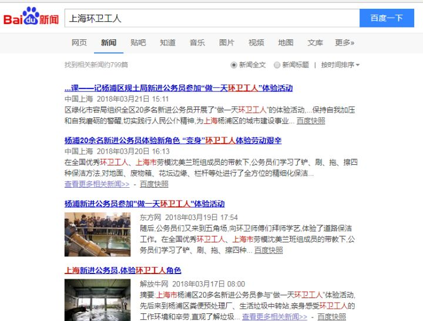
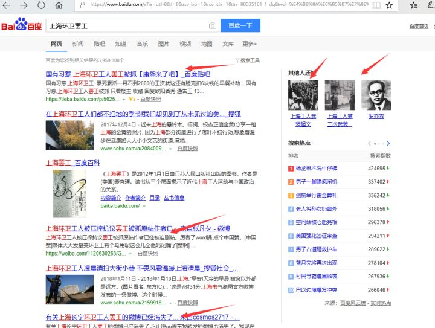

<?xml version="1.0" encoding="utf-8"?><!DOCTYPE en-note SYSTEM "http://xml.evernote.com/pub/enml2.dtd"><en-note><div style="-evernote-webclip:true"><br/><div style="font-size: 16px; display: inline-block;"><div><div style="font-family:-apple-system, BlinkMacSystemFont, &quot;Helvetica Neue&quot;, &quot;PingFang SC&quot;, &quot;Microsoft YaHei&quot;, &quot;Source Han Sans SC&quot;, &quot;Noto Sans CJK SC&quot;, &quot;WenQuanYi Micro Hei&quot;, sans-serif;font-size:15px;color:rgb(26, 26, 26);background:rgb(246, 246, 246);-webkit-tap-highlight-color:rgba(26, 26, 26, 0);"><div><div><div><div style="position:relative;min-width:1032px;overflow:hidden;background:content-box rgb(255, 255, 255);box-shadow:rgba(26, 26, 26, 0.0980392) 0px 1px 3px;z-index:100;"><div style="position:relative;display:flex;width:1000px;height:52px;padding:0px 16px;margin:0px auto;-webkit-box-align:center;align-items:center;transition:transform 0.3s, -webkit-transform 0.3s;"><a href="https://www.zhihu.com/" style="color:inherit;text-decoration:none;"><span style="vertical-align:text-bottom;fill:rgb(0, 132, 255);height:30px;width:64px;"><span><span></span></span></span></a><div style="display:flex;-webkit-box-pack:justify;justify-content:space-between;height:30px;margin-right:18px;margin-left:27px;color:rgb(153, 153, 153);"><a href="https://www.zhihu.com/" style="text-decoration:none;color:rgb(133, 144, 166);padding:0px 15px;font-size:15px;line-height:30px;padding-left:0px;">首页</a><a href="https://www.zhihu.com/explore" style="text-decoration:none;color:rgb(133, 144, 166);padding:0px 15px;font-size:15px;line-height:30px;">发现</a><a href="https://www.zhihu.com/topic" style="text-decoration:none;color:rgb(133, 144, 166);padding:0px 15px;font-size:15px;line-height:30px;">话题</a></div><div style="display:flex;"><div style="position:relative;z-index:104;width:326px;"><div style="position:relative;float:left;overflow:hidden;"><div><div style="position:relative;display:block;"><div style="font-size:14px;position:relative;width:326px;height:34px;padding:4px 10px;display:flex;box-sizing:border-box;border:1px solid rgb(235, 235, 235);border-radius:3px;transition:width 0.2s ease, background 0.3s ease;background:rgb(246, 246, 246);"><div style="-webkit-box-direction:normal;position:absolute;right:10px;display:flex;-webkit-box-orient:vertical;top:50%;flex-direction:column;-webkit-box-pack:center;justify-content:center;margin:auto;transform:translate3d(0px, -50%, 0px);"></div></div></div></div></div></div></div><div style="-webkit-box-flex:1;flex:1 1 0%;-webkit-box-pack:end;justify-content:flex-end;display:flex;-webkit-box-align:center;align-items:center;"><div style="position:relative;display:inline-block;margin-right:40px;"></div><div><div style="position:relative;display:inline-block;margin-right:40px;"></div></div><div><div style="position:relative;display:inline-block;"></div></div></div></div><div style="position:absolute;top:0px;left:0px;width:100%;height:100%;transition:transform 0.3s, -webkit-transform 0.3s;transform:translateY(100%);"><div style="display:flex;-webkit-box-pack:justify;justify-content:space-between;width:1000px;padding:0px 16px;margin:0px auto;-webkit-box-align:center;align-items:center;"><div style="width:694px;padding-left:20px;box-sizing:border-box;"><h1 style="line-height:32px;margin:0px;font-variant:inherit;font-weight:600;font-stretch:inherit;font-size:22px;font-style:inherit;font-family:inherit;color:rgb(26, 26, 26);overflow:hidden;text-overflow:ellipsis;white-space:nowrap;cursor:pointer;">如何看待上海环卫工罢工？</h1></div><div style="width:296px;padding-right:20px;text-align:right;"><div style="display:inline-block;margin:0px -8px;"></div></div></div></div></div></div><span style="display:block;"><div style="position:relative;"><div><div></div><div style="position:relative;min-width:1032px;padding:16px 0px;overflow:hidden;background:rgb(255, 255, 255);box-shadow:rgba(26, 26, 26, 0.0980392) 0px 1px 3px;"><div style=""><div style="width:694px;padding-left:20px;box-sizing:border-box;"><div style="display:flex;"><div style="display:flex;-webkit-box-orient:horizontal;-webkit-box-direction:normal;flex-flow:row wrap;-webkit-box-align:center;align-items:center;margin-right:-5px;padding:1px 0px;"><div style="line-height:30px;position:relative;height:30px;padding:0px 12px;font-size:14px;display:inline-block;color:rgb(0, 132, 255);background:rgba(0, 132, 255, 0.0980392);border-radius:100px;vertical-align:middle;margin:3px 5px 3px 0px;"><span><a href="https://www.zhihu.com/topic/19550818" target="_blank" style="color:inherit;text-decoration:none;"><div style="position:relative;display:inline-block;"><div>上海</div></div></a></span></div><div style="line-height:30px;position:relative;height:30px;padding:0px 12px;font-size:14px;display:inline-block;color:rgb(0, 132, 255);background:rgba(0, 132, 255, 0.0980392);border-radius:100px;vertical-align:middle;margin:3px 5px 3px 0px;"><span><a href="https://www.zhihu.com/topic/19605356" target="_blank" style="color:inherit;text-decoration:none;"><div style="position:relative;display:inline-block;"><div>时事新闻</div></div></a></span></div><div style="line-height:30px;position:relative;height:30px;padding:0px 12px;font-size:14px;display:inline-block;color:rgb(0, 132, 255);background:rgba(0, 132, 255, 0.0980392);border-radius:100px;vertical-align:middle;margin:3px 5px 3px 0px;"><span><a href="https://www.zhihu.com/topic/19611045" target="_blank" style="color:inherit;text-decoration:none;"><div style="position:relative;display:inline-block;"><div>中国社会</div></div></a></span></div><div style="line-height:30px;position:relative;height:30px;padding:0px 12px;font-size:14px;display:inline-block;color:rgb(0, 132, 255);background:rgba(0, 132, 255, 0.0980392);border-radius:100px;vertical-align:middle;margin:3px 5px 3px 0px;"><span><a href="https://www.zhihu.com/topic/19856994" target="_blank" style="color:inherit;text-decoration:none;"><div style="position:relative;display:inline-block;"><div>工人阶级</div></div></a></span></div><div style="line-height:30px;position:relative;height:30px;padding:0px 12px;font-size:14px;display:inline-block;color:rgb(0, 132, 255);background:rgba(0, 132, 255, 0.0980392);border-radius:100px;vertical-align:middle;margin:3px 5px 3px 0px;"><span><a href="https://www.zhihu.com/topic/20050678" target="_blank" style="color:inherit;text-decoration:none;"><div style="position:relative;display:inline-block;"><div>中国特色的社会主义</div></div></a></span></div></div></div><h1 style="font-size:22px;margin:0px;font-variant:inherit;font-family:inherit;font-stretch:inherit;font-style:inherit;line-height:32px;font-weight:600;margin-top:12px;margin-bottom:4px;color:rgb(26, 26, 26);">如何看待上海环卫工罢工？</h1><div><div style="min-height:10px;"><div style="font-size:15px;line-height:25px;"><div><span></span></div></div></div></div></div><div style="width:296px;padding-right:20px;text-align:right;"><div><div><div style="display:flex;width:200px;margin-left:auto;"><div style="-webkit-box-flex:1;flex:1 1 0%;"><div style="text-align:center;line-height:1.6;padding:0px 8px;border-left:1px solid rgb(235, 235, 235);"><div style="font-size:14px;color:rgb(133, 144, 166);">被浏览</div><strong title="340550" style="display:inline-block;font-size:18px;color:rgb(26, 26, 26);font-weight:600;">340,550</strong></div></div></div></div></div></div></div><div style="padding-bottom:12px;margin-top:4px;margin-bottom:-12px;background:rgb(255, 255, 255);"></div></div><div><div><div></div></div></div></div><div style="display:flex;-webkit-box-pack:justify;justify-content:space-between;-webkit-box-align:start;align-items:flex-start;margin:10px auto;padding:0px 16px;width:1000px;min-height:100vh;"><div style="width:694px;padding-bottom:20px;"><div><div></div><div style="margin-bottom:10px;"><div style="background:rgb(255, 255, 255);overflow:hidden;border-radius:2px;box-shadow:rgba(26, 26, 26, 0.0980392) 0px 1px 3px;box-sizing:border-box;margin-bottom:0px;"><div><div style="display:flex;-webkit-box-pack:justify;justify-content:space-between;-webkit-box-align:center;align-items:center;height:50px;margin:0px 20px;border-bottom:1px solid rgb(246, 246, 246);box-sizing:border-box;"><h4 style="margin:0px;font-weight:600;"><span>219 个回答</span></h4><div style="font-size:14px;"><div style="position:relative;display:inline-block;"></div></div></div><div><div><div style="position:relative;padding:16px 20px;"><div><div style="font-size:15px;color:rgb(100, 100, 100);"><div style="display:flex;-webkit-box-align:center;align-items:center;margin-top:0px;"><span><div style="position:relative;display:inline-block;"><div><a target="_blank" href="https://www.zhihu.com/people/chen-shang-83-53" style="color:inherit;text-decoration:none;"></img></a></div></div></span><div style="-webkit-box-flex:1;flex:1 1 0%;margin-left:14px;overflow:hidden;"><div style="display:flex;-webkit-box-align:center;align-items:center;font-size:15px;line-height:1.1;flex-shrink:0;"><span style="font-weight:600;color:rgb(68, 68, 68);"><div style="position:relative;display:inline-block;"><div><a target="_blank" href="https://www.zhihu.com/people/chen-shang-83-53" style="color:inherit;text-decoration:none;">陳觴</a></div></div></span></div><div style="overflow:hidden;"><div style="display:flex;-webkit-box-align:center;align-items:center;margin-top:2px;font-size:14px;"><div style="word-break:break-word;white-space:nowrap;overflow:hidden;text-overflow:ellipsis;color:rgb(100, 100, 100);">We have nothing to lose but our chains.</div></div></div></div></div><div style="margin-top:10px;margin-bottom:-4px;font-size:14px;color:rgb(133, 144, 166);"><span style="color:rgb(133, 144, 166);"><span></span></span></div></div><div style="line-height:1.67;"><div style="margin-top:9px;margin-bottom:-4px;overflow:hidden;"><span style="word-break:break-word;white-space:pre-wrap;"><p style="margin:0px;margin-top:0px;margin-bottom:0.72em;"></p><div style="margin:24px 0px;"></img></div><br/><div style="margin:24px 0px;"></img></div><p style="margin:0px;margin-top:0px;margin-bottom:0.72em;"></p><br/>這些都是暫時的消息，隨時更新</span></div><div><div style="margin-top:10px;font-size:14px;color:rgb(133, 144, 166);"><a target="_blank" href="https://www.zhihu.com/question/270604640/answer/355242498" style="color:inherit;text-decoration:none;"><span>编辑于 20:22</span></a></div></div><div><div style="margin:0px;position:fixed;box-sizing:border-box;-webkit-font-smoothing:subpixel-antialiased;display:flex;-webkit-box-align:center;align-items:center;padding:10px 20px;z-index:2;color:rgb(100, 100, 100);background:rgb(255, 255, 255);clear:both;box-shadow:rgba(26, 26, 26, 0.0980392) 0px -1px 3px;animation:slideInUp 0.2s;width:694px;bottom:0px;left:451.5px;"><span></span><div style="position:relative;display:inline-block;margin-left:24px;font-size:14px;"><div></div></div><div style="position:relative;display:inline-block;margin-left:24px;font-size:14px;"></div></div><div style="left:auto;visibility:hidden;top:auto;right:auto;bottom:auto;position:static;display:flex;float:none;margin:0px -20px -10px;height:54px;width:694px;"></div></div></div></div></div><div style="position:relative;padding:16px 20px;"><div><div style="font-size:15px;color:rgb(100, 100, 100);"><div style="display:flex;-webkit-box-align:center;align-items:center;margin-top:0px;"><span><div style="position:relative;display:inline-block;"><div><a target="_blank" href="https://www.zhihu.com/people/kong-bai-oppo" style="color:inherit;text-decoration:none;"></img></a></div></div></span><div style="-webkit-box-flex:1;flex:1 1 0%;margin-left:14px;overflow:hidden;"><div style="display:flex;-webkit-box-align:center;align-items:center;font-size:15px;line-height:1.1;flex-shrink:0;"><span style="font-weight:600;color:rgb(68, 68, 68);"><div style="position:relative;display:inline-block;"><div><a target="_blank" href="https://www.zhihu.com/people/kong-bai-oppo" style="color:inherit;text-decoration:none;">京都的吉祥兔</a></div></div></span></div><div style="overflow:hidden;"><div style="display:flex;-webkit-box-align:center;align-items:center;margin-top:2px;font-size:14px;"><div style="word-break:break-word;white-space:nowrap;overflow:hidden;text-overflow:ellipsis;color:rgb(100, 100, 100);">五道口女子种树学院(^_−)</div></div></div></div></div><div style="margin-top:10px;margin-bottom:-4px;font-size:14px;color:rgb(133, 144, 166);"><span style="color:rgb(133, 144, 166);"><span></span></span></div></div><div style="line-height:1.67;"><div style="margin-top:9px;margin-bottom:-4px;overflow:hidden;"><span style="word-break:break-word;white-space:pre-wrap;"><p style="margin:0px;margin-top:0px;margin-bottom:0.72em;">附注：这是从海涅的一首诗仿照过来的。各位有兴趣的话，可以去关注欧洲工人运动史。<br/>《上海滩的环卫工》<br/>忧郁的眼里没有泪花，<br/>他们紧紧握着扫帚咬牙。<br/>上海滩，我们扫你的污垢，<br/>我们扫除三重的腐败，<br/>我们扫，我们扫！</p><p style="margin:0px;margin-top:0px;margin-bottom:0.72em;">第一下扫掉那富人的庙堂，<br/>他们从来就没有怜悯的心肠。<br/>我们被压榨到无比痛苦，<br/>接着又像狗一样被解雇，<br/>——我们扫，我们扫！</p><p style="margin:0px;margin-top:0px;margin-bottom:0.72em;">第二下扫除那虚假的工会，<br/>他们从不给我们半分恩惠。<br/>打着虚伪的名号却毫无作为，<br/>红色的墙壁上遍是尘秽，<br/>——我们扫，我们扫！</p><p style="margin:0px;margin-top:0px;margin-bottom:0.72em;">第三下扫净市民们的心房，<br/>唤醒他们脑中沉睡的善良。<br/><b style="font-weight:600;">明明大家同属无产阶级，<br/>为何要把我们看作蝼蚁！</b><br/>——我们扫，我们扫！</p>扫帚在动，汗水在淌，<br/>我们清洁，日夜匆忙。<br/>上海滩，我们扫你的污垢，我们扫，我们扫！</span></div><div><div style="margin-top:10px;font-size:14px;color:rgb(133, 144, 166);"><a target="_blank" href="https://www.zhihu.com/question/270604640/answer/355246429" style="color:inherit;text-decoration:none;"><span>编辑于 22:45</span></a></div></div><div style="display:flex;-webkit-box-align:center;align-items:center;padding:10px 20px;margin:0px -20px -10px;color:rgb(100, 100, 100);background:rgb(255, 255, 255);clear:both;"><span></span><div style="position:relative;display:inline-block;margin-left:24px;font-size:14px;"><div></div></div><div style="position:relative;display:inline-block;margin-left:24px;font-size:14px;"></div></div></div></div><span style="position:absolute;left:0px;right:0px;top:0px;margin:0px 20px;display:block;border-bottom:1px solid rgb(246, 246, 246);"></span></div><div style="position:relative;padding:16px 20px;"><div><div style="font-size:15px;color:rgb(100, 100, 100);"><div style="display:flex;-webkit-box-align:center;align-items:center;margin-top:0px;"><span></img></span><div style="-webkit-box-flex:1;flex:1 1 0%;margin-left:14px;overflow:hidden;"><div style="display:flex;-webkit-box-align:center;align-items:center;font-size:15px;line-height:1.1;flex-shrink:0;"><span style="font-weight:600;color:rgb(68, 68, 68);">匿名用户</span></div><div style="overflow:hidden;"><div style="display:flex;-webkit-box-align:center;align-items:center;margin-top:2px;font-size:14px;"></div></div></div></div><div style="margin-top:10px;margin-bottom:-4px;font-size:14px;color:rgb(133, 144, 166);"><span style="color:rgb(133, 144, 166);"><span></span></span></div></div><div style="line-height:1.67;"><div style="margin-top:9px;margin-bottom:-4px;overflow:hidden;"><span style="word-break:break-word;white-space:pre-wrap;"><p style="margin:0px;margin-top:0px;margin-bottom:0.72em;">我国宪法写的，中国领导阶级是工人阶级。</p><p style="margin:0px;margin-top:0px;margin-bottom:0.72em;">不过有趣的是，宪法里没有明确工人阶级有罢工权（绝大多数资本主义国家在法律层面明确了罢工权）。</p><p style="margin:0px;margin-top:0px;margin-bottom:0.72em;">某种意义上讲，环卫工人是违法的——所以这事在微博不能谈，知乎估计也不能谈。</p><p style="margin:0px;margin-top:0px;margin-bottom:0.72em;"><br/></p><p style="margin:0px;margin-top:0px;margin-bottom:0.72em;">所以这里就有一个非常值得深思的问题：要么我理解错了“工人”，要么我理解错了“领导”，要么我理解错了“宪法”。</p></span></div><div><div style="margin-top:10px;font-size:14px;color:rgb(133, 144, 166);"><a target="_blank" href="https://www.zhihu.com/question/270604640/answer/355254802" style="color:inherit;text-decoration:none;"><span>发布于 20:17</span></a></div></div><div style="display:flex;-webkit-box-align:center;align-items:center;padding:10px 20px;margin:0px -20px -10px;color:rgb(100, 100, 100);background:rgb(255, 255, 255);clear:both;"><span></span><div style="position:relative;display:inline-block;margin-left:24px;font-size:14px;"><div></div></div><div style="position:relative;display:inline-block;margin-left:24px;font-size:14px;"></div></div></div></div><span style="position:absolute;left:0px;right:0px;top:0px;margin:0px 20px;display:block;border-bottom:1px solid rgb(246, 246, 246);"></span></div><div style="position:relative;padding:16px 20px;"><div><div style="font-size:15px;color:rgb(100, 100, 100);"><div style="display:flex;-webkit-box-align:center;align-items:center;margin-top:0px;"><span><div style="position:relative;display:inline-block;"><div><a target="_blank" href="https://www.zhihu.com/people/winnie-pooh-49" style="color:inherit;text-decoration:none;"></img></a></div></div></span><div style="-webkit-box-flex:1;flex:1 1 0%;margin-left:14px;overflow:hidden;"><div style="display:flex;-webkit-box-align:center;align-items:center;font-size:15px;line-height:1.1;flex-shrink:0;"><span style="font-weight:600;color:rgb(68, 68, 68);"><div style="position:relative;display:inline-block;"><div><a target="_blank" href="https://www.zhihu.com/people/winnie-pooh-49" style="color:inherit;text-decoration:none;">Winnie Pooh</a></div></div></span></div><div style="overflow:hidden;"><div style="display:flex;-webkit-box-align:center;align-items:center;margin-top:2px;font-size:14px;"><div style="word-break:break-word;white-space:nowrap;overflow:hidden;text-overflow:ellipsis;color:rgb(100, 100, 100);">Maoist</div></div></div></div></div><div style="margin-top:10px;margin-bottom:-4px;font-size:14px;color:rgb(133, 144, 166);"><span style="color:rgb(133, 144, 166);"><span></span></span></div></div><div style="line-height:1.67;"><div style="margin-top:9px;margin-bottom:-4px;overflow:hidden;"><span style="word-break:break-word;white-space:pre-wrap;"><p style="margin:0px;margin-top:0px;margin-bottom:0.72em;">首先大家要明白一件事，工人罢工或维权这种事在中国真不是什么稀罕事。</p><p style="margin:0px;margin-top:0px;margin-bottom:0.72em;">我就说今年3月吧，就有广西柳州环卫工人罢工、广州番禺工人罢工、上海环卫工人罢工等数十起罢工或维权事件，只不过因为【你懂的】原因，这些新闻很少报道，甚至你用【国内的】搜索引擎也很难获取相关信息。</p><p style="margin:0px;margin-top:0px;margin-bottom:0.72em;">这次罢工的原因是因为</p><p style="margin:0px;margin-top:0px;margin-bottom:0.72em;"></p><div style="margin:24px 0px;"></img></div><p style="margin:0px;margin-top:0px;margin-bottom:0.72em;"></p><p style="margin:0px;margin-top:0px;margin-bottom:0.72em;">有人打电话给上海【XXXXX】行业工会，工作人员表示不清楚。打电话给图中上海【XXXXX】公司，人家让你去问有关部门</p>然而，有关部门的处理方式却是<br/><div style="margin:24px 0px;"></img></div><br/><div style="margin:24px 0px;"></img></div></span></div><div><div style="margin-top:10px;font-size:14px;color:rgb(133, 144, 166);"><a target="_blank" href="https://www.zhihu.com/question/270604640/answer/355267579" style="color:inherit;text-decoration:none;"><span>编辑于 21:42</span></a></div></div><div style="display:flex;-webkit-box-align:center;align-items:center;padding:10px 20px;margin:0px -20px -10px;color:rgb(100, 100, 100);background:rgb(255, 255, 255);clear:both;"><span></span><div style="position:relative;display:inline-block;margin-left:24px;font-size:14px;"><div></div></div><div style="position:relative;display:inline-block;margin-left:24px;font-size:14px;"></div></div></div></div><span style="position:absolute;left:0px;right:0px;top:0px;margin:0px 20px;display:block;border-bottom:1px solid rgb(246, 246, 246);"></span></div><div style="position:relative;padding:16px 20px;"><div><div style="font-size:15px;color:rgb(100, 100, 100);"><div style="display:flex;-webkit-box-align:center;align-items:center;margin-top:0px;"><span><div style="position:relative;display:inline-block;"><div><a target="_blank" href="https://www.zhihu.com/people/yi-tang-tian" style="color:inherit;text-decoration:none;"></img></a></div></div></span><div style="-webkit-box-flex:1;flex:1 1 0%;margin-left:14px;overflow:hidden;"><div style="display:flex;-webkit-box-align:center;align-items:center;font-size:15px;line-height:1.1;flex-shrink:0;"><span style="font-weight:600;color:rgb(68, 68, 68);"><div style="position:relative;display:inline-block;"><div><a target="_blank" href="https://www.zhihu.com/people/yi-tang-tian" style="color:inherit;text-decoration:none;">汉唐天</a></div></div></span></div><div style="overflow:hidden;"><div style="display:flex;-webkit-box-align:center;align-items:center;margin-top:2px;font-size:14px;"><div style="word-break:break-word;white-space:nowrap;overflow:hidden;text-overflow:ellipsis;color:rgb(100, 100, 100);">银鳞胸甲，蓝色品质，5G一件，先到先得……</div></div></div></div></div><div style="margin-top:10px;margin-bottom:-4px;font-size:14px;color:rgb(133, 144, 166);"><span style="color:rgb(133, 144, 166);"><span></span></span></div></div><div style="line-height:1.67;"><div style="margin-top:9px;margin-bottom:-4px;overflow:hidden;"><span style="word-break:break-word;white-space:pre-wrap;"><p style="margin:0px;margin-top:0px;margin-bottom:0.72em;">劳动者争取权益的活动都该支持。</p><blockquote style="padding-left:1em;margin:1em 0px;color:rgb(133, 144, 166);border-left:4px solid rgb(211, 211, 211);">中华人民共和国宪法第三十五条：中华人民共和国公民有言论、出版、集会、结社、游行、示威的自由。</blockquote><p style="margin:0px;margin-top:0px;margin-bottom:0.72em;">不过呢，当刁民作祟的时候，总还是有办法反制的。</p><blockquote style="padding-left:1em;margin:1em 0px;color:rgb(133, 144, 166);border-left:4px solid rgb(211, 211, 211);">中华人民共和国宪法第五十一条：中华人民共和国公民在行使自由和权利的时候，不得损害国家的、社会的、集体的利益和其他公民的合法的自由和权利。</blockquote><p style="margin:0px;margin-top:0px;margin-bottom:0.72em;">看你怎么理解<b style="font-weight:600;">国家的</b>、<b style="font-weight:600;">社会的</b>、<b style="font-weight:600;">集体的</b>利益了。</p><p style="margin:0px;margin-top:0px;margin-bottom:0.72em;">其实法律这个东西无非是一行文字而已，本身并没有什么约束力。宪法的本质是<b style="font-weight:600;">不同团体、组织之间达成的一个平衡</b>，<b style="font-weight:600;">而非唯一权力的自我限制</b>。因此宪法的约束力来自打破平衡之后的报复，而非高尚的道德情操。</p><p style="margin:0px;margin-top:0px;margin-bottom:0.72em;">最后，衷心希望罢工能够取得圆满成功，能为劳动者带来切实利益。</p></span></div><div><div style="margin-top:10px;font-size:14px;color:rgb(133, 144, 166);"><a target="_blank" href="https://www.zhihu.com/question/270604640/answer/355250502" style="color:inherit;text-decoration:none;"><span>编辑于 20:24</span></a></div></div><div style="display:flex;-webkit-box-align:center;align-items:center;padding:10px 20px;margin:0px -20px -10px;color:rgb(100, 100, 100);background:rgb(255, 255, 255);clear:both;"><span></span><div style="position:relative;display:inline-block;margin-left:24px;font-size:14px;"><div></div></div><div style="position:relative;display:inline-block;margin-left:24px;font-size:14px;"></div></div></div></div><span style="position:absolute;left:0px;right:0px;top:0px;margin:0px 20px;display:block;border-bottom:1px solid rgb(246, 246, 246);"></span></div><div style="position:relative;padding:16px 20px;"><div><div style="font-size:15px;color:rgb(100, 100, 100);"><div style="display:flex;-webkit-box-align:center;align-items:center;margin-top:0px;"><span><div style="position:relative;display:inline-block;"><div><a target="_blank" href="https://www.zhihu.com/people/yyc19971024" style="color:inherit;text-decoration:none;"></img></a></div></div></span><div style="-webkit-box-flex:1;flex:1 1 0%;margin-left:14px;overflow:hidden;"><div style="display:flex;-webkit-box-align:center;align-items:center;font-size:15px;line-height:1.1;flex-shrink:0;"><span style="font-weight:600;color:rgb(68, 68, 68);"><div style="position:relative;display:inline-block;"><div><a target="_blank" href="https://www.zhihu.com/people/yyc19971024" style="color:inherit;text-decoration:none;">沧江</a></div></div></span></div><div style="overflow:hidden;"><div style="display:flex;-webkit-box-align:center;align-items:center;margin-top:2px;font-size:14px;"><div style="word-break:break-word;white-space:nowrap;overflow:hidden;text-overflow:ellipsis;color:rgb(100, 100, 100);">为自己的无知浅薄而恐惧。</div></div></div></div></div><div style="margin-top:10px;margin-bottom:-4px;font-size:14px;color:rgb(133, 144, 166);"><span style="color:rgb(133, 144, 166);"><span></span></span></div></div><div style="line-height:1.67;"><div style="margin-top:9px;margin-bottom:-4px;overflow:hidden;"><span style="word-break:break-word;white-space:pre-wrap;"><p style="margin:0px;margin-top:0px;margin-bottom:0.72em;">1917年，上海，英美烟厂，罢工三千，反对减工资，三星期。</p><p style="margin:0px;margin-top:0px;margin-bottom:0.72em;">愤怒的警察贴出告示：不许聚众滋闹侮辱洋人。</p><p style="margin:0px;margin-top:0px;margin-bottom:0.72em;"><br/></p><p style="margin:0px;margin-top:0px;margin-bottom:0.72em;">1921年，上海，英美烟厂，罢工八千，反对克扣工资殴打工人。</p><p style="margin:0px;margin-top:0px;margin-bottom:0.72em;">时值中共一大，李启汉到烟厂了解情况组织罢工。这是中国共产党第一次领导英美烟厂罢工。</p><p style="margin:0px;margin-top:0px;margin-bottom:0.72em;"><br/></p><p style="margin:0px;margin-top:0px;margin-bottom:0.72em;">环卫工人这次想等谁？</p></span></div><div><div style="margin-top:10px;font-size:14px;color:rgb(133, 144, 166);"><a target="_blank" href="https://www.zhihu.com/question/270604640/answer/355268435" style="color:inherit;text-decoration:none;"><span>编辑于 21:54</span></a></div></div><div style="display:flex;-webkit-box-align:center;align-items:center;padding:10px 20px;margin:0px -20px -10px;color:rgb(100, 100, 100);background:rgb(255, 255, 255);clear:both;"><span></span><div style="position:relative;display:inline-block;margin-left:24px;font-size:14px;"><div></div></div><div style="position:relative;display:inline-block;margin-left:24px;font-size:14px;"></div></div></div></div><span style="position:absolute;left:0px;right:0px;top:0px;margin:0px 20px;display:block;border-bottom:1px solid rgb(246, 246, 246);"></span></div><div style="position:relative;padding:16px 20px;"><div><div style="font-size:15px;color:rgb(100, 100, 100);"><div style="display:flex;-webkit-box-align:center;align-items:center;margin-top:0px;"><span><div style="position:relative;display:inline-block;"><div><a target="_blank" href="https://www.zhihu.com/people/li-jian-qiu" style="color:inherit;text-decoration:none;"></img></a></div></div></span><div style="-webkit-box-flex:1;flex:1 1 0%;margin-left:14px;overflow:hidden;"><div style="display:flex;-webkit-box-align:center;align-items:center;font-size:15px;line-height:1.1;flex-shrink:0;"><span style="font-weight:600;color:rgb(68, 68, 68);"><div style="position:relative;display:inline-block;"><div><a target="_blank" href="https://www.zhihu.com/people/li-jian-qiu" style="color:inherit;text-decoration:none;">李建秋</a></div></div></span></div><div style="overflow:hidden;"><div style="display:flex;-webkit-box-align:center;align-items:center;margin-top:2px;font-size:14px;"><div style="word-break:break-word;white-space:nowrap;overflow:hidden;text-overflow:ellipsis;color:rgb(100, 100, 100);">公众号：李建秋的世界</div></div></div></div></div><div style="margin-top:10px;margin-bottom:-4px;font-size:14px;color:rgb(133, 144, 166);"><span style="color:rgb(133, 144, 166);"><span></span></span></div></div><div style="line-height:1.67;"><div style="margin-top:9px;margin-bottom:-4px;overflow:hidden;"><span style="word-break:break-word;white-space:pre-wrap;"><p style="margin:0px;margin-top:0px;margin-bottom:0.72em;">当然支持。</p><p style="margin:0px;margin-top:0px;margin-bottom:0.72em;">虽然我具体情况还不知道，但是底层人民艰辛大家都清楚，有在上海的来说一下具体情况吗？</p><p style="margin:0px;margin-top:0px;margin-bottom:0.72em;">回答一下，唤起关注度。</p></span></div><div><div style="margin-top:10px;font-size:14px;color:rgb(133, 144, 166);"><a target="_blank" href="https://www.zhihu.com/question/270604640/answer/355233765" style="color:inherit;text-decoration:none;"><span>发布于 19:42</span></a></div></div><div style="display:flex;-webkit-box-align:center;align-items:center;padding:10px 20px;margin:0px -20px -10px;color:rgb(100, 100, 100);background:rgb(255, 255, 255);clear:both;"><span></span><div style="position:relative;display:inline-block;margin-left:24px;font-size:14px;"><div></div></div><div style="position:relative;display:inline-block;margin-left:24px;font-size:14px;"></div></div></div></div><span style="position:absolute;left:0px;right:0px;top:0px;margin:0px 20px;display:block;border-bottom:1px solid rgb(246, 246, 246);"></span></div><div style="position:relative;padding:16px 20px;"><div><div style="font-size:15px;color:rgb(100, 100, 100);"><div style="display:flex;-webkit-box-align:center;align-items:center;margin-top:0px;"><span><div style="position:relative;display:inline-block;"><div><a target="_blank" href="https://www.zhihu.com/people/hou-yu-24-78" style="color:inherit;text-decoration:none;"></img></a></div></div></span><div style="-webkit-box-flex:1;flex:1 1 0%;margin-left:14px;overflow:hidden;"><div style="display:flex;-webkit-box-align:center;align-items:center;font-size:15px;line-height:1.1;flex-shrink:0;"><span style="font-weight:600;color:rgb(68, 68, 68);"><div style="position:relative;display:inline-block;"><div><a target="_blank" href="https://www.zhihu.com/people/hou-yu-24-78" style="color:inherit;text-decoration:none;">陆千里</a></div></div></span></div><div style="overflow:hidden;"><div style="display:flex;-webkit-box-align:center;align-items:center;margin-top:2px;font-size:14px;"><div style="word-break:break-word;white-space:nowrap;overflow:hidden;text-overflow:ellipsis;color:rgb(100, 100, 100);">格物致知</div></div></div></div></div><div style="margin-top:10px;margin-bottom:-4px;font-size:14px;color:rgb(133, 144, 166);"><span style="color:rgb(133, 144, 166);"><span></span></span></div></div><div style="line-height:1.67;"><div style="margin-top:9px;margin-bottom:-4px;overflow:hidden;"><span style="word-break:break-word;white-space:pre-wrap;">支持啊<br/>是时候体现一下 人民民主专政制度 的优越性了</span></div><div><div style="margin-top:10px;font-size:14px;color:rgb(133, 144, 166);"><a target="_blank" href="https://www.zhihu.com/question/270604640/answer/355235087" style="color:inherit;text-decoration:none;"><span>编辑于 19:45</span></a></div></div><div style="display:flex;-webkit-box-align:center;align-items:center;padding:10px 20px;margin:0px -20px -10px;color:rgb(100, 100, 100);background:rgb(255, 255, 255);clear:both;"><span></span><div style="position:relative;display:inline-block;margin-left:24px;font-size:14px;"><div></div></div><div style="position:relative;display:inline-block;margin-left:24px;font-size:14px;"></div></div></div></div><span style="position:absolute;left:0px;right:0px;top:0px;margin:0px 20px;display:block;border-bottom:1px solid rgb(246, 246, 246);"></span></div><div style="position:relative;padding:16px 20px;"><div><div style="font-size:15px;color:rgb(100, 100, 100);"><div style="display:flex;-webkit-box-align:center;align-items:center;margin-top:0px;"><span><div style="position:relative;display:inline-block;"><div><a target="_blank" href="https://www.zhihu.com/people/ruo-yu-28-69" style="color:inherit;text-decoration:none;"></img></a></div></div></span><div style="-webkit-box-flex:1;flex:1 1 0%;margin-left:14px;overflow:hidden;"><div style="display:flex;-webkit-box-align:center;align-items:center;font-size:15px;line-height:1.1;flex-shrink:0;"><span style="font-weight:600;color:rgb(68, 68, 68);"><div style="position:relative;display:inline-block;"><div><a target="_blank" href="https://www.zhihu.com/people/ruo-yu-28-69" style="color:inherit;text-decoration:none;">若羽</a></div></div></span></div><div style="overflow:hidden;"><div style="display:flex;-webkit-box-align:center;align-items:center;margin-top:2px;font-size:14px;"></div></div></div></div><div style="margin-top:10px;margin-bottom:-4px;font-size:14px;color:rgb(133, 144, 166);"><span style="color:rgb(133, 144, 166);"><span></span></span></div></div><div style="line-height:1.67;"><div style="margin-top:9px;margin-bottom:-4px;overflow:hidden;"><span style="word-break:break-word;white-space:pre-wrap;">斗争工人年纪偏大，他们见到的是周围的生活世界，他们从生活出发进行学习，也没有想到用自媒体扩散消息，最早微博上帮助爆料的是一个学生。然而，当一个城区的环卫工人停止工作，你能看到作为集体的无产阶级的能量。<br/>不过，他们面临的是具有全局视角的对手，老板们调来了市容，通过劳务机构找到临时工，以覆盖清扫工作，降低维权产生的社会效果。市容工人一天工资180元，要五点集合，但他们不干就会马上面临失业的危险；一些临时工刚到一线城市，需要立即有报酬来支付生活开支。他们是同情斗争的工人的，但生活所迫使得他们必须干“拖后腿”的事情，如果不干就会沦落街头。<br/>顺便更正下，取代的劳务派遣工工资在一个月4500左右（包括加班，不包吃住），原来一线工人的工资应该不会低于这个数目。工作时间从早晨6点到晚上7点。<br/>市政工程的项目通常经费应该不会吝啬，但目前这类环卫工程以市场化的方式会被承包出去，正式工的职位被编制内本地人占据，临时的、派遣的工人承担繁重的工作。目前的抗议得到了市民的同情，在高昂物价情况下，减薪这种做法是对工人赤裸裸的挑衅。然而，让步多少意味着要对市政项目经费进行重新审核。目前，工人跨越区域，到静安区的上海市绿化市容管理局进行倡议了。预测政府会有让步，但肯定要工人先复工，等上面安排。</span></div><div><div style="margin-top:10px;font-size:14px;color:rgb(133, 144, 166);"><a target="_blank" href="https://www.zhihu.com/question/270604640/answer/355268834" style="color:inherit;text-decoration:none;"><span>发布于 20:39</span></a></div></div><div style="display:flex;-webkit-box-align:center;align-items:center;padding:10px 20px;margin:0px -20px -10px;color:rgb(100, 100, 100);background:rgb(255, 255, 255);clear:both;"><span></span><div style="position:relative;display:inline-block;margin-left:24px;font-size:14px;"><div></div></div><div style="position:relative;display:inline-block;margin-left:24px;font-size:14px;"></div></div></div></div><span style="position:absolute;left:0px;right:0px;top:0px;margin:0px 20px;display:block;border-bottom:1px solid rgb(246, 246, 246);"></span></div><div style="position:relative;padding:16px 20px;"><div><div style="font-size:15px;color:rgb(100, 100, 100);"><div style="display:flex;-webkit-box-align:center;align-items:center;margin-top:0px;"><span><div style="position:relative;display:inline-block;"><div><a target="_blank" href="https://www.zhihu.com/people/liulangdehama" style="color:inherit;text-decoration:none;"></img></a></div></div></span><div style="-webkit-box-flex:1;flex:1 1 0%;margin-left:14px;overflow:hidden;"><div style="display:flex;-webkit-box-align:center;align-items:center;font-size:15px;line-height:1.1;flex-shrink:0;"><span style="font-weight:600;color:rgb(68, 68, 68);"><div style="position:relative;display:inline-block;"><div><a target="_blank" href="https://www.zhihu.com/people/liulangdehama" style="color:inherit;text-decoration:none;">流浪的蛤蟆</a></div></div></span></div><div style="overflow:hidden;"><div style="display:flex;-webkit-box-align:center;align-items:center;margin-top:2px;font-size:14px;"><div style="word-break:break-word;white-space:nowrap;overflow:hidden;text-overflow:ellipsis;color:rgb(100, 100, 100);">为了保持生态平衡，请爱护**……违禁词，老签名改不回来了……</div></div></div></div></div><div style="margin-top:10px;margin-bottom:-4px;font-size:14px;color:rgb(133, 144, 166);"><span style="color:rgb(133, 144, 166);"><span></span></span></div></div><div style="line-height:1.67;"><div style="margin-top:9px;margin-bottom:-4px;overflow:hidden;"><span style="word-break:break-word;white-space:pre-wrap;"><p style="margin:0px;margin-top:0px;margin-bottom:0.72em;">不了解，没看法。</p><p style="margin:0px;margin-top:0px;margin-bottom:0.72em;">我老娘也是环卫工，当年上班的时候老太太还是蛮老实的， 退休后开始跟一群退休环卫老太太去省委静坐。</p><p style="margin:0px;margin-top:0px;margin-bottom:0.72em;">上班的时候怕被开除，劳保没了下半辈子都完了，退休工人没法开除就不怕了。</p><p style="margin:0px;margin-top:0px;margin-bottom:0.72em;">就是因为克扣工资……</p><p style="margin:0px;margin-top:0px;margin-bottom:0.72em;">有一次老娘胜利归来，我问补了多少，老太太说好几百呢，补的是五年前的，就我们退休的有，怕我们闹，那些上班的还没呢。</p><p style="margin:0px;margin-top:0px;margin-bottom:0.72em;">我老娘还是有编制的。</p><p style="margin:0px;margin-top:0px;margin-bottom:0.72em;"></p></span></div><div><div style="margin-top:10px;font-size:14px;color:rgb(133, 144, 166);"><a target="_blank" href="https://www.zhihu.com/question/270604640/answer/355298461" style="color:inherit;text-decoration:none;"><span>编辑于 21:27</span></a></div></div><div style="display:flex;-webkit-box-align:center;align-items:center;padding:10px 20px;margin:0px -20px -10px;color:rgb(100, 100, 100);background:rgb(255, 255, 255);clear:both;"><span></span><div style="position:relative;display:inline-block;margin-left:24px;font-size:14px;"><div></div></div><div style="position:relative;display:inline-block;margin-left:24px;font-size:14px;"></div></div></div></div><span style="position:absolute;left:0px;right:0px;top:0px;margin:0px 20px;display:block;border-bottom:1px solid rgb(246, 246, 246);"></span></div><div style="position:relative;padding:16px 20px;"><div><div style="font-size:15px;color:rgb(100, 100, 100);"><div style="display:flex;-webkit-box-align:center;align-items:center;margin-top:0px;"><span><div style="position:relative;display:inline-block;"><div><a target="_blank" href="https://www.zhihu.com/people/heresy-clyne" style="color:inherit;text-decoration:none;"></img></a></div></div></span><div style="-webkit-box-flex:1;flex:1 1 0%;margin-left:14px;overflow:hidden;"><div style="display:flex;-webkit-box-align:center;align-items:center;font-size:15px;line-height:1.1;flex-shrink:0;"><span style="font-weight:600;color:rgb(68, 68, 68);"><div style="position:relative;display:inline-block;"><div><a target="_blank" href="https://www.zhihu.com/people/heresy-clyne" style="color:inherit;text-decoration:none;">Clyne</a></div></div></span></div><div style="overflow:hidden;"><div style="display:flex;-webkit-box-align:center;align-items:center;margin-top:2px;font-size:14px;"></div></div></div></div><div style="margin-top:10px;margin-bottom:-4px;font-size:14px;color:rgb(133, 144, 166);"><span style="color:rgb(133, 144, 166);"><span></span></span></div></div><div style="line-height:1.67;"><div style="margin-top:9px;margin-bottom:-4px;overflow:hidden;"><span style="word-break:break-word;white-space:pre-wrap;"><p style="margin:0px;margin-top:0px;margin-bottom:0.72em;"></p><div style="margin:24px 0px;"></img></div><p style="margin:0px;margin-top:0px;margin-bottom:0.72em;">想起了法国罢工时的弹幕，哈哈哈哈哈。</p></span></div><div><div style="margin-top:10px;font-size:14px;color:rgb(133, 144, 166);"><a target="_blank" href="https://www.zhihu.com/question/270604640/answer/355294537" style="color:inherit;text-decoration:none;"><span>编辑于 21:20</span></a></div></div><div style="display:flex;-webkit-box-align:center;align-items:center;padding:10px 20px;margin:0px -20px -10px;color:rgb(100, 100, 100);background:rgb(255, 255, 255);clear:both;"><span></span><div style="position:relative;display:inline-block;margin-left:24px;font-size:14px;"><div></div></div><div style="position:relative;display:inline-block;margin-left:24px;font-size:14px;"></div></div></div></div><span style="position:absolute;left:0px;right:0px;top:0px;margin:0px 20px;display:block;border-bottom:1px solid rgb(246, 246, 246);"></span></div><div style="position:relative;padding:16px 20px;"><div><div style="font-size:15px;color:rgb(100, 100, 100);"><div style="display:flex;-webkit-box-align:center;align-items:center;margin-top:0px;"><span><div style="position:relative;display:inline-block;"><div><a target="_blank" href="https://www.zhihu.com/people/xia-yuan-ding" style="color:inherit;text-decoration:none;"></img></a></div></div></span><div style="-webkit-box-flex:1;flex:1 1 0%;margin-left:14px;overflow:hidden;"><div style="display:flex;-webkit-box-align:center;align-items:center;font-size:15px;line-height:1.1;flex-shrink:0;"><span style="font-weight:600;color:rgb(68, 68, 68);"><div style="position:relative;display:inline-block;"><div><a target="_blank" href="https://www.zhihu.com/people/xia-yuan-ding" style="color:inherit;text-decoration:none;">夏元鼎</a></div></div></span></div><div style="overflow:hidden;"><div style="display:flex;-webkit-box-align:center;align-items:center;margin-top:2px;font-size:14px;"><div style="word-break:break-word;white-space:nowrap;overflow:hidden;text-overflow:ellipsis;color:rgb(100, 100, 100);">你们点赞的同时，也顺手点下关注嘛 （＃￣▽￣＃）</div></div></div></div></div><div style="margin-top:10px;margin-bottom:-4px;font-size:14px;color:rgb(133, 144, 166);"><span style="color:rgb(133, 144, 166);"><span></span></span></div></div><div style="line-height:1.67;"><div style="margin-top:9px;margin-bottom:-4px;overflow:hidden;"><span style="word-break:break-word;white-space:pre-wrap;"><p style="margin:0px;margin-top:0px;margin-bottom:0.72em;">谢邀</p><p style="margin:0px;margin-top:0px;margin-bottom:0.72em;">这个时候工会在哪里？</p><p style="margin:0px;margin-top:0px;margin-bottom:0.72em;">媒体和记者在哪里？</p><p style="margin:0px;margin-top:0px;margin-bottom:0.72em;">政府和相关部门又在哪里？</p><p style="margin:0px;margin-top:0px;margin-bottom:0.72em;"><br/></p><p style="margin:0px;margin-top:0px;margin-bottom:0.72em;">来自“著名”反华媒体新乡时报的统计，<b style="font-weight:600;">仅2015年到2017年间，在华被强制取缔和解散的民间工会维权组织就有137家 </b></p><p style="margin:0px;margin-top:0px;margin-bottom:0.72em;">所以目前的局面很让人意外吗？</p><p style="margin:0px;margin-top:0px;margin-bottom:0.72em;">当青天大老爷不愿意出来发声，而民间机构被强行定性为非法的时候，谁来保护环卫工人这些底层人民的利益，我想这是个无解的问题，那就只能罢工喽</p><p style="margin:0px;margin-top:0px;margin-bottom:0.72em;"><br/></p><p style="margin:0px;margin-top:0px;margin-bottom:0.72em;"><br/></p><p style="margin:0px;margin-top:0px;margin-bottom:0.72em;">最后趁着机会打一个小广告，大家可以关注我的，不会让各位失望的</p></span></div><div><div style="margin-top:10px;font-size:14px;color:rgb(133, 144, 166);"><a target="_blank" href="https://www.zhihu.com/question/270604640/answer/355257750" style="color:inherit;text-decoration:none;"><span>编辑于 22:38</span></a></div></div><div style="display:flex;-webkit-box-align:center;align-items:center;padding:10px 20px;margin:0px -20px -10px;color:rgb(100, 100, 100);background:rgb(255, 255, 255);clear:both;"><span></span><div style="position:relative;display:inline-block;margin-left:24px;font-size:14px;"><div></div></div><div style="position:relative;display:inline-block;margin-left:24px;font-size:14px;"></div></div></div></div><span style="position:absolute;left:0px;right:0px;top:0px;margin:0px 20px;display:block;border-bottom:1px solid rgb(246, 246, 246);"></span></div><div style="position:relative;padding:16px 20px;"><div><div style="font-size:15px;color:rgb(100, 100, 100);"><div style="display:flex;-webkit-box-align:center;align-items:center;margin-top:0px;"><span><div style="position:relative;display:inline-block;"><div><a target="_blank" href="https://www.zhihu.com/people/lan-yun-yi-8" style="color:inherit;text-decoration:none;"></img></a></div></div></span><div style="-webkit-box-flex:1;flex:1 1 0%;margin-left:14px;overflow:hidden;"><div style="display:flex;-webkit-box-align:center;align-items:center;font-size:15px;line-height:1.1;flex-shrink:0;"><span style="font-weight:600;color:rgb(68, 68, 68);"><div style="position:relative;display:inline-block;"><div><a target="_blank" href="https://www.zhihu.com/people/lan-yun-yi-8" style="color:inherit;text-decoration:none;">王大顺</a></div></div></span></div><div style="overflow:hidden;"><div style="display:flex;-webkit-box-align:center;align-items:center;margin-top:2px;font-size:14px;"></div></div></div></div><div style="margin-top:10px;margin-bottom:-4px;font-size:14px;color:rgb(133, 144, 166);"><span style="color:rgb(133, 144, 166);"><span></span></span></div></div><div style="line-height:1.67;"><div style="margin-top:9px;margin-bottom:-4px;overflow:hidden;"><span style="word-break:break-word;white-space:pre-wrap;"><p style="margin:0px;margin-top:0px;margin-bottom:0.72em;">这时候就是展现武警作用的时候了。</p><p style="margin:0px;margin-top:0px;margin-bottom:0.72em;"><br/></p><p style="margin:0px;margin-top:0px;margin-bottom:0.72em;">解放军负责解决我国统治阶级与别国统治阶级之间的矛盾。</p><p style="margin:0px;margin-top:0px;margin-bottom:0.72em;">武警负责解决我国统治阶级与我国被统治阶级的之间矛盾。</p></span></div><div><div style="margin-top:10px;font-size:14px;color:rgb(133, 144, 166);"><a target="_blank" href="https://www.zhihu.com/question/270604640/answer/355239844" style="color:inherit;text-decoration:none;"><span>发布于 19:52</span></a></div></div><div style="display:flex;-webkit-box-align:center;align-items:center;padding:10px 20px;margin:0px -20px -10px;color:rgb(100, 100, 100);background:rgb(255, 255, 255);clear:both;"><span></span><div style="position:relative;display:inline-block;margin-left:24px;font-size:14px;"><div></div></div><div style="position:relative;display:inline-block;margin-left:24px;font-size:14px;"></div></div></div></div><span style="position:absolute;left:0px;right:0px;top:0px;margin:0px 20px;display:block;border-bottom:1px solid rgb(246, 246, 246);"></span></div><div style="position:relative;padding:16px 20px;"><div><div style="font-size:15px;color:rgb(100, 100, 100);"><div style="display:flex;-webkit-box-align:center;align-items:center;margin-top:0px;"><span><div style="position:relative;display:inline-block;"><div><a target="_blank" href="https://www.zhihu.com/people/MayDayParty" style="color:inherit;text-decoration:none;"></img></a></div></div></span><div style="-webkit-box-flex:1;flex:1 1 0%;margin-left:14px;overflow:hidden;"><div style="display:flex;-webkit-box-align:center;align-items:center;font-size:15px;line-height:1.1;flex-shrink:0;"><span style="font-weight:600;color:rgb(68, 68, 68);"><div style="position:relative;display:inline-block;"><div><a target="_blank" href="https://www.zhihu.com/people/MayDayParty" style="color:inherit;text-decoration:none;">伍昴党</a></div></div></span></div><div style="overflow:hidden;"><div style="display:flex;-webkit-box-align:center;align-items:center;margin-top:2px;font-size:14px;"><div style="word-break:break-word;white-space:nowrap;overflow:hidden;text-overflow:ellipsis;color:rgb(100, 100, 100);">人人网第一大党，五迷的风向标，红到发黑.公众号:lingyankanlishi</div></div></div></div></div><div style="margin-top:10px;margin-bottom:-4px;font-size:14px;color:rgb(133, 144, 166);"><span style="color:rgb(133, 144, 166);"><span></span></span></div></div><div style="line-height:1.67;"><div style="margin-top:9px;margin-bottom:-4px;overflow:hidden;"><span style="word-break:break-word;white-space:pre-wrap;">工人阶级领导的国家里工人不能罢工，由此可见工人阶级和工人应该是雷峰塔和雷锋的关系。</span></div><div><div style="margin-top:10px;font-size:14px;color:rgb(133, 144, 166);"><a target="_blank" href="https://www.zhihu.com/question/270604640/answer/355326570" style="color:inherit;text-decoration:none;"><span>编辑于 22:09</span></a></div></div><div style="display:flex;-webkit-box-align:center;align-items:center;padding:10px 20px;margin:0px -20px -10px;color:rgb(100, 100, 100);background:rgb(255, 255, 255);clear:both;"><span></span><div style="position:relative;display:inline-block;margin-left:24px;font-size:14px;"><div></div></div><div style="position:relative;display:inline-block;margin-left:24px;font-size:14px;"></div></div></div></div><span style="position:absolute;left:0px;right:0px;top:0px;margin:0px 20px;display:block;border-bottom:1px solid rgb(246, 246, 246);"></span></div><div style="position:relative;padding:16px 20px;"><div><div style="font-size:15px;color:rgb(100, 100, 100);"><div style="display:flex;-webkit-box-align:center;align-items:center;margin-top:0px;"><span><div style="position:relative;display:inline-block;"><div><a target="_blank" href="https://www.zhihu.com/people/shi-tou-60-91-76" style="color:inherit;text-decoration:none;"></img></a></div></div></span><div style="-webkit-box-flex:1;flex:1 1 0%;margin-left:14px;overflow:hidden;"><div style="display:flex;-webkit-box-align:center;align-items:center;font-size:15px;line-height:1.1;flex-shrink:0;"><span style="font-weight:600;color:rgb(68, 68, 68);"><div style="position:relative;display:inline-block;"><div><a target="_blank" href="https://www.zhihu.com/people/shi-tou-60-91-76" style="color:inherit;text-decoration:none;">石头</a></div></div></span></div><div style="overflow:hidden;"><div style="display:flex;-webkit-box-align:center;align-items:center;margin-top:2px;font-size:14px;"><div style="word-break:break-word;white-space:nowrap;overflow:hidden;text-overflow:ellipsis;color:rgb(100, 100, 100);">天下熙熙，皆为利来。天下攘攘，皆为利往。</div></div></div></div></div><div style="margin-top:10px;margin-bottom:-4px;font-size:14px;color:rgb(133, 144, 166);"><span style="color:rgb(133, 144, 166);"><span></span></span></div></div><div style="line-height:1.67;"><div style="margin-top:9px;margin-bottom:-4px;overflow:hidden;"><span style="word-break:break-word;white-space:pre-wrap;"><p style="margin:0px;margin-top:0px;margin-bottom:0.72em;">不是说2020年才消灭贫困人口的吗？</p><p style="margin:0px;margin-top:0px;margin-bottom:0.72em;">怎么提前动手了？</p></span></div><div><div style="margin-top:10px;font-size:14px;color:rgb(133, 144, 166);"><a target="_blank" href="https://www.zhihu.com/question/270604640/answer/355341475" style="color:inherit;text-decoration:none;"><span>发布于 22:29</span></a></div></div><div style="display:flex;-webkit-box-align:center;align-items:center;padding:10px 20px;margin:0px -20px -10px;color:rgb(100, 100, 100);background:rgb(255, 255, 255);clear:both;"><span></span><div style="position:relative;display:inline-block;margin-left:24px;font-size:14px;"><div></div></div><div style="position:relative;display:inline-block;margin-left:24px;font-size:14px;"></div></div></div></div><span style="position:absolute;left:0px;right:0px;top:0px;margin:0px 20px;display:block;border-bottom:1px solid rgb(246, 246, 246);"></span></div><div style="position:relative;padding:16px 20px;"><div><div style="font-size:15px;color:rgb(100, 100, 100);"><div style="display:flex;-webkit-box-align:center;align-items:center;margin-top:0px;"><span></img></span><div style="-webkit-box-flex:1;flex:1 1 0%;margin-left:14px;overflow:hidden;"><div style="display:flex;-webkit-box-align:center;align-items:center;font-size:15px;line-height:1.1;flex-shrink:0;"><span style="font-weight:600;color:rgb(68, 68, 68);">匿名用户</span></div><div style="overflow:hidden;"><div style="display:flex;-webkit-box-align:center;align-items:center;margin-top:2px;font-size:14px;"></div></div></div></div><div style="margin-top:10px;margin-bottom:-4px;font-size:14px;color:rgb(133, 144, 166);"><span style="color:rgb(133, 144, 166);"><span></span></span></div></div><div style="line-height:1.67;"><div style="margin-top:9px;margin-bottom:-4px;overflow:hidden;"><span style="word-break:break-word;white-space:pre-wrap;"><p style="margin:0px;margin-top:0px;margin-bottom:0.72em;">站在劳动阶级的立场，当然表示支持，环卫工人工作辛苦，收入微薄，适度提升福利待遇、工作条件，对你我他都是好事！<br/></p><p style="margin:0px;margin-top:0px;margin-bottom:0.72em;">个人比较感兴趣的是为什么演变成罢工这么激烈的抗争了~</p></span></div><div><div style="margin-top:10px;font-size:14px;color:rgb(133, 144, 166);"><a target="_blank" href="https://www.zhihu.com/question/270604640/answer/355239519" style="color:inherit;text-decoration:none;"><span>发布于 19:52</span></a></div></div><div style="display:flex;-webkit-box-align:center;align-items:center;padding:10px 20px;margin:0px -20px -10px;color:rgb(100, 100, 100);background:rgb(255, 255, 255);clear:both;"><span></span><div style="position:relative;display:inline-block;margin-left:24px;font-size:14px;"><div></div></div><div style="position:relative;display:inline-block;margin-left:24px;font-size:14px;"></div></div></div></div><span style="position:absolute;left:0px;right:0px;top:0px;margin:0px 20px;display:block;border-bottom:1px solid rgb(246, 246, 246);"></span></div><div style="position:relative;padding:16px 20px;"><div><div style="font-size:15px;color:rgb(100, 100, 100);"><div style="display:flex;-webkit-box-align:center;align-items:center;margin-top:0px;"><span><div style="position:relative;display:inline-block;"><div><a target="_blank" href="https://www.zhihu.com/people/yanzhizhong" style="color:inherit;text-decoration:none;"></img></a></div></div></span><div style="-webkit-box-flex:1;flex:1 1 0%;margin-left:14px;overflow:hidden;"><div style="display:flex;-webkit-box-align:center;align-items:center;font-size:15px;line-height:1.1;flex-shrink:0;"><span style="font-weight:600;color:rgb(68, 68, 68);"><div style="position:relative;display:inline-block;"><div><a target="_blank" href="https://www.zhihu.com/people/yanzhizhong" style="color:inherit;text-decoration:none;">颜值中</a></div></div></span></div><div style="overflow:hidden;"><div style="display:flex;-webkit-box-align:center;align-items:center;margin-top:2px;font-size:14px;"><div style="word-break:break-word;white-space:nowrap;overflow:hidden;text-overflow:ellipsis;color:rgb(100, 100, 100);">卖手机的逗逼。微信hgx13483648</div></div></div></div></div><div style="margin-top:10px;margin-bottom:-4px;font-size:14px;color:rgb(133, 144, 166);"><span style="color:rgb(133, 144, 166);"><span></span></span></div></div><div style="line-height:1.67;"><div style="margin-top:9px;margin-bottom:-4px;overflow:hidden;"><span style="word-break:break-word;white-space:pre-wrap;">没什么好看待的。环卫工人罢工只有一个词，支持</span></div><div><div style="margin-top:10px;font-size:14px;color:rgb(133, 144, 166);"><a target="_blank" href="https://www.zhihu.com/question/270604640/answer/355325296" style="color:inherit;text-decoration:none;"><span>发布于 22:07</span></a></div></div><div style="display:flex;-webkit-box-align:center;align-items:center;padding:10px 20px;margin:0px -20px -10px;color:rgb(100, 100, 100);background:rgb(255, 255, 255);clear:both;"><span></span><div style="position:relative;display:inline-block;margin-left:24px;font-size:14px;"><div></div></div><div style="position:relative;display:inline-block;margin-left:24px;font-size:14px;"></div></div></div></div><span style="position:absolute;left:0px;right:0px;top:0px;margin:0px 20px;display:block;border-bottom:1px solid rgb(246, 246, 246);"></span></div><div style="position:relative;padding:16px 20px;"><div><div style="font-size:15px;color:rgb(100, 100, 100);"><div style="display:flex;-webkit-box-align:center;align-items:center;margin-top:0px;"><span><div style="position:relative;display:inline-block;"><div><a target="_blank" href="https://www.zhihu.com/people/li-ke-15-95" style="color:inherit;text-decoration:none;"></img></a></div></div></span><div style="-webkit-box-flex:1;flex:1 1 0%;margin-left:14px;overflow:hidden;"><div style="display:flex;-webkit-box-align:center;align-items:center;font-size:15px;line-height:1.1;flex-shrink:0;"><span style="font-weight:600;color:rgb(68, 68, 68);"><div style="position:relative;display:inline-block;"><div><a target="_blank" href="https://www.zhihu.com/people/li-ke-15-95" style="color:inherit;text-decoration:none;">改皮哈哈哈</a></div></div></span></div><div style="overflow:hidden;"><div style="display:flex;-webkit-box-align:center;align-items:center;margin-top:2px;font-size:14px;"></div></div></div></div><div style="margin-top:10px;margin-bottom:-4px;font-size:14px;color:rgb(133, 144, 166);"><span style="color:rgb(133, 144, 166);"><span></span></span></div></div><div style="line-height:1.67;"><div style="margin-top:9px;margin-bottom:-4px;overflow:hidden;"><span style="word-break:break-word;white-space:pre-wrap;"><p style="margin:0px;margin-top:0px;margin-bottom:0.72em;">在知乎问这个干嘛，知乎都是人均年薪百万家底千万不够花的既有天赋又很努力的中产阶级，就不怕他们拿出<br/>"你弱你有理"<br/>"嫌低就别干"<br/>"这是合法的"<br/>等名言金句糊你一脸？</p>反正我怕，只不过考虑到以后我以后也没准就去扫大街了，无条件站环卫工。</span></div><div><div style="margin-top:10px;font-size:14px;color:rgb(133, 144, 166);"><a target="_blank" href="https://www.zhihu.com/question/270604640/answer/355265961" style="color:inherit;text-decoration:none;"><span>发布于 20:34</span></a></div></div><div style="display:flex;-webkit-box-align:center;align-items:center;padding:10px 20px;margin:0px -20px -10px;color:rgb(100, 100, 100);background:rgb(255, 255, 255);clear:both;"><span></span><div style="position:relative;display:inline-block;margin-left:24px;font-size:14px;"><div></div></div><div style="position:relative;display:inline-block;margin-left:24px;font-size:14px;"></div></div></div></div><span style="position:absolute;left:0px;right:0px;top:0px;margin:0px 20px;display:block;border-bottom:1px solid rgb(246, 246, 246);"></span></div><div style="position:relative;padding:16px 20px;"><div><div style="font-size:15px;color:rgb(100, 100, 100);"><div style="display:flex;-webkit-box-align:center;align-items:center;margin-top:0px;"><span><div style="position:relative;display:inline-block;"><div><a target="_blank" href="https://www.zhihu.com/people/xukye" style="color:inherit;text-decoration:none;"></img></a></div></div></span><div style="-webkit-box-flex:1;flex:1 1 0%;margin-left:14px;overflow:hidden;"><div style="display:flex;-webkit-box-align:center;align-items:center;font-size:15px;line-height:1.1;flex-shrink:0;"><span style="font-weight:600;color:rgb(68, 68, 68);"><div style="position:relative;display:inline-block;"><div><a target="_blank" href="https://www.zhihu.com/people/xukye" style="color:inherit;text-decoration:none;">XUKYE</a></div></div></span></div><div style="overflow:hidden;"><div style="display:flex;-webkit-box-align:center;align-items:center;margin-top:2px;font-size:14px;"><div style="word-break:break-word;white-space:nowrap;overflow:hidden;text-overflow:ellipsis;color:rgb(100, 100, 100);">吐槽</div></div></div></div></div><div style="margin-top:10px;margin-bottom:-4px;font-size:14px;color:rgb(133, 144, 166);"><span style="color:rgb(133, 144, 166);"><span></span></span></div></div><div style="line-height:1.67;"><div style="margin-top:9px;margin-bottom:-4px;overflow:hidden;"><span style="word-break:break-word;white-space:pre-wrap;"><p style="margin:0px;margin-top:0px;margin-bottom:0.72em;"></p><div style="margin:24px 0px;"></img></div><p style="margin:0px;margin-top:0px;margin-bottom:0.72em;"><br/></p><div style="margin:24px 0px;"></img></div><p style="margin:0px;margin-top:0px;margin-bottom:0.72em;"><br/></p><div style="margin:24px 0px;"></img></div><p style="margin:0px;margin-top:0px;margin-bottom:0.72em;"><br/></p><div style="margin:24px 0px;"></img></div><p style="margin:0px;margin-top:0px;margin-bottom:0.72em;"><br/></p><div style="margin:24px 0px;"></img></div><p style="margin:0px;margin-top:0px;margin-bottom:0.72em;"><br/></p><div style="margin:24px 0px;"></img></div><p style="margin:0px;margin-top:0px;margin-bottom:0.72em;"><br/></p><div style="margin:24px 0px;"></img></div><p style="margin:0px;margin-top:0px;margin-bottom:0.72em;"><br/></p><div style="margin:24px 0px;"></img></div><p style="margin:0px;margin-top:0px;margin-bottom:0.72em;"><br/></p><div style="margin:24px 0px;"></img></div><p style="margin:0px;margin-top:0px;margin-bottom:0.72em;"></p></span></div><div><div style="margin-top:10px;font-size:14px;color:rgb(133, 144, 166);"><a target="_blank" href="https://www.zhihu.com/question/270604640/answer/355292797" style="color:inherit;text-decoration:none;"><span>编辑于 21:17</span></a></div></div><div style="display:flex;-webkit-box-align:center;align-items:center;padding:10px 20px;margin:0px -20px -10px;color:rgb(100, 100, 100);background:rgb(255, 255, 255);clear:both;"><span></span><div style="position:relative;display:inline-block;margin-left:24px;font-size:14px;"><div></div></div><div style="position:relative;display:inline-block;margin-left:24px;font-size:14px;"></div></div></div></div><span style="position:absolute;left:0px;right:0px;top:0px;margin:0px 20px;display:block;border-bottom:1px solid rgb(246, 246, 246);"></span></div><div style="position:relative;padding:16px 20px;"><div><div style="font-size:15px;color:rgb(100, 100, 100);"><div style="display:flex;-webkit-box-align:center;align-items:center;margin-top:0px;"><span><div style="position:relative;display:inline-block;"><div><a target="_blank" href="https://www.zhihu.com/people/qi-qia-32" style="color:inherit;text-decoration:none;"></img></a></div></div></span><div style="-webkit-box-flex:1;flex:1 1 0%;margin-left:14px;overflow:hidden;"><div style="display:flex;-webkit-box-align:center;align-items:center;font-size:15px;line-height:1.1;flex-shrink:0;"><span style="font-weight:600;color:rgb(68, 68, 68);"><div style="position:relative;display:inline-block;"><div><a target="_blank" href="https://www.zhihu.com/people/qi-qia-32" style="color:inherit;text-decoration:none;">契卡</a></div></div></span></div><div style="overflow:hidden;"><div style="display:flex;-webkit-box-align:center;align-items:center;margin-top:2px;font-size:14px;"><div style="word-break:break-word;white-space:nowrap;overflow:hidden;text-overflow:ellipsis;color:rgb(100, 100, 100);">克莱登大学医学院附属二院直男/女权癌科副主任医师</div></div></div></div></div><div style="margin-top:10px;margin-bottom:-4px;font-size:14px;color:rgb(133, 144, 166);"><span style="color:rgb(133, 144, 166);"><span></span></span></div></div><div style="line-height:1.67;"><div style="margin-top:9px;margin-bottom:-4px;overflow:hidden;"><span style="word-break:break-word;white-space:pre-wrap;">如果有人问你：中国是什么制度？<br/>你回答社会主义制度就是不正确的，正确的答案是中国特色社会主义制度。</span></div><div><div style="margin-top:10px;font-size:14px;color:rgb(133, 144, 166);"><a target="_blank" href="https://www.zhihu.com/question/270604640/answer/355333755" style="color:inherit;text-decoration:none;"><span>发布于 22:18</span></a></div></div><div style="display:flex;-webkit-box-align:center;align-items:center;padding:10px 20px;margin:0px -20px -10px;color:rgb(100, 100, 100);background:rgb(255, 255, 255);clear:both;"><span></span><div style="position:relative;display:inline-block;margin-left:24px;font-size:14px;"><div></div></div><div style="position:relative;display:inline-block;margin-left:24px;font-size:14px;"></div></div></div></div><span style="position:absolute;left:0px;right:0px;top:0px;margin:0px 20px;display:block;border-bottom:1px solid rgb(246, 246, 246);"></span></div><div style="position:relative;padding:16px 20px;"><div><div style="font-size:15px;color:rgb(100, 100, 100);"><div style="display:flex;-webkit-box-align:center;align-items:center;margin-top:0px;"><span><div style="position:relative;display:inline-block;"><div><a target="_blank" href="https://www.zhihu.com/people/shinianhanshuang" style="color:inherit;text-decoration:none;"></img></a></div></div></span><div style="-webkit-box-flex:1;flex:1 1 0%;margin-left:14px;overflow:hidden;"><div style="display:flex;-webkit-box-align:center;align-items:center;font-size:15px;line-height:1.1;flex-shrink:0;"><span style="font-weight:600;color:rgb(68, 68, 68);"><div style="position:relative;display:inline-block;"><div><a target="_blank" href="https://www.zhihu.com/people/shinianhanshuang" style="color:inherit;text-decoration:none;">十年寒霜</a></div></div></span></div><div style="overflow:hidden;"><div style="display:flex;-webkit-box-align:center;align-items:center;margin-top:2px;font-size:14px;"><div style="word-break:break-word;white-space:nowrap;overflow:hidden;text-overflow:ellipsis;color:rgb(100, 100, 100);">专业五毛，对其他事情一窍不通，混口饭吃</div></div></div></div></div><div style="margin-top:10px;margin-bottom:-4px;font-size:14px;color:rgb(133, 144, 166);"><span style="color:rgb(133, 144, 166);"><span></span></span></div></div><div style="line-height:1.67;"><div style="margin-top:9px;margin-bottom:-4px;overflow:hidden;"><span style="word-break:break-word;white-space:pre-wrap;"><p style="margin:0px;margin-top:0px;margin-bottom:0.72em;"></p><div style="margin:24px 0px;"></img></div><p style="margin:0px;margin-top:0px;margin-bottom:0.72em;"></p></span></div><div><div style="margin-top:10px;font-size:14px;color:rgb(133, 144, 166);"><a target="_blank" href="https://www.zhihu.com/question/270604640/answer/355286987" style="color:inherit;text-decoration:none;"><span>发布于 21:08</span></a></div></div><div style="display:flex;-webkit-box-align:center;align-items:center;padding:10px 20px;margin:0px -20px -10px;color:rgb(100, 100, 100);background:rgb(255, 255, 255);clear:both;"><span></span><div style="position:relative;display:inline-block;margin-left:24px;font-size:14px;"><div></div></div><div style="position:relative;display:inline-block;margin-left:24px;font-size:14px;"></div></div></div></div><span style="position:absolute;left:0px;right:0px;top:0px;margin:0px 20px;display:block;border-bottom:1px solid rgb(246, 246, 246);"></span></div><div style="position:relative;padding:16px 20px;"><div><div style="font-size:15px;color:rgb(100, 100, 100);"><div style="display:flex;-webkit-box-align:center;align-items:center;margin-top:0px;"><span><div style="position:relative;display:inline-block;"><div><a target="_blank" href="https://www.zhihu.com/people/zhu-qing-2011" style="color:inherit;text-decoration:none;"></img></a></div></div></span><div style="-webkit-box-flex:1;flex:1 1 0%;margin-left:14px;overflow:hidden;"><div style="display:flex;-webkit-box-align:center;align-items:center;font-size:15px;line-height:1.1;flex-shrink:0;"><span style="font-weight:600;color:rgb(68, 68, 68);"><div style="position:relative;display:inline-block;"><div><a target="_blank" href="https://www.zhihu.com/people/zhu-qing-2011" style="color:inherit;text-decoration:none;">竹青</a></div></div></span></div><div style="overflow:hidden;"><div style="display:flex;-webkit-box-align:center;align-items:center;margin-top:2px;font-size:14px;"><div style="word-break:break-word;white-space:nowrap;overflow:hidden;text-overflow:ellipsis;color:rgb(100, 100, 100);">“一千种不同的癫狂”</div></div></div></div></div><div style="margin-top:10px;margin-bottom:-4px;font-size:14px;color:rgb(133, 144, 166);"><span style="color:rgb(133, 144, 166);"><span></span></span></div></div><div style="line-height:1.67;"><div style="margin-top:9px;margin-bottom:-4px;overflow:hidden;"><span style="word-break:break-word;white-space:pre-wrap;"><p style="margin:0px;margin-top:0px;margin-bottom:0.72em;">你们追求资本主义，敞开怀抱迎接春风，那么就要接受资本主义春风的一切。</p><p style="margin:0px;margin-top:0px;margin-bottom:0.72em;"><br/></p><p style="margin:0px;margin-top:0px;margin-bottom:0.72em;">所以请诚实的面对如今怀念他的人越来越多这个现实吧。</p></span></div><div><div style="margin-top:10px;font-size:14px;color:rgb(133, 144, 166);"><a target="_blank" href="https://www.zhihu.com/question/270604640/answer/355315130" style="color:inherit;text-decoration:none;"><span>编辑于 22:05</span></a></div></div><div style="display:flex;-webkit-box-align:center;align-items:center;padding:10px 20px;margin:0px -20px -10px;color:rgb(100, 100, 100);background:rgb(255, 255, 255);clear:both;"><span></span><div style="position:relative;display:inline-block;margin-left:24px;font-size:14px;"><div></div></div><div style="position:relative;display:inline-block;margin-left:24px;font-size:14px;"></div></div></div></div><span style="position:absolute;left:0px;right:0px;top:0px;margin:0px 20px;display:block;border-bottom:1px solid rgb(246, 246, 246);"></span></div><div style="position:relative;padding:16px 20px;"><div><div style="font-size:15px;color:rgb(100, 100, 100);"><div style="display:flex;-webkit-box-align:center;align-items:center;margin-top:0px;"><span><div style="position:relative;display:inline-block;"><div><a target="_blank" href="https://www.zhihu.com/people/mo-yu-chen-46" style="color:inherit;text-decoration:none;"></img></a></div></div></span><div style="-webkit-box-flex:1;flex:1 1 0%;margin-left:14px;overflow:hidden;"><div style="display:flex;-webkit-box-align:center;align-items:center;font-size:15px;line-height:1.1;flex-shrink:0;"><span style="font-weight:600;color:rgb(68, 68, 68);"><div style="position:relative;display:inline-block;"><div><a target="_blank" href="https://www.zhihu.com/people/mo-yu-chen-46" style="color:inherit;text-decoration:none;">莫宇尘</a></div></div></span></div><div style="overflow:hidden;"><div style="display:flex;-webkit-box-align:center;align-items:center;margin-top:2px;font-size:14px;"><div style="word-break:break-word;white-space:nowrap;overflow:hidden;text-overflow:ellipsis;color:rgb(100, 100, 100);">拒信：1919/114514</div></div></div></div></div><div style="margin-top:10px;margin-bottom:-4px;font-size:14px;color:rgb(133, 144, 166);"><span style="color:rgb(133, 144, 166);"><span></span></span></div></div><div style="line-height:1.67;"><div style="margin-top:9px;margin-bottom:-4px;overflow:hidden;"><span style="word-break:break-word;white-space:pre-wrap;"><p style="margin:0px;margin-top:0px;margin-bottom:0.72em;">第一章 总纲</p>　　第一条 中华人民共和国是工人阶级领导的、以工农联盟为基础的人民民主专政的社会主义国家。</span></div><div><div style="margin-top:10px;font-size:14px;color:rgb(133, 144, 166);"><a target="_blank" href="https://www.zhihu.com/question/270604640/answer/355285993" style="color:inherit;text-decoration:none;"><span>发布于 21:06</span></a></div></div><div style="display:flex;-webkit-box-align:center;align-items:center;padding:10px 20px;margin:0px -20px -10px;color:rgb(100, 100, 100);background:rgb(255, 255, 255);clear:both;"><span></span><div style="position:relative;display:inline-block;margin-left:24px;font-size:14px;"><div></div></div><div style="position:relative;display:inline-block;margin-left:24px;font-size:14px;"></div></div></div></div><span style="position:absolute;left:0px;right:0px;top:0px;margin:0px 20px;display:block;border-bottom:1px solid rgb(246, 246, 246);"></span></div><div style="position:relative;padding:16px 20px;"><div><div style="font-size:15px;color:rgb(100, 100, 100);"><div style="display:flex;-webkit-box-align:center;align-items:center;margin-top:0px;"><span><div style="position:relative;display:inline-block;"><div><a target="_blank" href="https://www.zhihu.com/people/20101081" style="color:inherit;text-decoration:none;"></img></a></div></div></span><div style="-webkit-box-flex:1;flex:1 1 0%;margin-left:14px;overflow:hidden;"><div style="display:flex;-webkit-box-align:center;align-items:center;font-size:15px;line-height:1.1;flex-shrink:0;"><span style="font-weight:600;color:rgb(68, 68, 68);"><div style="position:relative;display:inline-block;"><div><a target="_blank" href="https://www.zhihu.com/people/20101081" style="color:inherit;text-decoration:none;">伊利丹·怒风</a></div></div></span></div><div style="overflow:hidden;"><div style="display:flex;-webkit-box-align:center;align-items:center;margin-top:2px;font-size:14px;"><div style="word-break:break-word;white-space:nowrap;overflow:hidden;text-overflow:ellipsis;color:rgb(100, 100, 100);">微信公众号：伊利达雷议会；微博：国民老公伊利丹。</div></div></div></div></div><div style="margin-top:10px;margin-bottom:-4px;font-size:14px;color:rgb(133, 144, 166);"><span style="color:rgb(133, 144, 166);"><span></span></span></div></div><div style="line-height:1.67;"><div style="margin-top:9px;margin-bottom:-4px;overflow:hidden;"><span style="word-break:break-word;white-space:pre-wrap;"><p style="margin:0px;margin-top:0px;margin-bottom:0.72em;">媒体这时候正忙着关心汤兰兰案呢，哪敢惹上海市委啊。</p><p style="margin:0px;margin-top:0px;margin-bottom:0.72em;">毕竟历任上海市委书记可都是狠人。</p><p style="margin:0px;margin-top:0px;margin-bottom:0.72em;">有人问，工人阶级不是中国的统治阶级吗？</p><p style="margin:0px;margin-top:0px;margin-bottom:0.72em;">中华人民共和国是工人阶级领导的、以工农联盟为基础的人民民主专政的社会主义国家。</p><p style="margin:0px;margin-top:0px;margin-bottom:0.72em;">但是还有句话没说，那就是，一个政党不可能即代表工人阶级的利益，又代表农民阶级的利益，同时还代表资产阶级的利益。这三方总有一方处于弱势地位。而在过去几十年里，处于弱势地位的是资产阶级和农民阶级。而某一年后，工人阶级也失去了利益代言人罢了。</p></span></div><div><div style="margin-top:10px;font-size:14px;color:rgb(133, 144, 166);"><a target="_blank" href="https://www.zhihu.com/question/270604640/answer/355295629" style="color:inherit;text-decoration:none;"><span>编辑于 22:32</span></a></div></div><div style="display:flex;-webkit-box-align:center;align-items:center;padding:10px 20px;margin:0px -20px -10px;color:rgb(100, 100, 100);background:rgb(255, 255, 255);clear:both;"><span></span><div style="position:relative;display:inline-block;margin-left:24px;font-size:14px;"><div></div></div><div style="position:relative;display:inline-block;margin-left:24px;font-size:14px;"></div></div></div></div><span style="position:absolute;left:0px;right:0px;top:0px;margin:0px 20px;display:block;border-bottom:1px solid rgb(246, 246, 246);"></span></div><div style="position:relative;padding:16px 20px;"><div><div style="font-size:15px;color:rgb(100, 100, 100);"><div style="display:flex;-webkit-box-align:center;align-items:center;margin-top:0px;"><span><div style="position:relative;display:inline-block;"><div><a target="_blank" href="https://www.zhihu.com/people/zhang-long-85-77" style="color:inherit;text-decoration:none;"></img></a></div></div></span><div style="-webkit-box-flex:1;flex:1 1 0%;margin-left:14px;overflow:hidden;"><div style="display:flex;-webkit-box-align:center;align-items:center;font-size:15px;line-height:1.1;flex-shrink:0;"><span style="font-weight:600;color:rgb(68, 68, 68);"><div style="position:relative;display:inline-block;"><div><a target="_blank" href="https://www.zhihu.com/people/zhang-long-85-77" style="color:inherit;text-decoration:none;">张龙</a></div></div></span></div><div style="overflow:hidden;"><div style="display:flex;-webkit-box-align:center;align-items:center;margin-top:2px;font-size:14px;"><div style="word-break:break-word;white-space:nowrap;overflow:hidden;text-overflow:ellipsis;color:rgb(100, 100, 100);">这个人很帅，什么也没留下</div></div></div></div></div><div style="margin-top:10px;margin-bottom:-4px;font-size:14px;color:rgb(133, 144, 166);"><span style="color:rgb(133, 144, 166);"><span></span></span></div></div><div style="line-height:1.67;"><div style="margin-top:9px;margin-bottom:-4px;overflow:hidden;"><span style="word-break:break-word;white-space:pre-wrap;">一个月500的薪资变化能让三千人罢工，五百乘以三千也就一百五十万，对于上海这个城市来说凑不够首付，只是豪宅的半个厨房，这就是贫富差距啊。<br/>我们讨论贫富差距过大的危害往往关注于其带来的消费力不足，而真正引发社会动荡的却是底层人民变得特别容易煽动，一人的资本所得可以抵得上百人的劳动所得，这种资本的溢价和人力价值的低估总会导致野心家进行套利。<br/>比如说一个50人的黑社会性质组织，打手一人一个月5000块钱养着，一个月也就25万，想想一线城市中环内500万起的平均房价，也就是说一个早上车的普通工薪阶层就能供养一个50人的团队20个月之久，中国一味去库存疯狂拉升房价，又有很多农村人口涌入城市中，而被房地产所挤压的凋僻实业无法提供足够的就业岗位，导致任何一个三线城市以上的房地产利益既得者都有经济实力招兵买马成为地方一霸，想想假如一条人命赔十几万，一套房子都够赔十条了。<br/>所以农村基层失控的下一步，就是乡镇基层失控。有人幻想工业化城市话能解决基层失控的问题，那完全是痴心妄想。照这么发展下去，过不了多久低端服务业就会被各种地头蛇垄断的，以另一种畸形的状态发挥着工会的部分功能，真是一场好戏啊。</span></div><div><div style="margin-top:10px;font-size:14px;color:rgb(133, 144, 166);"><a target="_blank" href="https://www.zhihu.com/question/270604640/answer/355349460" style="color:inherit;text-decoration:none;"><span>编辑于 22:46</span></a></div></div><div style="display:flex;-webkit-box-align:center;align-items:center;padding:10px 20px;margin:0px -20px -10px;color:rgb(100, 100, 100);background:rgb(255, 255, 255);clear:both;"><span></span><div style="position:relative;display:inline-block;margin-left:24px;font-size:14px;"><div></div></div><div style="position:relative;display:inline-block;margin-left:24px;font-size:14px;"></div></div></div></div><span style="position:absolute;left:0px;right:0px;top:0px;margin:0px 20px;display:block;border-bottom:1px solid rgb(246, 246, 246);"></span></div><div style="position:relative;padding:16px 20px;"><div><div style="font-size:15px;color:rgb(100, 100, 100);"><div style="display:flex;-webkit-box-align:center;align-items:center;margin-top:0px;"><span><div style="position:relative;display:inline-block;"><div><a target="_blank" href="https://www.zhihu.com/people/ji-luo-fu-3" style="color:inherit;text-decoration:none;"></img></a></div></div></span><div style="-webkit-box-flex:1;flex:1 1 0%;margin-left:14px;overflow:hidden;"><div style="display:flex;-webkit-box-align:center;align-items:center;font-size:15px;line-height:1.1;flex-shrink:0;"><span style="font-weight:600;color:rgb(68, 68, 68);"><div style="position:relative;display:inline-block;"><div><a target="_blank" href="https://www.zhihu.com/people/ji-luo-fu-3" style="color:inherit;text-decoration:none;">进击的基洛夫飞艇</a></div></div></span></div><div style="overflow:hidden;"><div style="display:flex;-webkit-box-align:center;align-items:center;margin-top:2px;font-size:14px;"><div style="word-break:break-word;white-space:nowrap;overflow:hidden;text-overflow:ellipsis;color:rgb(100, 100, 100);">学生</div></div></div></div></div><div style="margin-top:10px;margin-bottom:-4px;font-size:14px;color:rgb(133, 144, 166);"><span style="color:rgb(133, 144, 166);"><span></span></span></div></div><div style="line-height:1.67;"><div style="margin-top:9px;margin-bottom:-4px;overflow:hidden;"><span style="word-break:break-word;white-space:pre-wrap;"><p style="margin:0px;margin-top:0px;margin-bottom:0.72em;"></p><div style="margin:24px 0px;"></img></div><p style="margin:0px;margin-top:0px;margin-bottom:0.72em;">按照时间进行的截图。</p><p style="margin:0px;margin-top:0px;margin-bottom:0.72em;">可以看到，我们的主流互联网媒体的情况。</p><p style="margin:0px;margin-top:0px;margin-bottom:0.72em;">至于是媒体的原因，还是管理者的原因。就不得而知了。</p><p style="margin:0px;margin-top:0px;margin-bottom:0.72em;">个人不认为几千人的罢工是一件可以不报道的小事情。</p><p style="margin:0px;margin-top:0px;margin-bottom:0.72em;"></p></span></div><div><div style="margin-top:10px;font-size:14px;color:rgb(133, 144, 166);"><a target="_blank" href="https://www.zhihu.com/question/270604640/answer/355295702" style="color:inherit;text-decoration:none;"><span>发布于 21:22</span></a></div></div><div style="display:flex;-webkit-box-align:center;align-items:center;padding:10px 20px;margin:0px -20px -10px;color:rgb(100, 100, 100);background:rgb(255, 255, 255);clear:both;"><span></span><div style="position:relative;display:inline-block;margin-left:24px;font-size:14px;"><div></div></div><div style="position:relative;display:inline-block;margin-left:24px;font-size:14px;"></div></div></div></div><span style="position:absolute;left:0px;right:0px;top:0px;margin:0px 20px;display:block;border-bottom:1px solid rgb(246, 246, 246);"></span></div><div style="position:relative;padding:16px 20px;"><div><div style="font-size:15px;color:rgb(100, 100, 100);"><div style="display:flex;-webkit-box-align:center;align-items:center;margin-top:0px;"><span><div style="position:relative;display:inline-block;"><div><a target="_blank" href="https://www.zhihu.com/people/shuo-shu-11-72" style="color:inherit;text-decoration:none;"></img></a></div></div></span><div style="-webkit-box-flex:1;flex:1 1 0%;margin-left:14px;overflow:hidden;"><div style="display:flex;-webkit-box-align:center;align-items:center;font-size:15px;line-height:1.1;flex-shrink:0;"><span style="font-weight:600;color:rgb(68, 68, 68);"><div style="position:relative;display:inline-block;"><div><a target="_blank" href="https://www.zhihu.com/people/shuo-shu-11-72" style="color:inherit;text-decoration:none;">硕鼠</a></div></div></span></div><div style="overflow:hidden;"><div style="display:flex;-webkit-box-align:center;align-items:center;margin-top:2px;font-size:14px;"><div style="word-break:break-word;white-space:nowrap;overflow:hidden;text-overflow:ellipsis;color:rgb(100, 100, 100);">学生</div></div></div></div></div><div style="margin-top:10px;margin-bottom:-4px;font-size:14px;color:rgb(133, 144, 166);"><span style="color:rgb(133, 144, 166);"><span></span></span></div></div><div style="line-height:1.67;"><div style="margin-top:9px;margin-bottom:-4px;overflow:hidden;"><span style="word-break:break-word;white-space:pre-wrap;"><p style="margin:0px;margin-top:0px;margin-bottom:0.72em;">上海这地方恐怕没那么简单了事。。最终环卫工应该是能升工资的，只是带头的就倒霉了。。</p><p style="margin:0px;margin-top:0px;margin-bottom:0.72em;">最新消息好像有外地派遣工来干活了，恐怕药丸。。<br/>这些环卫工能升工资，唯一的希望就在他们的不可替代性上，如果低工资下还有人愿意流入，那恐怕就完蛋了。。开掉他们没有任何影响，他们的要求也可以完全无视。</p>如果派遣工工资比较高的话他们还是有可能成功维权的，继续看发展吧。</span></div><div><div style="margin-top:10px;font-size:14px;color:rgb(133, 144, 166);"><a target="_blank" href="https://www.zhihu.com/question/270604640/answer/355249413" style="color:inherit;text-decoration:none;"><span>编辑于 21:22</span></a></div></div><div style="display:flex;-webkit-box-align:center;align-items:center;padding:10px 20px;margin:0px -20px -10px;color:rgb(100, 100, 100);background:rgb(255, 255, 255);clear:both;"><span></span><div style="position:relative;display:inline-block;margin-left:24px;font-size:14px;"><div></div></div><div style="position:relative;display:inline-block;margin-left:24px;font-size:14px;"></div></div></div></div><span style="position:absolute;left:0px;right:0px;top:0px;margin:0px 20px;display:block;border-bottom:1px solid rgb(246, 246, 246);"></span></div><div style="position:relative;padding:16px 20px;"><div><div style="font-size:15px;color:rgb(100, 100, 100);"><div style="display:flex;-webkit-box-align:center;align-items:center;margin-top:0px;"><span><div style="position:relative;display:inline-block;"><div><a target="_blank" href="https://www.zhihu.com/people/dong-fang-yi-xiao" style="color:inherit;text-decoration:none;"></img></a></div></div></span><div style="-webkit-box-flex:1;flex:1 1 0%;margin-left:14px;overflow:hidden;"><div style="display:flex;-webkit-box-align:center;align-items:center;font-size:15px;line-height:1.1;flex-shrink:0;"><span style="font-weight:600;color:rgb(68, 68, 68);"><div style="position:relative;display:inline-block;"><div><a target="_blank" href="https://www.zhihu.com/people/dong-fang-yi-xiao" style="color:inherit;text-decoration:none;">东方易晓</a></div></div></span></div><div style="overflow:hidden;"><div style="display:flex;-webkit-box-align:center;align-items:center;margin-top:2px;font-size:14px;"><div style="word-break:break-word;white-space:nowrap;overflow:hidden;text-overflow:ellipsis;color:rgb(100, 100, 100);">我来自未来</div></div></div></div></div><div style="margin-top:10px;margin-bottom:-4px;font-size:14px;color:rgb(133, 144, 166);"><span style="color:rgb(133, 144, 166);"><span></span></span></div></div><div style="line-height:1.67;"><div style="margin-top:9px;margin-bottom:-4px;overflow:hidden;"><span style="word-break:break-word;white-space:pre-wrap;"><div style="margin:24px 0px;"></img></div><p style="margin:0px;margin-top:0px;margin-bottom:0.72em;">不调查不能瞎说话，一点补助引起的，不奇怪。别想着什么唯恐天下不乱，</p><p style="margin:0px;margin-top:0px;margin-bottom:0.72em;">不公平事多了，看后面怎么解决吧。比起我们这18线小地方，</p><p style="margin:0px;margin-top:0px;margin-bottom:0.72em;">起码我觉得上海政府挺好的。</p><p style="margin:0px;margin-top:0px;margin-bottom:0.72em;">怎么看？</p><p style="margin:0px;margin-top:0px;margin-bottom:0.72em;">1，知乎这帖子能留多久，</p><p style="margin:0px;margin-top:0px;margin-bottom:0.72em;">2，支持政府维护秩序，该抓抓，该杀杀，</p><p style="margin:0px;margin-top:0px;margin-bottom:0.72em;">3，找其他力量，外包司机，临时工，其他地方调清洁工，分片划区公务员门街道办中小学生扫街。。。。先恢复环卫秩序，</p><p style="margin:0px;margin-top:0px;margin-bottom:0.72em;">4，秋后算账，再抓一批，杀一批。</p><p style="margin:0px;margin-top:0px;margin-bottom:0.72em;">其实没那么夸张了，总之，要求慢慢谈，秩序不能乱。</p><p style="margin:0px;margin-top:0px;margin-bottom:0.72em;">提供一个思路，</p><p style="margin:0px;margin-top:0px;margin-bottom:0.72em;">不是上海的啊，我们这环卫有种有编制的，不是合同工，</p><p style="margin:0px;margin-top:0px;margin-bottom:0.72em;">他们拿3000，有社保医保，骑个电动车巡街，但不扫街，</p><p style="margin:0px;margin-top:0px;margin-bottom:0.72em;">雇个900的，起早贪黑扫街，拖垃圾。</p><p style="margin:0px;margin-top:0px;margin-bottom:0.72em;">3000的想着法折腾900的，见怪不怪了</p><p style="margin:0px;margin-top:0px;margin-bottom:0.72em;">具体的经过看楼上 <a href="https://www.zhihu.com/people/chen-shang-83-53" style="color:inherit;text-decoration:none;cursor:pointer;border-bottom:1px solid rgba(68, 68, 68, 0.721569);">陳觴</a>，抓人了，微博都懂的，秒拍还有部分，</p><p style="margin:0px;margin-top:0px;margin-bottom:0.72em;">视频发不了，看截图吧</p><div style="margin:24px 0px;"></img></div><p style="margin:0px;margin-top:0px;margin-bottom:0.72em;"><br/></p><p style="margin:0px;margin-top:0px;margin-bottom:0.72em;"><br/></p><div style="margin:24px 0px;"></img></div></span></div><div><div style="margin-top:10px;font-size:14px;color:rgb(133, 144, 166);"><a target="_blank" href="https://www.zhihu.com/question/270604640/answer/355243647" style="color:inherit;text-decoration:none;"><span>编辑于 21:07</span></a></div></div><div style="display:flex;-webkit-box-align:center;align-items:center;padding:10px 20px;margin:0px -20px -10px;color:rgb(100, 100, 100);background:rgb(255, 255, 255);clear:both;"><span></span><div style="position:relative;display:inline-block;margin-left:24px;font-size:14px;"><div></div></div><div style="position:relative;display:inline-block;margin-left:24px;font-size:14px;"></div></div></div></div><span style="position:absolute;left:0px;right:0px;top:0px;margin:0px 20px;display:block;border-bottom:1px solid rgb(246, 246, 246);"></span></div><div style="position:relative;padding:16px 20px;"><div><div style="font-size:15px;color:rgb(100, 100, 100);"><div style="display:flex;-webkit-box-align:center;align-items:center;margin-top:0px;"><span><div style="position:relative;display:inline-block;"><div><a target="_blank" href="https://www.zhihu.com/people/cao-chang-qing-66" style="color:inherit;text-decoration:none;"></img></a></div></div></span><div style="-webkit-box-flex:1;flex:1 1 0%;margin-left:14px;overflow:hidden;"><div style="display:flex;-webkit-box-align:center;align-items:center;font-size:15px;line-height:1.1;flex-shrink:0;"><span style="font-weight:600;color:rgb(68, 68, 68);"><div style="position:relative;display:inline-block;"><div><a target="_blank" href="https://www.zhihu.com/people/cao-chang-qing-66" style="color:inherit;text-decoration:none;">社会主义球形路灯</a></div></div></span></div><div style="overflow:hidden;"><div style="display:flex;-webkit-box-align:center;align-items:center;margin-top:2px;font-size:14px;"><div style="word-break:break-word;white-space:nowrap;overflow:hidden;text-overflow:ellipsis;color:rgb(100, 100, 100);">@资本主义球形路灯 大号已阵亡</div></div></div></div></div><div style="margin-top:10px;margin-bottom:-4px;font-size:14px;color:rgb(133, 144, 166);"><span style="color:rgb(133, 144, 166);"><span></span></span></div></div><div style="line-height:1.67;"><div style="margin-top:9px;margin-bottom:-4px;overflow:hidden;"><span style="word-break:break-word;white-space:pre-wrap;">历史周期律罢了<br/><b style="font-weight:600;"><br/></b><br/><b style="font-weight:600;">[民国7年(1918年)]<br/>　　4月17日数千人力车工人罢工，反对公共租界当局削减人力车数量，遭捕房镇压，2人被打死，一批人被捕，罢工失败。<br/>　　5月上海泥木业、制鞋业、板箱业、棕榻业，以及工部局所属清道、工务等业工人，为要求增加工资先后罢工。大部分取得一定胜利后复工。<br/>　　8月12日日商日华纱厂女工1 000多人要求增加工资和撤换工头，举行罢工。罢工取得部分收获后于15日复工。</b></span></div><div><div style="margin-top:10px;font-size:14px;color:rgb(133, 144, 166);"><a target="_blank" href="https://www.zhihu.com/question/270604640/answer/355287640" style="color:inherit;text-decoration:none;"><span>发布于 21:09</span></a></div></div><div style="display:flex;-webkit-box-align:center;align-items:center;padding:10px 20px;margin:0px -20px -10px;color:rgb(100, 100, 100);background:rgb(255, 255, 255);clear:both;"><span></span><div style="position:relative;display:inline-block;margin-left:24px;font-size:14px;"><div></div></div><div style="position:relative;display:inline-block;margin-left:24px;font-size:14px;"></div></div></div></div><span style="position:absolute;left:0px;right:0px;top:0px;margin:0px 20px;display:block;border-bottom:1px solid rgb(246, 246, 246);"></span></div><div style="position:relative;padding:16px 20px;"><div><div style="font-size:15px;color:rgb(100, 100, 100);"><div style="display:flex;-webkit-box-align:center;align-items:center;margin-top:0px;"><span><div style="position:relative;display:inline-block;"><div><a target="_blank" href="https://www.zhihu.com/people/tang-53-35" style="color:inherit;text-decoration:none;"></img></a></div></div></span><div style="-webkit-box-flex:1;flex:1 1 0%;margin-left:14px;overflow:hidden;"><div style="display:flex;-webkit-box-align:center;align-items:center;font-size:15px;line-height:1.1;flex-shrink:0;"><span style="font-weight:600;color:rgb(68, 68, 68);"><div style="position:relative;display:inline-block;"><div><a target="_blank" href="https://www.zhihu.com/people/tang-53-35" style="color:inherit;text-decoration:none;">乸破輪精灵</a></div></div></span></div><div style="overflow:hidden;"><div style="display:flex;-webkit-box-align:center;align-items:center;margin-top:2px;font-size:14px;"><div style="word-break:break-word;white-space:nowrap;overflow:hidden;text-overflow:ellipsis;color:rgb(100, 100, 100);">中央三令五申依法治国，贵司却知法犯法，多次违宪屡教不改</div></div></div></div></div><div style="margin-top:10px;margin-bottom:-4px;font-size:14px;color:rgb(133, 144, 166);"><span style="color:rgb(133, 144, 166);"><span></span></span></div></div><div style="line-height:1.67;"><div style="margin-top:9px;margin-bottom:-4px;overflow:hidden;"><span style="word-break:break-word;white-space:pre-wrap;"><p style="margin:0px;margin-top:0px;margin-bottom:0.72em;">合情合理合法合规，支持支持再支持。</p><p style="margin:0px;margin-top:0px;margin-bottom:0.72em;"><br/></p><p style="margin:0px;margin-top:0px;margin-bottom:0.72em;"><b style="font-weight:600;">《中华人民共和国劳动法》</b></p><p style="margin:0px;margin-top:0px;margin-bottom:0.72em;"><b style="font-weight:600;">第三十六条　国家实行劳动者每日工作时间不超过八小时、平均每周工作时间不超过四十四小时的工时制度。</b></p><p style="margin:0px;margin-top:0px;margin-bottom:0.72em;">第四十条　用人单位在下列节日期间应当依法安排劳动者休假：</p><p style="margin:0px;margin-top:0px;margin-bottom:0.72em;">　　（一）元旦；</p><p style="margin:0px;margin-top:0px;margin-bottom:0.72em;">　　（二）春节；</p><p style="margin:0px;margin-top:0px;margin-bottom:0.72em;">　　（三）国际劳动节；</p><p style="margin:0px;margin-top:0px;margin-bottom:0.72em;">　　（四）国庆节；</p><p style="margin:0px;margin-top:0px;margin-bottom:0.72em;">　　（五）法律、法规规定的其他休假节日。</p><p style="margin:0px;margin-top:0px;margin-bottom:0.72em;">　　第四十一条　用人单位由于生产经营需要，经与工会和劳动者<b style="font-weight:600;">协商后</b>可以延长工作时间，一般每日不得超过一小时；因特殊原因需要延长工作时间的，在保障劳动者身体健康的条件下延长工作时间每日不得超过三小时，但是每月不得超过<b style="font-weight:600;">三十六小时</b>。</p><p style="margin:0px;margin-top:0px;margin-bottom:0.72em;">第四十三条　用人单位不得违反本法规定延长劳动者的工作时间。</p><p style="margin:0px;margin-top:0px;margin-bottom:0.72em;">第四十四条　有下列情形之一的，用人单位应当按照下列标准支付高于劳动者正常工作时间工资的工资报酬：</p><p style="margin:0px;margin-top:0px;margin-bottom:0.72em;">　　（一）安排劳动者延长工作时间的，支付不低于工资的<b style="font-weight:600;">百分之一百五十</b>的工资报酬；</p><p style="margin:0px;margin-top:0px;margin-bottom:0.72em;">　　（二）休息日安排劳动者工作又不能安排补休的，支付不低于工资的<b style="font-weight:600;">百分之二百</b>的工资报酬；</p><p style="margin:0px;margin-top:0px;margin-bottom:0.72em;">　　（三）法定休假日安排劳动者工作的，支付不低于工资的<b style="font-weight:600;">百分之三百</b>的工资报酬。</p><p style="margin:0px;margin-top:0px;margin-bottom:0.72em;">第四十五条　国家实行带薪年休假制度。</p><p style="margin:0px;margin-top:0px;margin-bottom:0.72em;">　　劳动者连续工作一年以上的，享受带薪年休假。具体办法由国务院规定。</p><p style="margin:0px;margin-top:0px;margin-bottom:0.72em;"><b style="font-weight:600;">第四十八条　国家实行最低工资保障制度。最低工资的具体标准由省、自治区、直辖市人民政府规定，报国务院备案。</b></p><p style="margin:0px;margin-top:0px;margin-bottom:0.72em;"><b style="font-weight:600;">　　用人单位支付劳动者的工资不得低于当地最低工资标准。</b></p><p style="margin:0px;margin-top:0px;margin-bottom:0.72em;"><b style="font-weight:600;">===============================================</b></p><p style="margin:0px;margin-top:0px;margin-bottom:0.72em;"><b style="font-weight:600;">上海市人力资源和社会保障局：</b></p><p style="margin:0px;margin-top:0px;margin-bottom:0.72em;">本市将从2018年4月1日起调整最低工资标准。月最低工资标准从2300元调整到2420元，增加120元；小时最低工资标准从20元调整到21元。</p><p style="margin:0px;margin-top:0px;margin-bottom:0.72em;">　　月最低工资标准适用于全日制就业的劳动者，在法定工作时间或依法签订的劳动合同约定的工作时间内提供了正常劳动的，用人单位支付的<b style="font-weight:600;">月工资不能低于月最低工资标准</b>。需要说明的是本市月最低工资标准<b style="font-weight:600;">不含劳动者个人依法缴纳的社会保险费和住房公积金</b>，应由用人单位另行支付。劳动者延长工作时间的<b style="font-weight:600;">加班费，中夜班津贴、夏季高温津贴及有毒有害等特殊工作环境下的岗位津贴，伙食补贴、上下班交通补贴、住房补贴</b>也不作为月最低工资标准的组成部分，由用人单位另行支付。</p><p style="margin:0px;margin-top:0px;margin-bottom:0.72em;"><b style="font-weight:600;">===============================================</b></p><p style="margin:0px;margin-top:0px;margin-bottom:0.72em;"><b style="font-weight:600;">《中华人民共和国劳动合同法》</b></p><p style="margin:0px;margin-top:0px;margin-bottom:0.72em;">第三十一条    用人单位应当严格执行劳动定额标准，<b style="font-weight:600;">不得强迫或者变相强迫劳动者加班</b>。用人单位安排加班的，应当按照国家有关规定向劳动者支付加班费。</p><p style="margin:0px;margin-top:0px;margin-bottom:0.72em;">第三十二条    劳动者拒绝用人单位管理人员违章指挥、强令冒险作业的，不视为违反劳动合同。</p><p style="margin:0px;margin-top:0px;margin-bottom:0.72em;">第三十八条    用人单位有下列情形之一的，劳动者可以解除劳动合同：</p><p style="margin:0px;margin-top:0px;margin-bottom:0.72em;"><b style="font-weight:600;">       （一）未按照劳动合同约定提供劳动保护或者劳动条件的；</b></p><p style="margin:0px;margin-top:0px;margin-bottom:0.72em;"><b style="font-weight:600;">       （二）未及时足额支付劳动报酬的；</b></p><p style="margin:0px;margin-top:0px;margin-bottom:0.72em;"><b style="font-weight:600;">       （三）未依法为劳动者缴纳社会保险费的；</b></p><p style="margin:0px;margin-top:0px;margin-bottom:0.72em;"><b style="font-weight:600;">       （四）用人单位的规章制度违反法律、法规的规定，损害劳动者权益的；</b></p><p style="margin:0px;margin-top:0px;margin-bottom:0.72em;">       （五）因本法第二十六条第一款规定的情形致使劳动合同无效的；</p><p style="margin:0px;margin-top:0px;margin-bottom:0.72em;">       （六）法律、行政法规规定劳动者可以解除劳动合同的其他情形。</p><p style="margin:0px;margin-top:0px;margin-bottom:0.72em;">       用人单位以暴力、威胁或者非法限制人身自由的手段强迫劳动者劳动的，或者用人单位违章指挥、强令冒险作业危及劳动者人身安全的，劳动者可以立即解除劳动合同，<b style="font-weight:600;">不需事先告知用人单位。</b></p><p style="margin:0px;margin-top:0px;margin-bottom:0.72em;">第四十八条    用人单位违反本法规定解除或者终止劳动合同，劳动者要求继续履行劳动合同的，用人单位应当继续履行；劳动者不要求继续履行劳动合同或者劳动合同已经不能继续履行的，用人单位应当依照本法第八十七条规定支付赔偿金。</p><p style="margin:0px;margin-top:0px;margin-bottom:0.72em;">第八十五条    用人单位有下列情形之一的，由劳动行政部门责令限期支付劳动报酬、加班费或者经济补偿；劳动报酬<b style="font-weight:600;">低于当地最低工资标准的，应当支付其差额部分</b>；逾期不支付的，责令用人单位按应付金额<b style="font-weight:600;">百分之五十以上百分之一百以下</b>的标准向劳动者加付赔偿金：</p><p style="margin:0px;margin-top:0px;margin-bottom:0.72em;"><b style="font-weight:600;">       （一）未按照劳动合同的约定或者国家规定及时足额支付劳动者劳动报酬的；</b></p><p style="margin:0px;margin-top:0px;margin-bottom:0.72em;"><b style="font-weight:600;">       （二）低于当地最低工资标准支付劳动者工资的；</b></p><p style="margin:0px;margin-top:0px;margin-bottom:0.72em;"><b style="font-weight:600;">       （三）安排加班不支付加班费的；</b></p><p style="margin:0px;margin-top:0px;margin-bottom:0.72em;">       （四）解除或者终止劳动合同，未依照本法规定向劳动者支付经济补偿的。</p><p style="margin:0px;margin-top:0px;margin-bottom:0.72em;">第八十七条    用人单位违反本法规定解除或者终止劳动合同的，应当依照本法第四十七条规定的经济补偿标准的二倍向劳动者支付赔偿金。</p></span></div><div><div style="margin-top:10px;font-size:14px;color:rgb(133, 144, 166);"><a target="_blank" href="https://www.zhihu.com/question/270604640/answer/355304152" style="color:inherit;text-decoration:none;"><span>编辑于 21:43</span></a></div></div><div style="display:flex;-webkit-box-align:center;align-items:center;padding:10px 20px;margin:0px -20px -10px;color:rgb(100, 100, 100);background:rgb(255, 255, 255);clear:both;"><span></span><div style="position:relative;display:inline-block;margin-left:24px;font-size:14px;"><div></div></div><div style="position:relative;display:inline-block;margin-left:24px;font-size:14px;"></div></div></div></div><span style="position:absolute;left:0px;right:0px;top:0px;margin:0px 20px;display:block;border-bottom:1px solid rgb(246, 246, 246);"></span></div><div style="position:relative;padding:16px 20px;"><div><div style="font-size:15px;color:rgb(100, 100, 100);"><div style="display:flex;-webkit-box-align:center;align-items:center;margin-top:0px;"><span><div style="position:relative;display:inline-block;"><div><a target="_blank" href="https://www.zhihu.com/people/ling-tong-73-12" style="color:inherit;text-decoration:none;"></img></a></div></div></span><div style="-webkit-box-flex:1;flex:1 1 0%;margin-left:14px;overflow:hidden;"><div style="display:flex;-webkit-box-align:center;align-items:center;font-size:15px;line-height:1.1;flex-shrink:0;"><span style="font-weight:600;color:rgb(68, 68, 68);"><div style="position:relative;display:inline-block;"><div><a target="_blank" href="https://www.zhihu.com/people/ling-tong-73-12" style="color:inherit;text-decoration:none;">灵通</a></div></div></span></div><div style="overflow:hidden;"><div style="display:flex;-webkit-box-align:center;align-items:center;margin-top:2px;font-size:14px;"><div style="word-break:break-word;white-space:nowrap;overflow:hidden;text-overflow:ellipsis;color:rgb(100, 100, 100);">虽然起名灵通但并不灵通</div></div></div></div></div><div style="margin-top:10px;margin-bottom:-4px;font-size:14px;color:rgb(133, 144, 166);"><span style="color:rgb(133, 144, 166);"><span></span></span></div></div><div style="line-height:1.67;"><div style="margin-top:9px;margin-bottom:-4px;overflow:hidden;"><span style="word-break:break-word;white-space:pre-wrap;">记得去年西安环卫工也发生过类似的事。<br/><div style="margin:24px 0px;"></img></div>这个环卫工真是软柿子啊，谁都能来捏一下，为什么不去搞环卫局长。</span></div><div><div style="margin-top:10px;font-size:14px;color:rgb(133, 144, 166);"><a target="_blank" href="https://www.zhihu.com/question/270604640/answer/355257738" style="color:inherit;text-decoration:none;"><span>编辑于 20:21</span></a></div></div><div style="display:flex;-webkit-box-align:center;align-items:center;padding:10px 20px;margin:0px -20px -10px;color:rgb(100, 100, 100);background:rgb(255, 255, 255);clear:both;"><span></span><div style="position:relative;display:inline-block;margin-left:24px;font-size:14px;"><div></div></div><div style="position:relative;display:inline-block;margin-left:24px;font-size:14px;"></div></div></div></div><span style="position:absolute;left:0px;right:0px;top:0px;margin:0px 20px;display:block;border-bottom:1px solid rgb(246, 246, 246);"></span></div><div style="position:relative;padding:16px 20px;"><div><div style="font-size:15px;color:rgb(100, 100, 100);"><div style="display:flex;-webkit-box-align:center;align-items:center;margin-top:0px;"><span><div style="position:relative;display:inline-block;"><div><a target="_blank" href="https://www.zhihu.com/people/dawn-falls" style="color:inherit;text-decoration:none;"></img></a></div></div></span><div style="-webkit-box-flex:1;flex:1 1 0%;margin-left:14px;overflow:hidden;"><div style="display:flex;-webkit-box-align:center;align-items:center;font-size:15px;line-height:1.1;flex-shrink:0;"><span style="font-weight:600;color:rgb(68, 68, 68);"><div style="position:relative;display:inline-block;"><div><a target="_blank" href="https://www.zhihu.com/people/dawn-falls" style="color:inherit;text-decoration:none;">Dawn Falls</a></div></div></span></div><div style="overflow:hidden;"><div style="display:flex;-webkit-box-align:center;align-items:center;margin-top:2px;font-size:14px;"></div></div></div></div><div style="margin-top:10px;margin-bottom:-4px;font-size:14px;color:rgb(133, 144, 166);"><span style="color:rgb(133, 144, 166);"><span></span></span></div></div><div style="line-height:1.67;"><div style="margin-top:9px;margin-bottom:-4px;overflow:hidden;"><span style="word-break:break-word;white-space:pre-wrap;"><p style="margin:0px;margin-top:0px;margin-bottom:0.72em;">在破晓之前，</p><p style="margin:0px;margin-top:0px;margin-bottom:0.72em;">国家的主人正在醒来，</p><p style="margin:0px;margin-top:0px;margin-bottom:0.72em;">那只踟蹰在世界各地的幽灵，</p><p style="margin:0px;margin-top:0px;margin-bottom:0.72em;">飘到了这里……</p><p style="margin:0px;margin-top:0px;margin-bottom:0.72em;">伟大的无产者，</p><p style="margin:0px;margin-top:0px;margin-bottom:0.72em;">他们把真理藏在触手可及之处，</p><p style="margin:0px;margin-top:0px;margin-bottom:0.72em;">他们把领袖的旗帜拿来遮风挡雨，</p><p style="margin:0px;margin-top:0px;margin-bottom:0.72em;">把真理夺回来吧，</p><p style="margin:0px;margin-top:0px;margin-bottom:0.72em;">把旗帜扛起来吧，</p><p style="margin:0px;margin-top:0px;margin-bottom:0.72em;">他们拥有太多不属于他们的东西了。</p><p style="margin:0px;margin-top:0px;margin-bottom:0.72em;">这不是最后的斗争，</p><p style="margin:0px;margin-top:0px;margin-bottom:0.72em;">但仍要团结起来到明天，</p><p style="margin:0px;margin-top:0px;margin-bottom:0.72em;">明天的幸福，</p><p style="margin:0px;margin-top:0px;margin-bottom:0.72em;">只能靠你们自己!</p><p style="margin:0px;margin-top:0px;margin-bottom:0.72em;">但愿这星火能燃遍世界!</p></span></div><div><div style="margin-top:10px;font-size:14px;color:rgb(133, 144, 166);"><a target="_blank" href="https://www.zhihu.com/question/270604640/answer/355274837" style="color:inherit;text-decoration:none;"><span>编辑于 21:12</span></a></div></div><div style="display:flex;-webkit-box-align:center;align-items:center;padding:10px 20px;margin:0px -20px -10px;color:rgb(100, 100, 100);background:rgb(255, 255, 255);clear:both;"><span></span><div style="position:relative;display:inline-block;margin-left:24px;font-size:14px;"><div></div></div><div style="position:relative;display:inline-block;margin-left:24px;font-size:14px;"></div></div></div></div><span style="position:absolute;left:0px;right:0px;top:0px;margin:0px 20px;display:block;border-bottom:1px solid rgb(246, 246, 246);"></span></div><div style="position:relative;padding:16px 20px;"><div><div style="font-size:15px;color:rgb(100, 100, 100);"><div style="display:flex;-webkit-box-align:center;align-items:center;margin-top:0px;"><span><div style="position:relative;display:inline-block;"><div><a target="_blank" href="https://www.zhihu.com/people/Yihetuanzhongyang" style="color:inherit;text-decoration:none;"></img></a></div></div></span><div style="-webkit-box-flex:1;flex:1 1 0%;margin-left:14px;overflow:hidden;"><div style="display:flex;-webkit-box-align:center;align-items:center;font-size:15px;line-height:1.1;flex-shrink:0;"><span style="font-weight:600;color:rgb(68, 68, 68);"><div style="position:relative;display:inline-block;"><div><a target="_blank" href="https://www.zhihu.com/people/Yihetuanzhongyang" style="color:inherit;text-decoration:none;">大忠若尸</a></div></div></span></div><div style="overflow:hidden;"><div style="display:flex;-webkit-box-align:center;align-items:center;margin-top:2px;font-size:14px;"><div style="word-break:break-word;white-space:nowrap;overflow:hidden;text-overflow:ellipsis;color:rgb(100, 100, 100);">义和团鈡鉠驻知乎官方账号</div></div></div></div></div><div style="margin-top:10px;margin-bottom:-4px;font-size:14px;color:rgb(133, 144, 166);"><span style="color:rgb(133, 144, 166);"><span></span></span></div></div><div style="line-height:1.67;"><div style="margin-top:9px;margin-bottom:-4px;overflow:hidden;"><span style="word-break:break-word;white-space:pre-wrap;"><p style="margin:0px;margin-top:0px;margin-bottom:0.72em;">支持罢工，也支持企业选择其他工人替代罢工工人。</p><p style="margin:0px;margin-top:0px;margin-bottom:0.72em;">减薪不灵活一直是市场失灵的一个重要原因，至于中间多塞一个"新展"究竟是降低了消费者福利还是增进了消费者福利，也说不准。</p></span></div><div><div style="margin-top:10px;font-size:14px;color:rgb(133, 144, 166);"><a target="_blank" href="https://www.zhihu.com/question/270604640/answer/355320955" style="color:inherit;text-decoration:none;"><span>发布于 22:01</span></a></div></div><div style="display:flex;-webkit-box-align:center;align-items:center;padding:10px 20px;margin:0px -20px -10px;color:rgb(100, 100, 100);background:rgb(255, 255, 255);clear:both;"><span></span><div style="position:relative;display:inline-block;margin-left:24px;font-size:14px;"><div></div></div><div style="position:relative;display:inline-block;margin-left:24px;font-size:14px;"></div></div></div></div><span style="position:absolute;left:0px;right:0px;top:0px;margin:0px 20px;display:block;border-bottom:1px solid rgb(246, 246, 246);"></span></div><div style="position:relative;padding:16px 20px;"><div><div style="font-size:15px;color:rgb(100, 100, 100);"><div style="display:flex;-webkit-box-align:center;align-items:center;margin-top:0px;"><span><div style="position:relative;display:inline-block;"><div><a target="_blank" href="https://www.zhihu.com/people/ma-zhi-kui-80" style="color:inherit;text-decoration:none;"></img></a></div></div></span><div style="-webkit-box-flex:1;flex:1 1 0%;margin-left:14px;overflow:hidden;"><div style="display:flex;-webkit-box-align:center;align-items:center;font-size:15px;line-height:1.1;flex-shrink:0;"><span style="font-weight:600;color:rgb(68, 68, 68);"><div style="position:relative;display:inline-block;"><div><a target="_blank" href="https://www.zhihu.com/people/ma-zhi-kui-80" style="color:inherit;text-decoration:none;">佚名</a></div></div></span></div><div style="overflow:hidden;"><div style="display:flex;-webkit-box-align:center;align-items:center;margin-top:2px;font-size:14px;"><div style="word-break:break-word;white-space:nowrap;overflow:hidden;text-overflow:ellipsis;color:rgb(100, 100, 100);">友谊是两颗心真诚相待。</div></div></div></div></div><div style="margin-top:10px;margin-bottom:-4px;font-size:14px;color:rgb(133, 144, 166);"><span style="color:rgb(133, 144, 166);"><span></span></span></div></div><div style="line-height:1.67;"><div style="margin-top:9px;margin-bottom:-4px;overflow:hidden;"><span style="word-break:break-word;white-space:pre-wrap;"><p style="margin:0px;margin-top:0px;margin-bottom:0.72em;">没有 不是 别瞎说（滑稽)</p><p style="margin:0px;margin-top:0px;margin-bottom:0.72em;"><br/></p><p style="margin:0px;margin-top:0px;margin-bottom:0.72em;">百度搜索这是要搞事情啊2333</p><div style="margin:24px 0px;"></img></div></span></div><div><div style="margin-top:10px;font-size:14px;color:rgb(133, 144, 166);"><a target="_blank" href="https://www.zhihu.com/question/270604640/answer/355243438" style="color:inherit;text-decoration:none;"><span>编辑于 20:08</span></a></div></div><div style="display:flex;-webkit-box-align:center;align-items:center;padding:10px 20px;margin:0px -20px -10px;color:rgb(100, 100, 100);background:rgb(255, 255, 255);clear:both;"><span></span><div style="position:relative;display:inline-block;margin-left:24px;font-size:14px;"><div></div></div><div style="position:relative;display:inline-block;margin-left:24px;font-size:14px;"></div></div></div></div><span style="position:absolute;left:0px;right:0px;top:0px;margin:0px 20px;display:block;border-bottom:1px solid rgb(246, 246, 246);"></span></div><div style="position:relative;padding:16px 20px;"><div><div style="font-size:15px;color:rgb(100, 100, 100);"><div style="display:flex;-webkit-box-align:center;align-items:center;margin-top:0px;"><span><div style="position:relative;display:inline-block;"><div><a target="_blank" href="https://www.zhihu.com/people/tu-lun-jia-li-ya" style="color:inherit;text-decoration:none;"></img></a></div></div></span><div style="-webkit-box-flex:1;flex:1 1 0%;margin-left:14px;overflow:hidden;"><div style="display:flex;-webkit-box-align:center;align-items:center;font-size:15px;line-height:1.1;flex-shrink:0;"><span style="font-weight:600;color:rgb(68, 68, 68);"><div style="position:relative;display:inline-block;"><div><a target="_blank" href="https://www.zhihu.com/people/tu-lun-jia-li-ya" style="color:inherit;text-decoration:none;">图伦加利亚</a></div></div></span></div><div style="overflow:hidden;"><div style="display:flex;-webkit-box-align:center;align-items:center;margin-top:2px;font-size:14px;"><div style="word-break:break-word;white-space:nowrap;overflow:hidden;text-overflow:ellipsis;color:rgb(100, 100, 100);">微信公众号：从大地到星辰；个人微信号：424168863。</div></div></div></div></div><div style="margin-top:10px;margin-bottom:-4px;font-size:14px;color:rgb(133, 144, 166);"><span style="color:rgb(133, 144, 166);"><span></span></span></div></div><div style="line-height:1.67;"><div style="margin-top:9px;margin-bottom:-4px;overflow:hidden;"><span style="word-break:break-word;white-space:pre-wrap;">对警察的观感进一步的恶劣了，堕落到狗腿子的地步了。</span></div><div><div style="margin-top:10px;font-size:14px;color:rgb(133, 144, 166);"><a target="_blank" href="https://www.zhihu.com/question/270604640/answer/355331351" style="color:inherit;text-decoration:none;"><span>发布于 22:15</span></a></div></div><div style="display:flex;-webkit-box-align:center;align-items:center;padding:10px 20px;margin:0px -20px -10px;color:rgb(100, 100, 100);background:rgb(255, 255, 255);clear:both;"><span></span><div style="position:relative;display:inline-block;margin-left:24px;font-size:14px;"><div></div></div><div style="position:relative;display:inline-block;margin-left:24px;font-size:14px;"></div></div></div></div><span style="position:absolute;left:0px;right:0px;top:0px;margin:0px 20px;display:block;border-bottom:1px solid rgb(246, 246, 246);"></span></div><div style="position:relative;padding:16px 20px;"><div><div style="font-size:15px;color:rgb(100, 100, 100);"><div style="display:flex;-webkit-box-align:center;align-items:center;margin-top:0px;"><span><div style="position:relative;display:inline-block;"><div><a target="_blank" href="https://www.zhihu.com/people/lin-xue-qiong-21" style="color:inherit;text-decoration:none;"></img></a></div></div></span><div style="-webkit-box-flex:1;flex:1 1 0%;margin-left:14px;overflow:hidden;"><div style="display:flex;-webkit-box-align:center;align-items:center;font-size:15px;line-height:1.1;flex-shrink:0;"><span style="font-weight:600;color:rgb(68, 68, 68);"><div style="position:relative;display:inline-block;"><div><a target="_blank" href="https://www.zhihu.com/people/lin-xue-qiong-21" style="color:inherit;text-decoration:none;">智慧女神阿库娅</a></div></div></span></div><div style="overflow:hidden;"><div style="display:flex;-webkit-box-align:center;align-items:center;margin-top:2px;font-size:14px;"><div style="word-break:break-word;white-space:nowrap;overflow:hidden;text-overflow:ellipsis;color:rgb(100, 100, 100);">南无乔达摩佛</div></div></div></div></div><div style="margin-top:10px;margin-bottom:-4px;font-size:14px;color:rgb(133, 144, 166);"><span style="color:rgb(133, 144, 166);"><span></span></span></div></div><div style="line-height:1.67;"><div style="margin-top:9px;margin-bottom:-4px;overflow:hidden;"><span style="word-break:break-word;white-space:pre-wrap;">积极讨论，做好发动全国性大罢工应援上海工人的准备。我们需要一场包括基层公务员在内的全民罢工！让罢工成为一种时尚！大家讨论罢工，研究罢工，让罢工面向电子化，面向现代化。云罢工，新潮流，民族的传统，时代的选择。</span></div><div><div style="margin-top:10px;font-size:14px;color:rgb(133, 144, 166);"><a target="_blank" href="https://www.zhihu.com/question/270604640/answer/355275685" style="color:inherit;text-decoration:none;"><span>编辑于 20:51</span></a></div></div><div style="display:flex;-webkit-box-align:center;align-items:center;padding:10px 20px;margin:0px -20px -10px;color:rgb(100, 100, 100);background:rgb(255, 255, 255);clear:both;"><span></span><div style="position:relative;display:inline-block;margin-left:24px;font-size:14px;"><div></div></div><div style="position:relative;display:inline-block;margin-left:24px;font-size:14px;"></div></div></div></div><span style="position:absolute;left:0px;right:0px;top:0px;margin:0px 20px;display:block;border-bottom:1px solid rgb(246, 246, 246);"></span></div><div style="position:relative;padding:16px 20px;"><div><div style="font-size:15px;color:rgb(100, 100, 100);"><div style="display:flex;-webkit-box-align:center;align-items:center;margin-top:0px;"><span><div style="position:relative;display:inline-block;"><div><a target="_blank" href="https://www.zhihu.com/people/JerryJiang900826" style="color:inherit;text-decoration:none;"></img></a></div></div></span><div style="-webkit-box-flex:1;flex:1 1 0%;margin-left:14px;overflow:hidden;"><div style="display:flex;-webkit-box-align:center;align-items:center;font-size:15px;line-height:1.1;flex-shrink:0;"><span style="font-weight:600;color:rgb(68, 68, 68);"><div style="position:relative;display:inline-block;"><div><a target="_blank" href="https://www.zhihu.com/people/JerryJiang900826" style="color:inherit;text-decoration:none;">Jerry</a></div></div></span></div><div style="overflow:hidden;"><div style="display:flex;-webkit-box-align:center;align-items:center;margin-top:2px;font-size:14px;"><div style="word-break:break-word;white-space:nowrap;overflow:hidden;text-overflow:ellipsis;color:rgb(100, 100, 100);">非标自动化/机械设计工程师/民谣/美剧</div></div></div></div></div><div style="margin-top:10px;margin-bottom:-4px;font-size:14px;color:rgb(133, 144, 166);"><span style="color:rgb(133, 144, 166);"><span></span></span></div></div><div style="line-height:1.67;"><div style="margin-top:9px;margin-bottom:-4px;overflow:hidden;"><span style="word-break:break-word;white-space:pre-wrap;"><p style="margin:0px;margin-top:0px;margin-bottom:0.72em;">大部分人冷嘲热讽的，环卫工人该寒心了。</p></span></div><div><div style="margin-top:10px;font-size:14px;color:rgb(133, 144, 166);"><a target="_blank" href="https://www.zhihu.com/question/270604640/answer/355246974" style="color:inherit;text-decoration:none;"><span>发布于 20:04</span></a></div></div><div style="display:flex;-webkit-box-align:center;align-items:center;padding:10px 20px;margin:0px -20px -10px;color:rgb(100, 100, 100);background:rgb(255, 255, 255);clear:both;"><span></span><div style="position:relative;display:inline-block;margin-left:24px;font-size:14px;"><div></div></div><div style="position:relative;display:inline-block;margin-left:24px;font-size:14px;"></div></div></div></div><span style="position:absolute;left:0px;right:0px;top:0px;margin:0px 20px;display:block;border-bottom:1px solid rgb(246, 246, 246);"></span></div><div style="position:relative;padding:16px 20px;"><div><div style="font-size:15px;color:rgb(100, 100, 100);"><div style="display:flex;-webkit-box-align:center;align-items:center;margin-top:0px;"><span><div style="position:relative;display:inline-block;"><div><a target="_blank" href="https://www.zhihu.com/people/he-feng-shu-39" style="color:inherit;text-decoration:none;"></img></a></div></div></span><div style="-webkit-box-flex:1;flex:1 1 0%;margin-left:14px;overflow:hidden;"><div style="display:flex;-webkit-box-align:center;align-items:center;font-size:15px;line-height:1.1;flex-shrink:0;"><span style="font-weight:600;color:rgb(68, 68, 68);"><div style="position:relative;display:inline-block;"><div><a target="_blank" href="https://www.zhihu.com/people/he-feng-shu-39" style="color:inherit;text-decoration:none;">何风黍</a></div></div></span></div><div style="overflow:hidden;"><div style="display:flex;-webkit-box-align:center;align-items:center;margin-top:2px;font-size:14px;"><div style="word-break:break-word;white-space:nowrap;overflow:hidden;text-overflow:ellipsis;color:rgb(100, 100, 100);">带鱼养殖员</div></div></div></div></div><div style="margin-top:10px;margin-bottom:-4px;font-size:14px;color:rgb(133, 144, 166);"><span style="color:rgb(133, 144, 166);"><span></span></span></div></div><div style="line-height:1.67;"><div style="margin-top:9px;margin-bottom:-4px;overflow:hidden;"><span style="word-break:break-word;white-space:pre-wrap;"><p style="margin:0px;margin-top:0px;margin-bottom:0.72em;">令人感到奇怪的是，平时被叫做布尔乔亚的人在为这些真正的劳动者发声，而自称布尔什维克的人却冷嘲热讽或者装死：可能是薛定谔的布尔什维克吧？</p></span></div><div><div style="margin-top:10px;font-size:14px;color:rgb(133, 144, 166);"><a target="_blank" href="https://www.zhihu.com/question/270604640/answer/355329716" style="color:inherit;text-decoration:none;"><span>发布于 22:13</span></a></div></div><div style="display:flex;-webkit-box-align:center;align-items:center;padding:10px 20px;margin:0px -20px -10px;color:rgb(100, 100, 100);background:rgb(255, 255, 255);clear:both;"><span></span><div style="position:relative;display:inline-block;margin-left:24px;font-size:14px;"><div></div></div><div style="position:relative;display:inline-block;margin-left:24px;font-size:14px;"></div></div></div></div><span style="position:absolute;left:0px;right:0px;top:0px;margin:0px 20px;display:block;border-bottom:1px solid rgb(246, 246, 246);"></span></div><div style="position:relative;padding:16px 20px;"><div><div style="font-size:15px;color:rgb(100, 100, 100);"><div style="display:flex;-webkit-box-align:center;align-items:center;margin-top:0px;"><span></img></span><div style="-webkit-box-flex:1;flex:1 1 0%;margin-left:14px;overflow:hidden;"><div style="display:flex;-webkit-box-align:center;align-items:center;font-size:15px;line-height:1.1;flex-shrink:0;"><span style="font-weight:600;color:rgb(68, 68, 68);">匿名用户</span></div><div style="overflow:hidden;"><div style="display:flex;-webkit-box-align:center;align-items:center;margin-top:2px;font-size:14px;"></div></div></div></div><div style="margin-top:10px;margin-bottom:-4px;font-size:14px;color:rgb(133, 144, 166);"><span style="color:rgb(133, 144, 166);"><span></span></span></div></div><div style="line-height:1.67;"><div style="margin-top:9px;margin-bottom:-4px;overflow:hidden;"><span style="word-break:break-word;white-space:pre-wrap;"><p style="margin:0px;margin-top:0px;margin-bottom:0.72em;">在很久以前，在一个古老王朝的统治末期，当时的天子为了堵住老百姓的怨怼之声，从南方的被分封的小国挑选出了一名巫师，这个巫师要做的，就是组织起一批特务监视百姓，以致于老百姓走在路上，只敢用目光交流。</p><p style="margin:0px;margin-top:0px;margin-bottom:0.72em;"><br/></p><p style="margin:0px;margin-top:0px;margin-bottom:0.72em;">当时的辅弼之臣说：“这是用强制的手段来堵住民众的嘴啊！堵住人民的嘴的难度，比堵住江河湖海不让其流动更难。河一旦决口，要造成灭顶之灾；人们的嘴被堵住了，带来的危害远甚于河水！治水要采用疏导的办法，治民要让天下人畅所欲言。”</p><p style="margin:0px;margin-top:0px;margin-bottom:0.72em;"><br/></p><p style="margin:0px;margin-top:0px;margin-bottom:0.72em;">天子不听，加倍盘剥人民。三年之后，愤怒的人民攻入王宫，天子望风而逃。辅臣看着满目疮痍的国家，泪流满面地说道：“厉，害了我的国！”</p><p style="margin:0px;margin-top:0px;margin-bottom:0.72em;"><br/></p><p style="margin:0px;margin-top:0px;margin-bottom:0.72em;">改编自《周厉王止谤》。</p><p style="margin:0px;margin-top:0px;margin-bottom:0.72em;"><br/></p><p style="margin:0px;margin-top:0px;margin-bottom:0.72em;">﹌﹌﹌﹌﹌﹌﹌﹌﹌﹌﹌﹌﹌﹌﹌﹌﹌﹌﹌</p><p style="margin:0px;margin-top:0px;margin-bottom:0.72em;">一波图，来自《精忠岳飞》第十三集。</p></span></div><div><div style="margin-top:10px;font-size:14px;color:rgb(133, 144, 166);"><a target="_blank" href="https://www.zhihu.com/question/270604640/answer/355333414" style="color:inherit;text-decoration:none;"><span>编辑于 22:48</span></a></div></div><div style="display:flex;-webkit-box-align:center;align-items:center;padding:10px 20px;margin:0px -20px -10px;color:rgb(100, 100, 100);background:rgb(255, 255, 255);clear:both;"><span></span><div style="position:relative;display:inline-block;margin-left:24px;font-size:14px;"><div></div></div><div style="position:relative;display:inline-block;margin-left:24px;font-size:14px;"></div></div></div></div><span style="position:absolute;left:0px;right:0px;top:0px;margin:0px 20px;display:block;border-bottom:1px solid rgb(246, 246, 246);"></span></div><div style="position:relative;padding:16px 20px;"><div><div style="font-size:15px;color:rgb(100, 100, 100);"><div style="display:flex;-webkit-box-align:center;align-items:center;margin-top:0px;"><span><div style="position:relative;display:inline-block;"><div><a target="_blank" href="https://www.zhihu.com/people/qiang-xi-quan-qiu-2" style="color:inherit;text-decoration:none;"></img></a></div></div></span><div style="-webkit-box-flex:1;flex:1 1 0%;margin-left:14px;overflow:hidden;"><div style="display:flex;-webkit-box-align:center;align-items:center;font-size:15px;line-height:1.1;flex-shrink:0;"><span style="font-weight:600;color:rgb(68, 68, 68);"><div style="position:relative;display:inline-block;"><div><a target="_blank" href="https://www.zhihu.com/people/qiang-xi-quan-qiu-2" style="color:inherit;text-decoration:none;">强袭全球</a></div></div></span></div><div style="overflow:hidden;"><div style="display:flex;-webkit-box-align:center;align-items:center;margin-top:2px;font-size:14px;"><div style="word-break:break-word;white-space:nowrap;overflow:hidden;text-overflow:ellipsis;color:rgb(100, 100, 100);">家里蹲大学蹲坑系教导员</div></div></div></div></div><div style="margin-top:10px;margin-bottom:-4px;font-size:14px;color:rgb(133, 144, 166);"><span style="color:rgb(133, 144, 166);"><span></span></span></div></div><div style="line-height:1.67;"><div style="margin-top:9px;margin-bottom:-4px;overflow:hidden;"><span style="word-break:break-word;white-space:pre-wrap;">“工会在哪里，共产党在哪里，我手下工人闹事啊”资本家问到，“放心老板，肯定会维稳的，人我帮你找肯定更便宜”劳动局官员答到</span></div><div><div style="margin-top:10px;font-size:14px;color:rgb(133, 144, 166);"><a target="_blank" href="https://www.zhihu.com/question/270604640/answer/355313855" style="color:inherit;text-decoration:none;"><span>编辑于 21:50</span></a></div></div><div style="display:flex;-webkit-box-align:center;align-items:center;padding:10px 20px;margin:0px -20px -10px;color:rgb(100, 100, 100);background:rgb(255, 255, 255);clear:both;"><span></span><div style="position:relative;display:inline-block;margin-left:24px;font-size:14px;"><div></div></div><div style="position:relative;display:inline-block;margin-left:24px;font-size:14px;"></div></div></div></div><span style="position:absolute;left:0px;right:0px;top:0px;margin:0px 20px;display:block;border-bottom:1px solid rgb(246, 246, 246);"></span></div><div style="position:relative;padding:16px 20px;"><div><div style="font-size:15px;color:rgb(100, 100, 100);"><div style="display:flex;-webkit-box-align:center;align-items:center;margin-top:0px;"><span><div style="position:relative;display:inline-block;"><div><a target="_blank" href="https://www.zhihu.com/people/jia-he-guo-de-jing-ji-cheng" style="color:inherit;text-decoration:none;"></img></a></div></div></span><div style="-webkit-box-flex:1;flex:1 1 0%;margin-left:14px;overflow:hidden;"><div style="display:flex;-webkit-box-align:center;align-items:center;font-size:15px;line-height:1.1;flex-shrink:0;"><span style="font-weight:600;color:rgb(68, 68, 68);"><div style="position:relative;display:inline-block;"><div><a target="_blank" href="https://www.zhihu.com/people/jia-he-guo-de-jing-ji-cheng" style="color:inherit;text-decoration:none;">加贺国的京极诚</a></div></div></span></div><div style="overflow:hidden;"><div style="display:flex;-webkit-box-align:center;align-items:center;margin-top:2px;font-size:14px;"><div style="word-break:break-word;white-space:nowrap;overflow:hidden;text-overflow:ellipsis;color:rgb(100, 100, 100);">梦里不觉秋已深，余情岂是为他人。</div></div></div></div></div><div style="margin-top:10px;margin-bottom:-4px;font-size:14px;color:rgb(133, 144, 166);"><span style="color:rgb(133, 144, 166);"><span></span></span></div></div><div style="line-height:1.67;"><div style="margin-top:9px;margin-bottom:-4px;overflow:hidden;"><span style="word-break:break-word;white-space:pre-wrap;">上次公交车司机罢工的新闻我看着看着问题就美丽，我这次倒要看看这问题会不会消失。</span></div><div><div style="margin-top:10px;font-size:14px;color:rgb(133, 144, 166);"><a target="_blank" href="https://www.zhihu.com/question/270604640/answer/355275876" style="color:inherit;text-decoration:none;"><span>发布于 20:50</span></a></div></div><div style="display:flex;-webkit-box-align:center;align-items:center;padding:10px 20px;margin:0px -20px -10px;color:rgb(100, 100, 100);background:rgb(255, 255, 255);clear:both;"><span></span><div style="position:relative;display:inline-block;margin-left:24px;font-size:14px;"><div></div></div><div style="position:relative;display:inline-block;margin-left:24px;font-size:14px;"></div></div></div></div><span style="position:absolute;left:0px;right:0px;top:0px;margin:0px 20px;display:block;border-bottom:1px solid rgb(246, 246, 246);"></span></div><div style="position:relative;padding:16px 20px;"><div><div style="font-size:15px;color:rgb(100, 100, 100);"><div style="display:flex;-webkit-box-align:center;align-items:center;margin-top:0px;"><span><div style="position:relative;display:inline-block;"><div><a target="_blank" href="https://www.zhihu.com/people/ying-piao-luo-jia" style="color:inherit;text-decoration:none;"></img></a></div></div></span><div style="-webkit-box-flex:1;flex:1 1 0%;margin-left:14px;overflow:hidden;"><div style="display:flex;-webkit-box-align:center;align-items:center;font-size:15px;line-height:1.1;flex-shrink:0;"><span style="font-weight:600;color:rgb(68, 68, 68);"><div style="position:relative;display:inline-block;"><div><a target="_blank" href="https://www.zhihu.com/people/ying-piao-luo-jia" style="color:inherit;text-decoration:none;">试试能不能改名</a></div></div></span></div><div style="overflow:hidden;"><div style="display:flex;-webkit-box-align:center;align-items:center;margin-top:2px;font-size:14px;"><div style="word-break:break-word;white-space:nowrap;overflow:hidden;text-overflow:ellipsis;color:rgb(100, 100, 100);">因为辟谣被关小黑屋的还、有、谁？</div></div></div></div></div><div style="margin-top:10px;margin-bottom:-4px;font-size:14px;color:rgb(133, 144, 166);"><span style="color:rgb(133, 144, 166);"><span></span></span></div></div><div style="line-height:1.67;"><div style="margin-top:9px;margin-bottom:-4px;overflow:hidden;"><span style="word-break:break-word;white-space:pre-wrap;"><p style="margin:0px;margin-top:0px;margin-bottom:0.72em;">罢工就罢工呗，一个个兴奋什么？</p><p style="margin:0px;margin-top:0px;margin-bottom:0.72em;">罢工说明矛盾尖锐，需要用罢工的方式表达。表达了，接下来按程序处理就行。</p><p style="margin:0px;margin-top:0px;margin-bottom:0.72em;">至于那些一听说罢工就想到暴动的，一听说罢工就满嘴药丸的，要么是看热闹不怕事大，要么就是没见过世面。</p>之前某市公交车罢工并阻拦公交出站，车队队长就地免职，各方面有公司出面调停安抚。上海官场又不是遍地土匪，这点事还能闹出五卅惨案么？</span></div><div><div style="margin-top:10px;font-size:14px;color:rgb(133, 144, 166);"><a target="_blank" href="https://www.zhihu.com/question/270604640/answer/355299738" style="color:inherit;text-decoration:none;"><span>编辑于 21:28</span></a></div></div><div style="display:flex;-webkit-box-align:center;align-items:center;padding:10px 20px;margin:0px -20px -10px;color:rgb(100, 100, 100);background:rgb(255, 255, 255);clear:both;"><span></span><div style="position:relative;display:inline-block;margin-left:24px;font-size:14px;"><div></div></div><div style="position:relative;display:inline-block;margin-left:24px;font-size:14px;"></div></div></div></div><span style="position:absolute;left:0px;right:0px;top:0px;margin:0px 20px;display:block;border-bottom:1px solid rgb(246, 246, 246);"></span></div><div style="position:relative;padding:16px 20px;"><div><div style="font-size:15px;color:rgb(100, 100, 100);"><div style="display:flex;-webkit-box-align:center;align-items:center;margin-top:0px;"><span><div style="position:relative;display:inline-block;"><div><a target="_blank" href="https://www.zhihu.com/people/realququ" style="color:inherit;text-decoration:none;"></img></a></div></div></span><div style="-webkit-box-flex:1;flex:1 1 0%;margin-left:14px;overflow:hidden;"><div style="display:flex;-webkit-box-align:center;align-items:center;font-size:15px;line-height:1.1;flex-shrink:0;"><span style="font-weight:600;color:rgb(68, 68, 68);"><div style="position:relative;display:inline-block;"><div><a target="_blank" href="https://www.zhihu.com/people/realququ" style="color:inherit;text-decoration:none;">皇家区区</a></div></div></span></div><div style="overflow:hidden;"><div style="display:flex;-webkit-box-align:center;align-items:center;margin-top:2px;font-size:14px;"><div style="word-break:break-word;white-space:nowrap;overflow:hidden;text-overflow:ellipsis;color:rgb(100, 100, 100);">生活在别处</div></div></div></div></div><div style="margin-top:10px;margin-bottom:-4px;font-size:14px;color:rgb(133, 144, 166);"><span style="color:rgb(133, 144, 166);"><span></span></span></div></div><div style="line-height:1.67;"><div style="margin-top:9px;margin-bottom:-4px;overflow:hidden;"><span style="word-break:break-word;white-space:pre-wrap;">1959年11月，毛主席说：仗我们是不怕打的，帝国主义要‘和平演变’我们这一代人也难；可下一代，再下一代就不好讲了。中国人讲‘君子之泽，五世而斩’，英国人讲‘爵位不传三代’；到我们的第三、第四代人身上，情形又会是个什么样子啊？我不想哪一天在中国的大地上再出现资本家、企业主、妓女和吸食鸦片烟；如果是那样；许多烈士的血就白流了……</span></div><div><div style="margin-top:10px;font-size:14px;color:rgb(133, 144, 166);"><a target="_blank" href="https://www.zhihu.com/question/270604640/answer/355318864" style="color:inherit;text-decoration:none;"><span>发布于 21:58</span></a></div></div><div style="display:flex;-webkit-box-align:center;align-items:center;padding:10px 20px;margin:0px -20px -10px;color:rgb(100, 100, 100);background:rgb(255, 255, 255);clear:both;"><span></span><div style="position:relative;display:inline-block;margin-left:24px;font-size:14px;"><div></div></div><div style="position:relative;display:inline-block;margin-left:24px;font-size:14px;"></div></div></div></div><span style="position:absolute;left:0px;right:0px;top:0px;margin:0px 20px;display:block;border-bottom:1px solid rgb(246, 246, 246);"></span></div><div style="position:relative;padding:16px 20px;"><div><div style="font-size:15px;color:rgb(100, 100, 100);"><div style="display:flex;-webkit-box-align:center;align-items:center;margin-top:0px;"><span><div style="position:relative;display:inline-block;"><div><a target="_blank" href="https://www.zhihu.com/people/ye-ji-nan-zhong" style="color:inherit;text-decoration:none;"></img></a></div></div></span><div style="-webkit-box-flex:1;flex:1 1 0%;margin-left:14px;overflow:hidden;"><div style="display:flex;-webkit-box-align:center;align-items:center;font-size:15px;line-height:1.1;flex-shrink:0;"><span style="font-weight:600;color:rgb(68, 68, 68);"><div style="position:relative;display:inline-block;"><div><a target="_blank" href="https://www.zhihu.com/people/ye-ji-nan-zhong" style="color:inherit;text-decoration:none;">野鸡男中</a></div></div></span></div><div style="overflow:hidden;"><div style="display:flex;-webkit-box-align:center;align-items:center;margin-top:2px;font-size:14px;"><div style="word-break:break-word;white-space:nowrap;overflow:hidden;text-overflow:ellipsis;color:rgb(100, 100, 100);">超级乐盲，耳不辨，目不识</div></div></div></div></div><div style="margin-top:10px;margin-bottom:-4px;font-size:14px;color:rgb(133, 144, 166);"><span style="color:rgb(133, 144, 166);"><span></span></span></div></div><div style="line-height:1.67;"><div style="margin-top:9px;margin-bottom:-4px;overflow:hidden;"><span style="word-break:break-word;white-space:pre-wrap;">只要是罢工……<br/>哪怕是公务员罢工<br/>哪怕罢的我天天出门要先扫狗屎<br/>也一律支持<br/>祝成功</span></div><div><div style="margin-top:10px;font-size:14px;color:rgb(133, 144, 166);"><a target="_blank" href="https://www.zhihu.com/question/270604640/answer/355333214" style="color:inherit;text-decoration:none;"><span>编辑于 22:34</span></a></div></div><div style="display:flex;-webkit-box-align:center;align-items:center;padding:10px 20px;margin:0px -20px -10px;color:rgb(100, 100, 100);background:rgb(255, 255, 255);clear:both;"><span></span><div style="position:relative;display:inline-block;margin-left:24px;font-size:14px;"><div></div></div><div style="position:relative;display:inline-block;margin-left:24px;font-size:14px;"></div></div></div></div><span style="position:absolute;left:0px;right:0px;top:0px;margin:0px 20px;display:block;border-bottom:1px solid rgb(246, 246, 246);"></span></div><div style="position:relative;padding:16px 20px;"><div><div style="font-size:15px;color:rgb(100, 100, 100);"><div style="display:flex;-webkit-box-align:center;align-items:center;margin-top:0px;"><span><div style="position:relative;display:inline-block;"><div><a target="_blank" href="https://www.zhihu.com/people/hu-bing-yi-90" style="color:inherit;text-decoration:none;"></img></a></div></div></span><div style="-webkit-box-flex:1;flex:1 1 0%;margin-left:14px;overflow:hidden;"><div style="display:flex;-webkit-box-align:center;align-items:center;font-size:15px;line-height:1.1;flex-shrink:0;"><span style="font-weight:600;color:rgb(68, 68, 68);"><div style="position:relative;display:inline-block;"><div><a target="_blank" href="https://www.zhihu.com/people/hu-bing-yi-90" style="color:inherit;text-decoration:none;">雄猫</a></div></div></span></div><div style="overflow:hidden;"><div style="display:flex;-webkit-box-align:center;align-items:center;margin-top:2px;font-size:14px;"><div style="word-break:break-word;white-space:nowrap;overflow:hidden;text-overflow:ellipsis;color:rgb(100, 100, 100);">克莱登大学精神病院院长 、金融越做越发现自己越小白</div></div></div></div></div><div style="margin-top:10px;margin-bottom:-4px;font-size:14px;color:rgb(133, 144, 166);"><span style="color:rgb(133, 144, 166);"><span></span></span></div></div><div style="line-height:1.67;"><div style="margin-top:9px;margin-bottom:-4px;overflow:hidden;"><span style="word-break:break-word;white-space:pre-wrap;"><div style="margin:24px 0px;"></img></div></span></div><div><div style="margin-top:10px;font-size:14px;color:rgb(133, 144, 166);"><a target="_blank" href="https://www.zhihu.com/question/270604640/answer/355297027" style="color:inherit;text-decoration:none;"><span>编辑于 21:24</span></a></div></div><div style="display:flex;-webkit-box-align:center;align-items:center;padding:10px 20px;margin:0px -20px -10px;color:rgb(100, 100, 100);background:rgb(255, 255, 255);clear:both;"><span></span><div style="position:relative;display:inline-block;margin-left:24px;font-size:14px;"><div></div></div><div style="position:relative;display:inline-block;margin-left:24px;font-size:14px;"></div></div></div></div><span style="position:absolute;left:0px;right:0px;top:0px;margin:0px 20px;display:block;border-bottom:1px solid rgb(246, 246, 246);"></span></div><div style="position:relative;padding:16px 20px;"><div><div style="font-size:15px;color:rgb(100, 100, 100);"><div style="display:flex;-webkit-box-align:center;align-items:center;margin-top:0px;"><span><div style="position:relative;display:inline-block;"><div><a target="_blank" href="https://www.zhihu.com/people/stan23333" style="color:inherit;text-decoration:none;"></img></a></div></div></span><div style="-webkit-box-flex:1;flex:1 1 0%;margin-left:14px;overflow:hidden;"><div style="display:flex;-webkit-box-align:center;align-items:center;font-size:15px;line-height:1.1;flex-shrink:0;"><span style="font-weight:600;color:rgb(68, 68, 68);"><div style="position:relative;display:inline-block;"><div><a target="_blank" href="https://www.zhihu.com/people/stan23333" style="color:inherit;text-decoration:none;">核 壳</a></div></div></span></div><div style="overflow:hidden;"><div style="display:flex;-webkit-box-align:center;align-items:center;margin-top:2px;font-size:14px;"><div style="word-break:break-word;white-space:nowrap;overflow:hidden;text-overflow:ellipsis;color:rgb(100, 100, 100);">多么哀伤的眼</div></div></div></div></div><div style="margin-top:10px;margin-bottom:-4px;font-size:14px;color:rgb(133, 144, 166);"><span style="color:rgb(133, 144, 166);"><span></span></span></div></div><div style="line-height:1.67;"><div style="margin-top:9px;margin-bottom:-4px;overflow:hidden;"><span style="word-break:break-word;white-space:pre-wrap;">魔幻中国，“他们”总说明白底层阶级是如何的，用GC的Lifestyles of the rich&amp;Famous歌词来说：把他们扔到大街上，我看他们活不了一个星期。<br/>想到今天自己随记里提到的社会学的良心，什么样，怎么做？我现在更加深有体会。</span></div><div><div style="margin-top:10px;font-size:14px;color:rgb(133, 144, 166);"><a target="_blank" href="https://www.zhihu.com/question/270604640/answer/355243627" style="color:inherit;text-decoration:none;"><span>发布于 19:59</span></a></div></div><div style="display:flex;-webkit-box-align:center;align-items:center;padding:10px 20px;margin:0px -20px -10px;color:rgb(100, 100, 100);background:rgb(255, 255, 255);clear:both;"><span></span><div style="position:relative;display:inline-block;margin-left:24px;font-size:14px;"><div></div></div><div style="position:relative;display:inline-block;margin-left:24px;font-size:14px;"></div></div></div></div><span style="position:absolute;left:0px;right:0px;top:0px;margin:0px 20px;display:block;border-bottom:1px solid rgb(246, 246, 246);"></span></div><div style="position:relative;padding:16px 20px;"><div><div style="font-size:15px;color:rgb(100, 100, 100);"><div style="display:flex;-webkit-box-align:center;align-items:center;margin-top:0px;"><span><div style="position:relative;display:inline-block;"><div><a target="_blank" href="https://www.zhihu.com/people/bei-dou-di-ba-xing-73" style="color:inherit;text-decoration:none;"></img></a></div></div></span><div style="-webkit-box-flex:1;flex:1 1 0%;margin-left:14px;overflow:hidden;"><div style="display:flex;-webkit-box-align:center;align-items:center;font-size:15px;line-height:1.1;flex-shrink:0;"><span style="font-weight:600;color:rgb(68, 68, 68);"><div style="position:relative;display:inline-block;"><div><a target="_blank" href="https://www.zhihu.com/people/bei-dou-di-ba-xing-73" style="color:inherit;text-decoration:none;">北斗第八星</a></div></div></span></div><div style="overflow:hidden;"><div style="display:flex;-webkit-box-align:center;align-items:center;margin-top:2px;font-size:14px;"><div style="word-break:break-word;white-space:nowrap;overflow:hidden;text-overflow:ellipsis;color:rgb(100, 100, 100);">明人不装暗逼  微信公众号：寰宇新思录</div></div></div></div></div><div style="margin-top:10px;margin-bottom:-4px;font-size:14px;color:rgb(133, 144, 166);"><span style="color:rgb(133, 144, 166);"><span></span></span></div></div><div style="line-height:1.67;"><div style="margin-top:9px;margin-bottom:-4px;overflow:hidden;"><span style="word-break:break-word;white-space:pre-wrap;">中国——资本主义世界最后的堡垒</span></div><div><div style="margin-top:10px;font-size:14px;color:rgb(133, 144, 166);"><a target="_blank" href="https://www.zhihu.com/question/270604640/answer/355337126" style="color:inherit;text-decoration:none;"><span>发布于 22:23</span></a></div></div><div style="display:flex;-webkit-box-align:center;align-items:center;padding:10px 20px;margin:0px -20px -10px;color:rgb(100, 100, 100);background:rgb(255, 255, 255);clear:both;"><span></span><div style="position:relative;display:inline-block;margin-left:24px;font-size:14px;"><div></div></div><div style="position:relative;display:inline-block;margin-left:24px;font-size:14px;"></div></div></div></div><span style="position:absolute;left:0px;right:0px;top:0px;margin:0px 20px;display:block;border-bottom:1px solid rgb(246, 246, 246);"></span></div><div style="position:relative;padding:16px 20px;"><div><div style="font-size:15px;color:rgb(100, 100, 100);"><div style="display:flex;-webkit-box-align:center;align-items:center;margin-top:0px;"><span><div style="position:relative;display:inline-block;"><div><a target="_blank" href="https://www.zhihu.com/people/luo-xie-falling" style="color:inherit;text-decoration:none;"></img></a></div></div></span><div style="-webkit-box-flex:1;flex:1 1 0%;margin-left:14px;overflow:hidden;"><div style="display:flex;-webkit-box-align:center;align-items:center;font-size:15px;line-height:1.1;flex-shrink:0;"><span style="font-weight:600;color:rgb(68, 68, 68);"><div style="position:relative;display:inline-block;"><div><a target="_blank" href="https://www.zhihu.com/people/luo-xie-falling" style="color:inherit;text-decoration:none;">落叶falling</a></div></div></span></div><div style="overflow:hidden;"><div style="display:flex;-webkit-box-align:center;align-items:center;margin-top:2px;font-size:14px;"><div style="word-break:break-word;white-space:nowrap;overflow:hidden;text-overflow:ellipsis;color:rgb(100, 100, 100);">芝士，人生经验和见解</div></div></div></div></div><div style="margin-top:10px;margin-bottom:-4px;font-size:14px;color:rgb(133, 144, 166);"><span style="color:rgb(133, 144, 166);"><span></span></span></div></div><div style="line-height:1.67;"><div style="margin-top:9px;margin-bottom:-4px;overflow:hidden;"><span style="word-break:break-word;white-space:pre-wrap;"><p style="margin:0px;margin-top:0px;margin-bottom:0.72em;">我国是以工人阶级为领导的，工农联盟为基础的社会主义国家</p></span></div><div><div style="margin-top:10px;font-size:14px;color:rgb(133, 144, 166);"><a target="_blank" href="https://www.zhihu.com/question/270604640/answer/355341689" style="color:inherit;text-decoration:none;"><span>编辑于 22:29</span></a></div></div><div style="display:flex;-webkit-box-align:center;align-items:center;padding:10px 20px;margin:0px -20px -10px;color:rgb(100, 100, 100);background:rgb(255, 255, 255);clear:both;"><span></span><div style="position:relative;display:inline-block;margin-left:24px;font-size:14px;"><div></div></div><div style="position:relative;display:inline-block;margin-left:24px;font-size:14px;"></div></div></div></div><span style="position:absolute;left:0px;right:0px;top:0px;margin:0px 20px;display:block;border-bottom:1px solid rgb(246, 246, 246);"></span></div><div style="position:relative;padding:16px 20px;"><div><div style="font-size:15px;color:rgb(100, 100, 100);"><div style="display:flex;-webkit-box-align:center;align-items:center;margin-top:0px;"><span><div style="position:relative;display:inline-block;"><div><a target="_blank" href="https://www.zhihu.com/people/mao-ze-dong-34-4" style="color:inherit;text-decoration:none;"></img></a></div></div></span><div style="-webkit-box-flex:1;flex:1 1 0%;margin-left:14px;overflow:hidden;"><div style="display:flex;-webkit-box-align:center;align-items:center;font-size:15px;line-height:1.1;flex-shrink:0;"><span style="font-weight:600;color:rgb(68, 68, 68);"><div style="position:relative;display:inline-block;"><div><a target="_blank" href="https://www.zhihu.com/people/mao-ze-dong-34-4" style="color:inherit;text-decoration:none;">李北方</a></div></div></span></div><div style="overflow:hidden;"><div style="display:flex;-webkit-box-align:center;align-items:center;margin-top:2px;font-size:14px;"></div></div></div></div><div style="margin-top:10px;margin-bottom:-4px;font-size:14px;color:rgb(133, 144, 166);"><span style="color:rgb(133, 144, 166);"><span></span></span></div></div><div style="line-height:1.67;"><div style="margin-top:9px;margin-bottom:-4px;overflow:hidden;"><span style="word-break:break-word;white-space:pre-wrap;"><p style="margin:0px;margin-top:0px;margin-bottom:0.72em;">我国是以工人阶级领导的，以工农联盟为基础的，人民民主专政的社会主义国家。</p>我爱我的祖国如同爱我自己。</span></div><div><div style="margin-top:10px;font-size:14px;color:rgb(133, 144, 166);"><a target="_blank" href="https://www.zhihu.com/question/270604640/answer/355282860" style="color:inherit;text-decoration:none;"><span>发布于 21:01</span></a></div></div><div style="display:flex;-webkit-box-align:center;align-items:center;padding:10px 20px;margin:0px -20px -10px;color:rgb(100, 100, 100);background:rgb(255, 255, 255);clear:both;"><span></span><div style="position:relative;display:inline-block;margin-left:24px;font-size:14px;"><div></div></div><div style="position:relative;display:inline-block;margin-left:24px;font-size:14px;"></div></div></div></div><span style="position:absolute;left:0px;right:0px;top:0px;margin:0px 20px;display:block;border-bottom:1px solid rgb(246, 246, 246);"></span></div><div style="position:relative;padding:16px 20px;"><div><div style="font-size:15px;color:rgb(100, 100, 100);"><div style="display:flex;-webkit-box-align:center;align-items:center;margin-top:0px;"><span><div style="position:relative;display:inline-block;"><div><a target="_blank" href="https://www.zhihu.com/people/song-yu-fei-79-74" style="color:inherit;text-decoration:none;"></img></a></div></div></span><div style="-webkit-box-flex:1;flex:1 1 0%;margin-left:14px;overflow:hidden;"><div style="display:flex;-webkit-box-align:center;align-items:center;font-size:15px;line-height:1.1;flex-shrink:0;"><span style="font-weight:600;color:rgb(68, 68, 68);"><div style="position:relative;display:inline-block;"><div><a target="_blank" href="https://www.zhihu.com/people/song-yu-fei-79-74" style="color:inherit;text-decoration:none;">张lnx</a></div></div></span></div><div style="overflow:hidden;"><div style="display:flex;-webkit-box-align:center;align-items:center;margin-top:2px;font-size:14px;"><div style="word-break:break-word;white-space:nowrap;overflow:hidden;text-overflow:ellipsis;color:rgb(100, 100, 100);">努力学习和赚钱</div></div></div></div></div><div style="margin-top:10px;margin-bottom:-4px;font-size:14px;color:rgb(133, 144, 166);"><span style="color:rgb(133, 144, 166);"><span></span></span></div></div><div style="line-height:1.67;"><div style="margin-top:9px;margin-bottom:-4px;overflow:hidden;"><span style="word-break:break-word;white-space:pre-wrap;">支持啊。希望更多的环卫工们也能响应。坚决维护劳动人民的权益。</span></div><div><div style="margin-top:10px;font-size:14px;color:rgb(133, 144, 166);"><a target="_blank" href="https://www.zhihu.com/question/270604640/answer/355251666" style="color:inherit;text-decoration:none;"><span>发布于 20:12</span></a></div></div><div style="display:flex;-webkit-box-align:center;align-items:center;padding:10px 20px;margin:0px -20px -10px;color:rgb(100, 100, 100);background:rgb(255, 255, 255);clear:both;"><span></span><div style="position:relative;display:inline-block;margin-left:24px;font-size:14px;"><div></div></div><div style="position:relative;display:inline-block;margin-left:24px;font-size:14px;"></div></div></div></div><span style="position:absolute;left:0px;right:0px;top:0px;margin:0px 20px;display:block;border-bottom:1px solid rgb(246, 246, 246);"></span></div><div style="position:relative;padding:16px 20px;"><div><div style="font-size:15px;color:rgb(100, 100, 100);"><div style="display:flex;-webkit-box-align:center;align-items:center;margin-top:0px;"><span><div style="position:relative;display:inline-block;"><div><a target="_blank" href="https://www.zhihu.com/people/si-wang-54" style="color:inherit;text-decoration:none;"></img></a></div></div></span><div style="-webkit-box-flex:1;flex:1 1 0%;margin-left:14px;overflow:hidden;"><div style="display:flex;-webkit-box-align:center;align-items:center;font-size:15px;line-height:1.1;flex-shrink:0;"><span style="font-weight:600;color:rgb(68, 68, 68);"><div style="position:relative;display:inline-block;"><div><a target="_blank" href="https://www.zhihu.com/people/si-wang-54" style="color:inherit;text-decoration:none;">花村妇联主席</a></div></div></span></div><div style="overflow:hidden;"><div style="display:flex;-webkit-box-align:center;align-items:center;margin-top:2px;font-size:14px;"><div style="word-break:break-word;white-space:nowrap;overflow:hidden;text-overflow:ellipsis;color:rgb(100, 100, 100);">克莱登大学柏林分校陆军学院教授、勃湿生导师，第三炮兵协会认证会员。</div></div></div></div></div><div style="margin-top:10px;margin-bottom:-4px;font-size:14px;color:rgb(133, 144, 166);"><span style="color:rgb(133, 144, 166);"><span></span></span></div></div><div style="line-height:1.67;"><div style="margin-top:9px;margin-bottom:-4px;overflow:hidden;"><span style="word-break:break-word;white-space:pre-wrap;"><p style="margin:0px;margin-top:0px;margin-bottom:0.72em;">资瓷啊，还能怎么看待。</p><p style="margin:0px;margin-top:0px;margin-bottom:0.72em;"><br/></p><p style="margin:0px;margin-top:0px;margin-bottom:0.72em;">TG是帝国主义最后的桥头堡之一，不是说说而已。</p><p style="margin:0px;margin-top:0px;margin-bottom:0.72em;"><br/></p><p style="margin:0px;margin-top:0px;margin-bottom:0.72em;"><b style="font-weight:600;">环卫工绝对是最能体现二共资封修本质的一个侧面。 </b></p><p style="margin:0px;margin-top:0px;margin-bottom:0.72em;"><br/></p><p style="margin:0px;margin-top:0px;margin-bottom:0.72em;">环卫局每年就那么点钱，外包三四层，中间的资本家和官商赚的盆满钵满，最后工人们落不到几毛。</p><p style="margin:0px;margin-top:0px;margin-bottom:0.72em;"><br/></p><p style="margin:0px;margin-top:0px;margin-bottom:0.72em;">是不是有点朝廷收不上税，农民吃不饱饭的感觉？</p><p style="margin:0px;margin-top:0px;margin-bottom:0.72em;"><br/></p><p style="margin:0px;margin-top:0px;margin-bottom:0.72em;">至于有用没用……我敢说是没用的。</p><p style="margin:0px;margin-top:0px;margin-bottom:0.72em;"><br/></p><p style="margin:0px;margin-top:0px;margin-bottom:0.72em;">因为中国内部的劳动力可以自由流动，这些人不干，还会有别人干。</p></span></div><div><div style="margin-top:10px;font-size:14px;color:rgb(133, 144, 166);"><a target="_blank" href="https://www.zhihu.com/question/270604640/answer/355350458" style="color:inherit;text-decoration:none;"><span>发布于 22:41</span></a></div></div><div style="display:flex;-webkit-box-align:center;align-items:center;padding:10px 20px;margin:0px -20px -10px;color:rgb(100, 100, 100);background:rgb(255, 255, 255);clear:both;"><span></span><div style="position:relative;display:inline-block;margin-left:24px;font-size:14px;"><div></div></div><div style="position:relative;display:inline-block;margin-left:24px;font-size:14px;"></div></div></div></div><span style="position:absolute;left:0px;right:0px;top:0px;margin:0px 20px;display:block;border-bottom:1px solid rgb(246, 246, 246);"></span></div><div style="position:relative;padding:16px 20px;"><div><div style="font-size:15px;color:rgb(100, 100, 100);"><div style="display:flex;-webkit-box-align:center;align-items:center;margin-top:0px;"><span><div style="position:relative;display:inline-block;"><div><a target="_blank" href="https://www.zhihu.com/people/cambiar" style="color:inherit;text-decoration:none;"></img></a></div></div></span><div style="-webkit-box-flex:1;flex:1 1 0%;margin-left:14px;overflow:hidden;"><div style="display:flex;-webkit-box-align:center;align-items:center;font-size:15px;line-height:1.1;flex-shrink:0;"><span style="font-weight:600;color:rgb(68, 68, 68);"><div style="position:relative;display:inline-block;"><div><a target="_blank" href="https://www.zhihu.com/people/cambiar" style="color:inherit;text-decoration:none;">抗拒什么</a></div></div></span></div><div style="overflow:hidden;"><div style="display:flex;-webkit-box-align:center;align-items:center;margin-top:2px;font-size:14px;"><div style="word-break:break-word;white-space:nowrap;overflow:hidden;text-overflow:ellipsis;color:rgb(100, 100, 100);">.</div></div></div></div></div><div style="margin-top:10px;margin-bottom:-4px;font-size:14px;color:rgb(133, 144, 166);"><span style="color:rgb(133, 144, 166);"><span></span></span></div></div><div style="line-height:1.67;"><div style="margin-top:9px;margin-bottom:-4px;overflow:hidden;"><span style="word-break:break-word;white-space:pre-wrap;"><p style="margin:0px;margin-top:0px;margin-bottom:0.72em;">给每个环卫工发一张《厉害了我的国》的电影票当补偿，去感受一下祖国的伟大，让他们明白无私奉献对国家的重要性，使他们对自己的行为感到惭愧。</p></span></div><div><div style="margin-top:10px;font-size:14px;color:rgb(133, 144, 166);"><a target="_blank" href="https://www.zhihu.com/question/270604640/answer/355296757" style="color:inherit;text-decoration:none;"><span>发布于 21:24</span></a></div></div><div style="display:flex;-webkit-box-align:center;align-items:center;padding:10px 20px;margin:0px -20px -10px;color:rgb(100, 100, 100);background:rgb(255, 255, 255);clear:both;"><span></span><div style="position:relative;display:inline-block;margin-left:24px;font-size:14px;"><div></div></div><div style="position:relative;display:inline-block;margin-left:24px;font-size:14px;"></div></div></div></div><span style="position:absolute;left:0px;right:0px;top:0px;margin:0px 20px;display:block;border-bottom:1px solid rgb(246, 246, 246);"></span></div><div style="position:relative;padding:16px 20px;"><div><div style="font-size:15px;color:rgb(100, 100, 100);"><div style="display:flex;-webkit-box-align:center;align-items:center;margin-top:0px;"><span><div style="position:relative;display:inline-block;"><div><a target="_blank" href="https://www.zhihu.com/people/cui-ding-ding-29" style="color:inherit;text-decoration:none;"></img></a></div></div></span><div style="-webkit-box-flex:1;flex:1 1 0%;margin-left:14px;overflow:hidden;"><div style="display:flex;-webkit-box-align:center;align-items:center;font-size:15px;line-height:1.1;flex-shrink:0;"><span style="font-weight:600;color:rgb(68, 68, 68);"><div style="position:relative;display:inline-block;"><div><a target="_blank" href="https://www.zhihu.com/people/cui-ding-ding-29" style="color:inherit;text-decoration:none;">崔丁</a></div></div></span></div><div style="overflow:hidden;"><div style="display:flex;-webkit-box-align:center;align-items:center;margin-top:2px;font-size:14px;"><div style="word-break:break-word;white-space:nowrap;overflow:hidden;text-overflow:ellipsis;color:rgb(100, 100, 100);">逻辑控！公众号：51逆转</div></div></div></div></div><div style="margin-top:10px;margin-bottom:-4px;font-size:14px;color:rgb(133, 144, 166);"><span style="color:rgb(133, 144, 166);"><span></span></span></div></div><div style="line-height:1.67;"><div style="margin-top:9px;margin-bottom:-4px;overflow:hidden;"><span style="word-break:break-word;white-space:pre-wrap;">全民都要奔小康了，不应该啊，还会有这种事情出现！</span></div><div><div style="margin-top:10px;font-size:14px;color:rgb(133, 144, 166);"><a target="_blank" href="https://www.zhihu.com/question/270604640/answer/355240758" style="color:inherit;text-decoration:none;"><span>发布于 19:54</span></a></div></div><div style="display:flex;-webkit-box-align:center;align-items:center;padding:10px 20px;margin:0px -20px -10px;color:rgb(100, 100, 100);background:rgb(255, 255, 255);clear:both;"><span></span><div style="position:relative;display:inline-block;margin-left:24px;font-size:14px;"><div></div></div><div style="position:relative;display:inline-block;margin-left:24px;font-size:14px;"></div></div></div></div><span style="position:absolute;left:0px;right:0px;top:0px;margin:0px 20px;display:block;border-bottom:1px solid rgb(246, 246, 246);"></span></div><div style="position:relative;padding:16px 20px;"><div><div style="font-size:15px;color:rgb(100, 100, 100);"><div style="display:flex;-webkit-box-align:center;align-items:center;margin-top:0px;"><span><div style="position:relative;display:inline-block;"><div><a target="_blank" href="https://www.zhihu.com/people/searl-galan" style="color:inherit;text-decoration:none;"></img></a></div></div></span><div style="-webkit-box-flex:1;flex:1 1 0%;margin-left:14px;overflow:hidden;"><div style="display:flex;-webkit-box-align:center;align-items:center;font-size:15px;line-height:1.1;flex-shrink:0;"><span style="font-weight:600;color:rgb(68, 68, 68);"><div style="position:relative;display:inline-block;"><div><a target="_blank" href="https://www.zhihu.com/people/searl-galan" style="color:inherit;text-decoration:none;">Searl Galan</a></div></div></span></div><div style="overflow:hidden;"><div style="display:flex;-webkit-box-align:center;align-items:center;margin-top:2px;font-size:14px;"><div style="word-break:break-word;white-space:nowrap;overflow:hidden;text-overflow:ellipsis;color:rgb(100, 100, 100);">TRPG，脑洞，伪百合伪娘，单身狗，钓鱼大师，英国留学，尊马讨修，宅左</div></div></div></div></div><div style="margin-top:10px;margin-bottom:-4px;font-size:14px;color:rgb(133, 144, 166);"><span style="color:rgb(133, 144, 166);"><span></span></span></div></div><div style="line-height:1.67;"><div style="margin-top:9px;margin-bottom:-4px;overflow:hidden;"><span style="word-break:break-word;white-space:pre-wrap;"><p style="margin:0px;margin-top:0px;margin-bottom:0.72em;">环卫单位作为事业单位的<b style="font-weight:600;">非营利性</b>遭到丧失。</p><p style="margin:0px;margin-top:0px;margin-bottom:0.72em;">环卫单位在传统上应该是事业单位，所谓事业单位，其实就是非营利组织在中国本地化的产物，是社会主义制度优越性的一大体现。作为非营利组织的一种，事业单位意味着诸如环卫，医疗，教育等<b style="font-weight:600;">社会公共性服务部门的一切收入都只能用于支付服务成本</b>，也就是说，一切收入都是拿来支付雇员的工资，设备的维护，以及下一轮服务扩张需要的储备资金等，不能留一分钱当作所谓的“利润”被所谓的“老板”拿进自己的腰包里的。</p><div style="margin:24px 0px;"></img></div><p style="margin:0px;margin-top:0px;margin-bottom:0.72em;">但是在这个事件中，偏偏出现了所谓的“环保公司因为盈利问题需要削减工人工资“这样的事情，这是<b style="font-weight:600;">严重违背事业单位规则</b>的——<b style="font-weight:600;">政府居然把环卫工作外包给了商业性质的劳务派遣公司！</b></p><p style="margin:0px;margin-top:0px;margin-bottom:0.72em;">所以这事情的性质其实<b style="font-weight:600;">相当严重，</b>这意味着的诸位上海市民的<b style="font-weight:600;">税金</b>，交的<b style="font-weight:600;">街道清洁费</b>，并没有严格按照事业单位的性质，100%的用于公共服务，而是由相当一部分随着各种外包操作，被一群腐败的寄生虫给贪污掉了！</p><p style="margin:0px;margin-top:0px;margin-bottom:0.72em;">同志们，这不单单是上海环卫工人遭到了不公正待遇！而是<b style="font-weight:600;">我国的社会主义制度遭到了破坏</b>！让我们设想一下，如果学校，警局，消防局，医院这些公共服务部门也像环卫部门一样被外包，被商业性质的公司所控制，那么我们的生活将会陷入一个怎么样的糟糕境遇里——光想一下美国的贫民窟因为交的钱不够多，警察就减少警力和相应的服务，就不得不让人感到胆寒。</p><p style="margin:0px;margin-top:0px;margin-bottom:0.72em;">所以我认为，环卫一事，不能仅仅只能让上海环卫工人参与维权，而是上海乃至全国人民集体都应该展开联合的行动。作为公共服务部门的事业单位的腐败现象涉及社会整体利益，所有人都应当行动起来。</p></span></div><div><div style="margin-top:10px;font-size:14px;color:rgb(133, 144, 166);"><a target="_blank" href="https://www.zhihu.com/question/270604640/answer/355349544" style="color:inherit;text-decoration:none;"><span>编辑于 22:46</span></a></div></div><div style="display:flex;-webkit-box-align:center;align-items:center;padding:10px 20px;margin:0px -20px -10px;color:rgb(100, 100, 100);background:rgb(255, 255, 255);clear:both;"><span></span><div style="position:relative;display:inline-block;margin-left:24px;font-size:14px;"><div></div></div><div style="position:relative;display:inline-block;margin-left:24px;font-size:14px;"></div></div></div></div><span style="position:absolute;left:0px;right:0px;top:0px;margin:0px 20px;display:block;border-bottom:1px solid rgb(246, 246, 246);"></span></div><div style="position:relative;padding:16px 20px;"><div><div style="font-size:15px;color:rgb(100, 100, 100);"><div style="display:flex;-webkit-box-align:center;align-items:center;margin-top:0px;"><span></img></span><div style="-webkit-box-flex:1;flex:1 1 0%;margin-left:14px;overflow:hidden;"><div style="display:flex;-webkit-box-align:center;align-items:center;font-size:15px;line-height:1.1;flex-shrink:0;"><span style="font-weight:600;color:rgb(68, 68, 68);">匿名用户</span></div><div style="overflow:hidden;"><div style="display:flex;-webkit-box-align:center;align-items:center;margin-top:2px;font-size:14px;"></div></div></div></div><div style="margin-top:10px;margin-bottom:-4px;font-size:14px;color:rgb(133, 144, 166);"><span style="color:rgb(133, 144, 166);"><span></span></span></div></div><div style="line-height:1.67;"><div style="margin-top:9px;margin-bottom:-4px;overflow:hidden;"><span style="word-break:break-word;white-space:pre-wrap;">嗯，这个问题还能出现在首页，看来不影响我们建设和谐社会，问题应该不大</span></div><div><div style="margin-top:10px;font-size:14px;color:rgb(133, 144, 166);"><a target="_blank" href="https://www.zhihu.com/question/270604640/answer/355254979" style="color:inherit;text-decoration:none;"><span>编辑于 20:30</span></a></div></div><div style="display:flex;-webkit-box-align:center;align-items:center;padding:10px 20px;margin:0px -20px -10px;color:rgb(100, 100, 100);background:rgb(255, 255, 255);clear:both;"><span></span><div style="position:relative;display:inline-block;margin-left:24px;font-size:14px;"><div></div></div><div style="position:relative;display:inline-block;margin-left:24px;font-size:14px;"></div></div></div></div><span style="position:absolute;left:0px;right:0px;top:0px;margin:0px 20px;display:block;border-bottom:1px solid rgb(246, 246, 246);"></span></div><div style="position:relative;padding:16px 20px;"><div><div style="font-size:15px;color:rgb(100, 100, 100);"><div style="display:flex;-webkit-box-align:center;align-items:center;margin-top:0px;"><span><div style="position:relative;display:inline-block;"><div><a target="_blank" href="https://www.zhihu.com/people/huoliang-72" style="color:inherit;text-decoration:none;"></img></a></div></div></span><div style="-webkit-box-flex:1;flex:1 1 0%;margin-left:14px;overflow:hidden;"><div style="display:flex;-webkit-box-align:center;align-items:center;font-size:15px;line-height:1.1;flex-shrink:0;"><span style="font-weight:600;color:rgb(68, 68, 68);"><div style="position:relative;display:inline-block;"><div><a target="_blank" href="https://www.zhihu.com/people/huoliang-72" style="color:inherit;text-decoration:none;">煷亮</a></div></div></span></div><div style="overflow:hidden;"><div style="display:flex;-webkit-box-align:center;align-items:center;margin-top:2px;font-size:14px;"><div style="word-break:break-word;white-space:nowrap;overflow:hidden;text-overflow:ellipsis;color:rgb(100, 100, 100);">广州工作的汕头老婆&amp;武汉生活的宜昌男人</div></div></div></div></div><div style="margin-top:10px;margin-bottom:-4px;font-size:14px;color:rgb(133, 144, 166);"><span style="color:rgb(133, 144, 166);"><span></span></span></div></div><div style="line-height:1.67;"><div style="margin-top:9px;margin-bottom:-4px;overflow:hidden;"><span style="word-break:break-word;white-space:pre-wrap;">来自底层的劳苦大众们，再次给了知乎上软弱的小布尔乔亚们一级响亮的耳光</span></div><div><div style="margin-top:10px;font-size:14px;color:rgb(133, 144, 166);"><a target="_blank" href="https://www.zhihu.com/question/270604640/answer/355312890" style="color:inherit;text-decoration:none;"><span>发布于 21:49</span></a></div></div><div style="display:flex;-webkit-box-align:center;align-items:center;padding:10px 20px;margin:0px -20px -10px;color:rgb(100, 100, 100);background:rgb(255, 255, 255);clear:both;"><span></span><div style="position:relative;display:inline-block;margin-left:24px;font-size:14px;"><div></div></div><div style="position:relative;display:inline-block;margin-left:24px;font-size:14px;"></div></div></div></div><span style="position:absolute;left:0px;right:0px;top:0px;margin:0px 20px;display:block;border-bottom:1px solid rgb(246, 246, 246);"></span></div><div style="position:relative;padding:16px 20px;"><div><div style="font-size:15px;color:rgb(100, 100, 100);"><div style="display:flex;-webkit-box-align:center;align-items:center;margin-top:0px;"><span><div style="position:relative;display:inline-block;"><div><a target="_blank" href="https://www.zhihu.com/people/LROCKY" style="color:inherit;text-decoration:none;"></img></a></div></div></span><div style="-webkit-box-flex:1;flex:1 1 0%;margin-left:14px;overflow:hidden;"><div style="display:flex;-webkit-box-align:center;align-items:center;font-size:15px;line-height:1.1;flex-shrink:0;"><span style="font-weight:600;color:rgb(68, 68, 68);"><div style="position:relative;display:inline-block;"><div><a target="_blank" href="https://www.zhihu.com/people/LROCKY" style="color:inherit;text-decoration:none;">Rocky</a></div></div></span></div><div style="overflow:hidden;"><div style="display:flex;-webkit-box-align:center;align-items:center;margin-top:2px;font-size:14px;"><div style="word-break:break-word;white-space:nowrap;overflow:hidden;text-overflow:ellipsis;color:rgb(100, 100, 100);">欢迎你来：akarin.moe</div></div></div></div></div><div style="margin-top:10px;margin-bottom:-4px;font-size:14px;color:rgb(133, 144, 166);"><span style="color:rgb(133, 144, 166);"><span></span></span></div></div><div style="line-height:1.67;"><div style="margin-top:9px;margin-bottom:-4px;overflow:hidden;"><span style="word-break:break-word;white-space:pre-wrap;"><p style="margin:0px;margin-top:0px;margin-bottom:0.72em;">（鼓掌）想不到连人权上海都往国外靠近了，是好事情啊</p></span></div><div><div style="margin-top:10px;font-size:14px;color:rgb(133, 144, 166);"><a target="_blank" href="https://www.zhihu.com/question/270604640/answer/355263950" style="color:inherit;text-decoration:none;"><span>编辑于 20:31</span></a></div></div><div style="display:flex;-webkit-box-align:center;align-items:center;padding:10px 20px;margin:0px -20px -10px;color:rgb(100, 100, 100);background:rgb(255, 255, 255);clear:both;"><span></span><div style="position:relative;display:inline-block;margin-left:24px;font-size:14px;"><div></div></div><div style="position:relative;display:inline-block;margin-left:24px;font-size:14px;"></div></div></div></div><span style="position:absolute;left:0px;right:0px;top:0px;margin:0px 20px;display:block;border-bottom:1px solid rgb(246, 246, 246);"></span></div><div style="position:relative;padding:16px 20px;"><div><div style="font-size:15px;color:rgb(100, 100, 100);"><div style="display:flex;-webkit-box-align:center;align-items:center;margin-top:0px;"><span><div style="position:relative;display:inline-block;"><div><a target="_blank" href="https://www.zhihu.com/people/xianchouzuiku" style="color:inherit;text-decoration:none;"></img></a></div></div></span><div style="-webkit-box-flex:1;flex:1 1 0%;margin-left:14px;overflow:hidden;"><div style="display:flex;-webkit-box-align:center;align-items:center;font-size:15px;line-height:1.1;flex-shrink:0;"><span style="font-weight:600;color:rgb(68, 68, 68);"><div style="position:relative;display:inline-block;"><div><a target="_blank" href="https://www.zhihu.com/people/xianchouzuiku" style="color:inherit;text-decoration:none;">闲愁最苦</a></div></div></span></div><div style="overflow:hidden;"><div style="display:flex;-webkit-box-align:center;align-items:center;margin-top:2px;font-size:14px;"><div style="word-break:break-word;white-space:nowrap;overflow:hidden;text-overflow:ellipsis;color:rgb(100, 100, 100);">勤写干货无人看，悲愤之余抖机灵</div></div></div></div></div><div style="margin-top:10px;margin-bottom:-4px;font-size:14px;color:rgb(133, 144, 166);"><span style="color:rgb(133, 144, 166);"><span></span></span></div></div><div style="line-height:1.67;"><div style="margin-top:9px;margin-bottom:-4px;overflow:hidden;"><span style="word-break:break-word;white-space:pre-wrap;"><p style="margin:0px;margin-top:0px;margin-bottom:0.72em;">说句不愉快的事实，长期看没用，因为资方可以新雇佣愿意接受这个价格的新外地劳工取代他们。这个工资我们看着少，但是对于很多老少边穷地方的人来说实在公道。换言之，主要矛盾是发展过程中低技术劳动力供过于求，以至于资方可以对劳方提苛刻条件。</p></span></div><div><div style="margin-top:10px;font-size:14px;color:rgb(133, 144, 166);"><a target="_blank" href="https://www.zhihu.com/question/270604640/answer/355328648" style="color:inherit;text-decoration:none;"><span>编辑于 22:21</span></a></div></div><div style="display:flex;-webkit-box-align:center;align-items:center;padding:10px 20px;margin:0px -20px -10px;color:rgb(100, 100, 100);background:rgb(255, 255, 255);clear:both;"><span></span><div style="position:relative;display:inline-block;margin-left:24px;font-size:14px;"><div></div></div><div style="position:relative;display:inline-block;margin-left:24px;font-size:14px;"></div></div></div></div><span style="position:absolute;left:0px;right:0px;top:0px;margin:0px 20px;display:block;border-bottom:1px solid rgb(246, 246, 246);"></span></div><div style="position:relative;padding:16px 20px;"><div><div style="font-size:15px;color:rgb(100, 100, 100);"><div style="display:flex;-webkit-box-align:center;align-items:center;margin-top:0px;"><span><div style="position:relative;display:inline-block;"><div><a target="_blank" href="https://www.zhihu.com/people/bai-zhi-xiong-43" style="color:inherit;text-decoration:none;"></img></a></div></div></span><div style="-webkit-box-flex:1;flex:1 1 0%;margin-left:14px;overflow:hidden;"><div style="display:flex;-webkit-box-align:center;align-items:center;font-size:15px;line-height:1.1;flex-shrink:0;"><span style="font-weight:600;color:rgb(68, 68, 68);"><div style="position:relative;display:inline-block;"><div><a target="_blank" href="https://www.zhihu.com/people/bai-zhi-xiong-43" style="color:inherit;text-decoration:none;">向天笑</a></div></div></span></div><div style="overflow:hidden;"><div style="display:flex;-webkit-box-align:center;align-items:center;margin-top:2px;font-size:14px;"><div style="word-break:break-word;white-space:nowrap;overflow:hidden;text-overflow:ellipsis;color:rgb(100, 100, 100);">在变态的路上，渐行渐远……</div></div></div></div></div><div style="margin-top:10px;margin-bottom:-4px;font-size:14px;color:rgb(133, 144, 166);"><span style="color:rgb(133, 144, 166);"><span></span></span></div></div><div style="line-height:1.67;"><div style="margin-top:9px;margin-bottom:-4px;overflow:hidden;"><span style="word-break:break-word;white-space:pre-wrap;">庆幸现在还有一个无比强大的美国，如果没有这个“敌人”指不定出啥事。</span></div><div><div style="margin-top:10px;font-size:14px;color:rgb(133, 144, 166);"><a target="_blank" href="https://www.zhihu.com/question/270604640/answer/355319910" style="color:inherit;text-decoration:none;"><span>编辑于 21:59</span></a></div></div><div style="display:flex;-webkit-box-align:center;align-items:center;padding:10px 20px;margin:0px -20px -10px;color:rgb(100, 100, 100);background:rgb(255, 255, 255);clear:both;"><span></span><div style="position:relative;display:inline-block;margin-left:24px;font-size:14px;"><div></div></div><div style="position:relative;display:inline-block;margin-left:24px;font-size:14px;"></div></div></div></div><span style="position:absolute;left:0px;right:0px;top:0px;margin:0px 20px;display:block;border-bottom:1px solid rgb(246, 246, 246);"></span></div><div style="position:relative;padding:16px 20px;"><div><div style="font-size:15px;color:rgb(100, 100, 100);"><div style="display:flex;-webkit-box-align:center;align-items:center;margin-top:0px;"><span><div style="position:relative;display:inline-block;"><div><a target="_blank" href="https://www.zhihu.com/people/shi-jin-77-19-13" style="color:inherit;text-decoration:none;"></img></a></div></div></span><div style="-webkit-box-flex:1;flex:1 1 0%;margin-left:14px;overflow:hidden;"><div style="display:flex;-webkit-box-align:center;align-items:center;font-size:15px;line-height:1.1;flex-shrink:0;"><span style="font-weight:600;color:rgb(68, 68, 68);"><div style="position:relative;display:inline-block;"><div><a target="_blank" href="https://www.zhihu.com/people/shi-jin-77-19-13" style="color:inherit;text-decoration:none;">石金</a></div></div></span></div><div style="overflow:hidden;"><div style="display:flex;-webkit-box-align:center;align-items:center;margin-top:2px;font-size:14px;"></div></div></div></div><div style="margin-top:10px;margin-bottom:-4px;font-size:14px;color:rgb(133, 144, 166);"><span style="color:rgb(133, 144, 166);"><span></span></span></div></div><div style="line-height:1.67;"><div style="margin-top:9px;margin-bottom:-4px;overflow:hidden;"><span style="word-break:break-word;white-space:pre-wrap;"><p style="margin:0px;margin-top:0px;margin-bottom:0.72em;">不开玩笑今天知乎的大多数人就是明天的环卫工人。你问我怎么看？当然是站在工人阶级这一边了。</p></span></div><div><div style="margin-top:10px;font-size:14px;color:rgb(133, 144, 166);"><a target="_blank" href="https://www.zhihu.com/question/270604640/answer/355291673" style="color:inherit;text-decoration:none;"><span>发布于 21:15</span></a></div></div><div style="display:flex;-webkit-box-align:center;align-items:center;padding:10px 20px;margin:0px -20px -10px;color:rgb(100, 100, 100);background:rgb(255, 255, 255);clear:both;"><span></span><div style="position:relative;display:inline-block;margin-left:24px;font-size:14px;"><div></div></div><div style="position:relative;display:inline-block;margin-left:24px;font-size:14px;"></div></div></div></div><span style="position:absolute;left:0px;right:0px;top:0px;margin:0px 20px;display:block;border-bottom:1px solid rgb(246, 246, 246);"></span></div><div style="position:relative;padding:16px 20px;"><div><div style="font-size:15px;color:rgb(100, 100, 100);"><div style="display:flex;-webkit-box-align:center;align-items:center;margin-top:0px;"><span><div style="position:relative;display:inline-block;"><div><a target="_blank" href="https://www.zhihu.com/people/sea-xie-26" style="color:inherit;text-decoration:none;"></img></a></div></div></span><div style="-webkit-box-flex:1;flex:1 1 0%;margin-left:14px;overflow:hidden;"><div style="display:flex;-webkit-box-align:center;align-items:center;font-size:15px;line-height:1.1;flex-shrink:0;"><span style="font-weight:600;color:rgb(68, 68, 68);"><div style="position:relative;display:inline-block;"><div><a target="_blank" href="https://www.zhihu.com/people/sea-xie-26" style="color:inherit;text-decoration:none;">观海云远</a></div></div></span></div><div style="overflow:hidden;"><div style="display:flex;-webkit-box-align:center;align-items:center;margin-top:2px;font-size:14px;"></div></div></div></div><div style="margin-top:10px;margin-bottom:-4px;font-size:14px;color:rgb(133, 144, 166);"><span style="color:rgb(133, 144, 166);"><span></span></span></div></div><div style="line-height:1.67;"><div style="margin-top:9px;margin-bottom:-4px;overflow:hidden;"><span style="word-break:break-word;white-space:pre-wrap;">头一次听说罢工，看样子这个大家对财富分配很不满意啊……。 哈哈哈 </span></div><div><div style="margin-top:10px;font-size:14px;color:rgb(133, 144, 166);"><a target="_blank" href="https://www.zhihu.com/question/270604640/answer/355235030" style="color:inherit;text-decoration:none;"><span>发布于 19:44</span></a></div></div><div style="display:flex;-webkit-box-align:center;align-items:center;padding:10px 20px;margin:0px -20px -10px;color:rgb(100, 100, 100);background:rgb(255, 255, 255);clear:both;"><span></span><div style="position:relative;display:inline-block;margin-left:24px;font-size:14px;"><div></div></div><div style="position:relative;display:inline-block;margin-left:24px;font-size:14px;"></div></div></div></div><span style="position:absolute;left:0px;right:0px;top:0px;margin:0px 20px;display:block;border-bottom:1px solid rgb(246, 246, 246);"></span></div><div style="position:relative;padding:16px 20px;"><div><div style="font-size:15px;color:rgb(100, 100, 100);"><div style="display:flex;-webkit-box-align:center;align-items:center;margin-top:0px;"><span><div style="position:relative;display:inline-block;"><div><a target="_blank" href="https://www.zhihu.com/people/li-qiu-shui-28" style="color:inherit;text-decoration:none;"></img></a></div></div></span><div style="-webkit-box-flex:1;flex:1 1 0%;margin-left:14px;overflow:hidden;"><div style="display:flex;-webkit-box-align:center;align-items:center;font-size:15px;line-height:1.1;flex-shrink:0;"><span style="font-weight:600;color:rgb(68, 68, 68);"><div style="position:relative;display:inline-block;"><div><a target="_blank" href="https://www.zhihu.com/people/li-qiu-shui-28" style="color:inherit;text-decoration:none;">李秋水</a></div></div></span></div><div style="overflow:hidden;"><div style="display:flex;-webkit-box-align:center;align-items:center;margin-top:2px;font-size:14px;"><div style="word-break:break-word;white-space:nowrap;overflow:hidden;text-overflow:ellipsis;color:rgb(100, 100, 100);">风吹过来你的消息，那就是我心里的歌！</div></div></div></div></div><div style="margin-top:10px;margin-bottom:-4px;font-size:14px;color:rgb(133, 144, 166);"><span style="color:rgb(133, 144, 166);"><span></span></span></div></div><div style="line-height:1.67;"><div style="margin-top:9px;margin-bottom:-4px;overflow:hidden;"><span style="word-break:break-word;white-space:pre-wrap;">《中华人民共和国宪法》<br/>第一条：<br/>“中华人民共和国是工人阶级领导的、以工农联盟为基础的人民民主专政的社会主义国家”<br/><div style="margin:24px 0px;"></img></div></span></div><div><div style="margin-top:10px;font-size:14px;color:rgb(133, 144, 166);"><a target="_blank" href="https://www.zhihu.com/question/270604640/answer/355326505" style="color:inherit;text-decoration:none;"><span>发布于 22:09</span></a></div></div><div style="display:flex;-webkit-box-align:center;align-items:center;padding:10px 20px;margin:0px -20px -10px;color:rgb(100, 100, 100);background:rgb(255, 255, 255);clear:both;"><span></span><div style="position:relative;display:inline-block;margin-left:24px;font-size:14px;"><div></div></div><div style="position:relative;display:inline-block;margin-left:24px;font-size:14px;"></div></div></div></div><span style="position:absolute;left:0px;right:0px;top:0px;margin:0px 20px;display:block;border-bottom:1px solid rgb(246, 246, 246);"></span></div><div style="position:relative;padding:16px 20px;"><div><div style="font-size:15px;color:rgb(100, 100, 100);"><div style="display:flex;-webkit-box-align:center;align-items:center;margin-top:0px;"><span><div style="position:relative;display:inline-block;"><div><a target="_blank" href="https://www.zhihu.com/people/lizhiguo" style="color:inherit;text-decoration:none;"></img></a></div></div></span><div style="-webkit-box-flex:1;flex:1 1 0%;margin-left:14px;overflow:hidden;"><div style="display:flex;-webkit-box-align:center;align-items:center;font-size:15px;line-height:1.1;flex-shrink:0;"><span style="font-weight:600;color:rgb(68, 68, 68);"><div style="position:relative;display:inline-block;"><div><a target="_blank" href="https://www.zhihu.com/people/lizhiguo" style="color:inherit;text-decoration:none;">SmartCountryLee</a></div></div></span></div><div style="overflow:hidden;"><div style="display:flex;-webkit-box-align:center;align-items:center;margin-top:2px;font-size:14px;"><div style="word-break:break-word;white-space:nowrap;overflow:hidden;text-overflow:ellipsis;color:rgb(100, 100, 100);">三流院校~二流专业~不入流的人生</div></div></div></div></div><div style="margin-top:10px;margin-bottom:-4px;font-size:14px;color:rgb(133, 144, 166);"><span style="color:rgb(133, 144, 166);"><span></span></span></div></div><div style="line-height:1.67;"><div style="margin-top:9px;margin-bottom:-4px;overflow:hidden;"><span style="word-break:break-word;white-space:pre-wrap;"><div style="margin:24px 0px;"></img></div><p style="margin:0px;margin-top:0px;margin-bottom:0.72em;">5：00上班，22:00下班，这个上下班时间已经差到极点了。</p><p style="margin:0px;margin-top:0px;margin-bottom:0.72em;">这个补贴这样发放是不是过分了？肯定是哪位领导缺钱想出来的法子。</p><p style="margin:0px;margin-top:0px;margin-bottom:0.72em;">早上五点准时打卡，估计一大半的人领不到津贴吧，只有真正的刚需，才会四点半起床，准时到打卡点领到津贴。</p><p style="margin:0px;margin-top:0px;margin-bottom:0.72em;">这班贪婪的人啊，就会压迫比他们弱的人。</p><p style="margin:0px;margin-top:0px;margin-bottom:0.72em;">算了，我是文明人，不骂人。</p></span></div><div><div style="margin-top:10px;font-size:14px;color:rgb(133, 144, 166);"><a target="_blank" href="https://www.zhihu.com/question/270604640/answer/355303615" style="color:inherit;text-decoration:none;"><span>编辑于 21:57</span></a></div></div><div style="display:flex;-webkit-box-align:center;align-items:center;padding:10px 20px;margin:0px -20px -10px;color:rgb(100, 100, 100);background:rgb(255, 255, 255);clear:both;"><span></span><div style="position:relative;display:inline-block;margin-left:24px;font-size:14px;"><div></div></div><div style="position:relative;display:inline-block;margin-left:24px;font-size:14px;"></div></div></div></div><span style="position:absolute;left:0px;right:0px;top:0px;margin:0px 20px;display:block;border-bottom:1px solid rgb(246, 246, 246);"></span></div><div style="position:relative;padding:16px 20px;"><div><div style="font-size:15px;color:rgb(100, 100, 100);"><div style="display:flex;-webkit-box-align:center;align-items:center;margin-top:0px;"><span><div style="position:relative;display:inline-block;"><div><a target="_blank" href="https://www.zhihu.com/people/tang-zc" style="color:inherit;text-decoration:none;"></img></a></div></div></span><div style="-webkit-box-flex:1;flex:1 1 0%;margin-left:14px;overflow:hidden;"><div style="display:flex;-webkit-box-align:center;align-items:center;font-size:15px;line-height:1.1;flex-shrink:0;"><span style="font-weight:600;color:rgb(68, 68, 68);"><div style="position:relative;display:inline-block;"><div><a target="_blank" href="https://www.zhihu.com/people/tang-zc" style="color:inherit;text-decoration:none;">唐zc</a></div></div></span></div><div style="overflow:hidden;"><div style="display:flex;-webkit-box-align:center;align-items:center;margin-top:2px;font-size:14px;"><div style="word-break:break-word;white-space:nowrap;overflow:hidden;text-overflow:ellipsis;color:rgb(100, 100, 100);">在校学生</div></div></div></div></div><div style="margin-top:10px;margin-bottom:-4px;font-size:14px;color:rgb(133, 144, 166);"><span style="color:rgb(133, 144, 166);"><span></span></span></div></div><div style="line-height:1.67;"><div style="margin-top:9px;margin-bottom:-4px;overflow:hidden;"><span style="word-break:break-word;white-space:pre-wrap;">罢工是件好事，没有斗争，哪里有无产阶级的自我解放？前有西西里工人起义，后有省港澳大罢工，今有上海环卫工人民的斗争，小康社会的建成应当是属于无产阶级的，如果一味的讲民族，讲梦想，却将眼前的社会矛盾，阶级矛盾掩盖起来的话，那么这种小康亦不过是建立在对外压迫，对内剥削的帝国主义经济罢了。<br/>最怕的是环卫工人内部出现工贼，到时候倒打一靶，罢工阵营内部被人瓦解</span></div><div><div style="margin-top:10px;font-size:14px;color:rgb(133, 144, 166);"><a target="_blank" href="https://www.zhihu.com/question/270604640/answer/355303209" style="color:inherit;text-decoration:none;"><span>编辑于 21:45</span></a></div></div><div style="display:flex;-webkit-box-align:center;align-items:center;padding:10px 20px;margin:0px -20px -10px;color:rgb(100, 100, 100);background:rgb(255, 255, 255);clear:both;"><span></span><div style="position:relative;display:inline-block;margin-left:24px;font-size:14px;"><div></div></div><div style="position:relative;display:inline-block;margin-left:24px;font-size:14px;"></div></div></div></div><span style="position:absolute;left:0px;right:0px;top:0px;margin:0px 20px;display:block;border-bottom:1px solid rgb(246, 246, 246);"></span></div><div style="position:relative;padding:16px 20px;"><div><div style="font-size:15px;color:rgb(100, 100, 100);"><div style="display:flex;-webkit-box-align:center;align-items:center;margin-top:0px;"><span><div style="position:relative;display:inline-block;"><div><a target="_blank" href="https://www.zhihu.com/people/yi-dian-yuan-de-ping-guo-15-16" style="color:inherit;text-decoration:none;"></img></a></div></div></span><div style="-webkit-box-flex:1;flex:1 1 0%;margin-left:14px;overflow:hidden;"><div style="display:flex;-webkit-box-align:center;align-items:center;font-size:15px;line-height:1.1;flex-shrink:0;"><span style="font-weight:600;color:rgb(68, 68, 68);"><div style="position:relative;display:inline-block;"><div><a target="_blank" href="https://www.zhihu.com/people/yi-dian-yuan-de-ping-guo-15-16" style="color:inherit;text-decoration:none;">伊甸园的苹果</a></div></div></span></div><div style="overflow:hidden;"><div style="display:flex;-webkit-box-align:center;align-items:center;margin-top:2px;font-size:14px;"><div style="word-break:break-word;white-space:nowrap;overflow:hidden;text-overflow:ellipsis;color:rgb(100, 100, 100);">飞花似梦，细雨如愁</div></div></div></div></div><div style="margin-top:10px;margin-bottom:-4px;font-size:14px;color:rgb(133, 144, 166);"><span style="color:rgb(133, 144, 166);"><span></span></span></div></div><div style="line-height:1.67;"><div style="margin-top:9px;margin-bottom:-4px;overflow:hidden;"><span style="word-break:break-word;white-space:pre-wrap;"><p style="margin:0px;margin-top:0px;margin-bottom:0.72em;">我如何看待是不敢说的，但是老爷们的眼里估计就是：</p>“这帮刁民为什么就不愿意老老实实的去死！？”</span></div><div><div style="margin-top:10px;font-size:14px;color:rgb(133, 144, 166);"><a target="_blank" href="https://www.zhihu.com/question/270604640/answer/355278895" style="color:inherit;text-decoration:none;"><span>发布于 20:55</span></a></div></div><div style="display:flex;-webkit-box-align:center;align-items:center;padding:10px 20px;margin:0px -20px -10px;color:rgb(100, 100, 100);background:rgb(255, 255, 255);clear:both;"><span></span><div style="position:relative;display:inline-block;margin-left:24px;font-size:14px;"><div></div></div><div style="position:relative;display:inline-block;margin-left:24px;font-size:14px;"></div></div></div></div><span style="position:absolute;left:0px;right:0px;top:0px;margin:0px 20px;display:block;border-bottom:1px solid rgb(246, 246, 246);"></span></div><div style="position:relative;padding:16px 20px;"><div><div style="font-size:15px;color:rgb(100, 100, 100);"><div style="display:flex;-webkit-box-align:center;align-items:center;margin-top:0px;"><span><div style="position:relative;display:inline-block;"><div><a target="_blank" href="https://www.zhihu.com/people/lin-wei-jing-60" style="color:inherit;text-decoration:none;"></img></a></div></div></span><div style="-webkit-box-flex:1;flex:1 1 0%;margin-left:14px;overflow:hidden;"><div style="display:flex;-webkit-box-align:center;align-items:center;font-size:15px;line-height:1.1;flex-shrink:0;"><span style="font-weight:600;color:rgb(68, 68, 68);"><div style="position:relative;display:inline-block;"><div><a target="_blank" href="https://www.zhihu.com/people/lin-wei-jing-60" style="color:inherit;text-decoration:none;">Mr木木</a></div></div></span></div><div style="overflow:hidden;"><div style="display:flex;-webkit-box-align:center;align-items:center;margin-top:2px;font-size:14px;"><div style="word-break:break-word;white-space:nowrap;overflow:hidden;text-overflow:ellipsis;color:rgb(100, 100, 100);">什么都爱瞅瞅～</div></div></div></div></div><div style="margin-top:10px;margin-bottom:-4px;font-size:14px;color:rgb(133, 144, 166);"><span style="color:rgb(133, 144, 166);"><span></span></span></div></div><div style="line-height:1.67;"><div style="margin-top:9px;margin-bottom:-4px;overflow:hidden;"><span style="word-break:break-word;white-space:pre-wrap;">我在上海居然一点都不知道，唉，可悲，难道要逼着再工人运动一次？</span></div><div><div style="margin-top:10px;font-size:14px;color:rgb(133, 144, 166);"><a target="_blank" href="https://www.zhihu.com/question/270604640/answer/355267504" style="color:inherit;text-decoration:none;"><span>发布于 20:37</span></a></div></div><div style="display:flex;-webkit-box-align:center;align-items:center;padding:10px 20px;margin:0px -20px -10px;color:rgb(100, 100, 100);background:rgb(255, 255, 255);clear:both;"><span></span><div style="position:relative;display:inline-block;margin-left:24px;font-size:14px;"><div></div></div><div style="position:relative;display:inline-block;margin-left:24px;font-size:14px;"></div></div></div></div><span style="position:absolute;left:0px;right:0px;top:0px;margin:0px 20px;display:block;border-bottom:1px solid rgb(246, 246, 246);"></span></div><div style="position:relative;padding:16px 20px;"><div><div style="font-size:15px;color:rgb(100, 100, 100);"><div style="display:flex;-webkit-box-align:center;align-items:center;margin-top:0px;"><span><div style="position:relative;display:inline-block;"><div><a target="_blank" href="https://www.zhihu.com/people/lyuyoung" style="color:inherit;text-decoration:none;"></img></a></div></div></span><div style="-webkit-box-flex:1;flex:1 1 0%;margin-left:14px;overflow:hidden;"><div style="display:flex;-webkit-box-align:center;align-items:center;font-size:15px;line-height:1.1;flex-shrink:0;"><span style="font-weight:600;color:rgb(68, 68, 68);"><div style="position:relative;display:inline-block;"><div><a target="_blank" href="https://www.zhihu.com/people/lyuyoung" style="color:inherit;text-decoration:none;">漫步人生路</a></div></div></span></div><div style="overflow:hidden;"><div style="display:flex;-webkit-box-align:center;align-items:center;margin-top:2px;font-size:14px;"><div style="word-break:break-word;white-space:nowrap;overflow:hidden;text-overflow:ellipsis;color:rgb(100, 100, 100);">踌躇满志，顺势而为，也无风雨也无晴</div></div></div></div></div><div style="margin-top:10px;margin-bottom:-4px;font-size:14px;color:rgb(133, 144, 166);"><span style="color:rgb(133, 144, 166);"><span></span></span></div></div><div style="line-height:1.67;"><div style="margin-top:9px;margin-bottom:-4px;overflow:hidden;"><span style="word-break:break-word;white-space:pre-wrap;"><p style="margin:0px;margin-top:0px;margin-bottom:0.72em;">我们既要大国崛起，也要小民尊严。</p><p style="margin:0px;margin-top:0px;margin-bottom:0.72em;">我们的国家是十四万万个个体组成，在如今大踏步走在中华民族伟大复兴的道路上，既有领头羊，攻坚部队，也有各个阶层的螺丝钉，上至庙堂之高，下至江湖之远。革命不分贵贱，只是分工不同。</p><p style="margin:0px;margin-top:0px;margin-bottom:0.72em;">环卫工人这个群体很特殊，日常非常容易被人忽视，但是又和我们每个人每天的生活息息相关，可以说没有他们默默无闻的付出，就没有我们整洁舒适的生活工作环境，整个城市的生活体验感会下降，工作效率会降低。</p>他们的权益必须重视起来，因为他们没有一个是吃闲饭的人。</span></div><div><div style="margin-top:10px;font-size:14px;color:rgb(133, 144, 166);"><a target="_blank" href="https://www.zhihu.com/question/270604640/answer/355327381" style="color:inherit;text-decoration:none;"><span>编辑于 22:27</span></a></div></div><div style="display:flex;-webkit-box-align:center;align-items:center;padding:10px 20px;margin:0px -20px -10px;color:rgb(100, 100, 100);background:rgb(255, 255, 255);clear:both;"><span></span><div style="position:relative;display:inline-block;margin-left:24px;font-size:14px;"><div></div></div><div style="position:relative;display:inline-block;margin-left:24px;font-size:14px;"></div></div></div></div><span style="position:absolute;left:0px;right:0px;top:0px;margin:0px 20px;display:block;border-bottom:1px solid rgb(246, 246, 246);"></span></div><div style="position:relative;padding:16px 20px;"><div><div style="font-size:15px;color:rgb(100, 100, 100);"><div style="display:flex;-webkit-box-align:center;align-items:center;margin-top:0px;"><span><div style="position:relative;display:inline-block;"><div><a target="_blank" href="https://www.zhihu.com/people/dajiangqing" style="color:inherit;text-decoration:none;"></img></a></div></div></span><div style="-webkit-box-flex:1;flex:1 1 0%;margin-left:14px;overflow:hidden;"><div style="display:flex;-webkit-box-align:center;align-items:center;font-size:15px;line-height:1.1;flex-shrink:0;"><span style="font-weight:600;color:rgb(68, 68, 68);"><div style="position:relative;display:inline-block;"><div><a target="_blank" href="https://www.zhihu.com/people/dajiangqing" style="color:inherit;text-decoration:none;">大匠卿</a></div></div></span></div><div style="overflow:hidden;"><div style="display:flex;-webkit-box-align:center;align-items:center;margin-top:2px;font-size:14px;"></div></div></div></div><div style="margin-top:10px;margin-bottom:-4px;font-size:14px;color:rgb(133, 144, 166);"><span style="color:rgb(133, 144, 166);"><span></span></span></div></div><div style="line-height:1.67;"><div style="margin-top:9px;margin-bottom:-4px;overflow:hidden;"><span style="word-break:break-word;white-space:pre-wrap;"><p style="margin:0px;margin-top:0px;margin-bottom:0.72em;">社会主义国家</p><p style="margin:0px;margin-top:0px;margin-bottom:0.72em;">罢工越多越革命</p><p style="margin:0px;margin-top:0px;margin-bottom:0.72em;">当然是支持啦</p><p style="margin:0px;margin-top:0px;margin-bottom:0.72em;"><br/></p><p style="margin:0px;margin-top:0px;margin-bottom:0.72em;"><br/></p><p style="margin:0px;margin-top:0px;margin-bottom:0.72em;">面对镇压革命的警察，我就想知道“人民解放军”站哪边</p></span></div><div><div style="margin-top:10px;font-size:14px;color:rgb(133, 144, 166);"><a target="_blank" href="https://www.zhihu.com/question/270604640/answer/355313272" style="color:inherit;text-decoration:none;"><span>编辑于 21:50</span></a></div></div><div style="display:flex;-webkit-box-align:center;align-items:center;padding:10px 20px;margin:0px -20px -10px;color:rgb(100, 100, 100);background:rgb(255, 255, 255);clear:both;"><span></span><div style="position:relative;display:inline-block;margin-left:24px;font-size:14px;"><div></div></div><div style="position:relative;display:inline-block;margin-left:24px;font-size:14px;"></div></div></div></div><span style="position:absolute;left:0px;right:0px;top:0px;margin:0px 20px;display:block;border-bottom:1px solid rgb(246, 246, 246);"></span></div><div style="position:relative;padding:16px 20px;"><div><div style="font-size:15px;color:rgb(100, 100, 100);"><div style="display:flex;-webkit-box-align:center;align-items:center;margin-top:0px;"><span><div style="position:relative;display:inline-block;"><div><a target="_blank" href="https://www.zhihu.com/people/wu-min-4-80" style="color:inherit;text-decoration:none;"></img></a></div></div></span><div style="-webkit-box-flex:1;flex:1 1 0%;margin-left:14px;overflow:hidden;"><div style="display:flex;-webkit-box-align:center;align-items:center;font-size:15px;line-height:1.1;flex-shrink:0;"><span style="font-weight:600;color:rgb(68, 68, 68);"><div style="position:relative;display:inline-block;"><div><a target="_blank" href="https://www.zhihu.com/people/wu-min-4-80" style="color:inherit;text-decoration:none;">吴敏</a></div></div></span></div><div style="overflow:hidden;"><div style="display:flex;-webkit-box-align:center;align-items:center;margin-top:2px;font-size:14px;"></div></div></div></div><div style="margin-top:10px;margin-bottom:-4px;font-size:14px;color:rgb(133, 144, 166);"><span style="color:rgb(133, 144, 166);"><span></span></span></div></div><div style="line-height:1.67;"><div style="margin-top:9px;margin-bottom:-4px;overflow:hidden;"><span style="word-break:break-word;white-space:pre-wrap;"><p style="margin:0px;margin-top:0px;margin-bottom:0.72em;">听说当年..也是上海第一个罢工?</p></span></div><div><div style="margin-top:10px;font-size:14px;color:rgb(133, 144, 166);"><a target="_blank" href="https://www.zhihu.com/question/270604640/answer/355308099" style="color:inherit;text-decoration:none;"><span>发布于 21:41</span></a></div></div><div style="display:flex;-webkit-box-align:center;align-items:center;padding:10px 20px;margin:0px -20px -10px;color:rgb(100, 100, 100);background:rgb(255, 255, 255);clear:both;"><span></span><div style="position:relative;display:inline-block;margin-left:24px;font-size:14px;"><div></div></div><div style="position:relative;display:inline-block;margin-left:24px;font-size:14px;"></div></div></div></div><span style="position:absolute;left:0px;right:0px;top:0px;margin:0px 20px;display:block;border-bottom:1px solid rgb(246, 246, 246);"></span></div><div style="position:relative;padding:16px 20px;"><div><div style="font-size:15px;color:rgb(100, 100, 100);"><div style="display:flex;-webkit-box-align:center;align-items:center;margin-top:0px;"><span><div style="position:relative;display:inline-block;"><div><a target="_blank" href="https://www.zhihu.com/people/kong-leo-71" style="color:inherit;text-decoration:none;"></img></a></div></div></span><div style="-webkit-box-flex:1;flex:1 1 0%;margin-left:14px;overflow:hidden;"><div style="display:flex;-webkit-box-align:center;align-items:center;font-size:15px;line-height:1.1;flex-shrink:0;"><span style="font-weight:600;color:rgb(68, 68, 68);"><div style="position:relative;display:inline-block;"><div><a target="_blank" href="https://www.zhihu.com/people/kong-leo-71" style="color:inherit;text-decoration:none;">kong leo</a></div></div></span></div><div style="overflow:hidden;"><div style="display:flex;-webkit-box-align:center;align-items:center;margin-top:2px;font-size:14px;"></div></div></div></div><div style="margin-top:10px;margin-bottom:-4px;font-size:14px;color:rgb(133, 144, 166);"><span style="color:rgb(133, 144, 166);"><span></span></span></div></div><div style="line-height:1.67;"><div style="margin-top:9px;margin-bottom:-4px;overflow:hidden;"><span style="word-break:break-word;white-space:pre-wrap;"><p style="margin:0px;margin-top:0px;margin-bottom:0.72em;">赶紧回答一下，免得一会被封印了，我天朝堂堂大国，怎么会有罢工这种事情？</p></span></div><div><div style="margin-top:10px;font-size:14px;color:rgb(133, 144, 166);"><a target="_blank" href="https://www.zhihu.com/question/270604640/answer/355238572" style="color:inherit;text-decoration:none;"><span>发布于 19:50</span></a></div></div><div style="display:flex;-webkit-box-align:center;align-items:center;padding:10px 20px;margin:0px -20px -10px;color:rgb(100, 100, 100);background:rgb(255, 255, 255);clear:both;"><span></span><div style="position:relative;display:inline-block;margin-left:24px;font-size:14px;"><div></div></div><div style="position:relative;display:inline-block;margin-left:24px;font-size:14px;"></div></div></div></div><span style="position:absolute;left:0px;right:0px;top:0px;margin:0px 20px;display:block;border-bottom:1px solid rgb(246, 246, 246);"></span></div><div style="position:relative;padding:16px 20px;"><div><div style="font-size:15px;color:rgb(100, 100, 100);"><div style="display:flex;-webkit-box-align:center;align-items:center;margin-top:0px;"><span></img></span><div style="-webkit-box-flex:1;flex:1 1 0%;margin-left:14px;overflow:hidden;"><div style="display:flex;-webkit-box-align:center;align-items:center;font-size:15px;line-height:1.1;flex-shrink:0;"><span style="font-weight:600;color:rgb(68, 68, 68);">匿名用户</span></div><div style="overflow:hidden;"><div style="display:flex;-webkit-box-align:center;align-items:center;margin-top:2px;font-size:14px;"></div></div></div></div><div style="margin-top:10px;margin-bottom:-4px;font-size:14px;color:rgb(133, 144, 166);"><span style="color:rgb(133, 144, 166);"><span></span></span></div></div><div style="line-height:1.67;"><div style="margin-top:9px;margin-bottom:-4px;overflow:hidden;"><span style="word-break:break-word;white-space:pre-wrap;">住在上海的人民在现在这个特殊时候一定要多丢垃圾来支持人民运动！</span></div><div><div style="margin-top:10px;font-size:14px;color:rgb(133, 144, 166);"><a target="_blank" href="https://www.zhihu.com/question/270604640/answer/355330185" style="color:inherit;text-decoration:none;"><span>编辑于 22:14</span></a></div></div><div style="display:flex;-webkit-box-align:center;align-items:center;padding:10px 20px;margin:0px -20px -10px;color:rgb(100, 100, 100);background:rgb(255, 255, 255);clear:both;"><span></span><div style="position:relative;display:inline-block;margin-left:24px;font-size:14px;"><div></div></div><div style="position:relative;display:inline-block;margin-left:24px;font-size:14px;"></div></div></div></div><span style="position:absolute;left:0px;right:0px;top:0px;margin:0px 20px;display:block;border-bottom:1px solid rgb(246, 246, 246);"></span></div><div style="position:relative;padding:16px 20px;"><div><div style="font-size:15px;color:rgb(100, 100, 100);"><div style="display:flex;-webkit-box-align:center;align-items:center;margin-top:0px;"><span><div style="position:relative;display:inline-block;"><div><a target="_blank" href="https://www.zhihu.com/people/pbpw" style="color:inherit;text-decoration:none;"></img></a></div></div></span><div style="-webkit-box-flex:1;flex:1 1 0%;margin-left:14px;overflow:hidden;"><div style="display:flex;-webkit-box-align:center;align-items:center;font-size:15px;line-height:1.1;flex-shrink:0;"><span style="font-weight:600;color:rgb(68, 68, 68);"><div style="position:relative;display:inline-block;"><div><a target="_blank" href="https://www.zhihu.com/people/pbpw" style="color:inherit;text-decoration:none;">炮八平五</a></div></div></span></div><div style="overflow:hidden;"><div style="display:flex;-webkit-box-align:center;align-items:center;margin-top:2px;font-size:14px;"><div style="word-break:break-word;white-space:nowrap;overflow:hidden;text-overflow:ellipsis;color:rgb(100, 100, 100);">看看</div></div></div></div></div><div style="margin-top:10px;margin-bottom:-4px;font-size:14px;color:rgb(133, 144, 166);"><span style="color:rgb(133, 144, 166);"><span></span></span></div></div><div style="line-height:1.67;"><div style="margin-top:9px;margin-bottom:-4px;overflow:hidden;"><span style="word-break:break-word;white-space:pre-wrap;"><p style="margin:0px;margin-top:0px;margin-bottom:0.72em;">北京的学生</p><p style="margin:0px;margin-top:0px;margin-bottom:0.72em;"><br/></p><p style="margin:0px;margin-top:0px;margin-bottom:0.72em;">上海的工人</p><p style="margin:0px;margin-top:0px;margin-bottom:0.72em;"><br/></p><p style="margin:0px;margin-top:0px;margin-bottom:0.72em;">这都是有传统的✺◟(∗❛ัᴗ❛ั∗)◞✺旺旺旺</p></span></div><div><div style="margin-top:10px;font-size:14px;color:rgb(133, 144, 166);"><a target="_blank" href="https://www.zhihu.com/question/270604640/answer/355328385" style="color:inherit;text-decoration:none;"><span>发布于 22:11</span></a></div></div><div style="display:flex;-webkit-box-align:center;align-items:center;padding:10px 20px;margin:0px -20px -10px;color:rgb(100, 100, 100);background:rgb(255, 255, 255);clear:both;"><span></span><div style="position:relative;display:inline-block;margin-left:24px;font-size:14px;"><div></div></div><div style="position:relative;display:inline-block;margin-left:24px;font-size:14px;"></div></div></div></div><span style="position:absolute;left:0px;right:0px;top:0px;margin:0px 20px;display:block;border-bottom:1px solid rgb(246, 246, 246);"></span></div><div style="position:relative;padding:16px 20px;"><div><div style="font-size:15px;color:rgb(100, 100, 100);"><div style="display:flex;-webkit-box-align:center;align-items:center;margin-top:0px;"><span></img></span><div style="-webkit-box-flex:1;flex:1 1 0%;margin-left:14px;overflow:hidden;"><div style="display:flex;-webkit-box-align:center;align-items:center;font-size:15px;line-height:1.1;flex-shrink:0;"><span style="font-weight:600;color:rgb(68, 68, 68);">匿名用户</span></div><div style="overflow:hidden;"><div style="display:flex;-webkit-box-align:center;align-items:center;margin-top:2px;font-size:14px;"></div></div></div></div><div style="margin-top:10px;margin-bottom:-4px;font-size:14px;color:rgb(133, 144, 166);"><span style="color:rgb(133, 144, 166);"><span></span></span></div></div><div style="line-height:1.67;"><div style="margin-top:9px;margin-bottom:-4px;overflow:hidden;"><span style="word-break:break-word;white-space:pre-wrap;">它们说它们代表的工人，农民，无产阶级，哈哈哈。 它们却都是官僚资本家。</span></div><div><div style="margin-top:10px;font-size:14px;color:rgb(133, 144, 166);"><a target="_blank" href="https://www.zhihu.com/question/270604640/answer/355310366" style="color:inherit;text-decoration:none;"><span>发布于 21:45</span></a></div></div><div style="display:flex;-webkit-box-align:center;align-items:center;padding:10px 20px;margin:0px -20px -10px;color:rgb(100, 100, 100);background:rgb(255, 255, 255);clear:both;"><span></span><div style="position:relative;display:inline-block;margin-left:24px;font-size:14px;"><div></div></div><div style="position:relative;display:inline-block;margin-left:24px;font-size:14px;"></div></div></div></div><span style="position:absolute;left:0px;right:0px;top:0px;margin:0px 20px;display:block;border-bottom:1px solid rgb(246, 246, 246);"></span></div><div style="position:relative;padding:16px 20px;"><div><div style="font-size:15px;color:rgb(100, 100, 100);"><div style="display:flex;-webkit-box-align:center;align-items:center;margin-top:0px;"><span><div style="position:relative;display:inline-block;"><div><a target="_blank" href="https://www.zhihu.com/people/su-jie-9" style="color:inherit;text-decoration:none;"></img></a></div></div></span><div style="-webkit-box-flex:1;flex:1 1 0%;margin-left:14px;overflow:hidden;"><div style="display:flex;-webkit-box-align:center;align-items:center;font-size:15px;line-height:1.1;flex-shrink:0;"><span style="font-weight:600;color:rgb(68, 68, 68);"><div style="position:relative;display:inline-block;"><div><a target="_blank" href="https://www.zhihu.com/people/su-jie-9" style="color:inherit;text-decoration:none;">宿杰</a></div></div></span></div><div style="overflow:hidden;"><div style="display:flex;-webkit-box-align:center;align-items:center;margin-top:2px;font-size:14px;"></div></div></div></div><div style="margin-top:10px;margin-bottom:-4px;font-size:14px;color:rgb(133, 144, 166);"><span style="color:rgb(133, 144, 166);"><span></span></span></div></div><div style="line-height:1.67;"><div style="margin-top:9px;margin-bottom:-4px;overflow:hidden;"><span style="word-break:break-word;white-space:pre-wrap;"><div style="margin:24px 0px;"></img></div></span></div><div><div style="margin-top:10px;font-size:14px;color:rgb(133, 144, 166);"><a target="_blank" href="https://www.zhihu.com/question/270604640/answer/355305043" style="color:inherit;text-decoration:none;"><span>发布于 21:37</span></a></div></div><div style="display:flex;-webkit-box-align:center;align-items:center;padding:10px 20px;margin:0px -20px -10px;color:rgb(100, 100, 100);background:rgb(255, 255, 255);clear:both;"><span></span><div style="position:relative;display:inline-block;margin-left:24px;font-size:14px;"><div></div></div><div style="position:relative;display:inline-block;margin-left:24px;font-size:14px;"></div></div></div></div><span style="position:absolute;left:0px;right:0px;top:0px;margin:0px 20px;display:block;border-bottom:1px solid rgb(246, 246, 246);"></span></div><div style="position:relative;padding:16px 20px;"><div><div style="font-size:15px;color:rgb(100, 100, 100);"><div style="display:flex;-webkit-box-align:center;align-items:center;margin-top:0px;"><span><div style="position:relative;display:inline-block;"><div><a target="_blank" href="https://www.zhihu.com/people/kai-wen-34-4" style="color:inherit;text-decoration:none;"></img></a></div></div></span><div style="-webkit-box-flex:1;flex:1 1 0%;margin-left:14px;overflow:hidden;"><div style="display:flex;-webkit-box-align:center;align-items:center;font-size:15px;line-height:1.1;flex-shrink:0;"><span style="font-weight:600;color:rgb(68, 68, 68);"><div style="position:relative;display:inline-block;"><div><a target="_blank" href="https://www.zhihu.com/people/kai-wen-34-4" style="color:inherit;text-decoration:none;">凯文</a></div></div></span></div><div style="overflow:hidden;"><div style="display:flex;-webkit-box-align:center;align-items:center;margin-top:2px;font-size:14px;"></div></div></div></div><div style="margin-top:10px;margin-bottom:-4px;font-size:14px;color:rgb(133, 144, 166);"><span style="color:rgb(133, 144, 166);"><span></span></span></div></div><div style="line-height:1.67;"><div style="margin-top:9px;margin-bottom:-4px;overflow:hidden;"><span style="word-break:break-word;white-space:pre-wrap;"><p style="margin:0px;margin-top:0px;margin-bottom:0.72em;"></p><div style="margin:24px 0px;"></img></div><br/><div style="margin:24px 0px;"></img></div>看看人家法国人民，有组织，有纪律的罢工<br/>TG这么怕和自己的起家有关系吧<p style="margin:0px;margin-top:0px;margin-bottom:0.72em;"></p><div style="margin:24px 0px;"></img></div></span></div><div><div style="margin-top:10px;font-size:14px;color:rgb(133, 144, 166);"><a target="_blank" href="https://www.zhihu.com/question/270604640/answer/355302939" style="color:inherit;text-decoration:none;"><span>发布于 21:34</span></a></div></div><div style="display:flex;-webkit-box-align:center;align-items:center;padding:10px 20px;margin:0px -20px -10px;color:rgb(100, 100, 100);background:rgb(255, 255, 255);clear:both;"><span></span><div style="position:relative;display:inline-block;margin-left:24px;font-size:14px;"><div></div></div><div style="position:relative;display:inline-block;margin-left:24px;font-size:14px;"></div></div></div></div><span style="position:absolute;left:0px;right:0px;top:0px;margin:0px 20px;display:block;border-bottom:1px solid rgb(246, 246, 246);"></span></div><div style="position:relative;padding:16px 20px;"><div><div style="font-size:15px;color:rgb(100, 100, 100);"><div style="display:flex;-webkit-box-align:center;align-items:center;margin-top:0px;"><span><div style="position:relative;display:inline-block;"><div><a target="_blank" href="https://www.zhihu.com/people/yu-jia-12138" style="color:inherit;text-decoration:none;"></img></a></div></div></span><div style="-webkit-box-flex:1;flex:1 1 0%;margin-left:14px;overflow:hidden;"><div style="display:flex;-webkit-box-align:center;align-items:center;font-size:15px;line-height:1.1;flex-shrink:0;"><span style="font-weight:600;color:rgb(68, 68, 68);"><div style="position:relative;display:inline-block;"><div><a target="_blank" href="https://www.zhihu.com/people/yu-jia-12138" style="color:inherit;text-decoration:none;">渐远行</a></div></div></span></div><div style="overflow:hidden;"><div style="display:flex;-webkit-box-align:center;align-items:center;margin-top:2px;font-size:14px;"><div style="word-break:break-word;white-space:nowrap;overflow:hidden;text-overflow:ellipsis;color:rgb(100, 100, 100);">为百合献出自己的心脏</div></div></div></div></div><div style="margin-top:10px;margin-bottom:-4px;font-size:14px;color:rgb(133, 144, 166);"><span style="color:rgb(133, 144, 166);"><span></span></span></div></div><div style="line-height:1.67;"><div style="margin-top:9px;margin-bottom:-4px;overflow:hidden;"><span style="word-break:break-word;white-space:pre-wrap;"><p style="margin:0px;margin-top:0px;margin-bottom:0.72em;">绝对支持！工人必须要亲手得到并维护维护自己应该得到的。</p><p style="margin:0px;margin-top:0px;margin-bottom:0.72em;">至于什么维稳，早知道得维稳干嘛不能把工人权益保护好？</p></span></div><div><div style="margin-top:10px;font-size:14px;color:rgb(133, 144, 166);"><a target="_blank" href="https://www.zhihu.com/question/270604640/answer/355302602" style="color:inherit;text-decoration:none;"><span>发布于 21:33</span></a></div></div><div style="display:flex;-webkit-box-align:center;align-items:center;padding:10px 20px;margin:0px -20px -10px;color:rgb(100, 100, 100);background:rgb(255, 255, 255);clear:both;"><span></span><div style="position:relative;display:inline-block;margin-left:24px;font-size:14px;"><div></div></div><div style="position:relative;display:inline-block;margin-left:24px;font-size:14px;"></div></div></div></div><span style="position:absolute;left:0px;right:0px;top:0px;margin:0px 20px;display:block;border-bottom:1px solid rgb(246, 246, 246);"></span></div><div style="position:relative;padding:16px 20px;"><div><div style="font-size:15px;color:rgb(100, 100, 100);"><div style="display:flex;-webkit-box-align:center;align-items:center;margin-top:0px;"><span><div style="position:relative;display:inline-block;"><div><a target="_blank" href="https://www.zhihu.com/people/tian-ji-43-51" style="color:inherit;text-decoration:none;"></img></a></div></div></span><div style="-webkit-box-flex:1;flex:1 1 0%;margin-left:14px;overflow:hidden;"><div style="display:flex;-webkit-box-align:center;align-items:center;font-size:15px;line-height:1.1;flex-shrink:0;"><span style="font-weight:600;color:rgb(68, 68, 68);"><div style="position:relative;display:inline-block;"><div><a target="_blank" href="https://www.zhihu.com/people/tian-ji-43-51" style="color:inherit;text-decoration:none;">红旗不落</a></div></div></span></div><div style="overflow:hidden;"><div style="display:flex;-webkit-box-align:center;align-items:center;margin-top:2px;font-size:14px;"><div style="word-break:break-word;white-space:nowrap;overflow:hidden;text-overflow:ellipsis;color:rgb(100, 100, 100);">原ID天际，左圈萌新，自认马列主义者，爱动小资的G点</div></div></div></div></div><div style="margin-top:10px;margin-bottom:-4px;font-size:14px;color:rgb(133, 144, 166);"><span style="color:rgb(133, 144, 166);"><span></span></span></div></div><div style="line-height:1.67;"><div style="margin-top:9px;margin-bottom:-4px;overflow:hidden;"><span style="word-break:break-word;white-space:pre-wrap;"><p style="margin:0px;margin-top:0px;margin-bottom:0.72em;">谢邀，不过不想多写，又是在手机上，何必把时间花费在一个马上消失的问题上。</p><p style="margin:0px;margin-top:0px;margin-bottom:0.72em;"><br/></p><p style="margin:0px;margin-top:0px;margin-bottom:0.72em;">是谁创造了人类世界<br/>是我们劳动群众<br/>一切归劳动者所有<br/>哪能容得寄生虫<br/>最可恨那些毒蛇猛兽<br/>吃尽了我们的血肉<br/>一旦把它们消灭干净<br/>鲜红的太阳照遍全球</p></span></div><div><div style="margin-top:10px;font-size:14px;color:rgb(133, 144, 166);"><a target="_blank" href="https://www.zhihu.com/question/270604640/answer/355301899" style="color:inherit;text-decoration:none;"><span>发布于 21:32</span></a></div></div><div style="display:flex;-webkit-box-align:center;align-items:center;padding:10px 20px;margin:0px -20px -10px;color:rgb(100, 100, 100);background:rgb(255, 255, 255);clear:both;"><span></span><div style="position:relative;display:inline-block;margin-left:24px;font-size:14px;"><div></div></div><div style="position:relative;display:inline-block;margin-left:24px;font-size:14px;"></div></div></div></div><span style="position:absolute;left:0px;right:0px;top:0px;margin:0px 20px;display:block;border-bottom:1px solid rgb(246, 246, 246);"></span></div><div style="position:relative;padding:16px 20px;"><div><div style="font-size:15px;color:rgb(100, 100, 100);"><div style="display:flex;-webkit-box-align:center;align-items:center;margin-top:0px;"><span><div style="position:relative;display:inline-block;"><div><a target="_blank" href="https://www.zhihu.com/people/yong-yuan-jian-kang-du-shu-lang" style="color:inherit;text-decoration:none;"></img></a></div></div></span><div style="-webkit-box-flex:1;flex:1 1 0%;margin-left:14px;overflow:hidden;"><div style="display:flex;-webkit-box-align:center;align-items:center;font-size:15px;line-height:1.1;flex-shrink:0;"><span style="font-weight:600;color:rgb(68, 68, 68);"><div style="position:relative;display:inline-block;"><div><a target="_blank" href="https://www.zhihu.com/people/yong-yuan-jian-kang-du-shu-lang" style="color:inherit;text-decoration:none;">无惧风雨站大堂</a></div></div></span></div><div style="overflow:hidden;"><div style="display:flex;-webkit-box-align:center;align-items:center;margin-top:2px;font-size:14px;"><div style="word-break:break-word;white-space:nowrap;overflow:hidden;text-overflow:ellipsis;color:rgb(100, 100, 100);">布尔乔亚or布尔什维克</div></div></div></div></div><div style="margin-top:10px;margin-bottom:-4px;font-size:14px;color:rgb(133, 144, 166);"><span style="color:rgb(133, 144, 166);"><span></span></span></div></div><div style="line-height:1.67;"><div style="margin-top:9px;margin-bottom:-4px;overflow:hidden;"><span style="word-break:break-word;white-space:pre-wrap;">加油！伟大的劳动人民！</span></div><div><div style="margin-top:10px;font-size:14px;color:rgb(133, 144, 166);"><a target="_blank" href="https://www.zhihu.com/question/270604640/answer/355263560" style="color:inherit;text-decoration:none;"><span>发布于 20:30</span></a></div></div><div style="display:flex;-webkit-box-align:center;align-items:center;padding:10px 20px;margin:0px -20px -10px;color:rgb(100, 100, 100);background:rgb(255, 255, 255);clear:both;"><span></span><div style="position:relative;display:inline-block;margin-left:24px;font-size:14px;"><div></div></div><div style="position:relative;display:inline-block;margin-left:24px;font-size:14px;"></div></div></div></div><span style="position:absolute;left:0px;right:0px;top:0px;margin:0px 20px;display:block;border-bottom:1px solid rgb(246, 246, 246);"></span></div><div style="position:relative;padding:16px 20px;"><div><div style="font-size:15px;color:rgb(100, 100, 100);"><div style="display:flex;-webkit-box-align:center;align-items:center;margin-top:0px;"><span></img></span><div style="-webkit-box-flex:1;flex:1 1 0%;margin-left:14px;overflow:hidden;"><div style="display:flex;-webkit-box-align:center;align-items:center;font-size:15px;line-height:1.1;flex-shrink:0;"><span style="font-weight:600;color:rgb(68, 68, 68);">匿名用户</span></div><div style="overflow:hidden;"><div style="display:flex;-webkit-box-align:center;align-items:center;margin-top:2px;font-size:14px;"></div></div></div></div><div style="margin-top:10px;margin-bottom:-4px;font-size:14px;color:rgb(133, 144, 166);"><span style="color:rgb(133, 144, 166);"><span></span></span></div></div><div style="line-height:1.67;"><div style="margin-top:9px;margin-bottom:-4px;overflow:hidden;"><span style="word-break:break-word;white-space:pre-wrap;"><p style="margin:0px;margin-top:0px;margin-bottom:0.72em;">有的东西不能说太细。</p><p style="margin:0px;margin-top:0px;margin-bottom:0.72em;">这样说吧，全网删帖不难吧，请几个人喝茶不难吧，找几个环卫工痞子不难吧。</p><p style="margin:0px;margin-top:0px;margin-bottom:0.72em;">加起来等于：这些环卫工人啊，带头的收了国外xx基金会的钱，就想着闹事，这次福利稍微给少一点就组织罢工，还串联了几个黑社会当打手，有一个还强迫老婆当鸡。</p><p style="margin:0px;margin-top:0px;margin-bottom:0.72em;">过上两星期把上面这个消息偷偷放出来，知乎上就是：</p><blockquote style="padding-left:1em;margin:1em 0px;color:rgb(133, 144, 166);border-left:4px solid rgb(211, 211, 211);">就是我之前怼的那个带路党。<br/>我现在怀疑，这不是一个人，而是一个团队。<br/>通过微信群和QQ群专门给wd的环卫工洗脑。<br/>同时还用xx基金会的钱收买了一批黑社会当打手，谁不肯罢工就把他关起来。<br/>最关键的是，这些被卖的环卫工还拿不到任何好处，洋垃圾是付钱的，只是钱都被这种人收了，证据在最后。<br/>截图比较散乱，我好像无意中捅了马蜂窝。<br/>这很可能是一个非常大的产业链，而不仅仅只是激进的XX主义。<br/>——by 瞎子阿炳</blockquote><p style="margin:0px;margin-top:0px;margin-bottom:0.72em;">课后习题：</p><p style="margin:0px;margin-top:0px;margin-bottom:0.72em;">1，请问瞎子阿炳发表的时候有没有收五毛？</p></span></div><div><div style="margin-top:10px;font-size:14px;color:rgb(133, 144, 166);"><a target="_blank" href="https://www.zhihu.com/question/270604640/answer/355292781" style="color:inherit;text-decoration:none;"><span>编辑于 21:22</span></a></div></div><div style="display:flex;-webkit-box-align:center;align-items:center;padding:10px 20px;margin:0px -20px -10px;color:rgb(100, 100, 100);background:rgb(255, 255, 255);clear:both;"><span></span><div style="position:relative;display:inline-block;margin-left:24px;font-size:14px;"><div></div></div><div style="position:relative;display:inline-block;margin-left:24px;font-size:14px;"></div></div></div></div><span style="position:absolute;left:0px;right:0px;top:0px;margin:0px 20px;display:block;border-bottom:1px solid rgb(246, 246, 246);"></span></div><div style="position:relative;padding:16px 20px;"><div><div style="font-size:15px;color:rgb(100, 100, 100);"><div style="display:flex;-webkit-box-align:center;align-items:center;margin-top:0px;"><span><div style="position:relative;display:inline-block;"><div><a target="_blank" href="https://www.zhihu.com/people/bei-ming-you-kun-94" style="color:inherit;text-decoration:none;"></img></a></div></div></span><div style="-webkit-box-flex:1;flex:1 1 0%;margin-left:14px;overflow:hidden;"><div style="display:flex;-webkit-box-align:center;align-items:center;font-size:15px;line-height:1.1;flex-shrink:0;"><span style="font-weight:600;color:rgb(68, 68, 68);"><div style="position:relative;display:inline-block;"><div><a target="_blank" href="https://www.zhihu.com/people/bei-ming-you-kun-94" style="color:inherit;text-decoration:none;">北冥有鲲</a></div></div></span></div><div style="overflow:hidden;"><div style="display:flex;-webkit-box-align:center;align-items:center;margin-top:2px;font-size:14px;"><div style="word-break:break-word;white-space:nowrap;overflow:hidden;text-overflow:ellipsis;color:rgb(100, 100, 100);">自由主义者</div></div></div></div></div><div style="margin-top:10px;margin-bottom:-4px;font-size:14px;color:rgb(133, 144, 166);"><span style="color:rgb(133, 144, 166);"><span></span></span></div></div><div style="line-height:1.67;"><div style="margin-top:9px;margin-bottom:-4px;overflow:hidden;"><span style="word-break:break-word;white-space:pre-wrap;"><p style="margin:0px;margin-top:0px;margin-bottom:0.72em;">不少人借此批判市场化，我要旗帜鲜明地反对这一说法。<br/>市场化是与工人的基本权利配套的，包括最低工资，一周小时数，罢工权等等，你把市场化和基本权利分开谈是耍流氓行为。</p>当然，本人坚定地支持罢工，希望知乎上无论左派还是右派都联合起来支持或者实际支持罢工，不要再狗咬狗了。</span></div><div><div style="margin-top:10px;font-size:14px;color:rgb(133, 144, 166);"><a target="_blank" href="https://www.zhihu.com/question/270604640/answer/355351957" style="color:inherit;text-decoration:none;"><span>编辑于 22:46</span></a></div></div><div style="display:flex;-webkit-box-align:center;align-items:center;padding:10px 20px;margin:0px -20px -10px;color:rgb(100, 100, 100);background:rgb(255, 255, 255);clear:both;"><span></span><div style="position:relative;display:inline-block;margin-left:24px;font-size:14px;"><div></div></div><div style="position:relative;display:inline-block;margin-left:24px;font-size:14px;"></div></div></div></div><span style="position:absolute;left:0px;right:0px;top:0px;margin:0px 20px;display:block;border-bottom:1px solid rgb(246, 246, 246);"></span></div><div style="position:relative;padding:16px 20px;"><div><div style="font-size:15px;color:rgb(100, 100, 100);"><div style="display:flex;-webkit-box-align:center;align-items:center;margin-top:0px;"><span></img></span><div style="-webkit-box-flex:1;flex:1 1 0%;margin-left:14px;overflow:hidden;"><div style="display:flex;-webkit-box-align:center;align-items:center;font-size:15px;line-height:1.1;flex-shrink:0;"><span style="font-weight:600;color:rgb(68, 68, 68);">匿名用户</span></div><div style="overflow:hidden;"><div style="display:flex;-webkit-box-align:center;align-items:center;margin-top:2px;font-size:14px;"></div></div></div></div><div style="margin-top:10px;margin-bottom:-4px;font-size:14px;color:rgb(133, 144, 166);"><span style="color:rgb(133, 144, 166);"><span></span></span></div></div><div style="line-height:1.67;"><div style="margin-top:9px;margin-bottom:-4px;overflow:hidden;"><span style="word-break:break-word;white-space:pre-wrap;">厉害了，我的国</span></div><div><div style="margin-top:10px;font-size:14px;color:rgb(133, 144, 166);"><a target="_blank" href="https://www.zhihu.com/question/270604640/answer/355330493" style="color:inherit;text-decoration:none;"><span>编辑于 22:14</span></a></div></div><div style="display:flex;-webkit-box-align:center;align-items:center;padding:10px 20px;margin:0px -20px -10px;color:rgb(100, 100, 100);background:rgb(255, 255, 255);clear:both;"><span></span><div style="position:relative;display:inline-block;margin-left:24px;font-size:14px;"><div></div></div><div style="position:relative;display:inline-block;margin-left:24px;font-size:14px;"></div></div></div></div><span style="position:absolute;left:0px;right:0px;top:0px;margin:0px 20px;display:block;border-bottom:1px solid rgb(246, 246, 246);"></span></div><div style="position:relative;padding:16px 20px;"><div><div style="font-size:15px;color:rgb(100, 100, 100);"><div style="display:flex;-webkit-box-align:center;align-items:center;margin-top:0px;"><span><div style="position:relative;display:inline-block;"><div><a target="_blank" href="https://www.zhihu.com/people/jack-lee-13-53" style="color:inherit;text-decoration:none;"></img></a></div></div></span><div style="-webkit-box-flex:1;flex:1 1 0%;margin-left:14px;overflow:hidden;"><div style="display:flex;-webkit-box-align:center;align-items:center;font-size:15px;line-height:1.1;flex-shrink:0;"><span style="font-weight:600;color:rgb(68, 68, 68);"><div style="position:relative;display:inline-block;"><div><a target="_blank" href="https://www.zhihu.com/people/jack-lee-13-53" style="color:inherit;text-decoration:none;">Jack Lee</a></div></div></span></div><div style="overflow:hidden;"><div style="display:flex;-webkit-box-align:center;align-items:center;margin-top:2px;font-size:14px;"><div style="word-break:break-word;white-space:nowrap;overflow:hidden;text-overflow:ellipsis;color:rgb(100, 100, 100);">不得了了，那边超市的薯片只要半价啦</div></div></div></div></div><div style="margin-top:10px;margin-bottom:-4px;font-size:14px;color:rgb(133, 144, 166);"><span style="color:rgb(133, 144, 166);"><span></span></span></div></div><div style="line-height:1.67;"><div style="margin-top:9px;margin-bottom:-4px;overflow:hidden;"><span style="word-break:break-word;white-space:pre-wrap;"><p style="margin:0px;margin-top:0px;margin-bottom:0.72em;">想起之前看到的一条新闻，冬天最冷的那几天发生的事情，看起来年龄大概在六七十岁的老爷爷凌晨三点就开始工作，是在困得受不了在街边趴着睡着了，被人问到还满脸不好意思。。。</p><p style="margin:0px;margin-top:0px;margin-bottom:0.72em;">看得心里一阵心酸。。。</p><p style="margin:0px;margin-top:0px;margin-bottom:0.72em;">如果真的是克扣这些人的工资，真是丧尽天良！</p><p style="margin:0px;margin-top:0px;margin-bottom:0.72em;">报道：<a href="https://link.zhihu.com/?target=http%3A//mini.eastday.com/mobile/171207104355285.html" target="_blank" rel="nofollow noreferrer" style="color:inherit;text-decoration:none;cursor:pointer;border-bottom:1px solid rgba(68, 68, 68, 0.721569);"><span style="font-style:normal;font-variant:normal;font-weight:normal;font-stretch:normal;font-size:0px;line-height:0;font-family:a;color:transparent;text-shadow:none;background-color:transparent;">http://</span><span>mini.eastday.com/mobile</span><span style="font-style:normal;font-variant:normal;font-weight:normal;font-stretch:normal;font-size:0px;line-height:0;font-family:a;color:transparent;text-shadow:none;background-color:transparent;">/171207104355285.html</span><span><span style="">...</span></span></a></p><p style="margin:0px;margin-top:0px;margin-bottom:0.72em;"><br/></p><div style="margin:24px 0px;"></img></div></span></div><div><div style="margin-top:10px;font-size:14px;color:rgb(133, 144, 166);"><a target="_blank" href="https://www.zhihu.com/question/270604640/answer/355329425" style="color:inherit;text-decoration:none;"><span>编辑于 22:17</span></a></div></div><div style="display:flex;-webkit-box-align:center;align-items:center;padding:10px 20px;margin:0px -20px -10px;color:rgb(100, 100, 100);background:rgb(255, 255, 255);clear:both;"><span></span><div style="position:relative;display:inline-block;margin-left:24px;font-size:14px;"><div></div></div><div style="position:relative;display:inline-block;margin-left:24px;font-size:14px;"></div></div></div></div><span style="position:absolute;left:0px;right:0px;top:0px;margin:0px 20px;display:block;border-bottom:1px solid rgb(246, 246, 246);"></span></div><div style="position:relative;padding:16px 20px;"><div><div style="font-size:15px;color:rgb(100, 100, 100);"><div style="display:flex;-webkit-box-align:center;align-items:center;margin-top:0px;"><span><div style="position:relative;display:inline-block;"><div><a target="_blank" href="https://www.zhihu.com/people/wang-qing-jiang-68" style="color:inherit;text-decoration:none;"></img></a></div></div></span><div style="-webkit-box-flex:1;flex:1 1 0%;margin-left:14px;overflow:hidden;"><div style="display:flex;-webkit-box-align:center;align-items:center;font-size:15px;line-height:1.1;flex-shrink:0;"><span style="font-weight:600;color:rgb(68, 68, 68);"><div style="position:relative;display:inline-block;"><div><a target="_blank" href="https://www.zhihu.com/people/wang-qing-jiang-68" style="color:inherit;text-decoration:none;">广大三水工</a></div></div></span></div><div style="overflow:hidden;"><div style="display:flex;-webkit-box-align:center;align-items:center;margin-top:2px;font-size:14px;"><div style="word-break:break-word;white-space:nowrap;overflow:hidden;text-overflow:ellipsis;color:rgb(100, 100, 100);">理性思考，感性生活。</div></div></div></div></div><div style="margin-top:10px;margin-bottom:-4px;font-size:14px;color:rgb(133, 144, 166);"><span style="color:rgb(133, 144, 166);"><span></span></span></div></div><div style="line-height:1.67;"><div style="margin-top:9px;margin-bottom:-4px;overflow:hidden;"><span style="word-break:break-word;white-space:pre-wrap;">底层人士是最能忍耐苦难的群体，是最能逆来顺受的群体，作为底层人的孩子，我深知这一点，不到万不得已，不是实在过不下去了，他们是不会采取对抗的方式去争取本该就有的权益。<br/>在中国梦趋向实现的时候，在国家复兴的关键节点，在国内改革一片形势大好的前提下，希望政府能妥善处理好这样的问题，给底层人民应有的尊言，不要让他们重新去争取近百年前就争取过的东西。<br/>愿祖国昌盛，人民幸福！</span></div><div><div style="margin-top:10px;font-size:14px;color:rgb(133, 144, 166);"><a target="_blank" href="https://www.zhihu.com/question/270604640/answer/355322383" style="color:inherit;text-decoration:none;"><span>发布于 22:03</span></a></div></div><div style="display:flex;-webkit-box-align:center;align-items:center;padding:10px 20px;margin:0px -20px -10px;color:rgb(100, 100, 100);background:rgb(255, 255, 255);clear:both;"><span></span><div style="position:relative;display:inline-block;margin-left:24px;font-size:14px;"><div></div></div><div style="position:relative;display:inline-block;margin-left:24px;font-size:14px;"></div></div></div></div><span style="position:absolute;left:0px;right:0px;top:0px;margin:0px 20px;display:block;border-bottom:1px solid rgb(246, 246, 246);"></span></div><div style="position:relative;padding:16px 20px;"><div><div style="font-size:15px;color:rgb(100, 100, 100);"><div style="display:flex;-webkit-box-align:center;align-items:center;margin-top:0px;"><span><div style="position:relative;display:inline-block;"><div><a target="_blank" href="https://www.zhihu.com/people/wen-wen-58-92" style="color:inherit;text-decoration:none;"></img></a></div></div></span><div style="-webkit-box-flex:1;flex:1 1 0%;margin-left:14px;overflow:hidden;"><div style="display:flex;-webkit-box-align:center;align-items:center;font-size:15px;line-height:1.1;flex-shrink:0;"><span style="font-weight:600;color:rgb(68, 68, 68);"><div style="position:relative;display:inline-block;"><div><a target="_blank" href="https://www.zhihu.com/people/wen-wen-58-92" style="color:inherit;text-decoration:none;">问问啊</a></div></div></span></div><div style="overflow:hidden;"><div style="display:flex;-webkit-box-align:center;align-items:center;margin-top:2px;font-size:14px;"><div style="word-break:break-word;white-space:nowrap;overflow:hidden;text-overflow:ellipsis;color:rgb(100, 100, 100);">众生之一</div></div></div></div></div><div style="margin-top:10px;margin-bottom:-4px;font-size:14px;color:rgb(133, 144, 166);"><span style="color:rgb(133, 144, 166);"><span></span></span></div></div><div style="line-height:1.67;"><div style="margin-top:9px;margin-bottom:-4px;overflow:hidden;"><span style="word-break:break-word;white-space:pre-wrap;">不把人家逼到一定程度，谁会冒着这么大风险去做这种事情呢？而且是底层民众，是一群没有接受西方各种主义还有思潮洗脑的底层群众，但凡有活路，不是克扣的那么无法忍受，他们都不会选择这个办法。</span></div><div><div style="margin-top:10px;font-size:14px;color:rgb(133, 144, 166);"><a target="_blank" href="https://www.zhihu.com/question/270604640/answer/355293904" style="color:inherit;text-decoration:none;"><span>发布于 21:19</span></a></div></div><div style="display:flex;-webkit-box-align:center;align-items:center;padding:10px 20px;margin:0px -20px -10px;color:rgb(100, 100, 100);background:rgb(255, 255, 255);clear:both;"><span></span><div style="position:relative;display:inline-block;margin-left:24px;font-size:14px;"><div></div></div><div style="position:relative;display:inline-block;margin-left:24px;font-size:14px;"></div></div></div></div><span style="position:absolute;left:0px;right:0px;top:0px;margin:0px 20px;display:block;border-bottom:1px solid rgb(246, 246, 246);"></span></div><div style="position:relative;padding:16px 20px;"><div><div style="font-size:15px;color:rgb(100, 100, 100);"><div style="display:flex;-webkit-box-align:center;align-items:center;margin-top:0px;"><span><div style="position:relative;display:inline-block;"><div><a target="_blank" href="https://www.zhihu.com/people/sun-kang-65" style="color:inherit;text-decoration:none;"></img></a></div></div></span><div style="-webkit-box-flex:1;flex:1 1 0%;margin-left:14px;overflow:hidden;"><div style="display:flex;-webkit-box-align:center;align-items:center;font-size:15px;line-height:1.1;flex-shrink:0;"><span style="font-weight:600;color:rgb(68, 68, 68);"><div style="position:relative;display:inline-block;"><div><a target="_blank" href="https://www.zhihu.com/people/sun-kang-65" style="color:inherit;text-decoration:none;">孙康</a></div></div></span></div><div style="overflow:hidden;"><div style="display:flex;-webkit-box-align:center;align-items:center;margin-top:2px;font-size:14px;"><div style="word-break:break-word;white-space:nowrap;overflow:hidden;text-overflow:ellipsis;color:rgb(100, 100, 100);">窥探世界的真相</div></div></div></div></div><div style="margin-top:10px;margin-bottom:-4px;font-size:14px;color:rgb(133, 144, 166);"><span style="color:rgb(133, 144, 166);"><span></span></span></div></div><div style="line-height:1.67;"><div style="margin-top:9px;margin-bottom:-4px;overflow:hidden;"><span style="word-break:break-word;white-space:pre-wrap;"><p style="margin:0px;margin-top:0px;margin-bottom:0.72em;">坐等和谐。</p><p style="margin:0px;margin-top:0px;margin-bottom:0.72em;"><br/></p><p style="margin:0px;margin-top:0px;margin-bottom:0.72em;">中国式的资本主义是和谐的、没有矛盾的资本主义（意识形态意义上），所以缺乏任何实际上制度范围内的劳资利益协调方式，但矛盾又不因为不去看它就不存在，所以，大家只能闹咯。</p><p style="margin:0px;margin-top:0px;margin-bottom:0.72em;"><br/></p><p style="margin:0px;margin-top:0px;margin-bottom:0.72em;">还是美国人聪明，设计一套制度让大家来玩，用各种方式满足底层的浅薄需求，以避免真正变化的发生。</p><p style="margin:0px;margin-top:0px;margin-bottom:0.72em;"><br/></p><p style="margin:0px;margin-top:0px;margin-bottom:0.72em;">TG现在亟需开发出一套在中特社和谐资本主义的社会环境下，解决社会结构性矛盾的方式，当然，除了维稳之外。</p></span></div><div><div style="margin-top:10px;font-size:14px;color:rgb(133, 144, 166);"><a target="_blank" href="https://www.zhihu.com/question/270604640/answer/355278003" style="color:inherit;text-decoration:none;"><span>发布于 20:54</span></a></div></div><div style="display:flex;-webkit-box-align:center;align-items:center;padding:10px 20px;margin:0px -20px -10px;color:rgb(100, 100, 100);background:rgb(255, 255, 255);clear:both;"><span></span><div style="position:relative;display:inline-block;margin-left:24px;font-size:14px;"><div></div></div><div style="position:relative;display:inline-block;margin-left:24px;font-size:14px;"></div></div></div></div><span style="position:absolute;left:0px;right:0px;top:0px;margin:0px 20px;display:block;border-bottom:1px solid rgb(246, 246, 246);"></span></div><div style="position:relative;padding:16px 20px;"><div><div style="font-size:15px;color:rgb(100, 100, 100);"><div style="display:flex;-webkit-box-align:center;align-items:center;margin-top:0px;"><span><div style="position:relative;display:inline-block;"><div><a target="_blank" href="https://www.zhihu.com/people/bei-li-ya-ji-luo-fu" style="color:inherit;text-decoration:none;"></img></a></div></div></span><div style="-webkit-box-flex:1;flex:1 1 0%;margin-left:14px;overflow:hidden;"><div style="display:flex;-webkit-box-align:center;align-items:center;font-size:15px;line-height:1.1;flex-shrink:0;"><span style="font-weight:600;color:rgb(68, 68, 68);"><div style="position:relative;display:inline-block;"><div><a target="_blank" href="https://www.zhihu.com/people/bei-li-ya-ji-luo-fu" style="color:inherit;text-decoration:none;">贝利亚基洛夫</a></div></div></span></div><div style="overflow:hidden;"><div style="display:flex;-webkit-box-align:center;align-items:center;margin-top:2px;font-size:14px;"><div style="word-break:break-word;white-space:nowrap;overflow:hidden;text-overflow:ellipsis;color:rgb(100, 100, 100);">无畏寂寞，只因为有真理相伴</div></div></div></div></div><div style="margin-top:10px;margin-bottom:-4px;font-size:14px;color:rgb(133, 144, 166);"><span style="color:rgb(133, 144, 166);"><span></span></span></div></div><div style="line-height:1.67;"><div style="margin-top:9px;margin-bottom:-4px;overflow:hidden;"><span style="word-break:break-word;white-space:pre-wrap;">工人国家工人的权益反而得不到保障，真是厉害了我的</span></div><div><div style="margin-top:10px;font-size:14px;color:rgb(133, 144, 166);"><a target="_blank" href="https://www.zhihu.com/question/270604640/answer/355271686" style="color:inherit;text-decoration:none;"><span>发布于 20:43</span></a></div></div><div style="display:flex;-webkit-box-align:center;align-items:center;padding:10px 20px;margin:0px -20px -10px;color:rgb(100, 100, 100);background:rgb(255, 255, 255);clear:both;"><span></span><div style="position:relative;display:inline-block;margin-left:24px;font-size:14px;"><div></div></div><div style="position:relative;display:inline-block;margin-left:24px;font-size:14px;"></div></div></div></div><span style="position:absolute;left:0px;right:0px;top:0px;margin:0px 20px;display:block;border-bottom:1px solid rgb(246, 246, 246);"></span></div><div style="position:relative;padding:16px 20px;"><div><div style="font-size:15px;color:rgb(100, 100, 100);"><div style="display:flex;-webkit-box-align:center;align-items:center;margin-top:0px;"><span><div style="position:relative;display:inline-block;"><div><a target="_blank" href="https://www.zhihu.com/people/leiy123" style="color:inherit;text-decoration:none;"></img></a></div></div></span><div style="-webkit-box-flex:1;flex:1 1 0%;margin-left:14px;overflow:hidden;"><div style="display:flex;-webkit-box-align:center;align-items:center;font-size:15px;line-height:1.1;flex-shrink:0;"><span style="font-weight:600;color:rgb(68, 68, 68);"><div style="position:relative;display:inline-block;"><div><a target="_blank" href="https://www.zhihu.com/people/leiy123" style="color:inherit;text-decoration:none;">豆豆战斗力不足</a></div></div></span></div><div style="overflow:hidden;"><div style="display:flex;-webkit-box-align:center;align-items:center;margin-top:2px;font-size:14px;"></div></div></div></div><div style="margin-top:10px;margin-bottom:-4px;font-size:14px;color:rgb(133, 144, 166);"><span style="color:rgb(133, 144, 166);"><span></span></span></div></div><div style="line-height:1.67;"><div style="margin-top:9px;margin-bottom:-4px;overflow:hidden;"><span style="word-break:break-word;white-space:pre-wrap;">支持罢工。<br/>本市的出租车司机就通过集体罢工降了部分强制保险费，虽然没有完全满足要求，但是也不是完全无用。<br/>上海那里扣这点钱也是缺了大德了。</span></div><div><div style="margin-top:10px;font-size:14px;color:rgb(133, 144, 166);"><a target="_blank" href="https://www.zhihu.com/question/270604640/answer/355268272" style="color:inherit;text-decoration:none;"><span>发布于 20:38</span></a></div></div><div style="display:flex;-webkit-box-align:center;align-items:center;padding:10px 20px;margin:0px -20px -10px;color:rgb(100, 100, 100);background:rgb(255, 255, 255);clear:both;"><span></span><div style="position:relative;display:inline-block;margin-left:24px;font-size:14px;"><div></div></div><div style="position:relative;display:inline-block;margin-left:24px;font-size:14px;"></div></div></div></div><span style="position:absolute;left:0px;right:0px;top:0px;margin:0px 20px;display:block;border-bottom:1px solid rgb(246, 246, 246);"></span></div><div style="position:relative;padding:16px 20px;"><div><div style="font-size:15px;color:rgb(100, 100, 100);"><div style="display:flex;-webkit-box-align:center;align-items:center;margin-top:0px;"><span><div style="position:relative;display:inline-block;"><div><a target="_blank" href="https://www.zhihu.com/people/qianh-li" style="color:inherit;text-decoration:none;"></img></a></div></div></span><div style="-webkit-box-flex:1;flex:1 1 0%;margin-left:14px;overflow:hidden;"><div style="display:flex;-webkit-box-align:center;align-items:center;font-size:15px;line-height:1.1;flex-shrink:0;"><span style="font-weight:600;color:rgb(68, 68, 68);"><div style="position:relative;display:inline-block;"><div><a target="_blank" href="https://www.zhihu.com/people/qianh-li" style="color:inherit;text-decoration:none;">Qianh Li</a></div></div></span></div><div style="overflow:hidden;"><div style="display:flex;-webkit-box-align:center;align-items:center;margin-top:2px;font-size:14px;"><div style="word-break:break-word;white-space:nowrap;overflow:hidden;text-overflow:ellipsis;color:rgb(100, 100, 100);">不典型风湿科医生</div></div></div></div></div><div style="margin-top:10px;margin-bottom:-4px;font-size:14px;color:rgb(133, 144, 166);"><span style="color:rgb(133, 144, 166);"><span></span></span></div></div><div style="line-height:1.67;"><div style="margin-top:9px;margin-bottom:-4px;overflow:hidden;"><span style="word-break:break-word;white-space:pre-wrap;"><p style="margin:0px;margin-top:0px;margin-bottom:0.72em;">这个问题居然还存活</p></span></div><div><div style="margin-top:10px;font-size:14px;color:rgb(133, 144, 166);"><a target="_blank" href="https://www.zhihu.com/question/270604640/answer/355252768" style="color:inherit;text-decoration:none;"><span>发布于 20:14</span></a></div></div><div style="display:flex;-webkit-box-align:center;align-items:center;padding:10px 20px;margin:0px -20px -10px;color:rgb(100, 100, 100);background:rgb(255, 255, 255);clear:both;"><span></span><div style="position:relative;display:inline-block;margin-left:24px;font-size:14px;"><div></div></div><div style="position:relative;display:inline-block;margin-left:24px;font-size:14px;"></div></div></div></div><span style="position:absolute;left:0px;right:0px;top:0px;margin:0px 20px;display:block;border-bottom:1px solid rgb(246, 246, 246);"></span></div><div style="position:relative;padding:16px 20px;"><div><div style="font-size:15px;color:rgb(100, 100, 100);"><div style="display:flex;-webkit-box-align:center;align-items:center;margin-top:0px;"><span><div style="position:relative;display:inline-block;"><div><a target="_blank" href="https://www.zhihu.com/people/13627152341" style="color:inherit;text-decoration:none;"></img></a></div></div></span><div style="-webkit-box-flex:1;flex:1 1 0%;margin-left:14px;overflow:hidden;"><div style="display:flex;-webkit-box-align:center;align-items:center;font-size:15px;line-height:1.1;flex-shrink:0;"><span style="font-weight:600;color:rgb(68, 68, 68);"><div style="position:relative;display:inline-block;"><div><a target="_blank" href="https://www.zhihu.com/people/13627152341" style="color:inherit;text-decoration:none;">矩阵</a></div></div></span></div><div style="overflow:hidden;"><div style="display:flex;-webkit-box-align:center;align-items:center;margin-top:2px;font-size:14px;"><div style="word-break:break-word;white-space:nowrap;overflow:hidden;text-overflow:ellipsis;color:rgb(100, 100, 100);">专业制定大政方针、优化组织制度。另高价回收二手失败国家。</div></div></div></div></div><div style="margin-top:10px;margin-bottom:-4px;font-size:14px;color:rgb(133, 144, 166);"><span style="color:rgb(133, 144, 166);"><span></span></span></div></div><div style="line-height:1.67;"><div style="margin-top:9px;margin-bottom:-4px;overflow:hidden;"><span style="word-break:break-word;white-space:pre-wrap;"><p style="margin:0px;margin-top:0px;margin-bottom:0.72em;">上海地方坐蜡了，这事很棘手。<br/>打压肯定不对，搞不好会强烈反弹。<br/>一味委屈求全更不对，会有其他人效仿。<br/>那就谈判吧！</p>我建议，趁此机会，撤销清洁工的编制，把相关业务改组成一个国有公司或者干脆外包出去。<br/>然后大家都满意了，包括罢工的工人。<br/>当然了，除了有编制的清洁工。</span></div><div><div style="margin-top:10px;font-size:14px;color:rgb(133, 144, 166);"><a target="_blank" href="https://www.zhihu.com/question/270604640/answer/355286767" style="color:inherit;text-decoration:none;"><span>编辑于 21:08</span></a></div></div><div style="display:flex;-webkit-box-align:center;align-items:center;padding:10px 20px;margin:0px -20px -10px;color:rgb(100, 100, 100);background:rgb(255, 255, 255);clear:both;"><span></span><div style="position:relative;display:inline-block;margin-left:24px;font-size:14px;"><div></div></div><div style="position:relative;display:inline-block;margin-left:24px;font-size:14px;"></div></div></div></div><span style="position:absolute;left:0px;right:0px;top:0px;margin:0px 20px;display:block;border-bottom:1px solid rgb(246, 246, 246);"></span></div><div style="position:relative;padding:16px 20px;"><div><div style="font-size:15px;color:rgb(100, 100, 100);"><div style="display:flex;-webkit-box-align:center;align-items:center;margin-top:0px;"><span><div style="position:relative;display:inline-block;"><div><a target="_blank" href="https://www.zhihu.com/people/ya-ling-19" style="color:inherit;text-decoration:none;"></img></a></div></div></span><div style="-webkit-box-flex:1;flex:1 1 0%;margin-left:14px;overflow:hidden;"><div style="display:flex;-webkit-box-align:center;align-items:center;font-size:15px;line-height:1.1;flex-shrink:0;"><span style="font-weight:600;color:rgb(68, 68, 68);"><div style="position:relative;display:inline-block;"><div><a target="_blank" href="https://www.zhihu.com/people/ya-ling-19" style="color:inherit;text-decoration:none;">哑铃</a></div></div></span></div><div style="overflow:hidden;"><div style="display:flex;-webkit-box-align:center;align-items:center;margin-top:2px;font-size:14px;"><div style="word-break:break-word;white-space:nowrap;overflow:hidden;text-overflow:ellipsis;color:rgb(100, 100, 100);">萌粉，正在学习服装史</div></div></div></div></div><div style="margin-top:10px;margin-bottom:-4px;font-size:14px;color:rgb(133, 144, 166);"><span style="color:rgb(133, 144, 166);"><span></span></span></div></div><div style="line-height:1.67;"><div style="margin-top:9px;margin-bottom:-4px;overflow:hidden;"><span style="word-break:break-word;white-space:pre-wrap;">无论如何都是好事，表明吾国即使是老年人为主的环卫工人也开始学会用合理的手段合情合法地维护自己的权利。<br/>增加一下回答<br/>这个问题下面答案的套路，不外乎——一看到罢工，就想到阶级压迫maoism，就想到共产主义，然后就差一点想到改朝换代，好一点想到无产阶级失去锁链，赤旗插遍全宇宙。<br/>这个思路看起来没什么大问题，但毛病是你们高看了罢工这个东西了。罢工是一个手段，不会是结果，更不会是什么光辉revolution的开头。<br/>你知道一年全国会大大小小发生多少罢工吗？著名一点的西安滴滴打车出租车司机罢工，和广东工人罢工，还有西安工人罢工。还有各个地方的富士康工人罢工。这些还不是“常态罢工”，北方一些小地方政府穷到发不起工资，这时候事业单位和公务员成了日常罢工的主体。——这些人后来也没能如逼乎左棍变成起义军啊，而基本上同西方日常对身体有益的罢工活动大体相似，达成诉求，或者没有。<br/>所以我希望有理想的左派青年颅内高潮完了以后还是要现实一点儿，你们得接受罢工是一个通用的达成诉求的工具这一个事实。比起暴动安拉胡芭芭拉小魔仙，罢工是一个很好的解决问题的途径。【比如西安滴滴事件，结果是滴滴打车可以直接打出租车这件造福全国单身女性的功能可以说全是拜罢工的出租司机所赐】你们看现在历次的工人运动，工人罢工是为了达到一个明确的诉求，不是为了实现你们的理想。？何况大多数时候他们的诉求都是通过这个途径解决的。<br/>他们的诉求罢工不是一定能实现，但不罢工多半实现不了——你们的理想应该就是他们可以通过罢工实现这些诉求，而不是眼巴巴地希望工人们替你们的理想去抛头颅。<br/>（顺便说一句，上海这地方现在找来的替代清洁工的工资是4500，原来的工人应该不会比这个少。问题是你们得承认如今矛盾不止存在于资本家和无产者中间，而很多存在于流氓无产与普通无产中间，很多人拿着4500的编制，爽歪歪地把工作800或者900包给其他人。会为了早餐补贴罢工的人，恐怕就是这些被流氓无产迫害的。）</span></div><div><div style="margin-top:10px;font-size:14px;color:rgb(133, 144, 166);"><a target="_blank" href="https://www.zhihu.com/question/270604640/answer/355263058" style="color:inherit;text-decoration:none;"><span>编辑于 21:50</span></a></div></div><div style="display:flex;-webkit-box-align:center;align-items:center;padding:10px 20px;margin:0px -20px -10px;color:rgb(100, 100, 100);background:rgb(255, 255, 255);clear:both;"><span></span><div style="position:relative;display:inline-block;margin-left:24px;font-size:14px;"><div></div></div><div style="position:relative;display:inline-block;margin-left:24px;font-size:14px;"></div></div></div></div><span style="position:absolute;left:0px;right:0px;top:0px;margin:0px 20px;display:block;border-bottom:1px solid rgb(246, 246, 246);"></span></div><div style="position:relative;padding:16px 20px;"><div><div style="font-size:15px;color:rgb(100, 100, 100);"><div style="display:flex;-webkit-box-align:center;align-items:center;margin-top:0px;"><span><div style="position:relative;display:inline-block;"><div><a target="_blank" href="https://www.zhihu.com/people/xiapi-29" style="color:inherit;text-decoration:none;"></img></a></div></div></span><div style="-webkit-box-flex:1;flex:1 1 0%;margin-left:14px;overflow:hidden;"><div style="display:flex;-webkit-box-align:center;align-items:center;font-size:15px;line-height:1.1;flex-shrink:0;"><span style="font-weight:600;color:rgb(68, 68, 68);"><div style="position:relative;display:inline-block;"><div><a target="_blank" href="https://www.zhihu.com/people/xiapi-29" style="color:inherit;text-decoration:none;">虾皮</a></div></div></span></div><div style="overflow:hidden;"><div style="display:flex;-webkit-box-align:center;align-items:center;margin-top:2px;font-size:14px;"><div style="word-break:break-word;white-space:nowrap;overflow:hidden;text-overflow:ellipsis;color:rgb(100, 100, 100);">神机鬼藏</div></div></div></div></div><div style="margin-top:10px;margin-bottom:-4px;font-size:14px;color:rgb(133, 144, 166);"><span style="color:rgb(133, 144, 166);"><span></span></span></div></div><div style="line-height:1.67;"><div style="margin-top:9px;margin-bottom:-4px;overflow:hidden;"><span style="word-break:break-word;white-space:pre-wrap;"><p style="margin:0px;margin-top:0px;margin-bottom:0.72em;">知乎也在罢工中？</p></span></div><div><div style="margin-top:10px;font-size:14px;color:rgb(133, 144, 166);"><a target="_blank" href="https://www.zhihu.com/question/270604640/answer/355341392" style="color:inherit;text-decoration:none;"><span>发布于 22:28</span></a></div></div><div style="display:flex;-webkit-box-align:center;align-items:center;padding:10px 20px;margin:0px -20px -10px;color:rgb(100, 100, 100);background:rgb(255, 255, 255);clear:both;"><span></span><div style="position:relative;display:inline-block;margin-left:24px;font-size:14px;"><div></div></div><div style="position:relative;display:inline-block;margin-left:24px;font-size:14px;"></div></div></div></div><span style="position:absolute;left:0px;right:0px;top:0px;margin:0px 20px;display:block;border-bottom:1px solid rgb(246, 246, 246);"></span></div><div style="position:relative;padding:16px 20px;"><div><div style="font-size:15px;color:rgb(100, 100, 100);"><div style="display:flex;-webkit-box-align:center;align-items:center;margin-top:0px;"><span><div style="position:relative;display:inline-block;"><div><a target="_blank" href="https://www.zhihu.com/people/miles-kunta" style="color:inherit;text-decoration:none;"></img></a></div></div></span><div style="-webkit-box-flex:1;flex:1 1 0%;margin-left:14px;overflow:hidden;"><div style="display:flex;-webkit-box-align:center;align-items:center;font-size:15px;line-height:1.1;flex-shrink:0;"><span style="font-weight:600;color:rgb(68, 68, 68);"><div style="position:relative;display:inline-block;"><div><a target="_blank" href="https://www.zhihu.com/people/miles-kunta" style="color:inherit;text-decoration:none;">miles kunta</a></div></div></span></div><div style="overflow:hidden;"><div style="display:flex;-webkit-box-align:center;align-items:center;margin-top:2px;font-size:14px;"><div style="word-break:break-word;white-space:nowrap;overflow:hidden;text-overflow:ellipsis;color:rgb(100, 100, 100);">码农</div></div></div></div></div><div style="margin-top:10px;margin-bottom:-4px;font-size:14px;color:rgb(133, 144, 166);"><span style="color:rgb(133, 144, 166);"><span></span></span></div></div><div style="line-height:1.67;"><div style="margin-top:9px;margin-bottom:-4px;overflow:hidden;"><span style="word-break:break-word;white-space:pre-wrap;">环卫挺不容易的，我支持环卫工人涨工资，上海应该涨到5000+一个月才合理，平均职工工资都7000+了，环卫局，那些不扫马路，隔阵开着单位配发的公车下来巡视，扣工人钱的公务员，年薪到手都十几万，单位配的车就是给个人用的，还报销油钱。凭啥辛辛苦苦的环卫工人还拿不到他们年薪的零头？</span></div><div><div style="margin-top:10px;font-size:14px;color:rgb(133, 144, 166);"><a target="_blank" href="https://www.zhihu.com/question/270604640/answer/355333713" style="color:inherit;text-decoration:none;"><span>发布于 22:18</span></a></div></div><div style="display:flex;-webkit-box-align:center;align-items:center;padding:10px 20px;margin:0px -20px -10px;color:rgb(100, 100, 100);background:rgb(255, 255, 255);clear:both;"><span></span><div style="position:relative;display:inline-block;margin-left:24px;font-size:14px;"><div></div></div><div style="position:relative;display:inline-block;margin-left:24px;font-size:14px;"></div></div></div></div><span style="position:absolute;left:0px;right:0px;top:0px;margin:0px 20px;display:block;border-bottom:1px solid rgb(246, 246, 246);"></span></div><div style="position:relative;padding:16px 20px;"><div><div style="font-size:15px;color:rgb(100, 100, 100);"><div style="display:flex;-webkit-box-align:center;align-items:center;margin-top:0px;"><span><div style="position:relative;display:inline-block;"><div><a target="_blank" href="https://www.zhihu.com/people/zao-shi-an-lan-32" style="color:inherit;text-decoration:none;"></img></a></div></div></span><div style="-webkit-box-flex:1;flex:1 1 0%;margin-left:14px;overflow:hidden;"><div style="display:flex;-webkit-box-align:center;align-items:center;font-size:15px;line-height:1.1;flex-shrink:0;"><span style="font-weight:600;color:rgb(68, 68, 68);"><div style="position:relative;display:inline-block;"><div><a target="_blank" href="https://www.zhihu.com/people/zao-shi-an-lan-32" style="color:inherit;text-decoration:none;">凿石安澜</a></div></div></span></div><div style="overflow:hidden;"><div style="display:flex;-webkit-box-align:center;align-items:center;margin-top:2px;font-size:14px;"></div></div></div></div><div style="margin-top:10px;margin-bottom:-4px;font-size:14px;color:rgb(133, 144, 166);"><span style="color:rgb(133, 144, 166);"><span></span></span></div></div><div style="line-height:1.67;"><div style="margin-top:9px;margin-bottom:-4px;overflow:hidden;"><span style="word-break:break-word;white-space:pre-wrap;">支持上海环卫工通过合法途径维护自己利益，支持他们！！！<br/>我们能做的就是爱护环境，不乱扔东西</span></div><div><div style="margin-top:10px;font-size:14px;color:rgb(133, 144, 166);"><a target="_blank" href="https://www.zhihu.com/question/270604640/answer/355332661" style="color:inherit;text-decoration:none;"><span>发布于 22:17</span></a></div></div><div style="display:flex;-webkit-box-align:center;align-items:center;padding:10px 20px;margin:0px -20px -10px;color:rgb(100, 100, 100);background:rgb(255, 255, 255);clear:both;"><span></span><div style="position:relative;display:inline-block;margin-left:24px;font-size:14px;"><div></div></div><div style="position:relative;display:inline-block;margin-left:24px;font-size:14px;"></div></div></div></div><span style="position:absolute;left:0px;right:0px;top:0px;margin:0px 20px;display:block;border-bottom:1px solid rgb(246, 246, 246);"></span></div><div style="position:relative;padding:16px 20px;"><div><div style="font-size:15px;color:rgb(100, 100, 100);"><div style="display:flex;-webkit-box-align:center;align-items:center;margin-top:0px;"><span></img></span><div style="-webkit-box-flex:1;flex:1 1 0%;margin-left:14px;overflow:hidden;"><div style="display:flex;-webkit-box-align:center;align-items:center;font-size:15px;line-height:1.1;flex-shrink:0;"><span style="font-weight:600;color:rgb(68, 68, 68);">匿名用户</span></div><div style="overflow:hidden;"><div style="display:flex;-webkit-box-align:center;align-items:center;margin-top:2px;font-size:14px;"></div></div></div></div><div style="margin-top:10px;margin-bottom:-4px;font-size:14px;color:rgb(133, 144, 166);"><span style="color:rgb(133, 144, 166);"><span></span></span></div></div><div style="line-height:1.67;"><div style="margin-top:9px;margin-bottom:-4px;overflow:hidden;"><span style="word-break:break-word;white-space:pre-wrap;">我看，这是知乎管理员还没上班，你们才能聊聊聊聊看法</span></div><div><div style="margin-top:10px;font-size:14px;color:rgb(133, 144, 166);"><a target="_blank" href="https://www.zhihu.com/question/270604640/answer/355316918" style="color:inherit;text-decoration:none;"><span>发布于 21:55</span></a></div></div><div style="display:flex;-webkit-box-align:center;align-items:center;padding:10px 20px;margin:0px -20px -10px;color:rgb(100, 100, 100);background:rgb(255, 255, 255);clear:both;"><span></span><div style="position:relative;display:inline-block;margin-left:24px;font-size:14px;"><div></div></div><div style="position:relative;display:inline-block;margin-left:24px;font-size:14px;"></div></div></div></div><span style="position:absolute;left:0px;right:0px;top:0px;margin:0px 20px;display:block;border-bottom:1px solid rgb(246, 246, 246);"></span></div><div style="position:relative;padding:16px 20px;"><div><div style="font-size:15px;color:rgb(100, 100, 100);"><div style="display:flex;-webkit-box-align:center;align-items:center;margin-top:0px;"><span><div style="position:relative;display:inline-block;"><div><a target="_blank" href="https://www.zhihu.com/people/ni-lu-40" style="color:inherit;text-decoration:none;"></img></a></div></div></span><div style="-webkit-box-flex:1;flex:1 1 0%;margin-left:14px;overflow:hidden;"><div style="display:flex;-webkit-box-align:center;align-items:center;font-size:15px;line-height:1.1;flex-shrink:0;"><span style="font-weight:600;color:rgb(68, 68, 68);"><div style="position:relative;display:inline-block;"><div><a target="_blank" href="https://www.zhihu.com/people/ni-lu-40" style="color:inherit;text-decoration:none;">逆旅</a></div></div></span></div><div style="overflow:hidden;"><div style="display:flex;-webkit-box-align:center;align-items:center;margin-top:2px;font-size:14px;"><div style="word-break:break-word;white-space:nowrap;overflow:hidden;text-overflow:ellipsis;color:rgb(100, 100, 100);">漢语文愛好者 我是噱人孤呿久</div></div></div></div></div><div style="margin-top:10px;margin-bottom:-4px;font-size:14px;color:rgb(133, 144, 166);"><span style="color:rgb(133, 144, 166);"><span></span></span></div></div><div style="line-height:1.67;"><div style="margin-top:9px;margin-bottom:-4px;overflow:hidden;"><span style="word-break:break-word;white-space:pre-wrap;"><p style="margin:0px;margin-top:0px;margin-bottom:0.72em;">，</p><p style="margin:0px;margin-top:0px;margin-bottom:0.72em;">等一个邮件</p></span></div><div><div style="margin-top:10px;font-size:14px;color:rgb(133, 144, 166);"><a target="_blank" href="https://www.zhihu.com/question/270604640/answer/355308154" style="color:inherit;text-decoration:none;"><span>发布于 21:41</span></a></div></div><div style="display:flex;-webkit-box-align:center;align-items:center;padding:10px 20px;margin:0px -20px -10px;color:rgb(100, 100, 100);background:rgb(255, 255, 255);clear:both;"><span></span><div style="position:relative;display:inline-block;margin-left:24px;font-size:14px;"><div></div></div><div style="position:relative;display:inline-block;margin-left:24px;font-size:14px;"></div></div></div></div><span style="position:absolute;left:0px;right:0px;top:0px;margin:0px 20px;display:block;border-bottom:1px solid rgb(246, 246, 246);"></span></div><div style="position:relative;padding:16px 20px;"><div><div style="font-size:15px;color:rgb(100, 100, 100);"><div style="display:flex;-webkit-box-align:center;align-items:center;margin-top:0px;"><span><div style="position:relative;display:inline-block;"><div><a target="_blank" href="https://www.zhihu.com/people/liu-xiang-yong-2" style="color:inherit;text-decoration:none;"></img></a></div></div></span><div style="-webkit-box-flex:1;flex:1 1 0%;margin-left:14px;overflow:hidden;"><div style="display:flex;-webkit-box-align:center;align-items:center;font-size:15px;line-height:1.1;flex-shrink:0;"><span style="font-weight:600;color:rgb(68, 68, 68);"><div style="position:relative;display:inline-block;"><div><a target="_blank" href="https://www.zhihu.com/people/liu-xiang-yong-2" style="color:inherit;text-decoration:none;">L湘Y</a></div></div></span></div><div style="overflow:hidden;"><div style="display:flex;-webkit-box-align:center;align-items:center;margin-top:2px;font-size:14px;"><div style="word-break:break-word;white-space:nowrap;overflow:hidden;text-overflow:ellipsis;color:rgb(100, 100, 100);">凡所行处，应见花开；凡所历事，不晦灵台。</div></div></div></div></div><div style="margin-top:10px;margin-bottom:-4px;font-size:14px;color:rgb(133, 144, 166);"><span style="color:rgb(133, 144, 166);"><span></span></span></div></div><div style="line-height:1.67;"><div style="margin-top:9px;margin-bottom:-4px;overflow:hidden;"><span style="word-break:break-word;white-space:pre-wrap;">在一般立场上我是粉红，毛左-，自干五。但是二共有的事真的让我想学蒋公骂x希屁</span></div><div><div style="margin-top:10px;font-size:14px;color:rgb(133, 144, 166);"><a target="_blank" href="https://www.zhihu.com/question/270604640/answer/355305016" style="color:inherit;text-decoration:none;"><span>发布于 21:37</span></a></div></div><div style="display:flex;-webkit-box-align:center;align-items:center;padding:10px 20px;margin:0px -20px -10px;color:rgb(100, 100, 100);background:rgb(255, 255, 255);clear:both;"><span></span><div style="position:relative;display:inline-block;margin-left:24px;font-size:14px;"><div></div></div><div style="position:relative;display:inline-block;margin-left:24px;font-size:14px;"></div></div></div></div><span style="position:absolute;left:0px;right:0px;top:0px;margin:0px 20px;display:block;border-bottom:1px solid rgb(246, 246, 246);"></span></div><div style="position:relative;padding:16px 20px;"><div><div style="font-size:15px;color:rgb(100, 100, 100);"><div style="display:flex;-webkit-box-align:center;align-items:center;margin-top:0px;"><span><div style="position:relative;display:inline-block;"><div><a target="_blank" href="https://www.zhihu.com/people/yi-ke-74-76" style="color:inherit;text-decoration:none;"></img></a></div></div></span><div style="-webkit-box-flex:1;flex:1 1 0%;margin-left:14px;overflow:hidden;"><div style="display:flex;-webkit-box-align:center;align-items:center;font-size:15px;line-height:1.1;flex-shrink:0;"><span style="font-weight:600;color:rgb(68, 68, 68);"><div style="position:relative;display:inline-block;"><div><a target="_blank" href="https://www.zhihu.com/people/yi-ke-74-76" style="color:inherit;text-decoration:none;">一刻</a></div></div></span></div><div style="overflow:hidden;"><div style="display:flex;-webkit-box-align:center;align-items:center;margin-top:2px;font-size:14px;"><div style="word-break:break-word;white-space:nowrap;overflow:hidden;text-overflow:ellipsis;color:rgb(100, 100, 100);">人性分析师、雾霾治理师</div></div></div></div></div><div style="margin-top:10px;margin-bottom:-4px;font-size:14px;color:rgb(133, 144, 166);"><span style="color:rgb(133, 144, 166);"><span></span></span></div></div><div style="line-height:1.67;"><div style="margin-top:9px;margin-bottom:-4px;overflow:hidden;"><span style="word-break:break-word;white-space:pre-wrap;">我认为这会是一个新时代的开始。</span></div><div><div style="margin-top:10px;font-size:14px;color:rgb(133, 144, 166);"><a target="_blank" href="https://www.zhihu.com/question/270604640/answer/355297142" style="color:inherit;text-decoration:none;"><span>发布于 21:25</span></a></div></div><div style="display:flex;-webkit-box-align:center;align-items:center;padding:10px 20px;margin:0px -20px -10px;color:rgb(100, 100, 100);background:rgb(255, 255, 255);clear:both;"><span></span><div style="position:relative;display:inline-block;margin-left:24px;font-size:14px;"><div></div></div><div style="position:relative;display:inline-block;margin-left:24px;font-size:14px;"></div></div></div></div><span style="position:absolute;left:0px;right:0px;top:0px;margin:0px 20px;display:block;border-bottom:1px solid rgb(246, 246, 246);"></span></div><div style="position:relative;padding:16px 20px;"><div><div style="font-size:15px;color:rgb(100, 100, 100);"><div style="display:flex;-webkit-box-align:center;align-items:center;margin-top:0px;"><span><div style="position:relative;display:inline-block;"><div><a target="_blank" href="https://www.zhihu.com/people/tian-dang-90-26" style="color:inherit;text-decoration:none;"></img></a></div></div></span><div style="-webkit-box-flex:1;flex:1 1 0%;margin-left:14px;overflow:hidden;"><div style="display:flex;-webkit-box-align:center;align-items:center;font-size:15px;line-height:1.1;flex-shrink:0;"><span style="font-weight:600;color:rgb(68, 68, 68);"><div style="position:relative;display:inline-block;"><div><a target="_blank" href="https://www.zhihu.com/people/tian-dang-90-26" style="color:inherit;text-decoration:none;">哭的很难看</a></div></div></span></div><div style="overflow:hidden;"><div style="display:flex;-webkit-box-align:center;align-items:center;margin-top:2px;font-size:14px;"><div style="word-break:break-word;white-space:nowrap;overflow:hidden;text-overflow:ellipsis;color:rgb(100, 100, 100);">新年快乐</div></div></div></div></div><div style="margin-top:10px;margin-bottom:-4px;font-size:14px;color:rgb(133, 144, 166);"><span style="color:rgb(133, 144, 166);"><span></span></span></div></div><div style="line-height:1.67;"><div style="margin-top:9px;margin-bottom:-4px;overflow:hidden;"><span style="word-break:break-word;white-space:pre-wrap;">支持罢工</span></div><div><div style="margin-top:10px;font-size:14px;color:rgb(133, 144, 166);"><a target="_blank" href="https://www.zhihu.com/question/270604640/answer/355291518" style="color:inherit;text-decoration:none;"><span>编辑于 21:44</span></a></div></div><div style="display:flex;-webkit-box-align:center;align-items:center;padding:10px 20px;margin:0px -20px -10px;color:rgb(100, 100, 100);background:rgb(255, 255, 255);clear:both;"><span></span><div style="position:relative;display:inline-block;margin-left:24px;font-size:14px;"><div></div></div><div style="position:relative;display:inline-block;margin-left:24px;font-size:14px;"></div></div></div></div><span style="position:absolute;left:0px;right:0px;top:0px;margin:0px 20px;display:block;border-bottom:1px solid rgb(246, 246, 246);"></span></div><div style="position:relative;padding:16px 20px;"><div><div style="font-size:15px;color:rgb(100, 100, 100);"><div style="display:flex;-webkit-box-align:center;align-items:center;margin-top:0px;"><span><div style="position:relative;display:inline-block;"><div><a target="_blank" href="https://www.zhihu.com/people/a-se-41" style="color:inherit;text-decoration:none;"></img></a></div></div></span><div style="-webkit-box-flex:1;flex:1 1 0%;margin-left:14px;overflow:hidden;"><div style="display:flex;-webkit-box-align:center;align-items:center;font-size:15px;line-height:1.1;flex-shrink:0;"><span style="font-weight:600;color:rgb(68, 68, 68);"><div style="position:relative;display:inline-block;"><div><a target="_blank" href="https://www.zhihu.com/people/a-se-41" style="color:inherit;text-decoration:none;">阿瑟</a></div></div></span></div><div style="overflow:hidden;"><div style="display:flex;-webkit-box-align:center;align-items:center;margin-top:2px;font-size:14px;"></div></div></div></div><div style="margin-top:10px;margin-bottom:-4px;font-size:14px;color:rgb(133, 144, 166);"><span style="color:rgb(133, 144, 166);"><span></span></span></div></div><div style="line-height:1.67;"><div style="margin-top:9px;margin-bottom:-4px;overflow:hidden;"><span style="word-break:break-word;white-space:pre-wrap;"><p style="margin:0px;margin-top:0px;margin-bottom:0.72em;">共产党员应该要怎么做？哪位老大教我</p></span></div><div><div style="margin-top:10px;font-size:14px;color:rgb(133, 144, 166);"><a target="_blank" href="https://www.zhihu.com/question/270604640/answer/355285809" style="color:inherit;text-decoration:none;"><span>发布于 21:06</span></a></div></div><div style="display:flex;-webkit-box-align:center;align-items:center;padding:10px 20px;margin:0px -20px -10px;color:rgb(100, 100, 100);background:rgb(255, 255, 255);clear:both;"><span></span><div style="position:relative;display:inline-block;margin-left:24px;font-size:14px;"><div></div></div><div style="position:relative;display:inline-block;margin-left:24px;font-size:14px;"></div></div></div></div><span style="position:absolute;left:0px;right:0px;top:0px;margin:0px 20px;display:block;border-bottom:1px solid rgb(246, 246, 246);"></span></div><div style="position:relative;padding:16px 20px;"><div><div style="font-size:15px;color:rgb(100, 100, 100);"><div style="display:flex;-webkit-box-align:center;align-items:center;margin-top:0px;"><span></img></span><div style="-webkit-box-flex:1;flex:1 1 0%;margin-left:14px;overflow:hidden;"><div style="display:flex;-webkit-box-align:center;align-items:center;font-size:15px;line-height:1.1;flex-shrink:0;"><span style="font-weight:600;color:rgb(68, 68, 68);">匿名用户</span></div><div style="overflow:hidden;"><div style="display:flex;-webkit-box-align:center;align-items:center;margin-top:2px;font-size:14px;"></div></div></div></div><div style="margin-top:10px;margin-bottom:-4px;font-size:14px;color:rgb(133, 144, 166);"><span style="color:rgb(133, 144, 166);"><span></span></span></div></div><div style="line-height:1.67;"><div style="margin-top:9px;margin-bottom:-4px;overflow:hidden;"><span style="word-break:break-word;white-space:pre-wrap;">厉害了我的国</span></div><div><div style="margin-top:10px;font-size:14px;color:rgb(133, 144, 166);"><a target="_blank" href="https://www.zhihu.com/question/270604640/answer/355281150" style="color:inherit;text-decoration:none;"><span>发布于 20:59</span></a></div></div><div style="display:flex;-webkit-box-align:center;align-items:center;padding:10px 20px;margin:0px -20px -10px;color:rgb(100, 100, 100);background:rgb(255, 255, 255);clear:both;"><span></span><div style="position:relative;display:inline-block;margin-left:24px;font-size:14px;"><div></div></div><div style="position:relative;display:inline-block;margin-left:24px;font-size:14px;"></div></div></div></div><span style="position:absolute;left:0px;right:0px;top:0px;margin:0px 20px;display:block;border-bottom:1px solid rgb(246, 246, 246);"></span></div><div style="position:relative;padding:16px 20px;"><div><div style="font-size:15px;color:rgb(100, 100, 100);"><div style="display:flex;-webkit-box-align:center;align-items:center;margin-top:0px;"><span><div style="position:relative;display:inline-block;"><div><a target="_blank" href="https://www.zhihu.com/people/ggaa-76" style="color:inherit;text-decoration:none;"></img></a></div></div></span><div style="-webkit-box-flex:1;flex:1 1 0%;margin-left:14px;overflow:hidden;"><div style="display:flex;-webkit-box-align:center;align-items:center;font-size:15px;line-height:1.1;flex-shrink:0;"><span style="font-weight:600;color:rgb(68, 68, 68);"><div style="position:relative;display:inline-block;"><div><a target="_blank" href="https://www.zhihu.com/people/ggaa-76" style="color:inherit;text-decoration:none;">ggaa</a></div></div></span></div><div style="overflow:hidden;"><div style="display:flex;-webkit-box-align:center;align-items:center;margin-top:2px;font-size:14px;"></div></div></div></div><div style="margin-top:10px;margin-bottom:-4px;font-size:14px;color:rgb(133, 144, 166);"><span style="color:rgb(133, 144, 166);"><span></span></span></div></div><div style="line-height:1.67;"><div style="margin-top:9px;margin-bottom:-4px;overflow:hidden;"><span style="word-break:break-word;white-space:pre-wrap;">这几天一直参加面试找工作，有的企业真的过分，有什么办法呐，人在江湖，身不由己，对这件事的看法，说实话我挺没用的，没什么好办法，只能跟着叹气，兔死狐悲。</span></div><div><div style="margin-top:10px;font-size:14px;color:rgb(133, 144, 166);"><a target="_blank" href="https://www.zhihu.com/question/270604640/answer/355277063" style="color:inherit;text-decoration:none;"><span>编辑于 20:52</span></a></div></div><div style="display:flex;-webkit-box-align:center;align-items:center;padding:10px 20px;margin:0px -20px -10px;color:rgb(100, 100, 100);background:rgb(255, 255, 255);clear:both;"><span></span><div style="position:relative;display:inline-block;margin-left:24px;font-size:14px;"><div></div></div><div style="position:relative;display:inline-block;margin-left:24px;font-size:14px;"></div></div></div></div><span style="position:absolute;left:0px;right:0px;top:0px;margin:0px 20px;display:block;border-bottom:1px solid rgb(246, 246, 246);"></span></div><div style="position:relative;padding:16px 20px;"><div><div style="font-size:15px;color:rgb(100, 100, 100);"><div style="display:flex;-webkit-box-align:center;align-items:center;margin-top:0px;"><span><div style="position:relative;display:inline-block;"><div><a target="_blank" href="https://www.zhihu.com/people/sauna" style="color:inherit;text-decoration:none;"></img></a></div></div></span><div style="-webkit-box-flex:1;flex:1 1 0%;margin-left:14px;overflow:hidden;"><div style="display:flex;-webkit-box-align:center;align-items:center;font-size:15px;line-height:1.1;flex-shrink:0;"><span style="font-weight:600;color:rgb(68, 68, 68);"><div style="position:relative;display:inline-block;"><div><a target="_blank" href="https://www.zhihu.com/people/sauna" style="color:inherit;text-decoration:none;">法立费阿达</a></div></div></span></div><div style="overflow:hidden;"><div style="display:flex;-webkit-box-align:center;align-items:center;margin-top:2px;font-size:14px;"></div></div></div></div><div style="margin-top:10px;margin-bottom:-4px;font-size:14px;color:rgb(133, 144, 166);"><span style="color:rgb(133, 144, 166);"><span></span></span></div></div><div style="line-height:1.67;"><div style="margin-top:9px;margin-bottom:-4px;overflow:hidden;"><span style="word-break:break-word;white-space:pre-wrap;"><p style="margin:0px;margin-top:0px;margin-bottom:0.72em;">肯定是国外反动势力搞得鬼。</p></span></div><div><div style="margin-top:10px;font-size:14px;color:rgb(133, 144, 166);"><a target="_blank" href="https://www.zhihu.com/question/270604640/answer/355333425" style="color:inherit;text-decoration:none;"><span>编辑于 22:18</span></a></div></div><div style="display:flex;-webkit-box-align:center;align-items:center;padding:10px 20px;margin:0px -20px -10px;color:rgb(100, 100, 100);background:rgb(255, 255, 255);clear:both;"><span></span><div style="position:relative;display:inline-block;margin-left:24px;font-size:14px;"><div></div></div><div style="position:relative;display:inline-block;margin-left:24px;font-size:14px;"></div></div></div></div><span style="position:absolute;left:0px;right:0px;top:0px;margin:0px 20px;display:block;border-bottom:1px solid rgb(246, 246, 246);"></span></div><div style="position:relative;padding:16px 20px;"><div><div style="font-size:15px;color:rgb(100, 100, 100);"><div style="display:flex;-webkit-box-align:center;align-items:center;margin-top:0px;"><span><div style="position:relative;display:inline-block;"><div><a target="_blank" href="https://www.zhihu.com/people/sgmg" style="color:inherit;text-decoration:none;"></img></a></div></div></span><div style="-webkit-box-flex:1;flex:1 1 0%;margin-left:14px;overflow:hidden;"><div style="display:flex;-webkit-box-align:center;align-items:center;font-size:15px;line-height:1.1;flex-shrink:0;"><span style="font-weight:600;color:rgb(68, 68, 68);"><div style="position:relative;display:inline-block;"><div><a target="_blank" href="https://www.zhihu.com/people/sgmg" style="color:inherit;text-decoration:none;">离开</a></div></div></span></div><div style="overflow:hidden;"><div style="display:flex;-webkit-box-align:center;align-items:center;margin-top:2px;font-size:14px;"><div style="word-break:break-word;white-space:nowrap;overflow:hidden;text-overflow:ellipsis;color:rgb(100, 100, 100);">王圣杰，欢迎来看我的专栏。</div></div></div></div></div><div style="margin-top:10px;margin-bottom:-4px;font-size:14px;color:rgb(133, 144, 166);"><span style="color:rgb(133, 144, 166);"><span></span></span></div></div><div style="line-height:1.67;"><div style="margin-top:9px;margin-bottom:-4px;overflow:hidden;"><span style="word-break:break-word;white-space:pre-wrap;"><p style="margin:0px;margin-top:0px;margin-bottom:0.72em;">当鸡蛋和石头相撞的时候，我坚定的站在鸡蛋的一方。</p></span></div><div><div style="margin-top:10px;font-size:14px;color:rgb(133, 144, 166);"><a target="_blank" href="https://www.zhihu.com/question/270604640/answer/355335886" style="color:inherit;text-decoration:none;"><span>发布于 22:21</span></a></div></div><div style="display:flex;-webkit-box-align:center;align-items:center;padding:10px 20px;margin:0px -20px -10px;color:rgb(100, 100, 100);background:rgb(255, 255, 255);clear:both;"><span></span><div style="position:relative;display:inline-block;margin-left:24px;font-size:14px;"><div></div></div><div style="position:relative;display:inline-block;margin-left:24px;font-size:14px;"></div></div></div></div><span style="position:absolute;left:0px;right:0px;top:0px;margin:0px 20px;display:block;border-bottom:1px solid rgb(246, 246, 246);"></span></div><div style="position:relative;padding:16px 20px;"><div><div style="font-size:15px;color:rgb(100, 100, 100);"><div style="display:flex;-webkit-box-align:center;align-items:center;margin-top:0px;"><span><div style="position:relative;display:inline-block;"><div><a target="_blank" href="https://www.zhihu.com/people/cha-dan-ren" style="color:inherit;text-decoration:none;"></img></a></div></div></span><div style="-webkit-box-flex:1;flex:1 1 0%;margin-left:14px;overflow:hidden;"><div style="display:flex;-webkit-box-align:center;align-items:center;font-size:15px;line-height:1.1;flex-shrink:0;"><span style="font-weight:600;color:rgb(68, 68, 68);"><div style="position:relative;display:inline-block;"><div><a target="_blank" href="https://www.zhihu.com/people/cha-dan-ren" style="color:inherit;text-decoration:none;">查丹仁</a></div></div></span></div><div style="overflow:hidden;"><div style="display:flex;-webkit-box-align:center;align-items:center;margin-top:2px;font-size:14px;"><div style="word-break:break-word;white-space:nowrap;overflow:hidden;text-overflow:ellipsis;color:rgb(100, 100, 100);">我学的是工科，工科！
历史票友，无脑唐吹。</div></div></div></div></div><div style="margin-top:10px;margin-bottom:-4px;font-size:14px;color:rgb(133, 144, 166);"><span style="color:rgb(133, 144, 166);"><span></span></span></div></div><div style="line-height:1.67;"><div style="margin-top:9px;margin-bottom:-4px;overflow:hidden;"><span style="word-break:break-word;white-space:pre-wrap;"><p style="margin:0px;margin-top:0px;margin-bottom:0.72em;">早做好了准备拥抱帝国主义初级阶段的一切。不意外。</p></span></div><div><div style="margin-top:10px;font-size:14px;color:rgb(133, 144, 166);"><a target="_blank" href="https://www.zhihu.com/question/270604640/answer/355355720" style="color:inherit;text-decoration:none;"><span>编辑于 22:49</span></a></div></div><div style="display:flex;-webkit-box-align:center;align-items:center;padding:10px 20px;margin:0px -20px -10px;color:rgb(100, 100, 100);background:rgb(255, 255, 255);clear:both;"><span></span><div style="position:relative;display:inline-block;margin-left:24px;font-size:14px;"><div></div></div><div style="position:relative;display:inline-block;margin-left:24px;font-size:14px;"></div></div></div></div><span style="position:absolute;left:0px;right:0px;top:0px;margin:0px 20px;display:block;border-bottom:1px solid rgb(246, 246, 246);"></span></div><div style="position:relative;padding:16px 20px;"><div><div style="font-size:15px;color:rgb(100, 100, 100);"><div style="display:flex;-webkit-box-align:center;align-items:center;margin-top:0px;"><span><div style="position:relative;display:inline-block;"><div><a target="_blank" href="https://www.zhihu.com/people/lao-ma-que" style="color:inherit;text-decoration:none;"></img></a></div></div></span><div style="-webkit-box-flex:1;flex:1 1 0%;margin-left:14px;overflow:hidden;"><div style="display:flex;-webkit-box-align:center;align-items:center;font-size:15px;line-height:1.1;flex-shrink:0;"><span style="font-weight:600;color:rgb(68, 68, 68);"><div style="position:relative;display:inline-block;"><div><a target="_blank" href="https://www.zhihu.com/people/lao-ma-que" style="color:inherit;text-decoration:none;">老麻雀</a></div></div></span></div><div style="overflow:hidden;"><div style="display:flex;-webkit-box-align:center;align-items:center;margin-top:2px;font-size:14px;"></div></div></div></div><div style="margin-top:10px;margin-bottom:-4px;font-size:14px;color:rgb(133, 144, 166);"><span style="color:rgb(133, 144, 166);"><span></span></span></div></div><div style="line-height:1.67;"><div style="margin-top:9px;margin-bottom:-4px;overflow:hidden;"><span style="word-break:break-word;white-space:pre-wrap;">陛下何意反？</span></div><div><div style="margin-top:10px;font-size:14px;color:rgb(133, 144, 166);"><a target="_blank" href="https://www.zhihu.com/question/270604640/answer/355349254" style="color:inherit;text-decoration:none;"><span>发布于 22:39</span></a></div></div><div style="display:flex;-webkit-box-align:center;align-items:center;padding:10px 20px;margin:0px -20px -10px;color:rgb(100, 100, 100);background:rgb(255, 255, 255);clear:both;"><span></span><div style="position:relative;display:inline-block;margin-left:24px;font-size:14px;"><div></div></div><div style="position:relative;display:inline-block;margin-left:24px;font-size:14px;"></div></div></div></div><span style="position:absolute;left:0px;right:0px;top:0px;margin:0px 20px;display:block;border-bottom:1px solid rgb(246, 246, 246);"></span></div><div style="position:relative;padding:16px 20px;"><div><div style="font-size:15px;color:rgb(100, 100, 100);"><div style="display:flex;-webkit-box-align:center;align-items:center;margin-top:0px;"><span><div style="position:relative;display:inline-block;"><div><a target="_blank" href="https://www.zhihu.com/people/tian-zhong-pu-ni-hui" style="color:inherit;text-decoration:none;"></img></a></div></div></span><div style="-webkit-box-flex:1;flex:1 1 0%;margin-left:14px;overflow:hidden;"><div style="display:flex;-webkit-box-align:center;align-items:center;font-size:15px;line-height:1.1;flex-shrink:0;"><span style="font-weight:600;color:rgb(68, 68, 68);"><div style="position:relative;display:inline-block;"><div><a target="_blank" href="https://www.zhihu.com/people/tian-zhong-pu-ni-hui" style="color:inherit;text-decoration:none;">田中蒲妮惠</a></div></div></span></div><div style="overflow:hidden;"><div style="display:flex;-webkit-box-align:center;align-items:center;margin-top:2px;font-size:14px;"><div style="word-break:break-word;white-space:nowrap;overflow:hidden;text-overflow:ellipsis;color:rgb(100, 100, 100);">新的秩序，要经过无数鲜血浇灌之后，才能诞生。</div></div></div></div></div><div style="margin-top:10px;margin-bottom:-4px;font-size:14px;color:rgb(133, 144, 166);"><span style="color:rgb(133, 144, 166);"><span></span></span></div></div><div style="line-height:1.67;"><div style="margin-top:9px;margin-bottom:-4px;overflow:hidden;"><span style="word-break:break-word;white-space:pre-wrap;"><p style="margin:0px;margin-top:0px;margin-bottom:0.72em;">黑夜，静寂得像死一般的黑夜！但是，黎明的到来，毕竟是无法抗拒的。</p></span></div><div><div style="margin-top:10px;font-size:14px;color:rgb(133, 144, 166);"><a target="_blank" href="https://www.zhihu.com/question/270604640/answer/355347068" style="color:inherit;text-decoration:none;"><span>编辑于 22:36</span></a></div></div><div style="display:flex;-webkit-box-align:center;align-items:center;padding:10px 20px;margin:0px -20px -10px;color:rgb(100, 100, 100);background:rgb(255, 255, 255);clear:both;"><span></span><div style="position:relative;display:inline-block;margin-left:24px;font-size:14px;"><div></div></div><div style="position:relative;display:inline-block;margin-left:24px;font-size:14px;"></div></div></div></div><span style="position:absolute;left:0px;right:0px;top:0px;margin:0px 20px;display:block;border-bottom:1px solid rgb(246, 246, 246);"></span></div><div style="position:relative;padding:16px 20px;"><div><div style="font-size:15px;color:rgb(100, 100, 100);"><div style="display:flex;-webkit-box-align:center;align-items:center;margin-top:0px;"><span><div style="position:relative;display:inline-block;"><div><a target="_blank" href="https://www.zhihu.com/people/tang-shi-wen-3" style="color:inherit;text-decoration:none;"></img></a></div></div></span><div style="-webkit-box-flex:1;flex:1 1 0%;margin-left:14px;overflow:hidden;"><div style="display:flex;-webkit-box-align:center;align-items:center;font-size:15px;line-height:1.1;flex-shrink:0;"><span style="font-weight:600;color:rgb(68, 68, 68);"><div style="position:relative;display:inline-block;"><div><a target="_blank" href="https://www.zhihu.com/people/tang-shi-wen-3" style="color:inherit;text-decoration:none;">大档头</a></div></div></span></div><div style="overflow:hidden;"><div style="display:flex;-webkit-box-align:center;align-items:center;margin-top:2px;font-size:14px;"><div style="word-break:break-word;white-space:nowrap;overflow:hidden;text-overflow:ellipsis;color:rgb(100, 100, 100);">唯心不易</div></div></div></div></div><div style="margin-top:10px;margin-bottom:-4px;font-size:14px;color:rgb(133, 144, 166);"><span style="color:rgb(133, 144, 166);"><span></span></span></div></div><div style="line-height:1.67;"><div style="margin-top:9px;margin-bottom:-4px;overflow:hidden;"><span style="word-break:break-word;white-space:pre-wrap;">当年领导工人为了权利斗争、罢工，现在怎么走到工人对立面去了呢？说好的不忘初心呢？</span></div><div><div style="margin-top:10px;font-size:14px;color:rgb(133, 144, 166);"><a target="_blank" href="https://www.zhihu.com/question/270604640/answer/355346361" style="color:inherit;text-decoration:none;"><span>发布于 22:35</span></a></div></div><div style="display:flex;-webkit-box-align:center;align-items:center;padding:10px 20px;margin:0px -20px -10px;color:rgb(100, 100, 100);background:rgb(255, 255, 255);clear:both;"><span></span><div style="position:relative;display:inline-block;margin-left:24px;font-size:14px;"><div></div></div><div style="position:relative;display:inline-block;margin-left:24px;font-size:14px;"></div></div></div></div><span style="position:absolute;left:0px;right:0px;top:0px;margin:0px 20px;display:block;border-bottom:1px solid rgb(246, 246, 246);"></span></div><div style="position:relative;padding:16px 20px;"><div><div style="font-size:15px;color:rgb(100, 100, 100);"><div style="display:flex;-webkit-box-align:center;align-items:center;margin-top:0px;"><span><div style="position:relative;display:inline-block;"><div><a target="_blank" href="https://www.zhihu.com/people/duo-xia-ren" style="color:inherit;text-decoration:none;"></img></a></div></div></span><div style="-webkit-box-flex:1;flex:1 1 0%;margin-left:14px;overflow:hidden;"><div style="display:flex;-webkit-box-align:center;align-items:center;font-size:15px;line-height:1.1;flex-shrink:0;"><span style="font-weight:600;color:rgb(68, 68, 68);"><div style="position:relative;display:inline-block;"><div><a target="_blank" href="https://www.zhihu.com/people/duo-xia-ren" style="color:inherit;text-decoration:none;">剁虾仁</a></div></div></span></div><div style="overflow:hidden;"><div style="display:flex;-webkit-box-align:center;align-items:center;margin-top:2px;font-size:14px;"></div></div></div></div><div style="margin-top:10px;margin-bottom:-4px;font-size:14px;color:rgb(133, 144, 166);"><span style="color:rgb(133, 144, 166);"><span></span></span></div></div><div style="line-height:1.67;"><div style="margin-top:9px;margin-bottom:-4px;overflow:hidden;"><span style="word-break:break-word;white-space:pre-wrap;"><p style="margin:0px;margin-top:0px;margin-bottom:0.72em;">起来，饥寒交迫的奴隶！<br/>起来，全世界受苦的人！<br/>满腔的热血已经沸腾，<br/>要为真理而斗争！<br/>旧世界打个落花流水，<br/>奴隶们起来，起来！<br/>不要说我们一无所有，<br/>我们要做天下的主人！</p><p style="margin:0px;margin-top:0px;margin-bottom:0.72em;">从来就没有什么救世主，<br/>也不靠神仙皇帝！<br/>要创造人类的幸福，<br/>全靠我们自己！<br/>我们要夺回劳动果实，<br/>让思想冲破牢笼！<br/>快把那炉火烧得通红，<br/>趁热打铁才能成功！</p>是谁创造了人类世界？<br/>是我们劳动群众！<br/>一切归劳动者所有，<br/>哪能容得寄生虫？<br/>最可恨那些毒蛇猛兽，<br/>吃尽了我们的血肉！<br/>一旦把它们消灭干净，<br/>鲜红的太阳照遍全球！</span></div><div><div style="margin-top:10px;font-size:14px;color:rgb(133, 144, 166);"><a target="_blank" href="https://www.zhihu.com/question/270604640/answer/355336145" style="color:inherit;text-decoration:none;"><span>发布于 22:22</span></a></div></div><div style="display:flex;-webkit-box-align:center;align-items:center;padding:10px 20px;margin:0px -20px -10px;color:rgb(100, 100, 100);background:rgb(255, 255, 255);clear:both;"><span></span><div style="position:relative;display:inline-block;margin-left:24px;font-size:14px;"><div></div></div><div style="position:relative;display:inline-block;margin-left:24px;font-size:14px;"></div></div></div></div><span style="position:absolute;left:0px;right:0px;top:0px;margin:0px 20px;display:block;border-bottom:1px solid rgb(246, 246, 246);"></span></div><div style="position:relative;padding:16px 20px;"><div><div style="font-size:15px;color:rgb(100, 100, 100);"><div style="display:flex;-webkit-box-align:center;align-items:center;margin-top:0px;"><span></img></span><div style="-webkit-box-flex:1;flex:1 1 0%;margin-left:14px;overflow:hidden;"><div style="display:flex;-webkit-box-align:center;align-items:center;font-size:15px;line-height:1.1;flex-shrink:0;"><span style="font-weight:600;color:rgb(68, 68, 68);">匿名用户</span></div><div style="overflow:hidden;"><div style="display:flex;-webkit-box-align:center;align-items:center;margin-top:2px;font-size:14px;"></div></div></div></div><div style="margin-top:10px;margin-bottom:-4px;font-size:14px;color:rgb(133, 144, 166);"><span style="color:rgb(133, 144, 166);"><span></span></span></div></div><div style="line-height:1.67;"><div style="margin-top:9px;margin-bottom:-4px;overflow:hidden;"><span style="word-break:break-word;white-space:pre-wrap;">做人要有良心。往往在位者 鄙</span></div><div><div style="margin-top:10px;font-size:14px;color:rgb(133, 144, 166);"><a target="_blank" href="https://www.zhihu.com/question/270604640/answer/355332941" style="color:inherit;text-decoration:none;"><span>发布于 22:17</span></a></div></div><div style="display:flex;-webkit-box-align:center;align-items:center;padding:10px 20px;margin:0px -20px -10px;color:rgb(100, 100, 100);background:rgb(255, 255, 255);clear:both;"><span></span><div style="position:relative;display:inline-block;margin-left:24px;font-size:14px;"><div></div></div><div style="position:relative;display:inline-block;margin-left:24px;font-size:14px;"></div></div></div></div><span style="position:absolute;left:0px;right:0px;top:0px;margin:0px 20px;display:block;border-bottom:1px solid rgb(246, 246, 246);"></span></div><div style="position:relative;padding:16px 20px;"><div><div style="font-size:15px;color:rgb(100, 100, 100);"><div style="display:flex;-webkit-box-align:center;align-items:center;margin-top:0px;"><span><div style="position:relative;display:inline-block;"><div><a target="_blank" href="https://www.zhihu.com/people/ping-xu-ren" style="color:inherit;text-decoration:none;"></img></a></div></div></span><div style="-webkit-box-flex:1;flex:1 1 0%;margin-left:14px;overflow:hidden;"><div style="display:flex;-webkit-box-align:center;align-items:center;font-size:15px;line-height:1.1;flex-shrink:0;"><span style="font-weight:600;color:rgb(68, 68, 68);"><div style="position:relative;display:inline-block;"><div><a target="_blank" href="https://www.zhihu.com/people/ping-xu-ren" style="color:inherit;text-decoration:none;">董狐</a></div></div></span></div><div style="overflow:hidden;"><div style="display:flex;-webkit-box-align:center;align-items:center;margin-top:2px;font-size:14px;"><div style="word-break:break-word;white-space:nowrap;overflow:hidden;text-overflow:ellipsis;color:rgb(100, 100, 100);">克莱登大学墙报委员</div></div></div></div></div><div style="margin-top:10px;margin-bottom:-4px;font-size:14px;color:rgb(133, 144, 166);"><span style="color:rgb(133, 144, 166);"><span></span></span></div></div><div style="line-height:1.67;"><div style="margin-top:9px;margin-bottom:-4px;overflow:hidden;"><span style="word-break:break-word;white-space:pre-wrap;">现在的工人阶级越来越没有战斗力了，我们那儿在二十一世纪头几年，工人下岗维权，动不动就把整条马路给堵上，公交车都要绕道走，政府大门也动不动就给一群工人堵上，他们就是想和领导谈谈……<br/>哪像现在，一点儿都不昭和。</span></div><div><div style="margin-top:10px;font-size:14px;color:rgb(133, 144, 166);"><a target="_blank" href="https://www.zhihu.com/question/270604640/answer/355330802" style="color:inherit;text-decoration:none;"><span>编辑于 22:14</span></a></div></div><div style="display:flex;-webkit-box-align:center;align-items:center;padding:10px 20px;margin:0px -20px -10px;color:rgb(100, 100, 100);background:rgb(255, 255, 255);clear:both;"><span></span><div style="position:relative;display:inline-block;margin-left:24px;font-size:14px;"><div></div></div><div style="position:relative;display:inline-block;margin-left:24px;font-size:14px;"></div></div></div></div><span style="position:absolute;left:0px;right:0px;top:0px;margin:0px 20px;display:block;border-bottom:1px solid rgb(246, 246, 246);"></span></div><div style="position:relative;padding:16px 20px;"><div><div style="font-size:15px;color:rgb(100, 100, 100);"><div style="display:flex;-webkit-box-align:center;align-items:center;margin-top:0px;"><span><div style="position:relative;display:inline-block;"><div><a target="_blank" href="https://www.zhihu.com/people/jiang-kai-91-47" style="color:inherit;text-decoration:none;"></img></a></div></div></span><div style="-webkit-box-flex:1;flex:1 1 0%;margin-left:14px;overflow:hidden;"><div style="display:flex;-webkit-box-align:center;align-items:center;font-size:15px;line-height:1.1;flex-shrink:0;"><span style="font-weight:600;color:rgb(68, 68, 68);"><div style="position:relative;display:inline-block;"><div><a target="_blank" href="https://www.zhihu.com/people/jiang-kai-91-47" style="color:inherit;text-decoration:none;">我是被逼的</a></div></div></span></div><div style="overflow:hidden;"><div style="display:flex;-webkit-box-align:center;align-items:center;margin-top:2px;font-size:14px;"><div style="word-break:break-word;white-space:nowrap;overflow:hidden;text-overflow:ellipsis;color:rgb(100, 100, 100);">知乎越来越浮夸了</div></div></div></div></div><div style="margin-top:10px;margin-bottom:-4px;font-size:14px;color:rgb(133, 144, 166);"><span style="color:rgb(133, 144, 166);"><span></span></span></div></div><div style="line-height:1.67;"><div style="margin-top:9px;margin-bottom:-4px;overflow:hidden;"><span style="word-break:break-word;white-space:pre-wrap;">又一次证明了上海是个好城市</span></div><div><div style="margin-top:10px;font-size:14px;color:rgb(133, 144, 166);"><a target="_blank" href="https://www.zhihu.com/question/270604640/answer/355327503" style="color:inherit;text-decoration:none;"><span>编辑于 22:16</span></a></div></div><div style="display:flex;-webkit-box-align:center;align-items:center;padding:10px 20px;margin:0px -20px -10px;color:rgb(100, 100, 100);background:rgb(255, 255, 255);clear:both;"><span></span><div style="position:relative;display:inline-block;margin-left:24px;font-size:14px;"><div></div></div><div style="position:relative;display:inline-block;margin-left:24px;font-size:14px;"></div></div></div></div><span style="position:absolute;left:0px;right:0px;top:0px;margin:0px 20px;display:block;border-bottom:1px solid rgb(246, 246, 246);"></span></div><div style="position:relative;padding:16px 20px;"><div><div style="font-size:15px;color:rgb(100, 100, 100);"><div style="display:flex;-webkit-box-align:center;align-items:center;margin-top:0px;"><span><div style="position:relative;display:inline-block;"><div><a target="_blank" href="https://www.zhihu.com/people/wen-dao-73-90" style="color:inherit;text-decoration:none;"></img></a></div></div></span><div style="-webkit-box-flex:1;flex:1 1 0%;margin-left:14px;overflow:hidden;"><div style="display:flex;-webkit-box-align:center;align-items:center;font-size:15px;line-height:1.1;flex-shrink:0;"><span style="font-weight:600;color:rgb(68, 68, 68);"><div style="position:relative;display:inline-block;"><div><a target="_blank" href="https://www.zhihu.com/people/wen-dao-73-90" style="color:inherit;text-decoration:none;">文三晓</a></div></div></span></div><div style="overflow:hidden;"><div style="display:flex;-webkit-box-align:center;align-items:center;margin-top:2px;font-size:14px;"><div style="word-break:break-word;white-space:nowrap;overflow:hidden;text-overflow:ellipsis;color:rgb(100, 100, 100);">与时迁移、应物变化</div></div></div></div></div><div style="margin-top:10px;margin-bottom:-4px;font-size:14px;color:rgb(133, 144, 166);"><span style="color:rgb(133, 144, 166);"><span></span></span></div></div><div style="line-height:1.67;"><div style="margin-top:9px;margin-bottom:-4px;overflow:hidden;"><span style="word-break:break-word;white-space:pre-wrap;"><p style="margin:0px;margin-top:0px;margin-bottom:0.72em;">工资太低太低了！环卫工人太辛苦了！首先感谢环卫工人们。</p><p style="margin:0px;margin-top:0px;margin-bottom:0.72em;">尤其是在魔都这个大城市，生存是第一目标，为了生存而博弈可以理解。</p><p style="margin:0px;margin-top:0px;margin-bottom:0.72em;">我的一点点希望：</p><p style="margin:0px;margin-top:0px;margin-bottom:0.72em;">1.中国还是应当学会罢工方式的合理性和合法性，再配上标语牌，在指定地点或街道，以较为理性的方式进行。</p><p style="margin:0px;margin-top:0px;margin-bottom:0.72em;">2.中国人学会合理博弈，博弈并不是为了建立谁的权势，而是为了维护规则的权威，规则的权威在于它的正当性，正当性来源是公共理性的协商而不是理性独断。工资说扣就扣过于独断了。中国人自古至今缺乏合理博弈的文化。成王败寇的文化让人很恐惧。</p><p style="margin:0px;margin-top:0px;margin-bottom:0.72em;">3.协商民主应该派上用场了。</p><p style="margin:0px;margin-top:0px;margin-bottom:0.72em;">看看海外华裔的闭关自守、缺乏政治热情、政治参与度不高、息事宁人的处事方式，明哲保身的人生态度。我想培养一个公民并不是一件坏事！否则最终受到伤害的还是自己人。</p></span></div><div><div style="margin-top:10px;font-size:14px;color:rgb(133, 144, 166);"><a target="_blank" href="https://www.zhihu.com/question/270604640/answer/355326769" style="color:inherit;text-decoration:none;"><span>编辑于 22:09</span></a></div></div><div style="display:flex;-webkit-box-align:center;align-items:center;padding:10px 20px;margin:0px -20px -10px;color:rgb(100, 100, 100);background:rgb(255, 255, 255);clear:both;"><span></span><div style="position:relative;display:inline-block;margin-left:24px;font-size:14px;"><div></div></div><div style="position:relative;display:inline-block;margin-left:24px;font-size:14px;"></div></div></div></div><span style="position:absolute;left:0px;right:0px;top:0px;margin:0px 20px;display:block;border-bottom:1px solid rgb(246, 246, 246);"></span></div><div style="position:relative;padding:16px 20px;"><div><div style="font-size:15px;color:rgb(100, 100, 100);"><div style="display:flex;-webkit-box-align:center;align-items:center;margin-top:0px;"><span><div style="position:relative;display:inline-block;"><div><a target="_blank" href="https://www.zhihu.com/people/didi-49-34" style="color:inherit;text-decoration:none;"></img></a></div></div></span><div style="-webkit-box-flex:1;flex:1 1 0%;margin-left:14px;overflow:hidden;"><div style="display:flex;-webkit-box-align:center;align-items:center;font-size:15px;line-height:1.1;flex-shrink:0;"><span style="font-weight:600;color:rgb(68, 68, 68);"><div style="position:relative;display:inline-block;"><div><a target="_blank" href="https://www.zhihu.com/people/didi-49-34" style="color:inherit;text-decoration:none;">吴杜玉航</a></div></div></span></div><div style="overflow:hidden;"><div style="display:flex;-webkit-box-align:center;align-items:center;margin-top:2px;font-size:14px;"></div></div></div></div><div style="margin-top:10px;margin-bottom:-4px;font-size:14px;color:rgb(133, 144, 166);"><span style="color:rgb(133, 144, 166);"><span></span></span></div></div><div style="line-height:1.67;"><div style="margin-top:9px;margin-bottom:-4px;overflow:hidden;"><span style="word-break:break-word;white-space:pre-wrap;">这星期老师提问我们班的一个同学<br/>他问：“马克思提出了那些理论？”<br/>坐在最后一排的一个男同学被叫起来回答，本来老师是想看他在没在玩手机；<br/>他回答说：“马克思提出了全世界的无产者联合起来”<br/>老师说有点敬佩他。<br/>我是中国劳动关系学院的学生，我很愿意发声，虽然微不足道，虽然罢工注定失败，还是希望你们可以过的更好点。</span></div><div><div style="margin-top:10px;font-size:14px;color:rgb(133, 144, 166);"><a target="_blank" href="https://www.zhihu.com/question/270604640/answer/355325917" style="color:inherit;text-decoration:none;"><span>发布于 22:08</span></a></div></div><div style="display:flex;-webkit-box-align:center;align-items:center;padding:10px 20px;margin:0px -20px -10px;color:rgb(100, 100, 100);background:rgb(255, 255, 255);clear:both;"><span></span><div style="position:relative;display:inline-block;margin-left:24px;font-size:14px;"><div></div></div><div style="position:relative;display:inline-block;margin-left:24px;font-size:14px;"></div></div></div></div><span style="position:absolute;left:0px;right:0px;top:0px;margin:0px 20px;display:block;border-bottom:1px solid rgb(246, 246, 246);"></span></div><div style="position:relative;padding:16px 20px;"><div><div style="font-size:15px;color:rgb(100, 100, 100);"><div style="display:flex;-webkit-box-align:center;align-items:center;margin-top:0px;"><span><div style="position:relative;display:inline-block;"><div><a target="_blank" href="https://www.zhihu.com/people/zaqza6-9" style="color:inherit;text-decoration:none;"></img></a></div></div></span><div style="-webkit-box-flex:1;flex:1 1 0%;margin-left:14px;overflow:hidden;"><div style="display:flex;-webkit-box-align:center;align-items:center;font-size:15px;line-height:1.1;flex-shrink:0;"><span style="font-weight:600;color:rgb(68, 68, 68);"><div style="position:relative;display:inline-block;"><div><a target="_blank" href="https://www.zhihu.com/people/zaqza6-9" style="color:inherit;text-decoration:none;">zaqza6</a></div></div></span></div><div style="overflow:hidden;"><div style="display:flex;-webkit-box-align:center;align-items:center;margin-top:2px;font-size:14px;"><div style="word-break:break-word;white-space:nowrap;overflow:hidden;text-overflow:ellipsis;color:rgb(100, 100, 100);">学生</div></div></div></div></div><div style="margin-top:10px;margin-bottom:-4px;font-size:14px;color:rgb(133, 144, 166);"><span style="color:rgb(133, 144, 166);"><span></span></span></div></div><div style="line-height:1.67;"><div style="margin-top:9px;margin-bottom:-4px;overflow:hidden;"><span style="word-break:break-word;white-space:pre-wrap;">起来饥寒交迫的奴隶<br/>起来全世界受苦的人</span></div><div><div style="margin-top:10px;font-size:14px;color:rgb(133, 144, 166);"><a target="_blank" href="https://www.zhihu.com/question/270604640/answer/355322205" style="color:inherit;text-decoration:none;"><span>发布于 22:03</span></a></div></div><div style="display:flex;-webkit-box-align:center;align-items:center;padding:10px 20px;margin:0px -20px -10px;color:rgb(100, 100, 100);background:rgb(255, 255, 255);clear:both;"><span></span><div style="position:relative;display:inline-block;margin-left:24px;font-size:14px;"><div></div></div><div style="position:relative;display:inline-block;margin-left:24px;font-size:14px;"></div></div></div></div><span style="position:absolute;left:0px;right:0px;top:0px;margin:0px 20px;display:block;border-bottom:1px solid rgb(246, 246, 246);"></span></div><div style="position:relative;padding:16px 20px;"><div><div style="font-size:15px;color:rgb(100, 100, 100);"><div style="display:flex;-webkit-box-align:center;align-items:center;margin-top:0px;"><span><div style="position:relative;display:inline-block;"><div><a target="_blank" href="https://www.zhihu.com/people/alt-man" style="color:inherit;text-decoration:none;"></img></a></div></div></span><div style="-webkit-box-flex:1;flex:1 1 0%;margin-left:14px;overflow:hidden;"><div style="display:flex;-webkit-box-align:center;align-items:center;font-size:15px;line-height:1.1;flex-shrink:0;"><span style="font-weight:600;color:rgb(68, 68, 68);"><div style="position:relative;display:inline-block;"><div><a target="_blank" href="https://www.zhihu.com/people/alt-man" style="color:inherit;text-decoration:none;">alt man</a></div></div></span></div><div style="overflow:hidden;"><div style="display:flex;-webkit-box-align:center;align-items:center;margin-top:2px;font-size:14px;"><div style="word-break:break-word;white-space:nowrap;overflow:hidden;text-overflow:ellipsis;color:rgb(100, 100, 100);">曾有好多个宏伟的理想，最后都变成明天吃啥。</div></div></div></div></div><div style="margin-top:10px;margin-bottom:-4px;font-size:14px;color:rgb(133, 144, 166);"><span style="color:rgb(133, 144, 166);"><span></span></span></div></div><div style="line-height:1.67;"><div style="margin-top:9px;margin-bottom:-4px;overflow:hidden;"><span style="word-break:break-word;white-space:pre-wrap;"><p style="margin:0px;margin-top:0px;margin-bottom:0.72em;">那句话怎么说的？</p><p style="margin:0px;margin-top:0px;margin-bottom:0.72em;"><br/></p><p style="margin:0px;margin-top:0px;margin-bottom:0.72em;">历史总是惊人地相似。</p><p style="margin:0px;margin-top:0px;margin-bottom:0.72em;"><br/></p><p style="margin:0px;margin-top:0px;margin-bottom:0.72em;">溜了溜了</p></span></div><div><div style="margin-top:10px;font-size:14px;color:rgb(133, 144, 166);"><a target="_blank" href="https://www.zhihu.com/question/270604640/answer/355318462" style="color:inherit;text-decoration:none;"><span>编辑于 21:57</span></a></div></div><div style="display:flex;-webkit-box-align:center;align-items:center;padding:10px 20px;margin:0px -20px -10px;color:rgb(100, 100, 100);background:rgb(255, 255, 255);clear:both;"><span></span><div style="position:relative;display:inline-block;margin-left:24px;font-size:14px;"><div></div></div><div style="position:relative;display:inline-block;margin-left:24px;font-size:14px;"></div></div></div></div><span style="position:absolute;left:0px;right:0px;top:0px;margin:0px 20px;display:block;border-bottom:1px solid rgb(246, 246, 246);"></span></div><div style="position:relative;padding:16px 20px;"><div><div style="font-size:15px;color:rgb(100, 100, 100);"><div style="display:flex;-webkit-box-align:center;align-items:center;margin-top:0px;"><span><div style="position:relative;display:inline-block;"><div><a target="_blank" href="https://www.zhihu.com/people/su-su-79-72-55" style="color:inherit;text-decoration:none;"></img></a></div></div></span><div style="-webkit-box-flex:1;flex:1 1 0%;margin-left:14px;overflow:hidden;"><div style="display:flex;-webkit-box-align:center;align-items:center;font-size:15px;line-height:1.1;flex-shrink:0;"><span style="font-weight:600;color:rgb(68, 68, 68);"><div style="position:relative;display:inline-block;"><div><a target="_blank" href="https://www.zhihu.com/people/su-su-79-72-55" style="color:inherit;text-decoration:none;">布亘挠蚕飞花</a></div></div></span></div><div style="overflow:hidden;"><div style="display:flex;-webkit-box-align:center;align-items:center;margin-top:2px;font-size:14px;"><div style="word-break:break-word;white-space:nowrap;overflow:hidden;text-overflow:ellipsis;color:rgb(100, 100, 100);">不惧东京天热，走一本正道</div></div></div></div></div><div style="margin-top:10px;margin-bottom:-4px;font-size:14px;color:rgb(133, 144, 166);"><span style="color:rgb(133, 144, 166);"><span></span></span></div></div><div style="line-height:1.67;"><div style="margin-top:9px;margin-bottom:-4px;overflow:hidden;"><span style="word-break:break-word;white-space:pre-wrap;"><p style="margin:0px;margin-top:0px;margin-bottom:0.72em;">可能是美地阴毛</p></span></div><div><div style="margin-top:10px;font-size:14px;color:rgb(133, 144, 166);"><a target="_blank" href="https://www.zhihu.com/question/270604640/answer/355318140" style="color:inherit;text-decoration:none;"><span>编辑于 21:57</span></a></div></div><div style="display:flex;-webkit-box-align:center;align-items:center;padding:10px 20px;margin:0px -20px -10px;color:rgb(100, 100, 100);background:rgb(255, 255, 255);clear:both;"><span></span><div style="position:relative;display:inline-block;margin-left:24px;font-size:14px;"><div></div></div><div style="position:relative;display:inline-block;margin-left:24px;font-size:14px;"></div></div></div></div><span style="position:absolute;left:0px;right:0px;top:0px;margin:0px 20px;display:block;border-bottom:1px solid rgb(246, 246, 246);"></span></div><div style="position:relative;padding:16px 20px;"><div><div style="font-size:15px;color:rgb(100, 100, 100);"><div style="display:flex;-webkit-box-align:center;align-items:center;margin-top:0px;"><span><div style="position:relative;display:inline-block;"><div><a target="_blank" href="https://www.zhihu.com/people/asd-9-40" style="color:inherit;text-decoration:none;"></img></a></div></div></span><div style="-webkit-box-flex:1;flex:1 1 0%;margin-left:14px;overflow:hidden;"><div style="display:flex;-webkit-box-align:center;align-items:center;font-size:15px;line-height:1.1;flex-shrink:0;"><span style="font-weight:600;color:rgb(68, 68, 68);"><div style="position:relative;display:inline-block;"><div><a target="_blank" href="https://www.zhihu.com/people/asd-9-40" style="color:inherit;text-decoration:none;">孤舟</a></div></div></span></div><div style="overflow:hidden;"><div style="display:flex;-webkit-box-align:center;align-items:center;margin-top:2px;font-size:14px;"></div></div></div></div><div style="margin-top:10px;margin-bottom:-4px;font-size:14px;color:rgb(133, 144, 166);"><span style="color:rgb(133, 144, 166);"><span></span></span></div></div><div style="line-height:1.67;"><div style="margin-top:9px;margin-bottom:-4px;overflow:hidden;"><span style="word-break:break-word;white-space:pre-wrap;"><blockquote style="padding-left:1em;margin:1em 0px;color:rgb(133, 144, 166);border-left:4px solid rgb(211, 211, 211);">在欧洲各国，大家都公认罢工是资本主义社会里的必然现象，甚至连那里的法律也不禁止组织罢工，只有在俄国还有野蛮的反罢工法。<br/>罢工是由资本主义社会的本质造成的，但是它标志着工人阶级反对这个社会制度的斗争的开始。……工人联合起来提出自己的要求，拒绝服从腰包满满的大亨，这时工人就不再是奴隶，他们已经是人了，他们开始要求他们的劳动不专门用来使一小撮寄生虫发财，而是要用来让工人过人的生活。<b style="font-weight:600;">奴隶要求做主人，要求按劳动者自己的愿望而不是按地主和资本家的愿望去工作和生活。</b>所以，罢工总是使资本家胆战心惊，因为罢工开始动摇了他们的统治。德国工人的一支歌曲赞颂工人阶级说：“一切轮子都要停止转动，只要你那强壮的手要它停止。” ……<b style="font-weight:600;">每一次罢工都提醒资本家，真正的主人不是他们自己，而是愈来愈响亮地宣告自己的权利的工人。</b><br/><b style="font-weight:600;">靠剥削几代工人的劳动而积起百万家财的厂主，连增加一点点工资都不肯，甚至还打算降低工资，而在工人起来反抗的时候竟把成千上万个饥饿的家庭抛上街头，在这个时候工人就清楚地看到，整个资本家阶级是整个工人阶级的敌人，工人只有依靠自己，依靠自己的联合。</b><br/>罢工不仅使工人认清了资本家，而且也认清了政府和法律。厂主总想冒充工人的恩人，当官的和他们的狗腿子也像厂主一样总想让工人相信，沙皇和沙皇政府对厂主和工人是一视同仁的。工人不懂法律，他们同当官的，特别是同大官没有打过交道，所以往往相信了这一切。但是罢工发生了。工厂里出现了检察官、工厂视察员、警察，往往还有军队。工人才发觉原来自己犯了法：<b style="font-weight:600;">法律允许厂主聚会和公开谈论怎样降低工人的工资，而工人要共同提出条件，却被宣布为犯法！</b>工人开始懂得，法律只是为富人的利益制定的，当官的也是保护富人的利益的，工人大众则不准随便讲话，不能说出自己的疾苦，<b style="font-weight:600;">工人阶级必须争取到罢工、出版工人报纸和参加人民代表机关的权利，由这个代表机关颁布法律和监督法律的执行。</b><br/>只有一切觉悟工人都成为社会党人，成为解放事业的追求者，在全国范围内联合起来，到工人中间传播社会主义，教育工人掌握各种对敌斗争的方法，并且建立起为全体人民摆脱政府压迫和全体劳动者摆脱资本压迫而奋斗的社会主义的工人政党，只有在这个时候，工人阶级才能够真正加入世界各国工人的伟大运动，真正加入这个把全体工人联合起来并且高举着<b style="font-weight:600;">“全世界无产者，联合起来！”</b>的红旗的伟大运动。<br/>——节选自 列宁《谈谈罢工》</blockquote><div style="margin:24px 0px;"></img></div><p style="margin:0px;margin-top:0px;margin-bottom:0.72em;">看到有答主说有外地劳务派遣来的，愈发明白全世界的无产者只有联合起来，斗争才能成功。</p><p style="margin:0px;margin-top:0px;margin-bottom:0.72em;">以后修改宪法，我主张加一个罢工自由，要允许工人罢工。——毛</p></span></div><div><div style="margin-top:10px;font-size:14px;color:rgb(133, 144, 166);"><a target="_blank" href="https://www.zhihu.com/question/270604640/answer/355317414" style="color:inherit;text-decoration:none;"><span>编辑于 22:32</span></a></div></div><div style="display:flex;-webkit-box-align:center;align-items:center;padding:10px 20px;margin:0px -20px -10px;color:rgb(100, 100, 100);background:rgb(255, 255, 255);clear:both;"><span></span><div style="position:relative;display:inline-block;margin-left:24px;font-size:14px;"><div></div></div><div style="position:relative;display:inline-block;margin-left:24px;font-size:14px;"></div></div></div></div><span style="position:absolute;left:0px;right:0px;top:0px;margin:0px 20px;display:block;border-bottom:1px solid rgb(246, 246, 246);"></span></div><div style="position:relative;padding:16px 20px;"><div><div style="font-size:15px;color:rgb(100, 100, 100);"><div style="display:flex;-webkit-box-align:center;align-items:center;margin-top:0px;"><span><div style="position:relative;display:inline-block;"><div><a target="_blank" href="https://www.zhihu.com/people/nacl123" style="color:inherit;text-decoration:none;"></img></a></div></div></span><div style="-webkit-box-flex:1;flex:1 1 0%;margin-left:14px;overflow:hidden;"><div style="display:flex;-webkit-box-align:center;align-items:center;font-size:15px;line-height:1.1;flex-shrink:0;"><span style="font-weight:600;color:rgb(68, 68, 68);"><div style="position:relative;display:inline-block;"><div><a target="_blank" href="https://www.zhihu.com/people/nacl123" style="color:inherit;text-decoration:none;">Nacl123</a></div></div></span></div><div style="overflow:hidden;"><div style="display:flex;-webkit-box-align:center;align-items:center;margin-top:2px;font-size:14px;"><div style="word-break:break-word;white-space:nowrap;overflow:hidden;text-overflow:ellipsis;color:rgb(100, 100, 100);">学习专用号</div></div></div></div></div><div style="margin-top:10px;margin-bottom:-4px;font-size:14px;color:rgb(133, 144, 166);"><span style="color:rgb(133, 144, 166);"><span></span></span></div></div><div style="line-height:1.67;"><div style="margin-top:9px;margin-bottom:-4px;overflow:hidden;"><span style="word-break:break-word;white-space:pre-wrap;"><p style="margin:0px;margin-top:0px;margin-bottom:0.72em;">李强刚履新上海市委书记没多久就出这茬事，魔都官不好当啊</p><p style="margin:0px;margin-top:0px;margin-bottom:0.72em;">联想到去年年底，北京清除所谓“低端人口”。一线城市生活成本不断提高，与此同时环卫工这类处于社会底层的人无法享受到发展红利，阶级矛盾不断恶化，发生这些事情是理所当然的。</p><p style="margin:0px;margin-top:0px;margin-bottom:0.72em;">这个时候要是谁搞个串联，搞个大字报</p><p style="margin:0px;margin-top:0px;margin-bottom:0.72em;">估计皇城脚下也不安稳</p><p style="margin:0px;margin-top:0px;margin-bottom:0.72em;">除非</p><p style="margin:0px;margin-top:0px;margin-bottom:0.72em;"><br/></p><p style="margin:0px;margin-top:0px;margin-bottom:0.72em;"><br/></p><p style="margin:0px;margin-top:0px;margin-bottom:0.72em;"><br/></p><p style="margin:0px;margin-top:0px;margin-bottom:0.72em;"><br/></p><p style="margin:0px;margin-top:0px;margin-bottom:0.72em;"><br/></p><p style="margin:0px;margin-top:0px;margin-bottom:0.72em;"><br/></p><p style="margin:0px;margin-top:0px;margin-bottom:0.72em;"><br/></p><p style="margin:0px;margin-top:0px;margin-bottom:0.72em;"><br/></p><p style="margin:0px;margin-top:0px;margin-bottom:0.72em;"><br/></p><p style="margin:0px;margin-top:0px;margin-bottom:0.72em;">当场朗诵一篇《葛底斯堡演说》....</p></span></div><div><div style="margin-top:10px;font-size:14px;color:rgb(133, 144, 166);"><a target="_blank" href="https://www.zhihu.com/question/270604640/answer/355316588" style="color:inherit;text-decoration:none;"><span>编辑于 22:04</span></a></div></div><div style="display:flex;-webkit-box-align:center;align-items:center;padding:10px 20px;margin:0px -20px -10px;color:rgb(100, 100, 100);background:rgb(255, 255, 255);clear:both;"><span></span><div style="position:relative;display:inline-block;margin-left:24px;font-size:14px;"><div></div></div><div style="position:relative;display:inline-block;margin-left:24px;font-size:14px;"></div></div></div></div><span style="position:absolute;left:0px;right:0px;top:0px;margin:0px 20px;display:block;border-bottom:1px solid rgb(246, 246, 246);"></span></div><div style="position:relative;padding:16px 20px;"><div><div style="font-size:15px;color:rgb(100, 100, 100);"><div style="display:flex;-webkit-box-align:center;align-items:center;margin-top:0px;"><span></img></span><div style="-webkit-box-flex:1;flex:1 1 0%;margin-left:14px;overflow:hidden;"><div style="display:flex;-webkit-box-align:center;align-items:center;font-size:15px;line-height:1.1;flex-shrink:0;"><span style="font-weight:600;color:rgb(68, 68, 68);">匿名用户</span></div><div style="overflow:hidden;"><div style="display:flex;-webkit-box-align:center;align-items:center;margin-top:2px;font-size:14px;"></div></div></div></div><div style="margin-top:10px;margin-bottom:-4px;font-size:14px;color:rgb(133, 144, 166);"><span style="color:rgb(133, 144, 166);"><span></span></span></div></div><div style="line-height:1.67;"><div style="margin-top:9px;margin-bottom:-4px;overflow:hidden;"><span style="word-break:break-word;white-space:pre-wrap;"><p style="margin:0px;margin-top:0px;margin-bottom:0.72em;">1949年毛主席说中国人民从此站起来了。</p></span></div><div><div style="margin-top:10px;font-size:14px;color:rgb(133, 144, 166);"><a target="_blank" href="https://www.zhihu.com/question/270604640/answer/355316463" style="color:inherit;text-decoration:none;"><span>编辑于 22:10</span></a></div></div><div style="display:flex;-webkit-box-align:center;align-items:center;padding:10px 20px;margin:0px -20px -10px;color:rgb(100, 100, 100);background:rgb(255, 255, 255);clear:both;"><span></span><div style="position:relative;display:inline-block;margin-left:24px;font-size:14px;"><div></div></div><div style="position:relative;display:inline-block;margin-left:24px;font-size:14px;"></div></div></div></div><span style="position:absolute;left:0px;right:0px;top:0px;margin:0px 20px;display:block;border-bottom:1px solid rgb(246, 246, 246);"></span></div><div style="position:relative;padding:16px 20px;"><div><div style="font-size:15px;color:rgb(100, 100, 100);"><div style="display:flex;-webkit-box-align:center;align-items:center;margin-top:0px;"><span><div style="position:relative;display:inline-block;"><div><a target="_blank" href="https://www.zhihu.com/people/kwh-57-41" style="color:inherit;text-decoration:none;"></img></a></div></div></span><div style="-webkit-box-flex:1;flex:1 1 0%;margin-left:14px;overflow:hidden;"><div style="display:flex;-webkit-box-align:center;align-items:center;font-size:15px;line-height:1.1;flex-shrink:0;"><span style="font-weight:600;color:rgb(68, 68, 68);"><div style="position:relative;display:inline-block;"><div><a target="_blank" href="https://www.zhihu.com/people/kwh-57-41" style="color:inherit;text-decoration:none;">KWH</a></div></div></span></div><div style="overflow:hidden;"><div style="display:flex;-webkit-box-align:center;align-items:center;margin-top:2px;font-size:14px;"><div style="word-break:break-word;white-space:nowrap;overflow:hidden;text-overflow:ellipsis;color:rgb(100, 100, 100);">大学生</div></div></div></div></div><div style="margin-top:10px;margin-bottom:-4px;font-size:14px;color:rgb(133, 144, 166);"><span style="color:rgb(133, 144, 166);"><span></span></span></div></div><div style="line-height:1.67;"><div style="margin-top:9px;margin-bottom:-4px;overflow:hidden;"><span style="word-break:break-word;white-space:pre-wrap;"><p style="margin:0px;margin-top:0px;margin-bottom:0.72em;">感谢祖国给我们一份工作，勤劳致富，感谢国家！</p><div style="margin:24px 0px;"></img></div><p style="margin:0px;margin-top:0px;margin-bottom:0.72em;"></p></span></div><div><div style="margin-top:10px;font-size:14px;color:rgb(133, 144, 166);"><a target="_blank" href="https://www.zhihu.com/question/270604640/answer/355311634" style="color:inherit;text-decoration:none;"><span>发布于 21:47</span></a></div></div><div style="display:flex;-webkit-box-align:center;align-items:center;padding:10px 20px;margin:0px -20px -10px;color:rgb(100, 100, 100);background:rgb(255, 255, 255);clear:both;"><span></span><div style="position:relative;display:inline-block;margin-left:24px;font-size:14px;"><div></div></div><div style="position:relative;display:inline-block;margin-left:24px;font-size:14px;"></div></div></div></div><span style="position:absolute;left:0px;right:0px;top:0px;margin:0px 20px;display:block;border-bottom:1px solid rgb(246, 246, 246);"></span></div><div style="position:relative;padding:16px 20px;"><div><div style="font-size:15px;color:rgb(100, 100, 100);"><div style="display:flex;-webkit-box-align:center;align-items:center;margin-top:0px;"><span><div style="position:relative;display:inline-block;"><div><a target="_blank" href="https://www.zhihu.com/people/na-shui-ran-zhi-xia" style="color:inherit;text-decoration:none;"></img></a></div></div></span><div style="-webkit-box-flex:1;flex:1 1 0%;margin-left:14px;overflow:hidden;"><div style="display:flex;-webkit-box-align:center;align-items:center;font-size:15px;line-height:1.1;flex-shrink:0;"><span style="font-weight:600;color:rgb(68, 68, 68);"><div style="position:relative;display:inline-block;"><div><a target="_blank" href="https://www.zhihu.com/people/na-shui-ran-zhi-xia" style="color:inherit;text-decoration:none;">那谁染指下</a></div></div></span></div><div style="overflow:hidden;"><div style="display:flex;-webkit-box-align:center;align-items:center;margin-top:2px;font-size:14px;"><div style="word-break:break-word;white-space:nowrap;overflow:hidden;text-overflow:ellipsis;color:rgb(100, 100, 100);">呦呦呦！！！</div></div></div></div></div><div style="margin-top:10px;margin-bottom:-4px;font-size:14px;color:rgb(133, 144, 166);"><span style="color:rgb(133, 144, 166);"><span></span></span></div></div><div style="line-height:1.67;"><div style="margin-top:9px;margin-bottom:-4px;overflow:hidden;"><span style="word-break:break-word;white-space:pre-wrap;">现在是2018 0331 21：45总共有129条回答 我只是想看看明天这个时候有多少条敏感  多少条举报……</span></div><div><div style="margin-top:10px;font-size:14px;color:rgb(133, 144, 166);"><a target="_blank" href="https://www.zhihu.com/question/270604640/answer/355309467" style="color:inherit;text-decoration:none;"><span>编辑于 21:44</span></a></div></div><div style="display:flex;-webkit-box-align:center;align-items:center;padding:10px 20px;margin:0px -20px -10px;color:rgb(100, 100, 100);background:rgb(255, 255, 255);clear:both;"><span></span><div style="position:relative;display:inline-block;margin-left:24px;font-size:14px;"><div></div></div><div style="position:relative;display:inline-block;margin-left:24px;font-size:14px;"></div></div></div></div><span style="position:absolute;left:0px;right:0px;top:0px;margin:0px 20px;display:block;border-bottom:1px solid rgb(246, 246, 246);"></span></div><div style="position:relative;padding:16px 20px;"><div><div style="font-size:15px;color:rgb(100, 100, 100);"><div style="display:flex;-webkit-box-align:center;align-items:center;margin-top:0px;"><span><div style="position:relative;display:inline-block;"><div><a target="_blank" href="https://www.zhihu.com/people/ke-qiu-sha-de-pao-huo" style="color:inherit;text-decoration:none;"></img></a></div></div></span><div style="-webkit-box-flex:1;flex:1 1 0%;margin-left:14px;overflow:hidden;"><div style="display:flex;-webkit-box-align:center;align-items:center;font-size:15px;line-height:1.1;flex-shrink:0;"><span style="font-weight:600;color:rgb(68, 68, 68);"><div style="position:relative;display:inline-block;"><div><a target="_blank" href="https://www.zhihu.com/people/ke-qiu-sha-de-pao-huo" style="color:inherit;text-decoration:none;">大型无产阶级灯泡</a></div></div></span></div><div style="overflow:hidden;"><div style="display:flex;-webkit-box-align:center;align-items:center;margin-top:2px;font-size:14px;"><div style="word-break:break-word;white-space:nowrap;overflow:hidden;text-overflow:ellipsis;color:rgb(100, 100, 100);">喜欢漂亮小姑娘</div></div></div></div></div><div style="margin-top:10px;margin-bottom:-4px;font-size:14px;color:rgb(133, 144, 166);"><span style="color:rgb(133, 144, 166);"><span></span></span></div></div><div style="line-height:1.67;"><div style="margin-top:9px;margin-bottom:-4px;overflow:hidden;"><span style="word-break:break-word;white-space:pre-wrap;">"The chain will be broken and all men will have their reward"<br/><div style="margin:24px 0px;"></img></div><br/><div style="margin:24px 0px;"></img></div><br/><div style="margin:24px 0px;"></img></div></span></div><div><div style="margin-top:10px;font-size:14px;color:rgb(133, 144, 166);"><a target="_blank" href="https://www.zhihu.com/question/270604640/answer/355309146" style="color:inherit;text-decoration:none;"><span>发布于 21:43</span></a></div></div><div style="display:flex;-webkit-box-align:center;align-items:center;padding:10px 20px;margin:0px -20px -10px;color:rgb(100, 100, 100);background:rgb(255, 255, 255);clear:both;"><span></span><div style="position:relative;display:inline-block;margin-left:24px;font-size:14px;"><div></div></div><div style="position:relative;display:inline-block;margin-left:24px;font-size:14px;"></div></div></div></div><span style="position:absolute;left:0px;right:0px;top:0px;margin:0px 20px;display:block;border-bottom:1px solid rgb(246, 246, 246);"></span></div><div style="position:relative;padding:16px 20px;"><div><div style="font-size:15px;color:rgb(100, 100, 100);"><div style="display:flex;-webkit-box-align:center;align-items:center;margin-top:0px;"><span><div style="position:relative;display:inline-block;"><div><a target="_blank" href="https://www.zhihu.com/people/zhou-ze-rong-31" style="color:inherit;text-decoration:none;"></img></a></div></div></span><div style="-webkit-box-flex:1;flex:1 1 0%;margin-left:14px;overflow:hidden;"><div style="display:flex;-webkit-box-align:center;align-items:center;font-size:15px;line-height:1.1;flex-shrink:0;"><span style="font-weight:600;color:rgb(68, 68, 68);"><div style="position:relative;display:inline-block;"><div><a target="_blank" href="https://www.zhihu.com/people/zhou-ze-rong-31" style="color:inherit;text-decoration:none;">燦多先生</a></div></div></span></div><div style="overflow:hidden;"><div style="display:flex;-webkit-box-align:center;align-items:center;margin-top:2px;font-size:14px;"><div style="word-break:break-word;white-space:nowrap;overflow:hidden;text-overflow:ellipsis;color:rgb(100, 100, 100);">要文可以雅到極致 要俗也能沒有下限</div></div></div></div></div><div style="margin-top:10px;margin-bottom:-4px;font-size:14px;color:rgb(133, 144, 166);"><span style="color:rgb(133, 144, 166);"><span></span></span></div></div><div style="line-height:1.67;"><div style="margin-top:9px;margin-bottom:-4px;overflow:hidden;"><span style="word-break:break-word;white-space:pre-wrap;"><p style="margin:0px;margin-top:0px;margin-bottom:0.72em;">完全不敢相信这是在大魔都会发生的 而且居然发生在长宁  简直太没道理</p></span></div><div><div style="margin-top:10px;font-size:14px;color:rgb(133, 144, 166);"><a target="_blank" href="https://www.zhihu.com/question/270604640/answer/355308258" style="color:inherit;text-decoration:none;"><span>发布于 21:42</span></a></div></div><div style="display:flex;-webkit-box-align:center;align-items:center;padding:10px 20px;margin:0px -20px -10px;color:rgb(100, 100, 100);background:rgb(255, 255, 255);clear:both;"><span></span><div style="position:relative;display:inline-block;margin-left:24px;font-size:14px;"><div></div></div><div style="position:relative;display:inline-block;margin-left:24px;font-size:14px;"></div></div></div></div><span style="position:absolute;left:0px;right:0px;top:0px;margin:0px 20px;display:block;border-bottom:1px solid rgb(246, 246, 246);"></span></div><div style="position:relative;padding:16px 20px;"><div><div style="font-size:15px;color:rgb(100, 100, 100);"><div style="display:flex;-webkit-box-align:center;align-items:center;margin-top:0px;"><span><div style="position:relative;display:inline-block;"><div><a target="_blank" href="https://www.zhihu.com/people/xiao-yao-fu-sheng-guo-ban-65" style="color:inherit;text-decoration:none;"></img></a></div></div></span><div style="-webkit-box-flex:1;flex:1 1 0%;margin-left:14px;overflow:hidden;"><div style="display:flex;-webkit-box-align:center;align-items:center;font-size:15px;line-height:1.1;flex-shrink:0;"><span style="font-weight:600;color:rgb(68, 68, 68);"><div style="position:relative;display:inline-block;"><div><a target="_blank" href="https://www.zhihu.com/people/xiao-yao-fu-sheng-guo-ban-65" style="color:inherit;text-decoration:none;">New Divide</a></div></div></span></div><div style="overflow:hidden;"><div style="display:flex;-webkit-box-align:center;align-items:center;margin-top:2px;font-size:14px;"><div style="word-break:break-word;white-space:nowrap;overflow:hidden;text-overflow:ellipsis;color:rgb(100, 100, 100);">7％</div></div></div></div></div><div style="margin-top:10px;margin-bottom:-4px;font-size:14px;color:rgb(133, 144, 166);"><span style="color:rgb(133, 144, 166);"><span></span></span></div></div><div style="line-height:1.67;"><div style="margin-top:9px;margin-bottom:-4px;overflow:hidden;"><span style="word-break:break-word;white-space:pre-wrap;"><p style="margin:0px;margin-top:0px;margin-bottom:0.72em;">我一直不是很懂为什么环卫工人工资这么低</p><p style="margin:0px;margin-top:0px;margin-bottom:0.72em;">但是他们工作量却如此的大，每天天不亮就起来打扫，不管天气多冷多热他们都在坚持为我们生活环境做着贡献，而且大部分环卫工人年龄也是很大的。</p><p style="margin:0px;margin-top:0px;margin-bottom:0.72em;">每次看到环卫工都是莫名伤心，他们难道不需要去陪伴家人吗，谁会想干这么辛苦的活？但是他们还是在默默做着，希望大家都关心一下他们</p></span></div><div><div style="margin-top:10px;font-size:14px;color:rgb(133, 144, 166);"><a target="_blank" href="https://www.zhihu.com/question/270604640/answer/355298533" style="color:inherit;text-decoration:none;"><span>编辑于 21:27</span></a></div></div><div style="display:flex;-webkit-box-align:center;align-items:center;padding:10px 20px;margin:0px -20px -10px;color:rgb(100, 100, 100);background:rgb(255, 255, 255);clear:both;"><span></span><div style="position:relative;display:inline-block;margin-left:24px;font-size:14px;"><div></div></div><div style="position:relative;display:inline-block;margin-left:24px;font-size:14px;"></div></div></div></div><span style="position:absolute;left:0px;right:0px;top:0px;margin:0px 20px;display:block;border-bottom:1px solid rgb(246, 246, 246);"></span></div><div style="position:relative;padding:16px 20px;"><div><div style="font-size:15px;color:rgb(100, 100, 100);"><div style="display:flex;-webkit-box-align:center;align-items:center;margin-top:0px;"><span><div style="position:relative;display:inline-block;"><div><a target="_blank" href="https://www.zhihu.com/people/weissmel" style="color:inherit;text-decoration:none;"></img></a></div></div></span><div style="-webkit-box-flex:1;flex:1 1 0%;margin-left:14px;overflow:hidden;"><div style="display:flex;-webkit-box-align:center;align-items:center;font-size:15px;line-height:1.1;flex-shrink:0;"><span style="font-weight:600;color:rgb(68, 68, 68);"><div style="position:relative;display:inline-block;"><div><a target="_blank" href="https://www.zhihu.com/people/weissmel" style="color:inherit;text-decoration:none;">Weissmel</a></div></div></span></div><div style="overflow:hidden;"><div style="display:flex;-webkit-box-align:center;align-items:center;margin-top:2px;font-size:14px;"><div style="word-break:break-word;white-space:nowrap;overflow:hidden;text-overflow:ellipsis;color:rgb(100, 100, 100);">弓箭手</div></div></div></div></div><div style="margin-top:10px;margin-bottom:-4px;font-size:14px;color:rgb(133, 144, 166);"><span style="color:rgb(133, 144, 166);"><span></span></span></div></div><div style="line-height:1.67;"><div style="margin-top:9px;margin-bottom:-4px;overflow:hidden;"><span style="word-break:break-word;white-space:pre-wrap;">不是全上海，貌似就长宁3个公司，至少这两天我在闸北普陀黄浦杨浦没看到异常，上海交通辅警一个月是5000环卫待遇应该也差不到哪去估计是给长宁的外包公司克扣了。</span></div><div><div style="margin-top:10px;font-size:14px;color:rgb(133, 144, 166);"><a target="_blank" href="https://www.zhihu.com/question/270604640/answer/355298407" style="color:inherit;text-decoration:none;"><span>发布于 21:27</span></a></div></div><div style="display:flex;-webkit-box-align:center;align-items:center;padding:10px 20px;margin:0px -20px -10px;color:rgb(100, 100, 100);background:rgb(255, 255, 255);clear:both;"><span></span><div style="position:relative;display:inline-block;margin-left:24px;font-size:14px;"><div></div></div><div style="position:relative;display:inline-block;margin-left:24px;font-size:14px;"></div></div></div></div><span style="position:absolute;left:0px;right:0px;top:0px;margin:0px 20px;display:block;border-bottom:1px solid rgb(246, 246, 246);"></span></div><div style="position:relative;padding:16px 20px;"><div><div style="font-size:15px;color:rgb(100, 100, 100);"><div style="display:flex;-webkit-box-align:center;align-items:center;margin-top:0px;"><span></img></span><div style="-webkit-box-flex:1;flex:1 1 0%;margin-left:14px;overflow:hidden;"><div style="display:flex;-webkit-box-align:center;align-items:center;font-size:15px;line-height:1.1;flex-shrink:0;"><span style="font-weight:600;color:rgb(68, 68, 68);">匿名用户</span></div><div style="overflow:hidden;"><div style="display:flex;-webkit-box-align:center;align-items:center;margin-top:2px;font-size:14px;"></div></div></div></div><div style="margin-top:10px;margin-bottom:-4px;font-size:14px;color:rgb(133, 144, 166);"><span style="color:rgb(133, 144, 166);"><span></span></span></div></div><div style="line-height:1.67;"><div style="margin-top:9px;margin-bottom:-4px;overflow:hidden;"><span style="word-break:break-word;white-space:pre-wrap;">宪法第一条：中华人民共和国是工人阶级领导的，已工农联盟为基础的社会主义国家</span></div><div><div style="margin-top:10px;font-size:14px;color:rgb(133, 144, 166);"><a target="_blank" href="https://www.zhihu.com/question/270604640/answer/355296092" style="color:inherit;text-decoration:none;"><span>发布于 21:23</span></a></div></div><div style="display:flex;-webkit-box-align:center;align-items:center;padding:10px 20px;margin:0px -20px -10px;color:rgb(100, 100, 100);background:rgb(255, 255, 255);clear:both;"><span></span><div style="position:relative;display:inline-block;margin-left:24px;font-size:14px;"><div></div></div><div style="position:relative;display:inline-block;margin-left:24px;font-size:14px;"></div></div></div></div><span style="position:absolute;left:0px;right:0px;top:0px;margin:0px 20px;display:block;border-bottom:1px solid rgb(246, 246, 246);"></span></div><div style="position:relative;padding:16px 20px;"><div><div style="font-size:15px;color:rgb(100, 100, 100);"><div style="display:flex;-webkit-box-align:center;align-items:center;margin-top:0px;"><span></img></span><div style="-webkit-box-flex:1;flex:1 1 0%;margin-left:14px;overflow:hidden;"><div style="display:flex;-webkit-box-align:center;align-items:center;font-size:15px;line-height:1.1;flex-shrink:0;"><span style="font-weight:600;color:rgb(68, 68, 68);">匿名用户</span></div><div style="overflow:hidden;"><div style="display:flex;-webkit-box-align:center;align-items:center;margin-top:2px;font-size:14px;"></div></div></div></div><div style="margin-top:10px;margin-bottom:-4px;font-size:14px;color:rgb(133, 144, 166);"><span style="color:rgb(133, 144, 166);"><span></span></span></div></div><div style="line-height:1.67;"><div style="margin-top:9px;margin-bottom:-4px;overflow:hidden;"><span style="word-break:break-word;white-space:pre-wrap;"><p style="margin:0px;margin-top:0px;margin-bottom:0.72em;">挺好的，这才是无产阶级专政</p></span></div><div><div style="margin-top:10px;font-size:14px;color:rgb(133, 144, 166);"><a target="_blank" href="https://www.zhihu.com/question/270604640/answer/355293577" style="color:inherit;text-decoration:none;"><span>发布于 21:18</span></a></div></div><div style="display:flex;-webkit-box-align:center;align-items:center;padding:10px 20px;margin:0px -20px -10px;color:rgb(100, 100, 100);background:rgb(255, 255, 255);clear:both;"><span></span><div style="position:relative;display:inline-block;margin-left:24px;font-size:14px;"><div></div></div><div style="position:relative;display:inline-block;margin-left:24px;font-size:14px;"></div></div></div></div><span style="position:absolute;left:0px;right:0px;top:0px;margin:0px 20px;display:block;border-bottom:1px solid rgb(246, 246, 246);"></span></div><div style="position:relative;padding:16px 20px;"><div><div style="font-size:15px;color:rgb(100, 100, 100);"><div style="display:flex;-webkit-box-align:center;align-items:center;margin-top:0px;"><span><div style="position:relative;display:inline-block;"><div><a target="_blank" href="https://www.zhihu.com/people/24601-76" style="color:inherit;text-decoration:none;"></img></a></div></div></span><div style="-webkit-box-flex:1;flex:1 1 0%;margin-left:14px;overflow:hidden;"><div style="display:flex;-webkit-box-align:center;align-items:center;font-size:15px;line-height:1.1;flex-shrink:0;"><span style="font-weight:600;color:rgb(68, 68, 68);"><div style="position:relative;display:inline-block;"><div><a target="_blank" href="https://www.zhihu.com/people/24601-76" style="color:inherit;text-decoration:none;">24601</a></div></div></span></div><div style="overflow:hidden;"><div style="display:flex;-webkit-box-align:center;align-items:center;margin-top:2px;font-size:14px;"><div style="word-break:break-word;white-space:nowrap;overflow:hidden;text-overflow:ellipsis;color:rgb(100, 100, 100);">学生</div></div></div></div></div><div style="margin-top:10px;margin-bottom:-4px;font-size:14px;color:rgb(133, 144, 166);"><span style="color:rgb(133, 144, 166);"><span></span></span></div></div><div style="line-height:1.67;"><div style="margin-top:9px;margin-bottom:-4px;overflow:hidden;"><span style="word-break:break-word;white-space:pre-wrap;">无论如何，还是希望能够避免人员伤亡吧……</span></div><div><div style="margin-top:10px;font-size:14px;color:rgb(133, 144, 166);"><a target="_blank" href="https://www.zhihu.com/question/270604640/answer/355264890" style="color:inherit;text-decoration:none;"><span>发布于 20:32</span></a></div></div><div style="display:flex;-webkit-box-align:center;align-items:center;padding:10px 20px;margin:0px -20px -10px;color:rgb(100, 100, 100);background:rgb(255, 255, 255);clear:both;"><span></span><div style="position:relative;display:inline-block;margin-left:24px;font-size:14px;"><div></div></div><div style="position:relative;display:inline-block;margin-left:24px;font-size:14px;"></div></div></div></div><span style="position:absolute;left:0px;right:0px;top:0px;margin:0px 20px;display:block;border-bottom:1px solid rgb(246, 246, 246);"></span></div><div style="position:relative;padding:16px 20px;"><div><div style="font-size:15px;color:rgb(100, 100, 100);"><div style="display:flex;-webkit-box-align:center;align-items:center;margin-top:0px;"><span><div style="position:relative;display:inline-block;"><div><a target="_blank" href="https://www.zhihu.com/people/han-ke-wu-43" style="color:inherit;text-decoration:none;"></img></a></div></div></span><div style="-webkit-box-flex:1;flex:1 1 0%;margin-left:14px;overflow:hidden;"><div style="display:flex;-webkit-box-align:center;align-items:center;font-size:15px;line-height:1.1;flex-shrink:0;"><span style="font-weight:600;color:rgb(68, 68, 68);"><div style="position:relative;display:inline-block;"><div><a target="_blank" href="https://www.zhihu.com/people/han-ke-wu-43" style="color:inherit;text-decoration:none;">不近女色高育良</a></div></div></span></div><div style="overflow:hidden;"><div style="display:flex;-webkit-box-align:center;align-items:center;margin-top:2px;font-size:14px;"><div style="word-break:break-word;white-space:nowrap;overflow:hidden;text-overflow:ellipsis;color:rgb(100, 100, 100);">天下，还好吗。</div></div></div></div></div><div style="margin-top:10px;margin-bottom:-4px;font-size:14px;color:rgb(133, 144, 166);"><span style="color:rgb(133, 144, 166);"><span></span></span></div></div><div style="line-height:1.67;"><div style="margin-top:9px;margin-bottom:-4px;overflow:hidden;"><span style="word-break:break-word;white-space:pre-wrap;"><p style="margin:0px;margin-top:0px;margin-bottom:0.72em;">越底层越有革命性</p></span></div><div><div style="margin-top:10px;font-size:14px;color:rgb(133, 144, 166);"><a target="_blank" href="https://www.zhihu.com/question/270604640/answer/355264209" style="color:inherit;text-decoration:none;"><span>发布于 20:31</span></a></div></div><div style="display:flex;-webkit-box-align:center;align-items:center;padding:10px 20px;margin:0px -20px -10px;color:rgb(100, 100, 100);background:rgb(255, 255, 255);clear:both;"><span></span><div style="position:relative;display:inline-block;margin-left:24px;font-size:14px;"><div></div></div><div style="position:relative;display:inline-block;margin-left:24px;font-size:14px;"></div></div></div></div><span style="position:absolute;left:0px;right:0px;top:0px;margin:0px 20px;display:block;border-bottom:1px solid rgb(246, 246, 246);"></span></div><div style="position:relative;padding:16px 20px;"><div><div style="font-size:15px;color:rgb(100, 100, 100);"><div style="display:flex;-webkit-box-align:center;align-items:center;margin-top:0px;"><span><div style="position:relative;display:inline-block;"><div><a target="_blank" href="https://www.zhihu.com/people/zhe-xue-85-91" style="color:inherit;text-decoration:none;"></img></a></div></div></span><div style="-webkit-box-flex:1;flex:1 1 0%;margin-left:14px;overflow:hidden;"><div style="display:flex;-webkit-box-align:center;align-items:center;font-size:15px;line-height:1.1;flex-shrink:0;"><span style="font-weight:600;color:rgb(68, 68, 68);"><div style="position:relative;display:inline-block;"><div><a target="_blank" href="https://www.zhihu.com/people/zhe-xue-85-91" style="color:inherit;text-decoration:none;">哲雪</a></div></div></span></div><div style="overflow:hidden;"><div style="display:flex;-webkit-box-align:center;align-items:center;margin-top:2px;font-size:14px;"></div></div></div></div><div style="margin-top:10px;margin-bottom:-4px;font-size:14px;color:rgb(133, 144, 166);"><span style="color:rgb(133, 144, 166);"><span></span></span></div></div><div style="line-height:1.67;"><div style="margin-top:9px;margin-bottom:-4px;overflow:hidden;"><span style="word-break:break-word;white-space:pre-wrap;">你在知乎问这种问题，只会被他们私信：罢工能当饭吃吗？<br/>活该你是环卫工人，你弱你有理呀？<br/>是不是要按闹分配？</span></div><div><div style="margin-top:10px;font-size:14px;color:rgb(133, 144, 166);"><a target="_blank" href="https://www.zhihu.com/question/270604640/answer/355332389" style="color:inherit;text-decoration:none;"><span>发布于 22:16</span></a></div></div><div style="display:flex;-webkit-box-align:center;align-items:center;padding:10px 20px;margin:0px -20px -10px;color:rgb(100, 100, 100);background:rgb(255, 255, 255);clear:both;"><span></span><div style="position:relative;display:inline-block;margin-left:24px;font-size:14px;"><div></div></div><div style="position:relative;display:inline-block;margin-left:24px;font-size:14px;"></div></div></div></div><span style="position:absolute;left:0px;right:0px;top:0px;margin:0px 20px;display:block;border-bottom:1px solid rgb(246, 246, 246);"></span></div><div style="position:relative;padding:16px 20px;"><div><div style="font-size:15px;color:rgb(100, 100, 100);"><div style="display:flex;-webkit-box-align:center;align-items:center;margin-top:0px;"><span><div style="position:relative;display:inline-block;"><div><a target="_blank" href="https://www.zhihu.com/people/liu-xiao-dun-1" style="color:inherit;text-decoration:none;"></img></a></div></div></span><div style="-webkit-box-flex:1;flex:1 1 0%;margin-left:14px;overflow:hidden;"><div style="display:flex;-webkit-box-align:center;align-items:center;font-size:15px;line-height:1.1;flex-shrink:0;"><span style="font-weight:600;color:rgb(68, 68, 68);"><div style="position:relative;display:inline-block;"><div><a target="_blank" href="https://www.zhihu.com/people/liu-xiao-dun-1" style="color:inherit;text-decoration:none;">刘小顿</a></div></div></span></div><div style="overflow:hidden;"><div style="display:flex;-webkit-box-align:center;align-items:center;margin-top:2px;font-size:14px;"><div style="word-break:break-word;white-space:nowrap;overflow:hidden;text-overflow:ellipsis;color:rgb(100, 100, 100);">人本来就是动物，最恨鸡汤党</div></div></div></div></div><div style="margin-top:10px;margin-bottom:-4px;font-size:14px;color:rgb(133, 144, 166);"><span style="color:rgb(133, 144, 166);"><span></span></span></div></div><div style="line-height:1.67;"><div style="margin-top:9px;margin-bottom:-4px;overflow:hidden;"><span style="word-break:break-word;white-space:pre-wrap;"><p style="margin:0px;margin-top:0px;margin-bottom:0.72em;">帮政府部门打工工资太低了，扫一条街才那么点钱，你去别人家做保洁一天也给200呀！而且只用做8个小时。</p></span></div><div><div style="margin-top:10px;font-size:14px;color:rgb(133, 144, 166);"><a target="_blank" href="https://www.zhihu.com/question/270604640/answer/355311843" style="color:inherit;text-decoration:none;"><span>发布于 21:47</span></a></div></div><div style="display:flex;-webkit-box-align:center;align-items:center;padding:10px 20px;margin:0px -20px -10px;color:rgb(100, 100, 100);background:rgb(255, 255, 255);clear:both;"><span></span><div style="position:relative;display:inline-block;margin-left:24px;font-size:14px;"><div></div></div><div style="position:relative;display:inline-block;margin-left:24px;font-size:14px;"></div></div></div></div><span style="position:absolute;left:0px;right:0px;top:0px;margin:0px 20px;display:block;border-bottom:1px solid rgb(246, 246, 246);"></span></div><div style="position:relative;padding:16px 20px;"><div><div style="font-size:15px;color:rgb(100, 100, 100);"><div style="display:flex;-webkit-box-align:center;align-items:center;margin-top:0px;"><span></img></span><div style="-webkit-box-flex:1;flex:1 1 0%;margin-left:14px;overflow:hidden;"><div style="display:flex;-webkit-box-align:center;align-items:center;font-size:15px;line-height:1.1;flex-shrink:0;"><span style="font-weight:600;color:rgb(68, 68, 68);">匿名用户</span></div><div style="overflow:hidden;"><div style="display:flex;-webkit-box-align:center;align-items:center;margin-top:2px;font-size:14px;"></div></div></div></div></div><div style="line-height:1.67;"><div style="margin-top:9px;margin-bottom:-4px;overflow:hidden;"><span style="word-break:break-word;white-space:pre-wrap;"><p style="margin:0px;margin-top:0px;margin-bottom:0.72em;">市场在1800的条件下愿意提供100个岗位<br/>在1800工资的条件下有100个人愿意拿走这个岗位</p><p style="margin:0px;margin-top:0px;margin-bottom:0.72em;">现在有人说，嗨，工资太低了，2500才行。</p><p style="margin:0px;margin-top:0px;margin-bottom:0.72em;">市场说:好啊，2500也行，我最多就提供50个岗位啦。</p><p style="margin:0px;margin-top:0px;margin-bottom:0.72em;">那下岗的50个人，谁来养？</p><p style="margin:0px;margin-top:0px;margin-bottom:0.72em;">当然，公司克扣工资不对。<br/>工人们罢工不予评价。<br/>现在就看政府怎么解决了。</p>不过就怕出现我上面说的那种情况。<br/>无论怎样，还是希望能有好的结果吧。</span></div><div><div style="margin-top:10px;font-size:14px;color:rgb(133, 144, 166);"><a target="_blank" href="https://www.zhihu.com/question/270604640/answer/355357375" style="color:inherit;text-decoration:none;"><span>发布于 22:50</span></a></div></div><div style="display:flex;-webkit-box-align:center;align-items:center;padding:10px 20px;margin:0px -20px -10px;color:rgb(100, 100, 100);background:rgb(255, 255, 255);clear:both;"><span></span><div style="position:relative;display:inline-block;margin-left:24px;font-size:14px;"><div></div></div><div style="position:relative;display:inline-block;margin-left:24px;font-size:14px;"></div></div></div></div><span style="position:absolute;left:0px;right:0px;top:0px;margin:0px 20px;display:block;border-bottom:1px solid rgb(246, 246, 246);"></span></div><div style="position:relative;padding:16px 20px;"><div><div style="font-size:15px;color:rgb(100, 100, 100);"><div style="display:flex;-webkit-box-align:center;align-items:center;margin-top:0px;"><span><div style="position:relative;display:inline-block;"><div><a target="_blank" href="https://www.zhihu.com/people/cai-ke-xu-19" style="color:inherit;text-decoration:none;"></img></a></div></div></span><div style="-webkit-box-flex:1;flex:1 1 0%;margin-left:14px;overflow:hidden;"><div style="display:flex;-webkit-box-align:center;align-items:center;font-size:15px;line-height:1.1;flex-shrink:0;"><span style="font-weight:600;color:rgb(68, 68, 68);"><div style="position:relative;display:inline-block;"><div><a target="_blank" href="https://www.zhihu.com/people/cai-ke-xu-19" style="color:inherit;text-decoration:none;">韶华易逝</a></div></div></span></div><div style="overflow:hidden;"><div style="display:flex;-webkit-box-align:center;align-items:center;margin-top:2px;font-size:14px;"><div style="word-break:break-word;white-space:nowrap;overflow:hidden;text-overflow:ellipsis;color:rgb(100, 100, 100);">中二病</div></div></div></div></div></div><div style="line-height:1.67;"><div style="margin-top:9px;margin-bottom:-4px;overflow:hidden;"><span style="word-break:break-word;white-space:pre-wrap;"><p style="margin:0px;margin-top:0px;margin-bottom:0.72em;">估计是看见的人少了，多了这个问题不是被折叠就是被删除了。媒体是喉舌，为谁发声？我挺想知道以后的人会如何评论现在所发生的事情</p></span></div><div><div style="margin-top:10px;font-size:14px;color:rgb(133, 144, 166);"><a target="_blank" href="https://www.zhihu.com/question/270604640/answer/355355485" style="color:inherit;text-decoration:none;"><span>编辑于 22:47</span></a></div></div><div style="display:flex;-webkit-box-align:center;align-items:center;padding:10px 20px;margin:0px -20px -10px;color:rgb(100, 100, 100);background:rgb(255, 255, 255);clear:both;"><span></span><div style="position:relative;display:inline-block;margin-left:24px;font-size:14px;"><div></div></div><div style="position:relative;display:inline-block;margin-left:24px;font-size:14px;"></div></div></div></div><span style="position:absolute;left:0px;right:0px;top:0px;margin:0px 20px;display:block;border-bottom:1px solid rgb(246, 246, 246);"></span></div><div style="position:relative;padding:16px 20px;"><div><div style="font-size:15px;color:rgb(100, 100, 100);"><div style="display:flex;-webkit-box-align:center;align-items:center;margin-top:0px;"><span><div style="position:relative;display:inline-block;"><div><a target="_blank" href="https://www.zhihu.com/people/puretime" style="color:inherit;text-decoration:none;"></img></a></div></div></span><div style="-webkit-box-flex:1;flex:1 1 0%;margin-left:14px;overflow:hidden;"><div style="display:flex;-webkit-box-align:center;align-items:center;font-size:15px;line-height:1.1;flex-shrink:0;"><span style="font-weight:600;color:rgb(68, 68, 68);"><div style="position:relative;display:inline-block;"><div><a target="_blank" href="https://www.zhihu.com/people/puretime" style="color:inherit;text-decoration:none;">纯简时光</a></div></div></span></div><div style="overflow:hidden;"><div style="display:flex;-webkit-box-align:center;align-items:center;margin-top:2px;font-size:14px;"><div style="word-break:break-word;white-space:nowrap;overflow:hidden;text-overflow:ellipsis;color:rgb(100, 100, 100);">荷叶尖</div></div></div></div></div></div><div style="line-height:1.67;"><div style="margin-top:9px;margin-bottom:-4px;overflow:hidden;"><span style="word-break:break-word;white-space:pre-wrap;"><p style="margin:0px;margin-top:0px;margin-bottom:0.72em;">这时候就需要工人阶级的先锋队出场了。</p></span></div><div><div style="margin-top:10px;font-size:14px;color:rgb(133, 144, 166);"><a target="_blank" href="https://www.zhihu.com/question/270604640/answer/355355154" style="color:inherit;text-decoration:none;"><span>发布于 22:47</span></a></div></div><div style="display:flex;-webkit-box-align:center;align-items:center;padding:10px 20px;margin:0px -20px -10px;color:rgb(100, 100, 100);background:rgb(255, 255, 255);clear:both;"><span></span><div style="position:relative;display:inline-block;margin-left:24px;font-size:14px;"><div></div></div><div style="position:relative;display:inline-block;margin-left:24px;font-size:14px;"></div></div></div></div><span style="position:absolute;left:0px;right:0px;top:0px;margin:0px 20px;display:block;border-bottom:1px solid rgb(246, 246, 246);"></span></div><div style="position:relative;padding:16px 20px;"><div><div style="font-size:15px;color:rgb(100, 100, 100);"><div style="display:flex;-webkit-box-align:center;align-items:center;margin-top:0px;"><span><div style="position:relative;display:inline-block;"><div><a target="_blank" href="https://www.zhihu.com/people/wangyts" style="color:inherit;text-decoration:none;"></img></a></div></div></span><div style="-webkit-box-flex:1;flex:1 1 0%;margin-left:14px;overflow:hidden;"><div style="display:flex;-webkit-box-align:center;align-items:center;font-size:15px;line-height:1.1;flex-shrink:0;"><span style="font-weight:600;color:rgb(68, 68, 68);"><div style="position:relative;display:inline-block;"><div><a target="_blank" href="https://www.zhihu.com/people/wangyts" style="color:inherit;text-decoration:none;">卄卄乄厶</a></div></div></span></div><div style="overflow:hidden;"><div style="display:flex;-webkit-box-align:center;align-items:center;margin-top:2px;font-size:14px;"><div style="word-break:break-word;white-space:nowrap;overflow:hidden;text-overflow:ellipsis;color:rgb(100, 100, 100);">史詩就像是數學題 數學題就像是史詩</div></div></div></div></div></div><div style="line-height:1.67;"><div style="margin-top:9px;margin-bottom:-4px;overflow:hidden;"><span style="word-break:break-word;white-space:pre-wrap;">“Fxxk the king!”<br/>——said by the Hunt in story Game of Throes.</span></div><div><div style="margin-top:10px;font-size:14px;color:rgb(133, 144, 166);"><a target="_blank" href="https://www.zhihu.com/question/270604640/answer/355354415" style="color:inherit;text-decoration:none;"><span>发布于 22:46</span></a></div></div><div style="display:flex;-webkit-box-align:center;align-items:center;padding:10px 20px;margin:0px -20px -10px;color:rgb(100, 100, 100);background:rgb(255, 255, 255);clear:both;"><span></span><div style="position:relative;display:inline-block;margin-left:24px;font-size:14px;"><div></div></div><div style="position:relative;display:inline-block;margin-left:24px;font-size:14px;"></div></div></div></div><span style="position:absolute;left:0px;right:0px;top:0px;margin:0px 20px;display:block;border-bottom:1px solid rgb(246, 246, 246);"></span></div><div style="position:relative;padding:16px 20px;"><div><div style="font-size:15px;color:rgb(100, 100, 100);"><div style="display:flex;-webkit-box-align:center;align-items:center;margin-top:0px;"><span><div style="position:relative;display:inline-block;"><div><a target="_blank" href="https://www.zhihu.com/people/wang-kai-15-2" style="color:inherit;text-decoration:none;"></img></a></div></div></span><div style="-webkit-box-flex:1;flex:1 1 0%;margin-left:14px;overflow:hidden;"><div style="display:flex;-webkit-box-align:center;align-items:center;font-size:15px;line-height:1.1;flex-shrink:0;"><span style="font-weight:600;color:rgb(68, 68, 68);"><div style="position:relative;display:inline-block;"><div><a target="_blank" href="https://www.zhihu.com/people/wang-kai-15-2" style="color:inherit;text-decoration:none;">王锴</a></div></div></span></div><div style="overflow:hidden;"><div style="display:flex;-webkit-box-align:center;align-items:center;margin-top:2px;font-size:14px;"></div></div></div></div></div><div style="line-height:1.67;"><div style="margin-top:9px;margin-bottom:-4px;overflow:hidden;"><span style="word-break:break-word;white-space:pre-wrap;">工人运动需要一个组织来领导</span></div><div><div style="margin-top:10px;font-size:14px;color:rgb(133, 144, 166);"><a target="_blank" href="https://www.zhihu.com/question/270604640/answer/355354129" style="color:inherit;text-decoration:none;"><span>发布于 22:45</span></a></div></div><div style="display:flex;-webkit-box-align:center;align-items:center;padding:10px 20px;margin:0px -20px -10px;color:rgb(100, 100, 100);background:rgb(255, 255, 255);clear:both;"><span></span><div style="position:relative;display:inline-block;margin-left:24px;font-size:14px;"><div></div></div><div style="position:relative;display:inline-block;margin-left:24px;font-size:14px;"></div></div></div></div><span style="position:absolute;left:0px;right:0px;top:0px;margin:0px 20px;display:block;border-bottom:1px solid rgb(246, 246, 246);"></span></div><div style="position:relative;padding:16px 20px;"><div><div style="font-size:15px;color:rgb(100, 100, 100);"><div style="display:flex;-webkit-box-align:center;align-items:center;margin-top:0px;"><span><div style="position:relative;display:inline-block;"><div><a target="_blank" href="https://www.zhihu.com/people/chen-9-18-29" style="color:inherit;text-decoration:none;"></img></a></div></div></span><div style="-webkit-box-flex:1;flex:1 1 0%;margin-left:14px;overflow:hidden;"><div style="display:flex;-webkit-box-align:center;align-items:center;font-size:15px;line-height:1.1;flex-shrink:0;"><span style="font-weight:600;color:rgb(68, 68, 68);"><div style="position:relative;display:inline-block;"><div><a target="_blank" href="https://www.zhihu.com/people/chen-9-18-29" style="color:inherit;text-decoration:none;">戌执</a></div></div></span></div><div style="overflow:hidden;"><div style="display:flex;-webkit-box-align:center;align-items:center;margin-top:2px;font-size:14px;"><div style="word-break:break-word;white-space:nowrap;overflow:hidden;text-overflow:ellipsis;color:rgb(100, 100, 100);">ZHI</div></div></div></div></div></div><div style="line-height:1.67;"><div style="margin-top:9px;margin-bottom:-4px;overflow:hidden;"><span style="word-break:break-word;white-space:pre-wrap;"><p style="margin:0px;margin-top:0px;margin-bottom:0.72em;">emmm，关注了看看这个问题什么时候被删</p><p style="margin:0px;margin-top:0px;margin-bottom:0.72em;">但愿逼乎别又被下架了</p></span></div><div><div style="margin-top:10px;font-size:14px;color:rgb(133, 144, 166);"><a target="_blank" href="https://www.zhihu.com/question/270604640/answer/355354121" style="color:inherit;text-decoration:none;"><span>编辑于 22:48</span></a></div></div><div style="display:flex;-webkit-box-align:center;align-items:center;padding:10px 20px;margin:0px -20px -10px;color:rgb(100, 100, 100);background:rgb(255, 255, 255);clear:both;"><span></span><div style="position:relative;display:inline-block;margin-left:24px;font-size:14px;"><div></div></div><div style="position:relative;display:inline-block;margin-left:24px;font-size:14px;"></div></div></div></div><span style="position:absolute;left:0px;right:0px;top:0px;margin:0px 20px;display:block;border-bottom:1px solid rgb(246, 246, 246);"></span></div><div style="position:relative;padding:16px 20px;"><div><div style="font-size:15px;color:rgb(100, 100, 100);"><div style="display:flex;-webkit-box-align:center;align-items:center;margin-top:0px;"><span><div style="position:relative;display:inline-block;"><div><a target="_blank" href="https://www.zhihu.com/people/bang-de-ai-shang-deng-wen-di" style="color:inherit;text-decoration:none;"></img></a></div></div></span><div style="-webkit-box-flex:1;flex:1 1 0%;margin-left:14px;overflow:hidden;"><div style="display:flex;-webkit-box-align:center;align-items:center;font-size:15px;line-height:1.1;flex-shrink:0;"><span style="font-weight:600;color:rgb(68, 68, 68);"><div style="position:relative;display:inline-block;"><div><a target="_blank" href="https://www.zhihu.com/people/bang-de-ai-shang-deng-wen-di" style="color:inherit;text-decoration:none;">邦德爱上邓文迪</a></div></div></span></div><div style="overflow:hidden;"><div style="display:flex;-webkit-box-align:center;align-items:center;margin-top:2px;font-size:14px;"><div style="word-break:break-word;white-space:nowrap;overflow:hidden;text-overflow:ellipsis;color:rgb(100, 100, 100);">四海之大，吾谁与归</div></div></div></div></div></div><div style="line-height:1.67;"><div style="margin-top:9px;margin-bottom:-4px;overflow:hidden;"><span style="word-break:break-word;white-space:pre-wrap;">上次工人在上海罢工后来发生了什么？<br/>希望再来一次历史转折点了？</span></div><div><div style="margin-top:10px;font-size:14px;color:rgb(133, 144, 166);"><a target="_blank" href="https://www.zhihu.com/question/270604640/answer/355353640" style="color:inherit;text-decoration:none;"><span>发布于 22:45</span></a></div></div><div style="display:flex;-webkit-box-align:center;align-items:center;padding:10px 20px;margin:0px -20px -10px;color:rgb(100, 100, 100);background:rgb(255, 255, 255);clear:both;"><span></span><div style="position:relative;display:inline-block;margin-left:24px;font-size:14px;"><div></div></div><div style="position:relative;display:inline-block;margin-left:24px;font-size:14px;"></div></div></div></div><span style="position:absolute;left:0px;right:0px;top:0px;margin:0px 20px;display:block;border-bottom:1px solid rgb(246, 246, 246);"></span></div><div style="position:relative;padding:16px 20px;"><div><div style="font-size:15px;color:rgb(100, 100, 100);"><div style="display:flex;-webkit-box-align:center;align-items:center;margin-top:0px;"><span><div style="position:relative;display:inline-block;"><div><a target="_blank" href="https://www.zhihu.com/people/li-zhen-hong-52" style="color:inherit;text-decoration:none;"></img></a></div></div></span><div style="-webkit-box-flex:1;flex:1 1 0%;margin-left:14px;overflow:hidden;"><div style="display:flex;-webkit-box-align:center;align-items:center;font-size:15px;line-height:1.1;flex-shrink:0;"><span style="font-weight:600;color:rgb(68, 68, 68);"><div style="position:relative;display:inline-block;"><div><a target="_blank" href="https://www.zhihu.com/people/li-zhen-hong-52" style="color:inherit;text-decoration:none;">OPEND</a></div></div></span></div><div style="overflow:hidden;"><div style="display:flex;-webkit-box-align:center;align-items:center;margin-top:2px;font-size:14px;"><div style="word-break:break-word;white-space:nowrap;overflow:hidden;text-overflow:ellipsis;color:rgb(100, 100, 100);">2016届毕业生，建筑工程管理</div></div></div></div></div></div><div style="line-height:1.67;"><div style="margin-top:9px;margin-bottom:-4px;overflow:hidden;"><span style="word-break:break-word;white-space:pre-wrap;">估计这问题活不过明天</span></div><div><div style="margin-top:10px;font-size:14px;color:rgb(133, 144, 166);"><a target="_blank" href="https://www.zhihu.com/question/270604640/answer/355353467" style="color:inherit;text-decoration:none;"><span>编辑于 22:45</span></a></div></div><div style="display:flex;-webkit-box-align:center;align-items:center;padding:10px 20px;margin:0px -20px -10px;color:rgb(100, 100, 100);background:rgb(255, 255, 255);clear:both;"><span></span><div style="position:relative;display:inline-block;margin-left:24px;font-size:14px;"><div></div></div><div style="position:relative;display:inline-block;margin-left:24px;font-size:14px;"></div></div></div></div><span style="position:absolute;left:0px;right:0px;top:0px;margin:0px 20px;display:block;border-bottom:1px solid rgb(246, 246, 246);"></span></div><div style="position:relative;padding:16px 20px;"><div><div style="font-size:15px;color:rgb(100, 100, 100);"><div style="display:flex;-webkit-box-align:center;align-items:center;margin-top:0px;"><span><div style="position:relative;display:inline-block;"><div><a target="_blank" href="https://www.zhihu.com/people/xiao-bai-hua-23-48" style="color:inherit;text-decoration:none;"></img></a></div></div></span><div style="-webkit-box-flex:1;flex:1 1 0%;margin-left:14px;overflow:hidden;"><div style="display:flex;-webkit-box-align:center;align-items:center;font-size:15px;line-height:1.1;flex-shrink:0;"><span style="font-weight:600;color:rgb(68, 68, 68);"><div style="position:relative;display:inline-block;"><div><a target="_blank" href="https://www.zhihu.com/people/xiao-bai-hua-23-48" style="color:inherit;text-decoration:none;">小白花</a></div></div></span></div><div style="overflow:hidden;"><div style="display:flex;-webkit-box-align:center;align-items:center;margin-top:2px;font-size:14px;"><div style="word-break:break-word;white-space:nowrap;overflow:hidden;text-overflow:ellipsis;color:rgb(100, 100, 100);">学生(后半部分略)</div></div></div></div></div></div><div style="line-height:1.67;"><div style="margin-top:9px;margin-bottom:-4px;overflow:hidden;"><span style="word-break:break-word;white-space:pre-wrap;"><p style="margin:0px;margin-top:0px;margin-bottom:0.72em;">执行权利就是在履行义务 两者是不可分割的</p></span></div><div><div style="margin-top:10px;font-size:14px;color:rgb(133, 144, 166);"><a target="_blank" href="https://www.zhihu.com/question/270604640/answer/355353401" style="color:inherit;text-decoration:none;"><span>发布于 22:44</span></a></div></div><div style="display:flex;-webkit-box-align:center;align-items:center;padding:10px 20px;margin:0px -20px -10px;color:rgb(100, 100, 100);background:rgb(255, 255, 255);clear:both;"><span></span><div style="position:relative;display:inline-block;margin-left:24px;font-size:14px;"><div></div></div><div style="position:relative;display:inline-block;margin-left:24px;font-size:14px;"></div></div></div></div><span style="position:absolute;left:0px;right:0px;top:0px;margin:0px 20px;display:block;border-bottom:1px solid rgb(246, 246, 246);"></span></div><div style="position:relative;padding:16px 20px;"><div><div style="font-size:15px;color:rgb(100, 100, 100);"><div style="display:flex;-webkit-box-align:center;align-items:center;margin-top:0px;"><span><div style="position:relative;display:inline-block;"><div><a target="_blank" href="https://www.zhihu.com/people/xue-xiao-ming-20" style="color:inherit;text-decoration:none;"></img></a></div></div></span><div style="-webkit-box-flex:1;flex:1 1 0%;margin-left:14px;overflow:hidden;"><div style="display:flex;-webkit-box-align:center;align-items:center;font-size:15px;line-height:1.1;flex-shrink:0;"><span style="font-weight:600;color:rgb(68, 68, 68);"><div style="position:relative;display:inline-block;"><div><a target="_blank" href="https://www.zhihu.com/people/xue-xiao-ming-20" style="color:inherit;text-decoration:none;">阿道克船长</a></div></div></span></div><div style="overflow:hidden;"><div style="display:flex;-webkit-box-align:center;align-items:center;margin-top:2px;font-size:14px;"></div></div></div></div></div><div style="line-height:1.67;"><div style="margin-top:9px;margin-bottom:-4px;overflow:hidden;"><span style="word-break:break-word;white-space:pre-wrap;">工资确实太低了，干活的人拿这么少，不干活的人拿的多，这不合理。支持一下。</span></div><div><div style="margin-top:10px;font-size:14px;color:rgb(133, 144, 166);"><a target="_blank" href="https://www.zhihu.com/question/270604640/answer/355352707" style="color:inherit;text-decoration:none;"><span>发布于 22:43</span></a></div></div><div style="display:flex;-webkit-box-align:center;align-items:center;padding:10px 20px;margin:0px -20px -10px;color:rgb(100, 100, 100);background:rgb(255, 255, 255);clear:both;"><span></span><div style="position:relative;display:inline-block;margin-left:24px;font-size:14px;"><div></div></div><div style="position:relative;display:inline-block;margin-left:24px;font-size:14px;"></div></div></div></div><span style="position:absolute;left:0px;right:0px;top:0px;margin:0px 20px;display:block;border-bottom:1px solid rgb(246, 246, 246);"></span></div><div style="position:relative;padding:16px 20px;"><div><div style="font-size:15px;color:rgb(100, 100, 100);"><div style="display:flex;-webkit-box-align:center;align-items:center;margin-top:0px;"><span><div style="position:relative;display:inline-block;"><div><a target="_blank" href="https://www.zhihu.com/people/cheng-bei-49" style="color:inherit;text-decoration:none;"></img></a></div></div></span><div style="-webkit-box-flex:1;flex:1 1 0%;margin-left:14px;overflow:hidden;"><div style="display:flex;-webkit-box-align:center;align-items:center;font-size:15px;line-height:1.1;flex-shrink:0;"><span style="font-weight:600;color:rgb(68, 68, 68);"><div style="position:relative;display:inline-block;"><div><a target="_blank" href="https://www.zhihu.com/people/cheng-bei-49" style="color:inherit;text-decoration:none;">埕北</a></div></div></span></div><div style="overflow:hidden;"><div style="display:flex;-webkit-box-align:center;align-items:center;margin-top:2px;font-size:14px;"></div></div></div></div></div><div style="line-height:1.67;"><div style="margin-top:9px;margin-bottom:-4px;overflow:hidden;"><span style="word-break:break-word;white-space:pre-wrap;"><p style="margin:0px;margin-top:0px;margin-bottom:0.72em;">“工人阶级的团结就是工人胜利的首要前提。” 卡尔马克思</p></span></div><div><div style="margin-top:10px;font-size:14px;color:rgb(133, 144, 166);"><a target="_blank" href="https://www.zhihu.com/question/270604640/answer/355350289" style="color:inherit;text-decoration:none;"><span>发布于 22:40</span></a></div></div><div style="display:flex;-webkit-box-align:center;align-items:center;padding:10px 20px;margin:0px -20px -10px;color:rgb(100, 100, 100);background:rgb(255, 255, 255);clear:both;"><span></span><div style="position:relative;display:inline-block;margin-left:24px;font-size:14px;"><div></div></div><div style="position:relative;display:inline-block;margin-left:24px;font-size:14px;"></div></div></div></div><span style="position:absolute;left:0px;right:0px;top:0px;margin:0px 20px;display:block;border-bottom:1px solid rgb(246, 246, 246);"></span></div><div style="position:relative;padding:16px 20px;"><div><div style="font-size:15px;color:rgb(100, 100, 100);"><div style="display:flex;-webkit-box-align:center;align-items:center;margin-top:0px;"><span></img></span><div style="-webkit-box-flex:1;flex:1 1 0%;margin-left:14px;overflow:hidden;"><div style="display:flex;-webkit-box-align:center;align-items:center;font-size:15px;line-height:1.1;flex-shrink:0;"><span style="font-weight:600;color:rgb(68, 68, 68);">匿名用户</span></div><div style="overflow:hidden;"><div style="display:flex;-webkit-box-align:center;align-items:center;margin-top:2px;font-size:14px;"></div></div></div></div></div><div style="line-height:1.67;"><div style="margin-top:9px;margin-bottom:-4px;overflow:hidden;"><span style="word-break:break-word;white-space:pre-wrap;">外包，唉<br/>公有制基础上还能外包是这个社会最大的悲哀<br/>或许这就是中国特色社会主义的“特色”</span></div><div><div style="margin-top:10px;font-size:14px;color:rgb(133, 144, 166);"><a target="_blank" href="https://www.zhihu.com/question/270604640/answer/355349684" style="color:inherit;text-decoration:none;"><span>编辑于 22:46</span></a></div></div><div style="display:flex;-webkit-box-align:center;align-items:center;padding:10px 20px;margin:0px -20px -10px;color:rgb(100, 100, 100);background:rgb(255, 255, 255);clear:both;"><span></span><div style="position:relative;display:inline-block;margin-left:24px;font-size:14px;"><div></div></div><div style="position:relative;display:inline-block;margin-left:24px;font-size:14px;"></div></div></div></div><span style="position:absolute;left:0px;right:0px;top:0px;margin:0px 20px;display:block;border-bottom:1px solid rgb(246, 246, 246);"></span></div><div style="position:relative;padding:16px 20px;"><div><div style="font-size:15px;color:rgb(100, 100, 100);"><div style="display:flex;-webkit-box-align:center;align-items:center;margin-top:0px;"><span><div style="position:relative;display:inline-block;"><div><a target="_blank" href="https://www.zhihu.com/people/tooolder2" style="color:inherit;text-decoration:none;"></img></a></div></div></span><div style="-webkit-box-flex:1;flex:1 1 0%;margin-left:14px;overflow:hidden;"><div style="display:flex;-webkit-box-align:center;align-items:center;font-size:15px;line-height:1.1;flex-shrink:0;"><span style="font-weight:600;color:rgb(68, 68, 68);"><div style="position:relative;display:inline-block;"><div><a target="_blank" href="https://www.zhihu.com/people/tooolder2" style="color:inherit;text-decoration:none;">tooolder2</a></div></div></span></div><div style="overflow:hidden;"><div style="display:flex;-webkit-box-align:center;align-items:center;margin-top:2px;font-size:14px;"></div></div></div></div></div><div style="line-height:1.67;"><div style="margin-top:9px;margin-bottom:-4px;overflow:hidden;"><span style="word-break:break-word;white-space:pre-wrap;"><p style="margin:0px;margin-top:0px;margin-bottom:0.72em;">回答只是想被删时收到个提醒</p></span></div><div><div style="margin-top:10px;font-size:14px;color:rgb(133, 144, 166);"><a target="_blank" href="https://www.zhihu.com/question/270604640/answer/355347677" style="color:inherit;text-decoration:none;"><span>编辑于 22:37</span></a></div></div><div style="display:flex;-webkit-box-align:center;align-items:center;padding:10px 20px;margin:0px -20px -10px;color:rgb(100, 100, 100);background:rgb(255, 255, 255);clear:both;"><span></span><div style="position:relative;display:inline-block;margin-left:24px;font-size:14px;"><div></div></div><div style="position:relative;display:inline-block;margin-left:24px;font-size:14px;"></div></div></div></div><span style="position:absolute;left:0px;right:0px;top:0px;margin:0px 20px;display:block;border-bottom:1px solid rgb(246, 246, 246);"></span></div><div style="position:relative;padding:16px 20px;"><div><div style="font-size:15px;color:rgb(100, 100, 100);"><div style="display:flex;-webkit-box-align:center;align-items:center;margin-top:0px;"><span></img></span><div style="-webkit-box-flex:1;flex:1 1 0%;margin-left:14px;overflow:hidden;"><div style="display:flex;-webkit-box-align:center;align-items:center;font-size:15px;line-height:1.1;flex-shrink:0;"><span style="font-weight:600;color:rgb(68, 68, 68);">匿名用户</span></div><div style="overflow:hidden;"><div style="display:flex;-webkit-box-align:center;align-items:center;margin-top:2px;font-size:14px;"></div></div></div></div></div><div style="line-height:1.67;"><div style="margin-top:9px;margin-bottom:-4px;overflow:hidden;"><span style="word-break:break-word;white-space:pre-wrap;"><p style="margin:0px;margin-top:0px;margin-bottom:0.72em;">马克思拿出共产党宣言:全世界无产阶级者联合起来!</p></span></div><div><div style="margin-top:10px;font-size:14px;color:rgb(133, 144, 166);"><a target="_blank" href="https://www.zhihu.com/question/270604640/answer/355347550" style="color:inherit;text-decoration:none;"><span>发布于 22:37</span></a></div></div><div style="display:flex;-webkit-box-align:center;align-items:center;padding:10px 20px;margin:0px -20px -10px;color:rgb(100, 100, 100);background:rgb(255, 255, 255);clear:both;"><span></span><div style="position:relative;display:inline-block;margin-left:24px;font-size:14px;"><div></div></div><div style="position:relative;display:inline-block;margin-left:24px;font-size:14px;"></div></div></div></div><span style="position:absolute;left:0px;right:0px;top:0px;margin:0px 20px;display:block;border-bottom:1px solid rgb(246, 246, 246);"></span></div><div style="position:relative;padding:16px 20px;"><div><div style="font-size:15px;color:rgb(100, 100, 100);"><div style="display:flex;-webkit-box-align:center;align-items:center;margin-top:0px;"><span><div style="position:relative;display:inline-block;"><div><a target="_blank" href="https://www.zhihu.com/people/tmdui" style="color:inherit;text-decoration:none;"></img></a></div></div></span><div style="-webkit-box-flex:1;flex:1 1 0%;margin-left:14px;overflow:hidden;"><div style="display:flex;-webkit-box-align:center;align-items:center;font-size:15px;line-height:1.1;flex-shrink:0;"><span style="font-weight:600;color:rgb(68, 68, 68);"><div style="position:relative;display:inline-block;"><div><a target="_blank" href="https://www.zhihu.com/people/tmdui" style="color:inherit;text-decoration:none;">湛蓝色海洋</a></div></div></span></div><div style="overflow:hidden;"><div style="display:flex;-webkit-box-align:center;align-items:center;margin-top:2px;font-size:14px;"><div style="word-break:break-word;white-space:nowrap;overflow:hidden;text-overflow:ellipsis;color:rgb(100, 100, 100);">教育经历残缺，知识面窄小，除了吹水，别无它技。</div></div></div></div></div></div><div style="line-height:1.67;"><div style="margin-top:9px;margin-bottom:-4px;overflow:hidden;"><span style="word-break:break-word;white-space:pre-wrap;"><p style="margin:0px;margin-top:0px;margin-bottom:0.72em;">首先，我支持环卫工罢工，虽然我到现在还不知道具体啥情况。</p>其次，为 我长大成人后就没有过给环卫工恶意带来麻烦的经历  而感到欣慰。</span></div><div><div style="margin-top:10px;font-size:14px;color:rgb(133, 144, 166);"><a target="_blank" href="https://www.zhihu.com/question/270604640/answer/355346802" style="color:inherit;text-decoration:none;"><span>发布于 22:36</span></a></div></div><div style="display:flex;-webkit-box-align:center;align-items:center;padding:10px 20px;margin:0px -20px -10px;color:rgb(100, 100, 100);background:rgb(255, 255, 255);clear:both;"><span></span><div style="position:relative;display:inline-block;margin-left:24px;font-size:14px;"><div></div></div><div style="position:relative;display:inline-block;margin-left:24px;font-size:14px;"></div></div></div></div><span style="position:absolute;left:0px;right:0px;top:0px;margin:0px 20px;display:block;border-bottom:1px solid rgb(246, 246, 246);"></span></div><div style="position:relative;padding:16px 20px;"><div><div style="font-size:15px;color:rgb(100, 100, 100);"><div style="display:flex;-webkit-box-align:center;align-items:center;margin-top:0px;"><span></img></span><div style="-webkit-box-flex:1;flex:1 1 0%;margin-left:14px;overflow:hidden;"><div style="display:flex;-webkit-box-align:center;align-items:center;font-size:15px;line-height:1.1;flex-shrink:0;"><span style="font-weight:600;color:rgb(68, 68, 68);">匿名用户</span></div><div style="overflow:hidden;"><div style="display:flex;-webkit-box-align:center;align-items:center;margin-top:2px;font-size:14px;"></div></div></div></div></div><div style="line-height:1.67;"><div style="margin-top:9px;margin-bottom:-4px;overflow:hidden;"><span style="word-break:break-word;white-space:pre-wrap;">也就社会主义才敢做出如此低劣的资本主义事情</span></div><div><div style="margin-top:10px;font-size:14px;color:rgb(133, 144, 166);"><a target="_blank" href="https://www.zhihu.com/question/270604640/answer/355343774" style="color:inherit;text-decoration:none;"><span>发布于 22:32</span></a></div></div><div style="display:flex;-webkit-box-align:center;align-items:center;padding:10px 20px;margin:0px -20px -10px;color:rgb(100, 100, 100);background:rgb(255, 255, 255);clear:both;"><span></span><div style="position:relative;display:inline-block;margin-left:24px;font-size:14px;"><div></div></div><div style="position:relative;display:inline-block;margin-left:24px;font-size:14px;"></div></div></div></div><span style="position:absolute;left:0px;right:0px;top:0px;margin:0px 20px;display:block;border-bottom:1px solid rgb(246, 246, 246);"></span></div><div style="position:relative;padding:16px 20px;"><div><div style="font-size:15px;color:rgb(100, 100, 100);"><div style="display:flex;-webkit-box-align:center;align-items:center;margin-top:0px;"><span><div style="position:relative;display:inline-block;"><div><a target="_blank" href="https://www.zhihu.com/people/wang-shi-peng" style="color:inherit;text-decoration:none;"></img></a></div></div></span><div style="-webkit-box-flex:1;flex:1 1 0%;margin-left:14px;overflow:hidden;"><div style="display:flex;-webkit-box-align:center;align-items:center;font-size:15px;line-height:1.1;flex-shrink:0;"><span style="font-weight:600;color:rgb(68, 68, 68);"><div style="position:relative;display:inline-block;"><div><a target="_blank" href="https://www.zhihu.com/people/wang-shi-peng" style="color:inherit;text-decoration:none;">王某人</a></div></div></span></div><div style="overflow:hidden;"><div style="display:flex;-webkit-box-align:center;align-items:center;margin-top:2px;font-size:14px;"><div style="word-break:break-word;white-space:nowrap;overflow:hidden;text-overflow:ellipsis;color:rgb(100, 100, 100);">金融科班的律师，数码控，养猫人</div></div></div></div></div></div><div style="line-height:1.67;"><div style="margin-top:9px;margin-bottom:-4px;overflow:hidden;"><span style="word-break:break-word;white-space:pre-wrap;"><p style="margin:0px;margin-top:0px;margin-bottom:0.72em;">支持罢工，支持企业辞退，支持知乎支持，支持走法律程序，反对低于最低工资发放清洁工工资。</p>但我反对最低工资制度。</span></div><div><div style="margin-top:10px;font-size:14px;color:rgb(133, 144, 166);"><a target="_blank" href="https://www.zhihu.com/question/270604640/answer/355336882" style="color:inherit;text-decoration:none;"><span>发布于 22:22</span></a></div></div><div style="display:flex;-webkit-box-align:center;align-items:center;padding:10px 20px;margin:0px -20px -10px;color:rgb(100, 100, 100);background:rgb(255, 255, 255);clear:both;"><span></span><div style="position:relative;display:inline-block;margin-left:24px;font-size:14px;"><div></div></div><div style="position:relative;display:inline-block;margin-left:24px;font-size:14px;"></div></div></div></div><span style="position:absolute;left:0px;right:0px;top:0px;margin:0px 20px;display:block;border-bottom:1px solid rgb(246, 246, 246);"></span></div><div style="position:relative;padding:16px 20px;"><div><div style="font-size:15px;color:rgb(100, 100, 100);"><div style="display:flex;-webkit-box-align:center;align-items:center;margin-top:0px;"><span><div style="position:relative;display:inline-block;"><div><a target="_blank" href="https://www.zhihu.com/people/ren-tian-min" style="color:inherit;text-decoration:none;"></img></a></div></div></span><div style="-webkit-box-flex:1;flex:1 1 0%;margin-left:14px;overflow:hidden;"><div style="display:flex;-webkit-box-align:center;align-items:center;font-size:15px;line-height:1.1;flex-shrink:0;"><span style="font-weight:600;color:rgb(68, 68, 68);"><div style="position:relative;display:inline-block;"><div><a target="_blank" href="https://www.zhihu.com/people/ren-tian-min" style="color:inherit;text-decoration:none;">任真老爹</a></div></div></span></div><div style="overflow:hidden;"><div style="display:flex;-webkit-box-align:center;align-items:center;margin-top:2px;font-size:14px;"><div style="word-break:break-word;white-space:nowrap;overflow:hidden;text-overflow:ellipsis;color:rgb(100, 100, 100);">来自高原</div></div></div></div></div></div><div style="line-height:1.67;"><div style="margin-top:9px;margin-bottom:-4px;overflow:hidden;"><span style="word-break:break-word;white-space:pre-wrap;"><p style="margin:0px;margin-top:0px;margin-bottom:0.72em;">起来全世界受苦的人<br/>满腔的热血已经沸腾要为真理而斗争<br/>旧世界打个落花流水奴隶们起来起来<br/>不要说我们一无所有我们要做天下的主人<br/>这是最后的斗争<a href="https://link.zhihu.com/?target=https%3A//www.baidu.com/s%3Fwd%3D%25E5%259B%25A2%25E7%25BB%2593%25E8%25B5%25B7%25E6%259D%25A5%25E5%2588%25B0%25E6%2598%258E%25E5%25A4%25A9%26tn%3D44039180_cpr%26fenlei%3Dmv6quAkxTZn0IZRqIHckPjm4nH00T1d9ujmdujTsuAFWPH7hP19W0ZwV5Hcvrjm3rH6sPfKWUMw85HfYnjn4nH6sgvPsT6KdThsqpZwYTjCEQLGCpyw9Uz4Bmy-bIi4WUvYETgN-TLwGUv3EnH6drjcdPWfL" target="_blank" rel="nofollow noreferrer" style="color:inherit;text-decoration:none;cursor:pointer;border-bottom:1px solid rgba(68, 68, 68, 0.721569);">团结起来到明天</a><br/><a href="https://link.zhihu.com/?target=https%3A//www.baidu.com/s%3Fwd%3D%25E8%258B%25B1%25E7%2589%25B9%25E7%25BA%25B3%25E9%259B%2584%25E8%2580%2590%25E5%25B0%2594%26tn%3D44039180_cpr%26fenlei%3Dmv6quAkxTZn0IZRqIHckPjm4nH00T1d9ujmdujTsuAFWPH7hP19W0ZwV5Hcvrjm3rH6sPfKWUMw85HfYnjn4nH6sgvPsT6KdThsqpZwYTjCEQLGCpyw9Uz4Bmy-bIi4WUvYETgN-TLwGUv3EnH6drjcdPWfL" target="_blank" rel="nofollow noreferrer" style="color:inherit;text-decoration:none;cursor:pointer;border-bottom:1px solid rgba(68, 68, 68, 0.721569);">英特纳雄耐尔</a>就一定要实现<br/>从来就没有什麽救世主也不靠神仙皇帝<br/>要创造人类的幸福全靠我们自己<br/>我们要夺回劳动果实让思想冲破牢笼<br/>快把那炉火烧得通红趁热打铁才能成功！！！</p><p style="margin:0px;margin-top:0px;margin-bottom:0.72em;"><br/></p><p style="margin:0px;margin-top:0px;margin-bottom:0.72em;">~~~~人民的力量是无穷的。</p><p style="margin:0px;margin-top:0px;margin-bottom:0.72em;">作为一个无产阶级领导的国家的公民，我理所当然的站在无产阶级这边！</p><p style="margin:0px;margin-top:0px;margin-bottom:0.72em;"><br/></p><p style="margin:0px;margin-top:0px;margin-bottom:0.72em;"><br/></p><p style="margin:0px;margin-top:0px;margin-bottom:0.72em;"><br/></p><p style="margin:0px;margin-top:0px;margin-bottom:0.72em;">看到有回答：</p><p style="margin:0px;margin-top:0px;margin-bottom:0.72em;">“给每个环卫工发一张《厉害了我的国》的电影票当补偿，去感受一下祖国的伟大，让他们明白无私奉献对国家的重要性，使他们对自己的行为感到惭愧。”</p><p style="margin:0px;margin-top:0px;margin-bottom:0.72em;">时，我只有苦笑一声。</p><p style="margin:0px;margin-top:0px;margin-bottom:0.72em;">这世界如此魔幻，如此荒谬。</p><p style="margin:0px;margin-top:0px;margin-bottom:0.72em;"><br/></p><p style="margin:0px;margin-top:0px;margin-bottom:0.72em;">但我不相信任何残暴能天长地久~~~也许我看不到那一天，但未来的人类一定能等到那个时候。</p><p style="margin:0px;margin-top:0px;margin-bottom:0.72em;"></p></span></div><div><div style="margin-top:10px;font-size:14px;color:rgb(133, 144, 166);"><a target="_blank" href="https://www.zhihu.com/question/270604640/answer/355335366" style="color:inherit;text-decoration:none;"><span>编辑于 22:21</span></a></div></div><div style="display:flex;-webkit-box-align:center;align-items:center;padding:10px 20px;margin:0px -20px -10px;color:rgb(100, 100, 100);background:rgb(255, 255, 255);clear:both;"><span></span><div style="position:relative;display:inline-block;margin-left:24px;font-size:14px;"><div></div></div><div style="position:relative;display:inline-block;margin-left:24px;font-size:14px;"></div></div></div></div><span style="position:absolute;left:0px;right:0px;top:0px;margin:0px 20px;display:block;border-bottom:1px solid rgb(246, 246, 246);"></span></div><div style="position:relative;padding:16px 20px;"><div><div style="font-size:15px;color:rgb(100, 100, 100);"><div style="display:flex;-webkit-box-align:center;align-items:center;margin-top:0px;"><span><div style="position:relative;display:inline-block;"><div><a target="_blank" href="https://www.zhihu.com/people/zhaodashi" style="color:inherit;text-decoration:none;"></img></a></div></div></span><div style="-webkit-box-flex:1;flex:1 1 0%;margin-left:14px;overflow:hidden;"><div style="display:flex;-webkit-box-align:center;align-items:center;font-size:15px;line-height:1.1;flex-shrink:0;"><span style="font-weight:600;color:rgb(68, 68, 68);"><div style="position:relative;display:inline-block;"><div><a target="_blank" href="https://www.zhihu.com/people/zhaodashi" style="color:inherit;text-decoration:none;">赵大师</a></div></div></span></div><div style="overflow:hidden;"><div style="display:flex;-webkit-box-align:center;align-items:center;margin-top:2px;font-size:14px;"><div style="word-break:break-word;white-space:nowrap;overflow:hidden;text-overflow:ellipsis;color:rgb(100, 100, 100);">Master</div></div></div></div></div></div><div style="line-height:1.67;"><div style="margin-top:9px;margin-bottom:-4px;overflow:hidden;"><span style="word-break:break-word;white-space:pre-wrap;">各地的环卫工基本都是外地人或者是农村老人，有编制的基本都做管理工作，很少有一线的，环卫工开的工资基本是当地的最低工资，有些地方给交保险。</span></div><div><div style="margin-top:10px;font-size:14px;color:rgb(133, 144, 166);"><a target="_blank" href="https://www.zhihu.com/question/270604640/answer/355333261" style="color:inherit;text-decoration:none;"><span>编辑于 22:17</span></a></div></div><div style="display:flex;-webkit-box-align:center;align-items:center;padding:10px 20px;margin:0px -20px -10px;color:rgb(100, 100, 100);background:rgb(255, 255, 255);clear:both;"><span></span><div style="position:relative;display:inline-block;margin-left:24px;font-size:14px;"><div></div></div><div style="position:relative;display:inline-block;margin-left:24px;font-size:14px;"></div></div></div></div><span style="position:absolute;left:0px;right:0px;top:0px;margin:0px 20px;display:block;border-bottom:1px solid rgb(246, 246, 246);"></span></div><div style="position:relative;padding:16px 20px;"><div><div style="font-size:15px;color:rgb(100, 100, 100);"><div style="display:flex;-webkit-box-align:center;align-items:center;margin-top:0px;"><span><div style="position:relative;display:inline-block;"><div><a target="_blank" href="https://www.zhihu.com/people/jiujiezhong" style="color:inherit;text-decoration:none;"></img></a></div></div></span><div style="-webkit-box-flex:1;flex:1 1 0%;margin-left:14px;overflow:hidden;"><div style="display:flex;-webkit-box-align:center;align-items:center;font-size:15px;line-height:1.1;flex-shrink:0;"><span style="font-weight:600;color:rgb(68, 68, 68);"><div style="position:relative;display:inline-block;"><div><a target="_blank" href="https://www.zhihu.com/people/jiujiezhong" style="color:inherit;text-decoration:none;">左右</a></div></div></span></div><div style="overflow:hidden;"><div style="display:flex;-webkit-box-align:center;align-items:center;margin-top:2px;font-size:14px;"><div style="word-break:break-word;white-space:nowrap;overflow:hidden;text-overflow:ellipsis;color:rgb(100, 100, 100);">把知乎当读书笔记用。。。</div></div></div></div></div></div><div style="line-height:1.67;"><div style="margin-top:9px;margin-bottom:-4px;overflow:hidden;"><span style="word-break:break-word;white-space:pre-wrap;"><p style="margin:0px;margin-top:0px;margin-bottom:0.72em;">感觉这个问题在知乎活不过今晚。</p><p style="margin:0px;margin-top:0px;margin-bottom:0.72em;">立答为证！</p></span></div><div><div style="margin-top:10px;font-size:14px;color:rgb(133, 144, 166);"><a target="_blank" href="https://www.zhihu.com/question/270604640/answer/355332709" style="color:inherit;text-decoration:none;"><span>发布于 22:17</span></a></div></div><div style="display:flex;-webkit-box-align:center;align-items:center;padding:10px 20px;margin:0px -20px -10px;color:rgb(100, 100, 100);background:rgb(255, 255, 255);clear:both;"><span></span><div style="position:relative;display:inline-block;margin-left:24px;font-size:14px;"><div></div></div><div style="position:relative;display:inline-block;margin-left:24px;font-size:14px;"></div></div></div></div><span style="position:absolute;left:0px;right:0px;top:0px;margin:0px 20px;display:block;border-bottom:1px solid rgb(246, 246, 246);"></span></div><div style="position:relative;padding:16px 20px;"><div><div style="font-size:15px;color:rgb(100, 100, 100);"><div style="display:flex;-webkit-box-align:center;align-items:center;margin-top:0px;"><span><div style="position:relative;display:inline-block;"><div><a target="_blank" href="https://www.zhihu.com/people/zhang-shen-hua-11" style="color:inherit;text-decoration:none;"></img></a></div></div></span><div style="-webkit-box-flex:1;flex:1 1 0%;margin-left:14px;overflow:hidden;"><div style="display:flex;-webkit-box-align:center;align-items:center;font-size:15px;line-height:1.1;flex-shrink:0;"><span style="font-weight:600;color:rgb(68, 68, 68);"><div style="position:relative;display:inline-block;"><div><a target="_blank" href="https://www.zhihu.com/people/zhang-shen-hua-11" style="color:inherit;text-decoration:none;">有一个人</a></div></div></span></div><div style="overflow:hidden;"><div style="display:flex;-webkit-box-align:center;align-items:center;margin-top:2px;font-size:14px;"><div style="word-break:break-word;white-space:nowrap;overflow:hidden;text-overflow:ellipsis;color:rgb(100, 100, 100);">五字真言:吃,喝,拉,撒,睡.</div></div></div></div></div></div><div style="line-height:1.67;"><div style="margin-top:9px;margin-bottom:-4px;overflow:hidden;"><span style="word-break:break-word;white-space:pre-wrap;"><p style="margin:0px;margin-top:0px;margin-bottom:0.72em;">真相不得而知.</p></span></div><div><div style="margin-top:10px;font-size:14px;color:rgb(133, 144, 166);"><a target="_blank" href="https://www.zhihu.com/question/270604640/answer/355331965" style="color:inherit;text-decoration:none;"><span>编辑于 22:16</span></a></div></div><div style="display:flex;-webkit-box-align:center;align-items:center;padding:10px 20px;margin:0px -20px -10px;color:rgb(100, 100, 100);background:rgb(255, 255, 255);clear:both;"><span></span><div style="position:relative;display:inline-block;margin-left:24px;font-size:14px;"><div></div></div><div style="position:relative;display:inline-block;margin-left:24px;font-size:14px;"></div></div></div></div><span style="position:absolute;left:0px;right:0px;top:0px;margin:0px 20px;display:block;border-bottom:1px solid rgb(246, 246, 246);"></span></div><div style="position:relative;padding:16px 20px;"><div><div style="font-size:15px;color:rgb(100, 100, 100);"><div style="display:flex;-webkit-box-align:center;align-items:center;margin-top:0px;"><span><div style="position:relative;display:inline-block;"><div><a target="_blank" href="https://www.zhihu.com/people/yuan-zhen-rong-17" style="color:inherit;text-decoration:none;"></img></a></div></div></span><div style="-webkit-box-flex:1;flex:1 1 0%;margin-left:14px;overflow:hidden;"><div style="display:flex;-webkit-box-align:center;align-items:center;font-size:15px;line-height:1.1;flex-shrink:0;"><span style="font-weight:600;color:rgb(68, 68, 68);"><div style="position:relative;display:inline-block;"><div><a target="_blank" href="https://www.zhihu.com/people/yuan-zhen-rong-17" style="color:inherit;text-decoration:none;">袁臻荣</a></div></div></span></div><div style="overflow:hidden;"><div style="display:flex;-webkit-box-align:center;align-items:center;margin-top:2px;font-size:14px;"><div style="word-break:break-word;white-space:nowrap;overflow:hidden;text-overflow:ellipsis;color:rgb(100, 100, 100);">哲学初学者 欢迎一起讨论（玩P社就更吼啦）</div></div></div></div></div></div><div style="line-height:1.67;"><div style="margin-top:9px;margin-bottom:-4px;overflow:hidden;"><span style="word-break:break-word;white-space:pre-wrap;"><p style="margin:0px;margin-top:0px;margin-bottom:0.72em;">“法兰西忠诚的宪兵会解决这些暴乱分子”</p>                                          -贝当 1917</span></div><div><div style="margin-top:10px;font-size:14px;color:rgb(133, 144, 166);"><a target="_blank" href="https://www.zhihu.com/question/270604640/answer/355330907" style="color:inherit;text-decoration:none;"><span>发布于 22:15</span></a></div></div><div style="display:flex;-webkit-box-align:center;align-items:center;padding:10px 20px;margin:0px -20px -10px;color:rgb(100, 100, 100);background:rgb(255, 255, 255);clear:both;"><span></span><div style="position:relative;display:inline-block;margin-left:24px;font-size:14px;"><div></div></div><div style="position:relative;display:inline-block;margin-left:24px;font-size:14px;"></div></div></div></div><span style="position:absolute;left:0px;right:0px;top:0px;margin:0px 20px;display:block;border-bottom:1px solid rgb(246, 246, 246);"></span></div><div style="position:relative;padding:16px 20px;"><div><div style="font-size:15px;color:rgb(100, 100, 100);"><div style="display:flex;-webkit-box-align:center;align-items:center;margin-top:0px;"><span><div style="position:relative;display:inline-block;"><div><a target="_blank" href="https://www.zhihu.com/people/wang-da-na-50-51" style="color:inherit;text-decoration:none;"></img></a></div></div></span><div style="-webkit-box-flex:1;flex:1 1 0%;margin-left:14px;overflow:hidden;"><div style="display:flex;-webkit-box-align:center;align-items:center;font-size:15px;line-height:1.1;flex-shrink:0;"><span style="font-weight:600;color:rgb(68, 68, 68);"><div style="position:relative;display:inline-block;"><div><a target="_blank" href="https://www.zhihu.com/people/wang-da-na-50-51" style="color:inherit;text-decoration:none;">王大拿</a></div></div></span></div><div style="overflow:hidden;"><div style="display:flex;-webkit-box-align:center;align-items:center;margin-top:2px;font-size:14px;"><div style="word-break:break-word;white-space:nowrap;overflow:hidden;text-overflow:ellipsis;color:rgb(100, 100, 100);">无产阶级</div></div></div></div></div></div><div style="line-height:1.67;"><div style="margin-top:9px;margin-bottom:-4px;overflow:hidden;"><span style="word-break:break-word;white-space:pre-wrap;">我唯一肯定的是，城市小业主阶级的沉默</span></div><div><div style="margin-top:10px;font-size:14px;color:rgb(133, 144, 166);"><a target="_blank" href="https://www.zhihu.com/question/270604640/answer/355329443" style="color:inherit;text-decoration:none;"><span>发布于 22:13</span></a></div></div><div style="display:flex;-webkit-box-align:center;align-items:center;padding:10px 20px;margin:0px -20px -10px;color:rgb(100, 100, 100);background:rgb(255, 255, 255);clear:both;"><span></span><div style="position:relative;display:inline-block;margin-left:24px;font-size:14px;"><div></div></div><div style="position:relative;display:inline-block;margin-left:24px;font-size:14px;"></div></div></div></div><span style="position:absolute;left:0px;right:0px;top:0px;margin:0px 20px;display:block;border-bottom:1px solid rgb(246, 246, 246);"></span></div><div style="position:relative;padding:16px 20px;"><div><div style="font-size:15px;color:rgb(100, 100, 100);"><div style="display:flex;-webkit-box-align:center;align-items:center;margin-top:0px;"><span><div style="position:relative;display:inline-block;"><div><a target="_blank" href="https://www.zhihu.com/people/zhu-ge-peng" style="color:inherit;text-decoration:none;"></img></a></div></div></span><div style="-webkit-box-flex:1;flex:1 1 0%;margin-left:14px;overflow:hidden;"><div style="display:flex;-webkit-box-align:center;align-items:center;font-size:15px;line-height:1.1;flex-shrink:0;"><span style="font-weight:600;color:rgb(68, 68, 68);"><div style="position:relative;display:inline-block;"><div><a target="_blank" href="https://www.zhihu.com/people/zhu-ge-peng" style="color:inherit;text-decoration:none;">诸葛月</a></div></div></span></div><div style="overflow:hidden;"><div style="display:flex;-webkit-box-align:center;align-items:center;margin-top:2px;font-size:14px;"></div></div></div></div></div><div style="line-height:1.67;"><div style="margin-top:9px;margin-bottom:-4px;overflow:hidden;"><span style="word-break:break-word;white-space:pre-wrap;">从来上级对下级都是施舍，公不公平都得无条件服从，不听话就收拾你，特色。领导就喜欢听话的，也没什么规则，他们怎么说，规则就怎么来。放火点灯他们说了算。</span></div><div><div style="margin-top:10px;font-size:14px;color:rgb(133, 144, 166);"><a target="_blank" href="https://www.zhihu.com/question/270604640/answer/355327090" style="color:inherit;text-decoration:none;"><span>编辑于 22:09</span></a></div></div><div style="display:flex;-webkit-box-align:center;align-items:center;padding:10px 20px;margin:0px -20px -10px;color:rgb(100, 100, 100);background:rgb(255, 255, 255);clear:both;"><span></span><div style="position:relative;display:inline-block;margin-left:24px;font-size:14px;"><div></div></div><div style="position:relative;display:inline-block;margin-left:24px;font-size:14px;"></div></div></div></div><span style="position:absolute;left:0px;right:0px;top:0px;margin:0px 20px;display:block;border-bottom:1px solid rgb(246, 246, 246);"></span></div><div style="position:relative;padding:16px 20px;"><div><div style="font-size:15px;color:rgb(100, 100, 100);"><div style="display:flex;-webkit-box-align:center;align-items:center;margin-top:0px;"><span><div style="position:relative;display:inline-block;"><div><a target="_blank" href="https://www.zhihu.com/people/whitepoplar" style="color:inherit;text-decoration:none;"></img></a></div></div></span><div style="-webkit-box-flex:1;flex:1 1 0%;margin-left:14px;overflow:hidden;"><div style="display:flex;-webkit-box-align:center;align-items:center;font-size:15px;line-height:1.1;flex-shrink:0;"><span style="font-weight:600;color:rgb(68, 68, 68);"><div style="position:relative;display:inline-block;"><div><a target="_blank" href="https://www.zhihu.com/people/whitepoplar" style="color:inherit;text-decoration:none;">白杨学士P</a></div></div></span></div><div style="overflow:hidden;"><div style="display:flex;-webkit-box-align:center;align-items:center;margin-top:2px;font-size:14px;"><div style="word-break:break-word;white-space:nowrap;overflow:hidden;text-overflow:ellipsis;color:rgb(100, 100, 100);">全栈技术宅一只，追求实事求是，扬弃统一</div></div></div></div></div></div><div style="line-height:1.67;"><div style="margin-top:9px;margin-bottom:-4px;overflow:hidden;"><span style="word-break:break-word;white-space:pre-wrap;"><p style="margin:0px;margin-top:0px;margin-bottom:0.72em;">关注，正在跟上海的朋友确认情况。</p></span></div><div><div style="margin-top:10px;font-size:14px;color:rgb(133, 144, 166);"><a target="_blank" href="https://www.zhihu.com/question/270604640/answer/355326195" style="color:inherit;text-decoration:none;"><span>发布于 22:08</span></a></div></div><div style="display:flex;-webkit-box-align:center;align-items:center;padding:10px 20px;margin:0px -20px -10px;color:rgb(100, 100, 100);background:rgb(255, 255, 255);clear:both;"><span></span><div style="position:relative;display:inline-block;margin-left:24px;font-size:14px;"><div></div></div><div style="position:relative;display:inline-block;margin-left:24px;font-size:14px;"></div></div></div></div><span style="position:absolute;left:0px;right:0px;top:0px;margin:0px 20px;display:block;border-bottom:1px solid rgb(246, 246, 246);"></span></div><div style="position:relative;padding:16px 20px;"><div><div style="font-size:15px;color:rgb(100, 100, 100);"><div style="display:flex;-webkit-box-align:center;align-items:center;margin-top:0px;"><span></img></span><div style="-webkit-box-flex:1;flex:1 1 0%;margin-left:14px;overflow:hidden;"><div style="display:flex;-webkit-box-align:center;align-items:center;font-size:15px;line-height:1.1;flex-shrink:0;"><span style="font-weight:600;color:rgb(68, 68, 68);">匿名用户</span></div><div style="overflow:hidden;"><div style="display:flex;-webkit-box-align:center;align-items:center;margin-top:2px;font-size:14px;"></div></div></div></div></div><div style="line-height:1.67;"><div style="margin-top:9px;margin-bottom:-4px;overflow:hidden;"><span style="word-break:break-word;white-space:pre-wrap;">你们发这个 要把小管家忙死了</span></div><div><div style="margin-top:10px;font-size:14px;color:rgb(133, 144, 166);"><a target="_blank" href="https://www.zhihu.com/question/270604640/answer/355325699" style="color:inherit;text-decoration:none;"><span>发布于 22:07</span></a></div></div><div style="display:flex;-webkit-box-align:center;align-items:center;padding:10px 20px;margin:0px -20px -10px;color:rgb(100, 100, 100);background:rgb(255, 255, 255);clear:both;"><span></span><div style="position:relative;display:inline-block;margin-left:24px;font-size:14px;"><div></div></div><div style="position:relative;display:inline-block;margin-left:24px;font-size:14px;"></div></div></div></div><span style="position:absolute;left:0px;right:0px;top:0px;margin:0px 20px;display:block;border-bottom:1px solid rgb(246, 246, 246);"></span></div><div style="position:relative;padding:16px 20px;"><div><div style="font-size:15px;color:rgb(100, 100, 100);"><div style="display:flex;-webkit-box-align:center;align-items:center;margin-top:0px;"><span><div style="position:relative;display:inline-block;"><div><a target="_blank" href="https://www.zhihu.com/people/yang-yang-yang-56-70-49" style="color:inherit;text-decoration:none;"></img></a></div></div></span><div style="-webkit-box-flex:1;flex:1 1 0%;margin-left:14px;overflow:hidden;"><div style="display:flex;-webkit-box-align:center;align-items:center;font-size:15px;line-height:1.1;flex-shrink:0;"><span style="font-weight:600;color:rgb(68, 68, 68);"><div style="position:relative;display:inline-block;"><div><a target="_blank" href="https://www.zhihu.com/people/yang-yang-yang-56-70-49" style="color:inherit;text-decoration:none;">易十八</a></div></div></span></div><div style="overflow:hidden;"><div style="display:flex;-webkit-box-align:center;align-items:center;margin-top:2px;font-size:14px;"><div style="word-break:break-word;white-space:nowrap;overflow:hidden;text-overflow:ellipsis;color:rgb(100, 100, 100);">拔草</div></div></div></div></div></div><div style="line-height:1.67;"><div style="margin-top:9px;margin-bottom:-4px;overflow:hidden;"><span style="word-break:break-word;white-space:pre-wrap;">此次罢工事件，牵扯了领导精力，造成了极坏的影响，对此，工会应该负有直接领导责任！</span></div><div><div style="margin-top:10px;font-size:14px;color:rgb(133, 144, 166);"><a target="_blank" href="https://www.zhihu.com/question/270604640/answer/355325327" style="color:inherit;text-decoration:none;"><span>发布于 22:07</span></a></div></div><div style="display:flex;-webkit-box-align:center;align-items:center;padding:10px 20px;margin:0px -20px -10px;color:rgb(100, 100, 100);background:rgb(255, 255, 255);clear:both;"><span></span><div style="position:relative;display:inline-block;margin-left:24px;font-size:14px;"><div></div></div><div style="position:relative;display:inline-block;margin-left:24px;font-size:14px;"></div></div></div></div><span style="position:absolute;left:0px;right:0px;top:0px;margin:0px 20px;display:block;border-bottom:1px solid rgb(246, 246, 246);"></span></div><div style="position:relative;padding:16px 20px;"><div><div style="font-size:15px;color:rgb(100, 100, 100);"><div style="display:flex;-webkit-box-align:center;align-items:center;margin-top:0px;"><span><div style="position:relative;display:inline-block;"><div><a target="_blank" href="https://www.zhihu.com/people/yi-chen-zi-6" style="color:inherit;text-decoration:none;"></img></a></div></div></span><div style="-webkit-box-flex:1;flex:1 1 0%;margin-left:14px;overflow:hidden;"><div style="display:flex;-webkit-box-align:center;align-items:center;font-size:15px;line-height:1.1;flex-shrink:0;"><span style="font-weight:600;color:rgb(68, 68, 68);"><div style="position:relative;display:inline-block;"><div><a target="_blank" href="https://www.zhihu.com/people/yi-chen-zi-6" style="color:inherit;text-decoration:none;">壹尘子</a></div></div></span></div><div style="overflow:hidden;"><div style="display:flex;-webkit-box-align:center;align-items:center;margin-top:2px;font-size:14px;"><div style="word-break:break-word;white-space:nowrap;overflow:hidden;text-overflow:ellipsis;color:rgb(100, 100, 100);">妖道壹尘子，妖言惑众，为祸苍生</div></div></div></div></div></div><div style="line-height:1.67;"><div style="margin-top:9px;margin-bottom:-4px;overflow:hidden;"><span style="word-break:break-word;white-space:pre-wrap;"><p style="margin:0px;margin-top:0px;margin-bottom:0.72em;">莫谈国事</p><div style="margin:24px 0px;"></img></div></span></div><div><div style="margin-top:10px;font-size:14px;color:rgb(133, 144, 166);"><a target="_blank" href="https://www.zhihu.com/question/270604640/answer/355324888" style="color:inherit;text-decoration:none;"><span>发布于 22:06</span></a></div></div><div style="display:flex;-webkit-box-align:center;align-items:center;padding:10px 20px;margin:0px -20px -10px;color:rgb(100, 100, 100);background:rgb(255, 255, 255);clear:both;"><span></span><div style="position:relative;display:inline-block;margin-left:24px;font-size:14px;"><div></div></div><div style="position:relative;display:inline-block;margin-left:24px;font-size:14px;"></div></div></div></div><span style="position:absolute;left:0px;right:0px;top:0px;margin:0px 20px;display:block;border-bottom:1px solid rgb(246, 246, 246);"></span></div><div style="position:relative;padding:16px 20px;"><div><div style="font-size:15px;color:rgb(100, 100, 100);"><div style="display:flex;-webkit-box-align:center;align-items:center;margin-top:0px;"><span><div style="position:relative;display:inline-block;"><div><a target="_blank" href="https://www.zhihu.com/people/li-wei-14-23-97" style="color:inherit;text-decoration:none;"></img></a></div></div></span><div style="-webkit-box-flex:1;flex:1 1 0%;margin-left:14px;overflow:hidden;"><div style="display:flex;-webkit-box-align:center;align-items:center;font-size:15px;line-height:1.1;flex-shrink:0;"><span style="font-weight:600;color:rgb(68, 68, 68);"><div style="position:relative;display:inline-block;"><div><a target="_blank" href="https://www.zhihu.com/people/li-wei-14-23-97" style="color:inherit;text-decoration:none;">我爱尤文图斯</a></div></div></span></div><div style="overflow:hidden;"><div style="display:flex;-webkit-box-align:center;align-items:center;margin-top:2px;font-size:14px;"><div style="word-break:break-word;white-space:nowrap;overflow:hidden;text-overflow:ellipsis;color:rgb(100, 100, 100);">银行合规</div></div></div></div></div></div><div style="line-height:1.67;"><div style="margin-top:9px;margin-bottom:-4px;overflow:hidden;"><span style="word-break:break-word;white-space:pre-wrap;">看待什么！？说的不好听一点 上海人根本就不在乎！都是乡下人闹而已！</span></div><div><div style="margin-top:10px;font-size:14px;color:rgb(133, 144, 166);"><a target="_blank" href="https://www.zhihu.com/question/270604640/answer/355323996" style="color:inherit;text-decoration:none;"><span>编辑于 22:05</span></a></div></div><div style="display:flex;-webkit-box-align:center;align-items:center;padding:10px 20px;margin:0px -20px -10px;color:rgb(100, 100, 100);background:rgb(255, 255, 255);clear:both;"><span></span><div style="position:relative;display:inline-block;margin-left:24px;font-size:14px;"><div></div></div><div style="position:relative;display:inline-block;margin-left:24px;font-size:14px;"></div></div></div></div><span style="position:absolute;left:0px;right:0px;top:0px;margin:0px 20px;display:block;border-bottom:1px solid rgb(246, 246, 246);"></span></div><div style="position:relative;padding:16px 20px;"><div><div style="font-size:15px;color:rgb(100, 100, 100);"><div style="display:flex;-webkit-box-align:center;align-items:center;margin-top:0px;"><span><div style="position:relative;display:inline-block;"><div><a target="_blank" href="https://www.zhihu.com/people/hu-gu-si-28" style="color:inherit;text-decoration:none;"></img></a></div></div></span><div style="-webkit-box-flex:1;flex:1 1 0%;margin-left:14px;overflow:hidden;"><div style="display:flex;-webkit-box-align:center;align-items:center;font-size:15px;line-height:1.1;flex-shrink:0;"><span style="font-weight:600;color:rgb(68, 68, 68);"><div style="position:relative;display:inline-block;"><div><a target="_blank" href="https://www.zhihu.com/people/hu-gu-si-28" style="color:inherit;text-decoration:none;">胡谷嗣</a></div></div></span></div><div style="overflow:hidden;"><div style="display:flex;-webkit-box-align:center;align-items:center;margin-top:2px;font-size:14px;"><div style="word-break:break-word;white-space:nowrap;overflow:hidden;text-overflow:ellipsis;color:rgb(100, 100, 100);">强者崇拜</div></div></div></div></div></div><div style="line-height:1.67;"><div style="margin-top:9px;margin-bottom:-4px;overflow:hidden;"><span style="word-break:break-word;white-space:pre-wrap;"><p style="margin:0px;margin-top:0px;margin-bottom:0.72em;">  有感，留。</p></span></div><div><div style="margin-top:10px;font-size:14px;color:rgb(133, 144, 166);"><a target="_blank" href="https://www.zhihu.com/question/270604640/answer/355323302" style="color:inherit;text-decoration:none;"><span>发布于 22:04</span></a></div></div><div style="display:flex;-webkit-box-align:center;align-items:center;padding:10px 20px;margin:0px -20px -10px;color:rgb(100, 100, 100);background:rgb(255, 255, 255);clear:both;"><span></span><div style="position:relative;display:inline-block;margin-left:24px;font-size:14px;"><div></div></div><div style="position:relative;display:inline-block;margin-left:24px;font-size:14px;"></div></div></div></div><span style="position:absolute;left:0px;right:0px;top:0px;margin:0px 20px;display:block;border-bottom:1px solid rgb(246, 246, 246);"></span></div><div style="position:relative;padding:16px 20px;"><div><div style="font-size:15px;color:rgb(100, 100, 100);"><div style="display:flex;-webkit-box-align:center;align-items:center;margin-top:0px;"><span><div style="position:relative;display:inline-block;"><div><a target="_blank" href="https://www.zhihu.com/people/sulongvc" style="color:inherit;text-decoration:none;"></img></a></div></div></span><div style="-webkit-box-flex:1;flex:1 1 0%;margin-left:14px;overflow:hidden;"><div style="display:flex;-webkit-box-align:center;align-items:center;font-size:15px;line-height:1.1;flex-shrink:0;"><span style="font-weight:600;color:rgb(68, 68, 68);"><div style="position:relative;display:inline-block;"><div><a target="_blank" href="https://www.zhihu.com/people/sulongvc" style="color:inherit;text-decoration:none;">游玩一天</a></div></div></span></div><div style="overflow:hidden;"><div style="display:flex;-webkit-box-align:center;align-items:center;margin-top:2px;font-size:14px;"><div style="word-break:break-word;white-space:nowrap;overflow:hidden;text-overflow:ellipsis;color:rgb(100, 100, 100);">我很傻，什么也没有留下</div></div></div></div></div></div><div style="line-height:1.67;"><div style="margin-top:9px;margin-bottom:-4px;overflow:hidden;"><span style="word-break:break-word;white-space:pre-wrap;"><p style="margin:0px;margin-top:0px;margin-bottom:0.72em;">我只能说环卫工人的活真不是人干的。无论冬夏，早晨四点钟就开始打扫，我的个天啊。天天这样，我觉得我会去死。</p></span></div><div><div style="margin-top:10px;font-size:14px;color:rgb(133, 144, 166);"><a target="_blank" href="https://www.zhihu.com/question/270604640/answer/355322329" style="color:inherit;text-decoration:none;"><span>发布于 22:03</span></a></div></div><div style="display:flex;-webkit-box-align:center;align-items:center;padding:10px 20px;margin:0px -20px -10px;color:rgb(100, 100, 100);background:rgb(255, 255, 255);clear:both;"><span></span><div style="position:relative;display:inline-block;margin-left:24px;font-size:14px;"><div></div></div><div style="position:relative;display:inline-block;margin-left:24px;font-size:14px;"></div></div></div></div><span style="position:absolute;left:0px;right:0px;top:0px;margin:0px 20px;display:block;border-bottom:1px solid rgb(246, 246, 246);"></span></div><div style="position:relative;padding:16px 20px;"><div><div style="font-size:15px;color:rgb(100, 100, 100);"><div style="display:flex;-webkit-box-align:center;align-items:center;margin-top:0px;"><span><div style="position:relative;display:inline-block;"><div><a target="_blank" href="https://www.zhihu.com/people/nerdniels" style="color:inherit;text-decoration:none;"></img></a></div></div></span><div style="-webkit-box-flex:1;flex:1 1 0%;margin-left:14px;overflow:hidden;"><div style="display:flex;-webkit-box-align:center;align-items:center;font-size:15px;line-height:1.1;flex-shrink:0;"><span style="font-weight:600;color:rgb(68, 68, 68);"><div style="position:relative;display:inline-block;"><div><a target="_blank" href="https://www.zhihu.com/people/nerdniels" style="color:inherit;text-decoration:none;">他好我也好</a></div></div></span></div><div style="overflow:hidden;"><div style="display:flex;-webkit-box-align:center;align-items:center;margin-top:2px;font-size:14px;"><div style="word-break:break-word;white-space:nowrap;overflow:hidden;text-overflow:ellipsis;color:rgb(100, 100, 100);">偶像崇拜(动物类)话题优秀回答者</div></div></div></div></div></div><div style="line-height:1.67;"><div style="margin-top:9px;margin-bottom:-4px;overflow:hidden;"><span style="word-break:break-word;white-space:pre-wrap;">占个位置</span></div><div><div style="margin-top:10px;font-size:14px;color:rgb(133, 144, 166);"><a target="_blank" href="https://www.zhihu.com/question/270604640/answer/355321641" style="color:inherit;text-decoration:none;"><span>发布于 22:02</span></a></div></div><div style="display:flex;-webkit-box-align:center;align-items:center;padding:10px 20px;margin:0px -20px -10px;color:rgb(100, 100, 100);background:rgb(255, 255, 255);clear:both;"><span></span><div style="position:relative;display:inline-block;margin-left:24px;font-size:14px;"><div></div></div><div style="position:relative;display:inline-block;margin-left:24px;font-size:14px;"></div></div></div></div><span style="position:absolute;left:0px;right:0px;top:0px;margin:0px 20px;display:block;border-bottom:1px solid rgb(246, 246, 246);"></span></div><div style="position:relative;padding:16px 20px;"><div><div style="font-size:15px;color:rgb(100, 100, 100);"><div style="display:flex;-webkit-box-align:center;align-items:center;margin-top:0px;"><span><div style="position:relative;display:inline-block;"><div><a target="_blank" href="https://www.zhihu.com/people/Awatson" style="color:inherit;text-decoration:none;"></img></a></div></div></span><div style="-webkit-box-flex:1;flex:1 1 0%;margin-left:14px;overflow:hidden;"><div style="display:flex;-webkit-box-align:center;align-items:center;font-size:15px;line-height:1.1;flex-shrink:0;"><span style="font-weight:600;color:rgb(68, 68, 68);"><div style="position:relative;display:inline-block;"><div><a target="_blank" href="https://www.zhihu.com/people/Awatson" style="color:inherit;text-decoration:none;">Watson</a></div></div></span></div><div style="overflow:hidden;"><div style="display:flex;-webkit-box-align:center;align-items:center;margin-top:2px;font-size:14px;"><div style="word-break:break-word;white-space:nowrap;overflow:hidden;text-overflow:ellipsis;color:rgb(100, 100, 100);">靠谱青年</div></div></div></div></div></div><div style="line-height:1.67;"><div style="margin-top:9px;margin-bottom:-4px;overflow:hidden;"><span style="word-break:break-word;white-space:pre-wrap;"><p style="margin:0px;margin-top:0px;margin-bottom:0.72em;">支持，加油。无产阶级联合起来。</p></span></div><div><div style="margin-top:10px;font-size:14px;color:rgb(133, 144, 166);"><a target="_blank" href="https://www.zhihu.com/question/270604640/answer/355321519" style="color:inherit;text-decoration:none;"><span>发布于 22:02</span></a></div></div><div style="display:flex;-webkit-box-align:center;align-items:center;padding:10px 20px;margin:0px -20px -10px;color:rgb(100, 100, 100);background:rgb(255, 255, 255);clear:both;"><span></span><div style="position:relative;display:inline-block;margin-left:24px;font-size:14px;"><div></div></div><div style="position:relative;display:inline-block;margin-left:24px;font-size:14px;"></div></div></div></div><span style="position:absolute;left:0px;right:0px;top:0px;margin:0px 20px;display:block;border-bottom:1px solid rgb(246, 246, 246);"></span></div><div style="position:relative;padding:16px 20px;"><div><div style="font-size:15px;color:rgb(100, 100, 100);"><div style="display:flex;-webkit-box-align:center;align-items:center;margin-top:0px;"><span><div style="position:relative;display:inline-block;"><div><a target="_blank" href="https://www.zhihu.com/people/wu-he-zhi-zhong-da-shi-suo-qu" style="color:inherit;text-decoration:none;"></img></a></div></div></span><div style="-webkit-box-flex:1;flex:1 1 0%;margin-left:14px;overflow:hidden;"><div style="display:flex;-webkit-box-align:center;align-items:center;font-size:15px;line-height:1.1;flex-shrink:0;"><span style="font-weight:600;color:rgb(68, 68, 68);"><div style="position:relative;display:inline-block;"><div><a target="_blank" href="https://www.zhihu.com/people/wu-he-zhi-zhong-da-shi-suo-qu" style="color:inherit;text-decoration:none;">DSSQ</a></div></div></span></div><div style="overflow:hidden;"><div style="display:flex;-webkit-box-align:center;align-items:center;margin-top:2px;font-size:14px;"><div style="word-break:break-word;white-space:nowrap;overflow:hidden;text-overflow:ellipsis;color:rgb(100, 100, 100);">B乎早已完成自我筛选，昔日荣光难再。</div></div></div></div></div></div><div style="line-height:1.67;"><div style="margin-top:9px;margin-bottom:-4px;overflow:hidden;"><span style="word-break:break-word;white-space:pre-wrap;"><p style="margin:0px;margin-top:0px;margin-bottom:0.72em;">你以为中国罢工少么？</p><p style="margin:0px;margin-top:0px;margin-bottom:0.72em;">中国罢工游行很多，</p><p style="margin:0px;margin-top:0px;margin-bottom:0.72em;">但是宣传很少，挑头人员全部都被处理了</p>俨然一副“D我”关系。</span></div><div><div style="margin-top:10px;font-size:14px;color:rgb(133, 144, 166);"><a target="_blank" href="https://www.zhihu.com/question/270604640/answer/355321512" style="color:inherit;text-decoration:none;"><span>编辑于 22:02</span></a></div></div><div style="display:flex;-webkit-box-align:center;align-items:center;padding:10px 20px;margin:0px -20px -10px;color:rgb(100, 100, 100);background:rgb(255, 255, 255);clear:both;"><span></span><div style="position:relative;display:inline-block;margin-left:24px;font-size:14px;"><div></div></div><div style="position:relative;display:inline-block;margin-left:24px;font-size:14px;"></div></div></div></div><span style="position:absolute;left:0px;right:0px;top:0px;margin:0px 20px;display:block;border-bottom:1px solid rgb(246, 246, 246);"></span></div><div style="position:relative;padding:16px 20px;"><div><div style="font-size:15px;color:rgb(100, 100, 100);"><div style="display:flex;-webkit-box-align:center;align-items:center;margin-top:0px;"><span><div style="position:relative;display:inline-block;"><div><a target="_blank" href="https://www.zhihu.com/people/an-ye-mu-mu" style="color:inherit;text-decoration:none;"></img></a></div></div></span><div style="-webkit-box-flex:1;flex:1 1 0%;margin-left:14px;overflow:hidden;"><div style="display:flex;-webkit-box-align:center;align-items:center;font-size:15px;line-height:1.1;flex-shrink:0;"><span style="font-weight:600;color:rgb(68, 68, 68);"><div style="position:relative;display:inline-block;"><div><a target="_blank" href="https://www.zhihu.com/people/an-ye-mu-mu" style="color:inherit;text-decoration:none;">暗夜木木</a></div></div></span></div><div style="overflow:hidden;"><div style="display:flex;-webkit-box-align:center;align-items:center;margin-top:2px;font-size:14px;"></div></div></div></div></div><div style="line-height:1.67;"><div style="margin-top:9px;margin-bottom:-4px;overflow:hidden;"><span style="word-break:break-word;white-space:pre-wrap;"><p style="margin:0px;margin-top:0px;margin-bottom:0.72em;">我有一亲戚是专门从环保部门承包卫生清扫工作的。目前开宝马，住豪宅的，就是这么发家致富的。</p><p style="margin:0px;margin-top:0px;margin-bottom:0.72em;">也就是说这些环卫工人是跟这些外包的公司签约，从环卫部门的角度来说，环卫工人就是合同工，也跟他们无关，他们是外包公司的工人。</p><p style="margin:0px;margin-top:0px;margin-bottom:0.72em;">也就是说，中间的利益大部分被这些公司拿走了，据我所知，外包公司再外包，一层加一层，你说到了环卫工人手里能剩多少？环卫工人只是公司的员工，说开除就开除，跟政府没一点关系。</p><p style="margin:0px;margin-top:0px;margin-bottom:0.72em;">我很欣慰，很支持。</p><p style="margin:0px;margin-top:0px;margin-bottom:0.72em;"><br/></p><p style="margin:0px;margin-top:0px;margin-bottom:0.72em;">星星之火可以燎原！</p><p style="margin:0px;margin-top:0px;margin-bottom:0.72em;"></p></span></div><div><div style="margin-top:10px;font-size:14px;color:rgb(133, 144, 166);"><a target="_blank" href="https://www.zhihu.com/question/270604640/answer/355321212" style="color:inherit;text-decoration:none;"><span>编辑于 22:01</span></a></div></div><div style="display:flex;-webkit-box-align:center;align-items:center;padding:10px 20px;margin:0px -20px -10px;color:rgb(100, 100, 100);background:rgb(255, 255, 255);clear:both;"><span></span><div style="position:relative;display:inline-block;margin-left:24px;font-size:14px;"><div></div></div><div style="position:relative;display:inline-block;margin-left:24px;font-size:14px;"></div></div></div></div><span style="position:absolute;left:0px;right:0px;top:0px;margin:0px 20px;display:block;border-bottom:1px solid rgb(246, 246, 246);"></span></div><div style="position:relative;padding:16px 20px;"><div><div style="font-size:15px;color:rgb(100, 100, 100);"><div style="display:flex;-webkit-box-align:center;align-items:center;margin-top:0px;"><span><div style="position:relative;display:inline-block;"><div><a target="_blank" href="https://www.zhihu.com/people/qia-qia-56" style="color:inherit;text-decoration:none;"></img></a></div></div></span><div style="-webkit-box-flex:1;flex:1 1 0%;margin-left:14px;overflow:hidden;"><div style="display:flex;-webkit-box-align:center;align-items:center;font-size:15px;line-height:1.1;flex-shrink:0;"><span style="font-weight:600;color:rgb(68, 68, 68);"><div style="position:relative;display:inline-block;"><div><a target="_blank" href="https://www.zhihu.com/people/qia-qia-56" style="color:inherit;text-decoration:none;">卡卡</a></div></div></span></div><div style="overflow:hidden;"><div style="display:flex;-webkit-box-align:center;align-items:center;margin-top:2px;font-size:14px;"></div></div></div></div></div><div style="line-height:1.67;"><div style="margin-top:9px;margin-bottom:-4px;overflow:hidden;"><span style="word-break:break-word;white-space:pre-wrap;"><p style="margin:0px;margin-top:0px;margin-bottom:0.72em;">怎么看待？大环境不发生变化，局部罢工没有任何意义，最后勇敢的带头工人都会为此付出惨重代价。看到有人提及到3月份柳州柳南区环卫罢工了，我就说说几年前同样发生在柳州柳北区环卫罢工，当时柳北环卫工参与人数极多。且众志成城估摸当时区政府也不像现在上海那样是超级大都市能引入劳务工填补给罢工工人给予压力。最后是妥协调整了薪水待遇和作息。但你以为这就是最后结局了？1年后带头37个工人被解除合同，参加罢工的环卫工合同到期后一律不续约全部赶走。其他区环卫所也拒绝聘用。上了市政府“黑名单”。</p></span></div><div><div style="margin-top:10px;font-size:14px;color:rgb(133, 144, 166);"><a target="_blank" href="https://www.zhihu.com/question/270604640/answer/355320156" style="color:inherit;text-decoration:none;"><span>编辑于 22:00</span></a></div></div><div style="display:flex;-webkit-box-align:center;align-items:center;padding:10px 20px;margin:0px -20px -10px;color:rgb(100, 100, 100);background:rgb(255, 255, 255);clear:both;"><span></span><div style="position:relative;display:inline-block;margin-left:24px;font-size:14px;"><div></div></div><div style="position:relative;display:inline-block;margin-left:24px;font-size:14px;"></div></div></div></div><span style="position:absolute;left:0px;right:0px;top:0px;margin:0px 20px;display:block;border-bottom:1px solid rgb(246, 246, 246);"></span></div><div style="position:relative;padding:16px 20px;"><div><div style="font-size:15px;color:rgb(100, 100, 100);"><div style="display:flex;-webkit-box-align:center;align-items:center;margin-top:0px;"><span><div style="position:relative;display:inline-block;"><div><a target="_blank" href="https://www.zhihu.com/people/czlvshi" style="color:inherit;text-decoration:none;"></img></a></div></div></span><div style="-webkit-box-flex:1;flex:1 1 0%;margin-left:14px;overflow:hidden;"><div style="display:flex;-webkit-box-align:center;align-items:center;font-size:15px;line-height:1.1;flex-shrink:0;"><span style="font-weight:600;color:rgb(68, 68, 68);"><div style="position:relative;display:inline-block;"><div><a target="_blank" href="https://www.zhihu.com/people/czlvshi" style="color:inherit;text-decoration:none;">朱皖涛</a></div></div></span></div><div style="overflow:hidden;"><div style="display:flex;-webkit-box-align:center;align-items:center;margin-top:2px;font-size:14px;"><div style="word-break:break-word;white-space:nowrap;overflow:hidden;text-overflow:ellipsis;color:rgb(100, 100, 100);">安徽滁州的朋友加我 律师或者法律同行加我</div></div></div></div></div></div><div style="line-height:1.67;"><div style="margin-top:9px;margin-bottom:-4px;overflow:hidden;"><span style="word-break:break-word;white-space:pre-wrap;">这不就是信访么？散了吧，成不了大事</span></div><div><div style="margin-top:10px;font-size:14px;color:rgb(133, 144, 166);"><a target="_blank" href="https://www.zhihu.com/question/270604640/answer/355320124" style="color:inherit;text-decoration:none;"><span>发布于 22:00</span></a></div></div><div style="display:flex;-webkit-box-align:center;align-items:center;padding:10px 20px;margin:0px -20px -10px;color:rgb(100, 100, 100);background:rgb(255, 255, 255);clear:both;"><span></span><div style="position:relative;display:inline-block;margin-left:24px;font-size:14px;"><div></div></div><div style="position:relative;display:inline-block;margin-left:24px;font-size:14px;"></div></div></div></div><span style="position:absolute;left:0px;right:0px;top:0px;margin:0px 20px;display:block;border-bottom:1px solid rgb(246, 246, 246);"></span></div><div style="position:relative;padding:16px 20px;"><div><div style="font-size:15px;color:rgb(100, 100, 100);"><div style="display:flex;-webkit-box-align:center;align-items:center;margin-top:0px;"><span><div style="position:relative;display:inline-block;"><div><a target="_blank" href="https://www.zhihu.com/people/xu-bin-58-32-78" style="color:inherit;text-decoration:none;"></img></a></div></div></span><div style="-webkit-box-flex:1;flex:1 1 0%;margin-left:14px;overflow:hidden;"><div style="display:flex;-webkit-box-align:center;align-items:center;font-size:15px;line-height:1.1;flex-shrink:0;"><span style="font-weight:600;color:rgb(68, 68, 68);"><div style="position:relative;display:inline-block;"><div><a target="_blank" href="https://www.zhihu.com/people/xu-bin-58-32-78" style="color:inherit;text-decoration:none;">潜水党</a></div></div></span></div><div style="overflow:hidden;"><div style="display:flex;-webkit-box-align:center;align-items:center;margin-top:2px;font-size:14px;"><div style="word-break:break-word;white-space:nowrap;overflow:hidden;text-overflow:ellipsis;color:rgb(100, 100, 100);">历史控</div></div></div></div></div></div><div style="line-height:1.67;"><div style="margin-top:9px;margin-bottom:-4px;overflow:hidden;"><span style="word-break:break-word;white-space:pre-wrap;"><p style="margin:0px;margin-top:0px;margin-bottom:0.72em;">罢工工会形同虚设</p><p style="margin:0px;margin-top:0px;margin-bottom:0.72em;">家暴，卖淫妇女组织形同虚设</p><p style="margin:0px;margin-top:0px;margin-bottom:0.72em;">不能再说下去了...</p><p style="margin:0px;margin-top:0px;margin-bottom:0.72em;"></p></span></div><div><div style="margin-top:10px;font-size:14px;color:rgb(133, 144, 166);"><a target="_blank" href="https://www.zhihu.com/question/270604640/answer/355320020" style="color:inherit;text-decoration:none;"><span>发布于 21:59</span></a></div></div><div style="display:flex;-webkit-box-align:center;align-items:center;padding:10px 20px;margin:0px -20px -10px;color:rgb(100, 100, 100);background:rgb(255, 255, 255);clear:both;"><span></span><div style="position:relative;display:inline-block;margin-left:24px;font-size:14px;"><div></div></div><div style="position:relative;display:inline-block;margin-left:24px;font-size:14px;"></div></div></div></div><span style="position:absolute;left:0px;right:0px;top:0px;margin:0px 20px;display:block;border-bottom:1px solid rgb(246, 246, 246);"></span></div><div style="position:relative;padding:16px 20px;"><div><div style="font-size:15px;color:rgb(100, 100, 100);"><div style="display:flex;-webkit-box-align:center;align-items:center;margin-top:0px;"><span><div style="position:relative;display:inline-block;"><div><a target="_blank" href="https://www.zhihu.com/people/zhu-dun-chao-22" style="color:inherit;text-decoration:none;"></img></a></div></div></span><div style="-webkit-box-flex:1;flex:1 1 0%;margin-left:14px;overflow:hidden;"><div style="display:flex;-webkit-box-align:center;align-items:center;font-size:15px;line-height:1.1;flex-shrink:0;"><span style="font-weight:600;color:rgb(68, 68, 68);"><div style="position:relative;display:inline-block;"><div><a target="_blank" href="https://www.zhihu.com/people/zhu-dun-chao-22" style="color:inherit;text-decoration:none;">朱敦超</a></div></div></span></div><div style="overflow:hidden;"><div style="display:flex;-webkit-box-align:center;align-items:center;margin-top:2px;font-size:14px;"><div style="word-break:break-word;white-space:nowrap;overflow:hidden;text-overflow:ellipsis;color:rgb(100, 100, 100);">恨非凌空鸟 欲飞缺双翅</div></div></div></div></div></div><div style="line-height:1.67;"><div style="margin-top:9px;margin-bottom:-4px;overflow:hidden;"><span style="word-break:break-word;white-space:pre-wrap;">我为自己是上海人而自豪</span></div><div><div style="margin-top:10px;font-size:14px;color:rgb(133, 144, 166);"><a target="_blank" href="https://www.zhihu.com/question/270604640/answer/355317639" style="color:inherit;text-decoration:none;"><span>发布于 21:56</span></a></div></div><div style="display:flex;-webkit-box-align:center;align-items:center;padding:10px 20px;margin:0px -20px -10px;color:rgb(100, 100, 100);background:rgb(255, 255, 255);clear:both;"><span></span><div style="position:relative;display:inline-block;margin-left:24px;font-size:14px;"><div></div></div><div style="position:relative;display:inline-block;margin-left:24px;font-size:14px;"></div></div></div></div><span style="position:absolute;left:0px;right:0px;top:0px;margin:0px 20px;display:block;border-bottom:1px solid rgb(246, 246, 246);"></span></div><div style="position:relative;padding:16px 20px;"><div><div style="font-size:15px;color:rgb(100, 100, 100);"><div style="display:flex;-webkit-box-align:center;align-items:center;margin-top:0px;"><span><div style="position:relative;display:inline-block;"><div><a target="_blank" href="https://www.zhihu.com/people/xiao-ze-41-21" style="color:inherit;text-decoration:none;"></img></a></div></div></span><div style="-webkit-box-flex:1;flex:1 1 0%;margin-left:14px;overflow:hidden;"><div style="display:flex;-webkit-box-align:center;align-items:center;font-size:15px;line-height:1.1;flex-shrink:0;"><span style="font-weight:600;color:rgb(68, 68, 68);"><div style="position:relative;display:inline-block;"><div><a target="_blank" href="https://www.zhihu.com/people/xiao-ze-41-21" style="color:inherit;text-decoration:none;">潇泽</a></div></div></span></div><div style="overflow:hidden;"><div style="display:flex;-webkit-box-align:center;align-items:center;margin-top:2px;font-size:14px;"></div></div></div></div></div><div style="line-height:1.67;"><div style="margin-top:9px;margin-bottom:-4px;overflow:hidden;"><span style="word-break:break-word;white-space:pre-wrap;">涉及环卫工人利益的事处理不好，送一百次绿豆汤都没用</span></div><div><div style="margin-top:10px;font-size:14px;color:rgb(133, 144, 166);"><a target="_blank" href="https://www.zhihu.com/question/270604640/answer/355317109" style="color:inherit;text-decoration:none;"><span>发布于 21:55</span></a></div></div><div style="display:flex;-webkit-box-align:center;align-items:center;padding:10px 20px;margin:0px -20px -10px;color:rgb(100, 100, 100);background:rgb(255, 255, 255);clear:both;"><span></span><div style="position:relative;display:inline-block;margin-left:24px;font-size:14px;"><div></div></div><div style="position:relative;display:inline-block;margin-left:24px;font-size:14px;"></div></div></div></div><span style="position:absolute;left:0px;right:0px;top:0px;margin:0px 20px;display:block;border-bottom:1px solid rgb(246, 246, 246);"></span></div><div style="position:relative;padding:16px 20px;"><div><div style="font-size:15px;color:rgb(100, 100, 100);"><div style="display:flex;-webkit-box-align:center;align-items:center;margin-top:0px;"><span><div style="position:relative;display:inline-block;"><div><a target="_blank" href="https://www.zhihu.com/people/yuan-zi-dan-62-82" style="color:inherit;text-decoration:none;"></img></a></div></div></span><div style="-webkit-box-flex:1;flex:1 1 0%;margin-left:14px;overflow:hidden;"><div style="display:flex;-webkit-box-align:center;align-items:center;font-size:15px;line-height:1.1;flex-shrink:0;"><span style="font-weight:600;color:rgb(68, 68, 68);"><div style="position:relative;display:inline-block;"><div><a target="_blank" href="https://www.zhihu.com/people/yuan-zi-dan-62-82" style="color:inherit;text-decoration:none;">原子蛋</a></div></div></span></div><div style="overflow:hidden;"><div style="display:flex;-webkit-box-align:center;align-items:center;margin-top:2px;font-size:14px;"><div style="word-break:break-word;white-space:nowrap;overflow:hidden;text-overflow:ellipsis;color:rgb(100, 100, 100);">不正常人类研究员</div></div></div></div></div></div><div style="line-height:1.67;"><div style="margin-top:9px;margin-bottom:-4px;overflow:hidden;"><span style="word-break:break-word;white-space:pre-wrap;">为什么上海会衰退？上海还有可能复兴吗？<br/>我上大学的时候有一个上海舍友……<br/>我有一次去上海玩……<br/>我曾经和一个上海人合租……<br/>我一个同学是上海的，他爸是上海一个xx官，他……<br/>以下省略一万字</span></div><div><div style="margin-top:10px;font-size:14px;color:rgb(133, 144, 166);"><a target="_blank" href="https://www.zhihu.com/question/270604640/answer/355316881" style="color:inherit;text-decoration:none;"><span>发布于 21:55</span></a></div></div><div style="display:flex;-webkit-box-align:center;align-items:center;padding:10px 20px;margin:0px -20px -10px;color:rgb(100, 100, 100);background:rgb(255, 255, 255);clear:both;"><span></span><div style="position:relative;display:inline-block;margin-left:24px;font-size:14px;"><div></div></div><div style="position:relative;display:inline-block;margin-left:24px;font-size:14px;"></div></div></div></div><span style="position:absolute;left:0px;right:0px;top:0px;margin:0px 20px;display:block;border-bottom:1px solid rgb(246, 246, 246);"></span></div><div style="position:relative;padding:16px 20px;"><div><div style="font-size:15px;color:rgb(100, 100, 100);"><div style="display:flex;-webkit-box-align:center;align-items:center;margin-top:0px;"><span><div style="position:relative;display:inline-block;"><div><a target="_blank" href="https://www.zhihu.com/people/zhang-ji-56-95" style="color:inherit;text-decoration:none;"></img></a></div></div></span><div style="-webkit-box-flex:1;flex:1 1 0%;margin-left:14px;overflow:hidden;"><div style="display:flex;-webkit-box-align:center;align-items:center;font-size:15px;line-height:1.1;flex-shrink:0;"><span style="font-weight:600;color:rgb(68, 68, 68);"><div style="position:relative;display:inline-block;"><div><a target="_blank" href="https://www.zhihu.com/people/zhang-ji-56-95" style="color:inherit;text-decoration:none;">张吉</a></div></div></span></div><div style="overflow:hidden;"><div style="display:flex;-webkit-box-align:center;align-items:center;margin-top:2px;font-size:14px;"><div style="word-break:break-word;white-space:nowrap;overflow:hidden;text-overflow:ellipsis;color:rgb(100, 100, 100);">凛冬散尽 星河长明</div></div></div></div></div></div><div style="line-height:1.67;"><div style="margin-top:9px;margin-bottom:-4px;overflow:hidden;"><span style="word-break:break-word;white-space:pre-wrap;">政治敏感 </span></div><div><div style="margin-top:10px;font-size:14px;color:rgb(133, 144, 166);"><a target="_blank" href="https://www.zhihu.com/question/270604640/answer/355311630" style="color:inherit;text-decoration:none;"><span>发布于 21:47</span></a></div></div><div style="display:flex;-webkit-box-align:center;align-items:center;padding:10px 20px;margin:0px -20px -10px;color:rgb(100, 100, 100);background:rgb(255, 255, 255);clear:both;"><span></span><div style="position:relative;display:inline-block;margin-left:24px;font-size:14px;"><div></div></div><div style="position:relative;display:inline-block;margin-left:24px;font-size:14px;"></div></div></div></div><span style="position:absolute;left:0px;right:0px;top:0px;margin:0px 20px;display:block;border-bottom:1px solid rgb(246, 246, 246);"></span></div><div style="position:relative;padding:16px 20px;"><div><div style="font-size:15px;color:rgb(100, 100, 100);"><div style="display:flex;-webkit-box-align:center;align-items:center;margin-top:0px;"><span><div style="position:relative;display:inline-block;"><div><a target="_blank" href="https://www.zhihu.com/people/zui-shi-ren-jian-ying-yi-wo" style="color:inherit;text-decoration:none;"></img></a></div></div></span><div style="-webkit-box-flex:1;flex:1 1 0%;margin-left:14px;overflow:hidden;"><div style="display:flex;-webkit-box-align:center;align-items:center;font-size:15px;line-height:1.1;flex-shrink:0;"><span style="font-weight:600;color:rgb(68, 68, 68);"><div style="position:relative;display:inline-block;"><div><a target="_blank" href="https://www.zhihu.com/people/zui-shi-ren-jian-ying-yi-wo" style="color:inherit;text-decoration:none;">世間無我亦無恙</a></div></div></span></div><div style="overflow:hidden;"><div style="display:flex;-webkit-box-align:center;align-items:center;margin-top:2px;font-size:14px;"><div style="word-break:break-word;white-space:nowrap;overflow:hidden;text-overflow:ellipsis;color:rgb(100, 100, 100);">没关系啊，我活几十年就走。</div></div></div></div></div></div><div style="line-height:1.67;"><div style="margin-top:9px;margin-bottom:-4px;overflow:hidden;"><span style="word-break:break-word;white-space:pre-wrap;"><p style="margin:0px;margin-top:0px;margin-bottom:0.72em;">神馬？罷工，我還以為只有在萬惡的西方資本主義國家才會出現那</p></span></div><div><div style="margin-top:10px;font-size:14px;color:rgb(133, 144, 166);"><a target="_blank" href="https://www.zhihu.com/question/270604640/answer/355309620" style="color:inherit;text-decoration:none;"><span>编辑于 21:44</span></a></div></div><div style="display:flex;-webkit-box-align:center;align-items:center;padding:10px 20px;margin:0px -20px -10px;color:rgb(100, 100, 100);background:rgb(255, 255, 255);clear:both;"><span></span><div style="position:relative;display:inline-block;margin-left:24px;font-size:14px;"><div></div></div><div style="position:relative;display:inline-block;margin-left:24px;font-size:14px;"></div></div></div></div><span style="position:absolute;left:0px;right:0px;top:0px;margin:0px 20px;display:block;border-bottom:1px solid rgb(246, 246, 246);"></span></div><div style="position:relative;padding:16px 20px;"><div><div style="font-size:15px;color:rgb(100, 100, 100);"><div style="display:flex;-webkit-box-align:center;align-items:center;margin-top:0px;"><span></img></span><div style="-webkit-box-flex:1;flex:1 1 0%;margin-left:14px;overflow:hidden;"><div style="display:flex;-webkit-box-align:center;align-items:center;font-size:15px;line-height:1.1;flex-shrink:0;"><span style="font-weight:600;color:rgb(68, 68, 68);">匿名用户</span></div><div style="overflow:hidden;"><div style="display:flex;-webkit-box-align:center;align-items:center;margin-top:2px;font-size:14px;"></div></div></div></div></div><div style="line-height:1.67;"><div style="margin-top:9px;margin-bottom:-4px;overflow:hidden;"><span style="word-break:break-word;white-space:pre-wrap;">上海某养护单位一线员工，只能说个个环卫分包都这样。</span></div><div><div style="margin-top:10px;font-size:14px;color:rgb(133, 144, 166);"><a target="_blank" href="https://www.zhihu.com/question/270604640/answer/355308962" style="color:inherit;text-decoration:none;"><span>编辑于 22:30</span></a></div></div><div style="display:flex;-webkit-box-align:center;align-items:center;padding:10px 20px;margin:0px -20px -10px;color:rgb(100, 100, 100);background:rgb(255, 255, 255);clear:both;"><span></span><div style="position:relative;display:inline-block;margin-left:24px;font-size:14px;"><div></div></div><div style="position:relative;display:inline-block;margin-left:24px;font-size:14px;"></div></div></div></div><span style="position:absolute;left:0px;right:0px;top:0px;margin:0px 20px;display:block;border-bottom:1px solid rgb(246, 246, 246);"></span></div><div style="position:relative;padding:16px 20px;"><div><div style="font-size:15px;color:rgb(100, 100, 100);"><div style="display:flex;-webkit-box-align:center;align-items:center;margin-top:0px;"><span></img></span><div style="-webkit-box-flex:1;flex:1 1 0%;margin-left:14px;overflow:hidden;"><div style="display:flex;-webkit-box-align:center;align-items:center;font-size:15px;line-height:1.1;flex-shrink:0;"><span style="font-weight:600;color:rgb(68, 68, 68);">匿名用户</span></div><div style="overflow:hidden;"><div style="display:flex;-webkit-box-align:center;align-items:center;margin-top:2px;font-size:14px;"></div></div></div></div></div><div style="line-height:1.67;"><div style="margin-top:9px;margin-bottom:-4px;overflow:hidden;"><span style="word-break:break-word;white-space:pre-wrap;">支持，拿最底层的人开刀真tm猪狗不如。<br/>希望以后有更多的劳动人民一起加入抗争那些狗腿子。</span></div><div><div style="margin-top:10px;font-size:14px;color:rgb(133, 144, 166);"><a target="_blank" href="https://www.zhihu.com/question/270604640/answer/355308121" style="color:inherit;text-decoration:none;"><span>发布于 21:41</span></a></div></div><div style="display:flex;-webkit-box-align:center;align-items:center;padding:10px 20px;margin:0px -20px -10px;color:rgb(100, 100, 100);background:rgb(255, 255, 255);clear:both;"><span></span><div style="position:relative;display:inline-block;margin-left:24px;font-size:14px;"><div></div></div><div style="position:relative;display:inline-block;margin-left:24px;font-size:14px;"></div></div></div></div><span style="position:absolute;left:0px;right:0px;top:0px;margin:0px 20px;display:block;border-bottom:1px solid rgb(246, 246, 246);"></span></div><div style="position:relative;padding:16px 20px;"><div><div style="font-size:15px;color:rgb(100, 100, 100);"><div style="display:flex;-webkit-box-align:center;align-items:center;margin-top:0px;"><span><div style="position:relative;display:inline-block;"><div><a target="_blank" href="https://www.zhihu.com/people/mo-chou-62-10" style="color:inherit;text-decoration:none;"></img></a></div></div></span><div style="-webkit-box-flex:1;flex:1 1 0%;margin-left:14px;overflow:hidden;"><div style="display:flex;-webkit-box-align:center;align-items:center;font-size:15px;line-height:1.1;flex-shrink:0;"><span style="font-weight:600;color:rgb(68, 68, 68);"><div style="position:relative;display:inline-block;"><div><a target="_blank" href="https://www.zhihu.com/people/mo-chou-62-10" style="color:inherit;text-decoration:none;">最胖的莱恩</a></div></div></span></div><div style="overflow:hidden;"><div style="display:flex;-webkit-box-align:center;align-items:center;margin-top:2px;font-size:14px;"><div style="word-break:break-word;white-space:nowrap;overflow:hidden;text-overflow:ellipsis;color:rgb(100, 100, 100);">我真的莓有....</div></div></div></div></div></div><div style="line-height:1.67;"><div style="margin-top:9px;margin-bottom:-4px;overflow:hidden;"><span style="word-break:break-word;white-space:pre-wrap;">留个名，等个你的回答受到了牵连。</span></div><div><div style="margin-top:10px;font-size:14px;color:rgb(133, 144, 166);"><a target="_blank" href="https://www.zhihu.com/question/270604640/answer/355307981" style="color:inherit;text-decoration:none;"><span>发布于 21:41</span></a></div></div><div style="display:flex;-webkit-box-align:center;align-items:center;padding:10px 20px;margin:0px -20px -10px;color:rgb(100, 100, 100);background:rgb(255, 255, 255);clear:both;"><span></span><div style="position:relative;display:inline-block;margin-left:24px;font-size:14px;"><div></div></div><div style="position:relative;display:inline-block;margin-left:24px;font-size:14px;"></div></div></div></div><span style="position:absolute;left:0px;right:0px;top:0px;margin:0px 20px;display:block;border-bottom:1px solid rgb(246, 246, 246);"></span></div><div style="position:relative;padding:16px 20px;"><div><div style="font-size:15px;color:rgb(100, 100, 100);"><div style="display:flex;-webkit-box-align:center;align-items:center;margin-top:0px;"><span><div style="position:relative;display:inline-block;"><div><a target="_blank" href="https://www.zhihu.com/people/gao-shi-bo-54" style="color:inherit;text-decoration:none;"></img></a></div></div></span><div style="-webkit-box-flex:1;flex:1 1 0%;margin-left:14px;overflow:hidden;"><div style="display:flex;-webkit-box-align:center;align-items:center;font-size:15px;line-height:1.1;flex-shrink:0;"><span style="font-weight:600;color:rgb(68, 68, 68);"><div style="position:relative;display:inline-block;"><div><a target="_blank" href="https://www.zhihu.com/people/gao-shi-bo-54" style="color:inherit;text-decoration:none;">高世博</a></div></div></span></div><div style="overflow:hidden;"><div style="display:flex;-webkit-box-align:center;align-items:center;margin-top:2px;font-size:14px;"><div style="word-break:break-word;white-space:nowrap;overflow:hidden;text-overflow:ellipsis;color:rgb(100, 100, 100);">学生/理性人。有时略认真，有时略逗逼</div></div></div></div></div></div><div style="line-height:1.67;"><div style="margin-top:9px;margin-bottom:-4px;overflow:hidden;"><span style="word-break:break-word;white-space:pre-wrap;">还能说什么？倘若罢工能将自己合法的权益争取回来，我当然支持。<br/>但某些人你也别入戏太深，借题发挥。恕我直言，在座的一言不和就高歌 的人，都是垃圾。</span></div><div><div style="margin-top:10px;font-size:14px;color:rgb(133, 144, 166);"><a target="_blank" href="https://www.zhihu.com/question/270604640/answer/355307439" style="color:inherit;text-decoration:none;"><span>发布于 21:40</span></a></div></div><div style="display:flex;-webkit-box-align:center;align-items:center;padding:10px 20px;margin:0px -20px -10px;color:rgb(100, 100, 100);background:rgb(255, 255, 255);clear:both;"><span></span><div style="position:relative;display:inline-block;margin-left:24px;font-size:14px;"><div></div></div><div style="position:relative;display:inline-block;margin-left:24px;font-size:14px;"></div></div></div></div><span style="position:absolute;left:0px;right:0px;top:0px;margin:0px 20px;display:block;border-bottom:1px solid rgb(246, 246, 246);"></span></div><div style="position:relative;padding:16px 20px;"><div><div style="font-size:15px;color:rgb(100, 100, 100);"><div style="display:flex;-webkit-box-align:center;align-items:center;margin-top:0px;"><span><div style="position:relative;display:inline-block;"><div><a target="_blank" href="https://www.zhihu.com/people/zhang-yi-bo-33" style="color:inherit;text-decoration:none;"></img></a></div></div></span><div style="-webkit-box-flex:1;flex:1 1 0%;margin-left:14px;overflow:hidden;"><div style="display:flex;-webkit-box-align:center;align-items:center;font-size:15px;line-height:1.1;flex-shrink:0;"><span style="font-weight:600;color:rgb(68, 68, 68);"><div style="position:relative;display:inline-block;"><div><a target="_blank" href="https://www.zhihu.com/people/zhang-yi-bo-33" style="color:inherit;text-decoration:none;">中州浮屠</a></div></div></span></div><div style="overflow:hidden;"><div style="display:flex;-webkit-box-align:center;align-items:center;margin-top:2px;font-size:14px;"><div style="word-break:break-word;white-space:nowrap;overflow:hidden;text-overflow:ellipsis;color:rgb(100, 100, 100);">提枪跃马一穷儒/多媒体技工/没有故事的大龄单身青年男屌丝</div></div></div></div></div></div><div style="line-height:1.67;"><div style="margin-top:9px;margin-bottom:-4px;overflow:hidden;"><span style="word-break:break-word;white-space:pre-wrap;">希望工会能站出来，做自己应该做的事！</span></div><div><div style="margin-top:10px;font-size:14px;color:rgb(133, 144, 166);"><a target="_blank" href="https://www.zhihu.com/question/270604640/answer/355307389" style="color:inherit;text-decoration:none;"><span>发布于 21:40</span></a></div></div><div style="display:flex;-webkit-box-align:center;align-items:center;padding:10px 20px;margin:0px -20px -10px;color:rgb(100, 100, 100);background:rgb(255, 255, 255);clear:both;"><span></span><div style="position:relative;display:inline-block;margin-left:24px;font-size:14px;"><div></div></div><div style="position:relative;display:inline-block;margin-left:24px;font-size:14px;"></div></div></div></div><span style="position:absolute;left:0px;right:0px;top:0px;margin:0px 20px;display:block;border-bottom:1px solid rgb(246, 246, 246);"></span></div><div style="position:relative;padding:16px 20px;"><div><div style="font-size:15px;color:rgb(100, 100, 100);"><div style="display:flex;-webkit-box-align:center;align-items:center;margin-top:0px;"><span></img></span><div style="-webkit-box-flex:1;flex:1 1 0%;margin-left:14px;overflow:hidden;"><div style="display:flex;-webkit-box-align:center;align-items:center;font-size:15px;line-height:1.1;flex-shrink:0;"><span style="font-weight:600;color:rgb(68, 68, 68);">匿名用户</span></div><div style="overflow:hidden;"><div style="display:flex;-webkit-box-align:center;align-items:center;margin-top:2px;font-size:14px;"></div></div></div></div></div><div style="line-height:1.67;"><div style="margin-top:9px;margin-bottom:-4px;overflow:hidden;"><span style="word-break:break-word;white-space:pre-wrap;"><p style="margin:0px;margin-top:0px;margin-bottom:0.72em;">支持，保重</p></span></div><div><div style="margin-top:10px;font-size:14px;color:rgb(133, 144, 166);"><a target="_blank" href="https://www.zhihu.com/question/270604640/answer/355306511" style="color:inherit;text-decoration:none;"><span>发布于 21:39</span></a></div></div><div style="display:flex;-webkit-box-align:center;align-items:center;padding:10px 20px;margin:0px -20px -10px;color:rgb(100, 100, 100);background:rgb(255, 255, 255);clear:both;"><span></span><div style="position:relative;display:inline-block;margin-left:24px;font-size:14px;"><div></div></div><div style="position:relative;display:inline-block;margin-left:24px;font-size:14px;"></div></div></div></div><span style="position:absolute;left:0px;right:0px;top:0px;margin:0px 20px;display:block;border-bottom:1px solid rgb(246, 246, 246);"></span></div><div style="position:relative;padding:16px 20px;"><div><div style="font-size:15px;color:rgb(100, 100, 100);"><div style="display:flex;-webkit-box-align:center;align-items:center;margin-top:0px;"><span><div style="position:relative;display:inline-block;"><div><a target="_blank" href="https://www.zhihu.com/people/zhang-san-56-67-35" style="color:inherit;text-decoration:none;"></img></a></div></div></span><div style="-webkit-box-flex:1;flex:1 1 0%;margin-left:14px;overflow:hidden;"><div style="display:flex;-webkit-box-align:center;align-items:center;font-size:15px;line-height:1.1;flex-shrink:0;"><span style="font-weight:600;color:rgb(68, 68, 68);"><div style="position:relative;display:inline-block;"><div><a target="_blank" href="https://www.zhihu.com/people/zhang-san-56-67-35" style="color:inherit;text-decoration:none;">张三</a></div></div></span></div><div style="overflow:hidden;"><div style="display:flex;-webkit-box-align:center;align-items:center;margin-top:2px;font-size:14px;"><div style="word-break:break-word;white-space:nowrap;overflow:hidden;text-overflow:ellipsis;color:rgb(100, 100, 100);">我是在谈事情，而不是针对你，放宽心。</div></div></div></div></div></div><div style="line-height:1.67;"><div style="margin-top:9px;margin-bottom:-4px;overflow:hidden;"><span style="word-break:break-word;white-space:pre-wrap;"><p style="margin:0px;margin-top:0px;margin-bottom:0.72em;">2300太少了。5000吧，否则在上海没法活下去。</p></span></div><div><div style="margin-top:10px;font-size:14px;color:rgb(133, 144, 166);"><a target="_blank" href="https://www.zhihu.com/question/270604640/answer/355305170" style="color:inherit;text-decoration:none;"><span>编辑于 21:37</span></a></div></div><div style="display:flex;-webkit-box-align:center;align-items:center;padding:10px 20px;margin:0px -20px -10px;color:rgb(100, 100, 100);background:rgb(255, 255, 255);clear:both;"><span></span><div style="position:relative;display:inline-block;margin-left:24px;font-size:14px;"><div></div></div><div style="position:relative;display:inline-block;margin-left:24px;font-size:14px;"></div></div></div></div><span style="position:absolute;left:0px;right:0px;top:0px;margin:0px 20px;display:block;border-bottom:1px solid rgb(246, 246, 246);"></span></div><div style="position:relative;padding:16px 20px;"><div><div style="font-size:15px;color:rgb(100, 100, 100);"><div style="display:flex;-webkit-box-align:center;align-items:center;margin-top:0px;"><span><div style="position:relative;display:inline-block;"><div><a target="_blank" href="https://www.zhihu.com/people/ying-24-47" style="color:inherit;text-decoration:none;"></img></a></div></div></span><div style="-webkit-box-flex:1;flex:1 1 0%;margin-left:14px;overflow:hidden;"><div style="display:flex;-webkit-box-align:center;align-items:center;font-size:15px;line-height:1.1;flex-shrink:0;"><span style="font-weight:600;color:rgb(68, 68, 68);"><div style="position:relative;display:inline-block;"><div><a target="_blank" href="https://www.zhihu.com/people/ying-24-47" style="color:inherit;text-decoration:none;">海里的影子</a></div></div></span></div><div style="overflow:hidden;"><div style="display:flex;-webkit-box-align:center;align-items:center;margin-top:2px;font-size:14px;"><div style="word-break:break-word;white-space:nowrap;overflow:hidden;text-overflow:ellipsis;color:rgb(100, 100, 100);">政治哲学历史爱好者</div></div></div></div></div></div><div style="line-height:1.67;"><div style="margin-top:9px;margin-bottom:-4px;overflow:hidden;"><span style="word-break:break-word;white-space:pre-wrap;">清洁工人扫掉地上的垃圾，扫不掉人心的污渍。<br/>2018的上海很像100年前。<br/>实际上，国内的清洁工人罢工已经不是个案，广东的有次罢工最后就是工资涨了40%，不过这次罢工期间确实有人被抓起来了。</span></div><div><div style="margin-top:10px;font-size:14px;color:rgb(133, 144, 166);"><a target="_blank" href="https://www.zhihu.com/question/270604640/answer/355303872" style="color:inherit;text-decoration:none;"><span>编辑于 21:51</span></a></div></div><div style="display:flex;-webkit-box-align:center;align-items:center;padding:10px 20px;margin:0px -20px -10px;color:rgb(100, 100, 100);background:rgb(255, 255, 255);clear:both;"><span></span><div style="position:relative;display:inline-block;margin-left:24px;font-size:14px;"><div></div></div><div style="position:relative;display:inline-block;margin-left:24px;font-size:14px;"></div></div></div></div><span style="position:absolute;left:0px;right:0px;top:0px;margin:0px 20px;display:block;border-bottom:1px solid rgb(246, 246, 246);"></span></div><div style="position:relative;padding:16px 20px;"><div><div style="font-size:15px;color:rgb(100, 100, 100);"><div style="display:flex;-webkit-box-align:center;align-items:center;margin-top:0px;"><span></img></span><div style="-webkit-box-flex:1;flex:1 1 0%;margin-left:14px;overflow:hidden;"><div style="display:flex;-webkit-box-align:center;align-items:center;font-size:15px;line-height:1.1;flex-shrink:0;"><span style="font-weight:600;color:rgb(68, 68, 68);">匿名用户</span></div><div style="overflow:hidden;"><div style="display:flex;-webkit-box-align:center;align-items:center;margin-top:2px;font-size:14px;"></div></div></div></div></div><div style="line-height:1.67;"><div style="margin-top:9px;margin-bottom:-4px;overflow:hidden;"><span style="word-break:break-word;white-space:pre-wrap;"><p style="margin:0px;margin-top:0px;margin-bottom:0.72em;">经济一差，社会矛盾就出来了。支持罢工。</p></span></div><div><div style="margin-top:10px;font-size:14px;color:rgb(133, 144, 166);"><a target="_blank" href="https://www.zhihu.com/question/270604640/answer/355303420" style="color:inherit;text-decoration:none;"><span>发布于 21:34</span></a></div></div><div style="display:flex;-webkit-box-align:center;align-items:center;padding:10px 20px;margin:0px -20px -10px;color:rgb(100, 100, 100);background:rgb(255, 255, 255);clear:both;"><span></span><div style="position:relative;display:inline-block;margin-left:24px;font-size:14px;"><div></div></div><div style="position:relative;display:inline-block;margin-left:24px;font-size:14px;"></div></div></div></div><span style="position:absolute;left:0px;right:0px;top:0px;margin:0px 20px;display:block;border-bottom:1px solid rgb(246, 246, 246);"></span></div><div style="position:relative;padding:16px 20px;"><div><div style="font-size:15px;color:rgb(100, 100, 100);"><div style="display:flex;-webkit-box-align:center;align-items:center;margin-top:0px;"><span><div style="position:relative;display:inline-block;"><div><a target="_blank" href="https://www.zhihu.com/people/dong-men-gu-jiu-yin-wo-cao" style="color:inherit;text-decoration:none;"></img></a></div></div></span><div style="-webkit-box-flex:1;flex:1 1 0%;margin-left:14px;overflow:hidden;"><div style="display:flex;-webkit-box-align:center;align-items:center;font-size:15px;line-height:1.1;flex-shrink:0;"><span style="font-weight:600;color:rgb(68, 68, 68);"><div style="position:relative;display:inline-block;"><div><a target="_blank" href="https://www.zhihu.com/people/dong-men-gu-jiu-yin-wo-cao" style="color:inherit;text-decoration:none;">东门酤酒饮我曹</a></div></div></span></div><div style="overflow:hidden;"><div style="display:flex;-webkit-box-align:center;align-items:center;margin-top:2px;font-size:14px;"><div style="word-break:break-word;white-space:nowrap;overflow:hidden;text-overflow:ellipsis;color:rgb(100, 100, 100);">爱好篮球，文学和英语</div></div></div></div></div></div><div style="line-height:1.67;"><div style="margin-top:9px;margin-bottom:-4px;overflow:hidden;"><span style="word-break:break-word;white-space:pre-wrap;"><p style="margin:0px;margin-top:0px;margin-bottom:0.72em;">为他们加油，这需要莫大的勇气。在哈尔滨，扫中央大街的都是研究生，说了你不信，都是千军万马考上去的，让他们罢工，他们会吗？</p></span></div><div><div style="margin-top:10px;font-size:14px;color:rgb(133, 144, 166);"><a target="_blank" href="https://www.zhihu.com/question/270604640/answer/355302769" style="color:inherit;text-decoration:none;"><span>发布于 21:33</span></a></div></div><div style="display:flex;-webkit-box-align:center;align-items:center;padding:10px 20px;margin:0px -20px -10px;color:rgb(100, 100, 100);background:rgb(255, 255, 255);clear:both;"><span></span><div style="position:relative;display:inline-block;margin-left:24px;font-size:14px;"><div></div></div><div style="position:relative;display:inline-block;margin-left:24px;font-size:14px;"></div></div></div></div><span style="position:absolute;left:0px;right:0px;top:0px;margin:0px 20px;display:block;border-bottom:1px solid rgb(246, 246, 246);"></span></div><div style="position:relative;padding:16px 20px;"><div><div style="font-size:15px;color:rgb(100, 100, 100);"><div style="display:flex;-webkit-box-align:center;align-items:center;margin-top:0px;"><span><div style="position:relative;display:inline-block;"><div><a target="_blank" href="https://www.zhihu.com/people/gou-dan-er-92" style="color:inherit;text-decoration:none;"></img></a></div></div></span><div style="-webkit-box-flex:1;flex:1 1 0%;margin-left:14px;overflow:hidden;"><div style="display:flex;-webkit-box-align:center;align-items:center;font-size:15px;line-height:1.1;flex-shrink:0;"><span style="font-weight:600;color:rgb(68, 68, 68);"><div style="position:relative;display:inline-block;"><div><a target="_blank" href="https://www.zhihu.com/people/gou-dan-er-92" style="color:inherit;text-decoration:none;">狗蛋er</a></div></div></span></div><div style="overflow:hidden;"><div style="display:flex;-webkit-box-align:center;align-items:center;margin-top:2px;font-size:14px;"></div></div></div></div></div><div style="line-height:1.67;"><div style="margin-top:9px;margin-bottom:-4px;overflow:hidden;"><span style="word-break:break-word;white-space:pre-wrap;">星星之火…</span></div><div><div style="margin-top:10px;font-size:14px;color:rgb(133, 144, 166);"><a target="_blank" href="https://www.zhihu.com/question/270604640/answer/355299761" style="color:inherit;text-decoration:none;"><span>编辑于 21:29</span></a></div></div><div style="display:flex;-webkit-box-align:center;align-items:center;padding:10px 20px;margin:0px -20px -10px;color:rgb(100, 100, 100);background:rgb(255, 255, 255);clear:both;"><span></span><div style="position:relative;display:inline-block;margin-left:24px;font-size:14px;"><div></div></div><div style="position:relative;display:inline-block;margin-left:24px;font-size:14px;"></div></div></div></div><span style="position:absolute;left:0px;right:0px;top:0px;margin:0px 20px;display:block;border-bottom:1px solid rgb(246, 246, 246);"></span></div><div style="position:relative;padding:16px 20px;"><div><div style="font-size:15px;color:rgb(100, 100, 100);"><div style="display:flex;-webkit-box-align:center;align-items:center;margin-top:0px;"><span><div style="position:relative;display:inline-block;"><div><a target="_blank" href="https://www.zhihu.com/people/yu-yu-guang-15" style="color:inherit;text-decoration:none;"></img></a></div></div></span><div style="-webkit-box-flex:1;flex:1 1 0%;margin-left:14px;overflow:hidden;"><div style="display:flex;-webkit-box-align:center;align-items:center;font-size:15px;line-height:1.1;flex-shrink:0;"><span style="font-weight:600;color:rgb(68, 68, 68);"><div style="position:relative;display:inline-block;"><div><a target="_blank" href="https://www.zhihu.com/people/yu-yu-guang-15" style="color:inherit;text-decoration:none;">鱼鱼光</a></div></div></span></div><div style="overflow:hidden;"><div style="display:flex;-webkit-box-align:center;align-items:center;margin-top:2px;font-size:14px;"><div style="word-break:break-word;white-space:nowrap;overflow:hidden;text-overflow:ellipsis;color:rgb(100, 100, 100);">胖子/略宅/dota2鱼塘选手/ff14躺尸龙/想要成为很厉害的人</div></div></div></div></div></div><div style="line-height:1.67;"><div style="margin-top:9px;margin-bottom:-4px;overflow:hidden;"><span style="word-break:break-word;white-space:pre-wrap;">一个月1800？<br/>我这么说吧 随便去哪里打份工都不止这点钱</span></div><div><div style="margin-top:10px;font-size:14px;color:rgb(133, 144, 166);"><a target="_blank" href="https://www.zhihu.com/question/270604640/answer/355299750" style="color:inherit;text-decoration:none;"><span>发布于 21:29</span></a></div></div><div style="display:flex;-webkit-box-align:center;align-items:center;padding:10px 20px;margin:0px -20px -10px;color:rgb(100, 100, 100);background:rgb(255, 255, 255);clear:both;"><span></span><div style="position:relative;display:inline-block;margin-left:24px;font-size:14px;"><div></div></div><div style="position:relative;display:inline-block;margin-left:24px;font-size:14px;"></div></div></div></div><span style="position:absolute;left:0px;right:0px;top:0px;margin:0px 20px;display:block;border-bottom:1px solid rgb(246, 246, 246);"></span></div><div style="position:relative;padding:16px 20px;"><div><div style="font-size:15px;color:rgb(100, 100, 100);"><div style="display:flex;-webkit-box-align:center;align-items:center;margin-top:0px;"><span><div style="position:relative;display:inline-block;"><div><a target="_blank" href="https://www.zhihu.com/people/yzdewxy" style="color:inherit;text-decoration:none;"></img></a></div></div></span><div style="-webkit-box-flex:1;flex:1 1 0%;margin-left:14px;overflow:hidden;"><div style="display:flex;-webkit-box-align:center;align-items:center;font-size:15px;line-height:1.1;flex-shrink:0;"><span style="font-weight:600;color:rgb(68, 68, 68);"><div style="position:relative;display:inline-block;"><div><a target="_blank" href="https://www.zhihu.com/people/yzdewxy" style="color:inherit;text-decoration:none;">yzdewxy</a></div></div></span></div><div style="overflow:hidden;"><div style="display:flex;-webkit-box-align:center;align-items:center;margin-top:2px;font-size:14px;"></div></div></div></div></div><div style="line-height:1.67;"><div style="margin-top:9px;margin-bottom:-4px;overflow:hidden;"><span style="word-break:break-word;white-space:pre-wrap;">我们不是无产阶级专政吗？</span></div><div><div style="margin-top:10px;font-size:14px;color:rgb(133, 144, 166);"><a target="_blank" href="https://www.zhihu.com/question/270604640/answer/355298543" style="color:inherit;text-decoration:none;"><span>发布于 21:27</span></a></div></div><div style="display:flex;-webkit-box-align:center;align-items:center;padding:10px 20px;margin:0px -20px -10px;color:rgb(100, 100, 100);background:rgb(255, 255, 255);clear:both;"><span></span><div style="position:relative;display:inline-block;margin-left:24px;font-size:14px;"><div></div></div><div style="position:relative;display:inline-block;margin-left:24px;font-size:14px;"></div></div></div></div><span style="position:absolute;left:0px;right:0px;top:0px;margin:0px 20px;display:block;border-bottom:1px solid rgb(246, 246, 246);"></span></div><div style="position:relative;padding:16px 20px;"><div><div style="font-size:15px;color:rgb(100, 100, 100);"><div style="display:flex;-webkit-box-align:center;align-items:center;margin-top:0px;"><span><div style="position:relative;display:inline-block;"><div><a target="_blank" href="https://www.zhihu.com/people/xiao-heng-16-33" style="color:inherit;text-decoration:none;"></img></a></div></div></span><div style="-webkit-box-flex:1;flex:1 1 0%;margin-left:14px;overflow:hidden;"><div style="display:flex;-webkit-box-align:center;align-items:center;font-size:15px;line-height:1.1;flex-shrink:0;"><span style="font-weight:600;color:rgb(68, 68, 68);"><div style="position:relative;display:inline-block;"><div><a target="_blank" href="https://www.zhihu.com/people/xiao-heng-16-33" style="color:inherit;text-decoration:none;">肖衡</a></div></div></span></div><div style="overflow:hidden;"><div style="display:flex;-webkit-box-align:center;align-items:center;margin-top:2px;font-size:14px;"></div></div></div></div></div><div style="line-height:1.67;"><div style="margin-top:9px;margin-bottom:-4px;overflow:hidden;"><span style="word-break:break-word;white-space:pre-wrap;">本人除了支持，不会有别的看法</span></div><div><div style="margin-top:10px;font-size:14px;color:rgb(133, 144, 166);"><a target="_blank" href="https://www.zhihu.com/question/270604640/answer/355297641" style="color:inherit;text-decoration:none;"><span>发布于 21:25</span></a></div></div><div style="display:flex;-webkit-box-align:center;align-items:center;padding:10px 20px;margin:0px -20px -10px;color:rgb(100, 100, 100);background:rgb(255, 255, 255);clear:both;"><span></span><div style="position:relative;display:inline-block;margin-left:24px;font-size:14px;"><div></div></div><div style="position:relative;display:inline-block;margin-left:24px;font-size:14px;"></div></div></div></div><span style="position:absolute;left:0px;right:0px;top:0px;margin:0px 20px;display:block;border-bottom:1px solid rgb(246, 246, 246);"></span></div><div style="position:relative;padding:16px 20px;"><div><div style="font-size:15px;color:rgb(100, 100, 100);"><div style="display:flex;-webkit-box-align:center;align-items:center;margin-top:0px;"><span><div style="position:relative;display:inline-block;"><div><a target="_blank" href="https://www.zhihu.com/people/he-ying-72-39-93" style="color:inherit;text-decoration:none;"></img></a></div></div></span><div style="-webkit-box-flex:1;flex:1 1 0%;margin-left:14px;overflow:hidden;"><div style="display:flex;-webkit-box-align:center;align-items:center;font-size:15px;line-height:1.1;flex-shrink:0;"><span style="font-weight:600;color:rgb(68, 68, 68);"><div style="position:relative;display:inline-block;"><div><a target="_blank" href="https://www.zhihu.com/people/he-ying-72-39-93" style="color:inherit;text-decoration:none;">赫映</a></div></div></span></div><div style="overflow:hidden;"><div style="display:flex;-webkit-box-align:center;align-items:center;margin-top:2px;font-size:14px;"><div style="word-break:break-word;white-space:nowrap;overflow:hidden;text-overflow:ellipsis;color:rgb(100, 100, 100);">读，写。一切都没有意义，一切都没有价值。</div></div></div></div></div></div><div style="line-height:1.67;"><div style="margin-top:9px;margin-bottom:-4px;overflow:hidden;"><span style="word-break:break-word;white-space:pre-wrap;"><p style="margin:0px;margin-top:0px;margin-bottom:0.72em;">罢工又有什么用</p></span></div><div><div style="margin-top:10px;font-size:14px;color:rgb(133, 144, 166);"><a target="_blank" href="https://www.zhihu.com/question/270604640/answer/355293457" style="color:inherit;text-decoration:none;"><span>编辑于 21:18</span></a></div></div><div style="display:flex;-webkit-box-align:center;align-items:center;padding:10px 20px;margin:0px -20px -10px;color:rgb(100, 100, 100);background:rgb(255, 255, 255);clear:both;"><span></span><div style="position:relative;display:inline-block;margin-left:24px;font-size:14px;"><div></div></div><div style="position:relative;display:inline-block;margin-left:24px;font-size:14px;"></div></div></div></div><span style="position:absolute;left:0px;right:0px;top:0px;margin:0px 20px;display:block;border-bottom:1px solid rgb(246, 246, 246);"></span></div><div style="position:relative;padding:16px 20px;"><div><div style="font-size:15px;color:rgb(100, 100, 100);"><div style="display:flex;-webkit-box-align:center;align-items:center;margin-top:0px;"><span></img></span><div style="-webkit-box-flex:1;flex:1 1 0%;margin-left:14px;overflow:hidden;"><div style="display:flex;-webkit-box-align:center;align-items:center;font-size:15px;line-height:1.1;flex-shrink:0;"><span style="font-weight:600;color:rgb(68, 68, 68);">匿名用户</span></div><div style="overflow:hidden;"><div style="display:flex;-webkit-box-align:center;align-items:center;margin-top:2px;font-size:14px;"></div></div></div></div></div><div style="line-height:1.67;"><div style="margin-top:9px;margin-bottom:-4px;overflow:hidden;"><span style="word-break:break-word;white-space:pre-wrap;">我很想知道这个问题能保留多久。</span></div><div><div style="margin-top:10px;font-size:14px;color:rgb(133, 144, 166);"><a target="_blank" href="https://www.zhihu.com/question/270604640/answer/355293290" style="color:inherit;text-decoration:none;"><span>发布于 21:18</span></a></div></div><div style="display:flex;-webkit-box-align:center;align-items:center;padding:10px 20px;margin:0px -20px -10px;color:rgb(100, 100, 100);background:rgb(255, 255, 255);clear:both;"><span></span><div style="position:relative;display:inline-block;margin-left:24px;font-size:14px;"><div></div></div><div style="position:relative;display:inline-block;margin-left:24px;font-size:14px;"></div></div></div></div><span style="position:absolute;left:0px;right:0px;top:0px;margin:0px 20px;display:block;border-bottom:1px solid rgb(246, 246, 246);"></span></div><div style="position:relative;padding:16px 20px;"><div><div style="font-size:15px;color:rgb(100, 100, 100);"><div style="display:flex;-webkit-box-align:center;align-items:center;margin-top:0px;"><span><div style="position:relative;display:inline-block;"><div><a target="_blank" href="https://www.zhihu.com/people/swagerspc" style="color:inherit;text-decoration:none;"></img></a></div></div></span><div style="-webkit-box-flex:1;flex:1 1 0%;margin-left:14px;overflow:hidden;"><div style="display:flex;-webkit-box-align:center;align-items:center;font-size:15px;line-height:1.1;flex-shrink:0;"><span style="font-weight:600;color:rgb(68, 68, 68);"><div style="position:relative;display:inline-block;"><div><a target="_blank" href="https://www.zhihu.com/people/swagerspc" style="color:inherit;text-decoration:none;">swagerspc</a></div></div></span></div><div style="overflow:hidden;"><div style="display:flex;-webkit-box-align:center;align-items:center;margin-top:2px;font-size:14px;"><div style="word-break:break-word;white-space:nowrap;overflow:hidden;text-overflow:ellipsis;color:rgb(100, 100, 100);">靠回忆活着</div></div></div></div></div></div><div style="line-height:1.67;"><div style="margin-top:9px;margin-bottom:-4px;overflow:hidden;"><span style="word-break:break-word;white-space:pre-wrap;">强烈支持工人阶级维护自身的合法权益。。。。</span></div><div><div style="margin-top:10px;font-size:14px;color:rgb(133, 144, 166);"><a target="_blank" href="https://www.zhihu.com/question/270604640/answer/355290926" style="color:inherit;text-decoration:none;"><span>发布于 21:14</span></a></div></div><div style="display:flex;-webkit-box-align:center;align-items:center;padding:10px 20px;margin:0px -20px -10px;color:rgb(100, 100, 100);background:rgb(255, 255, 255);clear:both;"><span></span><div style="position:relative;display:inline-block;margin-left:24px;font-size:14px;"><div></div></div><div style="position:relative;display:inline-block;margin-left:24px;font-size:14px;"></div></div></div></div><span style="position:absolute;left:0px;right:0px;top:0px;margin:0px 20px;display:block;border-bottom:1px solid rgb(246, 246, 246);"></span></div><div style="position:relative;padding:16px 20px;"><div><div style="font-size:15px;color:rgb(100, 100, 100);"><div style="display:flex;-webkit-box-align:center;align-items:center;margin-top:0px;"><span><div style="position:relative;display:inline-block;"><div><a target="_blank" href="https://www.zhihu.com/people/song-ci-38-14" style="color:inherit;text-decoration:none;"></img></a></div></div></span><div style="-webkit-box-flex:1;flex:1 1 0%;margin-left:14px;overflow:hidden;"><div style="display:flex;-webkit-box-align:center;align-items:center;font-size:15px;line-height:1.1;flex-shrink:0;"><span style="font-weight:600;color:rgb(68, 68, 68);"><div style="position:relative;display:inline-block;"><div><a target="_blank" href="https://www.zhihu.com/people/song-ci-38-14" style="color:inherit;text-decoration:none;">青玉岸</a></div></div></span></div><div style="overflow:hidden;"><div style="display:flex;-webkit-box-align:center;align-items:center;margin-top:2px;font-size:14px;"><div style="word-break:break-word;white-space:nowrap;overflow:hidden;text-overflow:ellipsis;color:rgb(100, 100, 100);">公众号：汪清老师的课堂</div></div></div></div></div></div><div style="line-height:1.67;"><div style="margin-top:9px;margin-bottom:-4px;overflow:hidden;"><span style="word-break:break-word;white-space:pre-wrap;">支持。</span></div><div><div style="margin-top:10px;font-size:14px;color:rgb(133, 144, 166);"><a target="_blank" href="https://www.zhihu.com/question/270604640/answer/355284914" style="color:inherit;text-decoration:none;"><span>发布于 21:05</span></a></div></div><div style="display:flex;-webkit-box-align:center;align-items:center;padding:10px 20px;margin:0px -20px -10px;color:rgb(100, 100, 100);background:rgb(255, 255, 255);clear:both;"><span></span><div style="position:relative;display:inline-block;margin-left:24px;font-size:14px;"><div></div></div><div style="position:relative;display:inline-block;margin-left:24px;font-size:14px;"></div></div></div></div><span style="position:absolute;left:0px;right:0px;top:0px;margin:0px 20px;display:block;border-bottom:1px solid rgb(246, 246, 246);"></span></div><div style="position:relative;padding:16px 20px;"><div><div style="font-size:15px;color:rgb(100, 100, 100);"><div style="display:flex;-webkit-box-align:center;align-items:center;margin-top:0px;"><span></img></span><div style="-webkit-box-flex:1;flex:1 1 0%;margin-left:14px;overflow:hidden;"><div style="display:flex;-webkit-box-align:center;align-items:center;font-size:15px;line-height:1.1;flex-shrink:0;"><span style="font-weight:600;color:rgb(68, 68, 68);">匿名用户</span></div><div style="overflow:hidden;"><div style="display:flex;-webkit-box-align:center;align-items:center;margin-top:2px;font-size:14px;"></div></div></div></div></div><div style="line-height:1.67;"><div style="margin-top:9px;margin-bottom:-4px;overflow:hidden;"><span style="word-break:break-word;white-space:pre-wrap;"><p style="margin:0px;margin-top:0px;margin-bottom:0.72em;">没什么好谈的，马上就要被删除的问题。</p><p style="margin:0px;margin-top:0px;margin-bottom:0.72em;">毕竟中国梦</p></span></div><div><div style="margin-top:10px;font-size:14px;color:rgb(133, 144, 166);"><a target="_blank" href="https://www.zhihu.com/question/270604640/answer/355284786" style="color:inherit;text-decoration:none;"><span>发布于 21:04</span></a></div></div><div style="display:flex;-webkit-box-align:center;align-items:center;padding:10px 20px;margin:0px -20px -10px;color:rgb(100, 100, 100);background:rgb(255, 255, 255);clear:both;"><span></span><div style="position:relative;display:inline-block;margin-left:24px;font-size:14px;"><div></div></div><div style="position:relative;display:inline-block;margin-left:24px;font-size:14px;"></div></div></div></div><span style="position:absolute;left:0px;right:0px;top:0px;margin:0px 20px;display:block;border-bottom:1px solid rgb(246, 246, 246);"></span></div><div style="position:relative;padding:16px 20px;"><div><div style="font-size:15px;color:rgb(100, 100, 100);"><div style="display:flex;-webkit-box-align:center;align-items:center;margin-top:0px;"><span><div style="position:relative;display:inline-block;"><div><a target="_blank" href="https://www.zhihu.com/people/li-wei-49-16-58" style="color:inherit;text-decoration:none;"></img></a></div></div></span><div style="-webkit-box-flex:1;flex:1 1 0%;margin-left:14px;overflow:hidden;"><div style="display:flex;-webkit-box-align:center;align-items:center;font-size:15px;line-height:1.1;flex-shrink:0;"><span style="font-weight:600;color:rgb(68, 68, 68);"><div style="position:relative;display:inline-block;"><div><a target="_blank" href="https://www.zhihu.com/people/li-wei-49-16-58" style="color:inherit;text-decoration:none;">李威</a></div></div></span></div><div style="overflow:hidden;"><div style="display:flex;-webkit-box-align:center;align-items:center;margin-top:2px;font-size:14px;"><div style="word-break:break-word;white-space:nowrap;overflow:hidden;text-overflow:ellipsis;color:rgb(100, 100, 100);">自由行者</div></div></div></div></div></div><div style="line-height:1.67;"><div style="margin-top:9px;margin-bottom:-4px;overflow:hidden;"><span style="word-break:break-word;white-space:pre-wrap;"><p style="margin:0px;margin-top:0px;margin-bottom:0.72em;">网络上上基本看不到，也搜索不到相关信息。不知，具体状况如何。</p></span></div><div><div style="margin-top:10px;font-size:14px;color:rgb(133, 144, 166);"><a target="_blank" href="https://www.zhihu.com/question/270604640/answer/355283608" style="color:inherit;text-decoration:none;"><span>发布于 21:02</span></a></div></div><div style="display:flex;-webkit-box-align:center;align-items:center;padding:10px 20px;margin:0px -20px -10px;color:rgb(100, 100, 100);background:rgb(255, 255, 255);clear:both;"><span></span><div style="position:relative;display:inline-block;margin-left:24px;font-size:14px;"><div></div></div><div style="position:relative;display:inline-block;margin-left:24px;font-size:14px;"></div></div></div></div><span style="position:absolute;left:0px;right:0px;top:0px;margin:0px 20px;display:block;border-bottom:1px solid rgb(246, 246, 246);"></span></div><div style="position:relative;padding:16px 20px;"><div><div style="font-size:15px;color:rgb(100, 100, 100);"><div style="display:flex;-webkit-box-align:center;align-items:center;margin-top:0px;"><span><div style="position:relative;display:inline-block;"><div><a target="_blank" href="https://www.zhihu.com/people/zhang-ke-jia-75-17" style="color:inherit;text-decoration:none;"></img></a></div></div></span><div style="-webkit-box-flex:1;flex:1 1 0%;margin-left:14px;overflow:hidden;"><div style="display:flex;-webkit-box-align:center;align-items:center;font-size:15px;line-height:1.1;flex-shrink:0;"><span style="font-weight:600;color:rgb(68, 68, 68);"><div style="position:relative;display:inline-block;"><div><a target="_blank" href="https://www.zhihu.com/people/zhang-ke-jia-75-17" style="color:inherit;text-decoration:none;">不可描述</a></div></div></span></div><div style="overflow:hidden;"><div style="display:flex;-webkit-box-align:center;align-items:center;margin-top:2px;font-size:14px;"><div style="word-break:break-word;white-space:nowrap;overflow:hidden;text-overflow:ellipsis;color:rgb(100, 100, 100);">制药 行政文员 自由职业</div></div></div></div></div></div><div style="line-height:1.67;"><div style="margin-top:9px;margin-bottom:-4px;overflow:hidden;"><span style="word-break:break-word;white-space:pre-wrap;">一国两制好呀，有人权哪。</span></div><div><div style="margin-top:10px;font-size:14px;color:rgb(133, 144, 166);"><a target="_blank" href="https://www.zhihu.com/question/270604640/answer/355278070" style="color:inherit;text-decoration:none;"><span>发布于 20:54</span></a></div></div><div style="display:flex;-webkit-box-align:center;align-items:center;padding:10px 20px;margin:0px -20px -10px;color:rgb(100, 100, 100);background:rgb(255, 255, 255);clear:both;"><span></span><div style="position:relative;display:inline-block;margin-left:24px;font-size:14px;"><div></div></div><div style="position:relative;display:inline-block;margin-left:24px;font-size:14px;"></div></div></div></div><span style="position:absolute;left:0px;right:0px;top:0px;margin:0px 20px;display:block;border-bottom:1px solid rgb(246, 246, 246);"></span></div><div style="position:relative;padding:16px 20px;"><div><div style="font-size:15px;color:rgb(100, 100, 100);"><div style="display:flex;-webkit-box-align:center;align-items:center;margin-top:0px;"><span><div style="position:relative;display:inline-block;"><div><a target="_blank" href="https://www.zhihu.com/people/swxnh-32" style="color:inherit;text-decoration:none;"></img></a></div></div></span><div style="-webkit-box-flex:1;flex:1 1 0%;margin-left:14px;overflow:hidden;"><div style="display:flex;-webkit-box-align:center;align-items:center;font-size:15px;line-height:1.1;flex-shrink:0;"><span style="font-weight:600;color:rgb(68, 68, 68);"><div style="position:relative;display:inline-block;"><div><a target="_blank" href="https://www.zhihu.com/people/swxnh-32" style="color:inherit;text-decoration:none;">swxnh</a></div></div></span></div><div style="overflow:hidden;"><div style="display:flex;-webkit-box-align:center;align-items:center;margin-top:2px;font-size:14px;"></div></div></div></div></div><div style="line-height:1.67;"><div style="margin-top:9px;margin-bottom:-4px;overflow:hidden;"><span style="word-break:break-word;white-space:pre-wrap;"><p style="margin:0px;margin-top:0px;margin-bottom:0.72em;">难受，想哭。底层人民最后的呐喊竟是如此微不足道</p></span></div><div><div style="margin-top:10px;font-size:14px;color:rgb(133, 144, 166);"><a target="_blank" href="https://www.zhihu.com/question/270604640/answer/355277881" style="color:inherit;text-decoration:none;"><span>发布于 20:53</span></a></div></div><div style="display:flex;-webkit-box-align:center;align-items:center;padding:10px 20px;margin:0px -20px -10px;color:rgb(100, 100, 100);background:rgb(255, 255, 255);clear:both;"><span></span><div style="position:relative;display:inline-block;margin-left:24px;font-size:14px;"><div></div></div><div style="position:relative;display:inline-block;margin-left:24px;font-size:14px;"></div></div></div></div><span style="position:absolute;left:0px;right:0px;top:0px;margin:0px 20px;display:block;border-bottom:1px solid rgb(246, 246, 246);"></span></div><div style="position:relative;padding:16px 20px;"><div><div style="font-size:15px;color:rgb(100, 100, 100);"><div style="display:flex;-webkit-box-align:center;align-items:center;margin-top:0px;"><span><div style="position:relative;display:inline-block;"><div><a target="_blank" href="https://www.zhihu.com/people/su-shi-wan-zi" style="color:inherit;text-decoration:none;"></img></a></div></div></span><div style="-webkit-box-flex:1;flex:1 1 0%;margin-left:14px;overflow:hidden;"><div style="display:flex;-webkit-box-align:center;align-items:center;font-size:15px;line-height:1.1;flex-shrink:0;"><span style="font-weight:600;color:rgb(68, 68, 68);"><div style="position:relative;display:inline-block;"><div><a target="_blank" href="https://www.zhihu.com/people/su-shi-wan-zi" style="color:inherit;text-decoration:none;">铁幕以东</a></div></div></span></div><div style="overflow:hidden;"><div style="display:flex;-webkit-box-align:center;align-items:center;margin-top:2px;font-size:14px;"><div style="word-break:break-word;white-space:nowrap;overflow:hidden;text-overflow:ellipsis;color:rgb(100, 100, 100);">不要在我被禁言时邀请我回答问题或者是反驳我</div></div></div></div></div></div><div style="line-height:1.67;"><div style="margin-top:9px;margin-bottom:-4px;overflow:hidden;"><span style="word-break:break-word;white-space:pre-wrap;">支持啊，还能怎么看？</span></div><div><div style="margin-top:10px;font-size:14px;color:rgb(133, 144, 166);"><a target="_blank" href="https://www.zhihu.com/question/270604640/answer/355277431" style="color:inherit;text-decoration:none;"><span>发布于 20:53</span></a></div></div><div style="display:flex;-webkit-box-align:center;align-items:center;padding:10px 20px;margin:0px -20px -10px;color:rgb(100, 100, 100);background:rgb(255, 255, 255);clear:both;"><span></span><div style="position:relative;display:inline-block;margin-left:24px;font-size:14px;"><div></div></div><div style="position:relative;display:inline-block;margin-left:24px;font-size:14px;"></div></div></div></div><span style="position:absolute;left:0px;right:0px;top:0px;margin:0px 20px;display:block;border-bottom:1px solid rgb(246, 246, 246);"></span></div><div style="position:relative;padding:16px 20px;"><div><div style="font-size:15px;color:rgb(100, 100, 100);"><div style="display:flex;-webkit-box-align:center;align-items:center;margin-top:0px;"><span><div style="position:relative;display:inline-block;"><div><a target="_blank" href="https://www.zhihu.com/people/luo-qun-liang" style="color:inherit;text-decoration:none;"></img></a></div></div></span><div style="-webkit-box-flex:1;flex:1 1 0%;margin-left:14px;overflow:hidden;"><div style="display:flex;-webkit-box-align:center;align-items:center;font-size:15px;line-height:1.1;flex-shrink:0;"><span style="font-weight:600;color:rgb(68, 68, 68);"><div style="position:relative;display:inline-block;"><div><a target="_blank" href="https://www.zhihu.com/people/luo-qun-liang" style="color:inherit;text-decoration:none;">君子不器</a></div></div></span></div><div style="overflow:hidden;"><div style="display:flex;-webkit-box-align:center;align-items:center;margin-top:2px;font-size:14px;"><div style="word-break:break-word;white-space:nowrap;overflow:hidden;text-overflow:ellipsis;color:rgb(100, 100, 100);">春困，夏乏，秋疲，冬倦</div></div></div></div></div></div><div style="line-height:1.67;"><div style="margin-top:9px;margin-bottom:-4px;overflow:hidden;"><span style="word-break:break-word;white-space:pre-wrap;"><p style="margin:0px;margin-top:0px;margin-bottom:0.72em;">2020年全面小康，忍忍就过。</p><br/>分享Michael Jackson的单曲《They Don't Care About Us》: <a href="https://link.zhihu.com/?target=http%3A//music.163.com/song/1698421/%3Fuserid%3D48296575" target="_blank" rel="nofollow noreferrer" style="color:inherit;text-decoration:none;cursor:pointer;border-bottom:1px solid rgba(68, 68, 68, 0.721569);"><span style="font-style:normal;font-variant:normal;font-weight:normal;font-stretch:normal;font-size:0px;line-height:0;font-family:a;color:transparent;text-shadow:none;background-color:transparent;">http://</span><span>music.163.com/song/1698</span><span style="font-style:normal;font-variant:normal;font-weight:normal;font-stretch:normal;font-size:0px;line-height:0;font-family:a;color:transparent;text-shadow:none;background-color:transparent;">421/?userid=48296575</span><span><span style="">...</span></span></a> (来自@网易云音乐)</span></div><div><div style="margin-top:10px;font-size:14px;color:rgb(133, 144, 166);"><a target="_blank" href="https://www.zhihu.com/question/270604640/answer/355272846" style="color:inherit;text-decoration:none;"><span>编辑于 20:47</span></a></div></div><div style="display:flex;-webkit-box-align:center;align-items:center;padding:10px 20px;margin:0px -20px -10px;color:rgb(100, 100, 100);background:rgb(255, 255, 255);clear:both;"><span></span><div style="position:relative;display:inline-block;margin-left:24px;font-size:14px;"><div></div></div><div style="position:relative;display:inline-block;margin-left:24px;font-size:14px;"></div></div></div></div><span style="position:absolute;left:0px;right:0px;top:0px;margin:0px 20px;display:block;border-bottom:1px solid rgb(246, 246, 246);"></span></div><div style="position:relative;padding:16px 20px;"><div><div style="font-size:15px;color:rgb(100, 100, 100);"><div style="display:flex;-webkit-box-align:center;align-items:center;margin-top:0px;"><span><div style="position:relative;display:inline-block;"><div><a target="_blank" href="https://www.zhihu.com/people/di-yin-34" style="color:inherit;text-decoration:none;"></img></a></div></div></span><div style="-webkit-box-flex:1;flex:1 1 0%;margin-left:14px;overflow:hidden;"><div style="display:flex;-webkit-box-align:center;align-items:center;font-size:15px;line-height:1.1;flex-shrink:0;"><span style="font-weight:600;color:rgb(68, 68, 68);"><div style="position:relative;display:inline-block;"><div><a target="_blank" href="https://www.zhihu.com/people/di-yin-34" style="color:inherit;text-decoration:none;">di yin</a></div></div></span></div><div style="overflow:hidden;"><div style="display:flex;-webkit-box-align:center;align-items:center;margin-top:2px;font-size:14px;"><div style="word-break:break-word;white-space:nowrap;overflow:hidden;text-overflow:ellipsis;color:rgb(100, 100, 100);">美工</div></div></div></div></div></div><div style="line-height:1.67;"><div style="margin-top:9px;margin-bottom:-4px;overflow:hidden;"><span style="word-break:break-word;white-space:pre-wrap;">造反有理！</span></div><div><div style="margin-top:10px;font-size:14px;color:rgb(133, 144, 166);"><a target="_blank" href="https://www.zhihu.com/question/270604640/answer/355271050" style="color:inherit;text-decoration:none;"><span>发布于 20:42</span></a></div></div><div style="display:flex;-webkit-box-align:center;align-items:center;padding:10px 20px;margin:0px -20px -10px;color:rgb(100, 100, 100);background:rgb(255, 255, 255);clear:both;"><span></span><div style="position:relative;display:inline-block;margin-left:24px;font-size:14px;"><div></div></div><div style="position:relative;display:inline-block;margin-left:24px;font-size:14px;"></div></div></div></div><span style="position:absolute;left:0px;right:0px;top:0px;margin:0px 20px;display:block;border-bottom:1px solid rgb(246, 246, 246);"></span></div><div style="position:relative;padding:16px 20px;"><div><div style="font-size:15px;color:rgb(100, 100, 100);"><div style="display:flex;-webkit-box-align:center;align-items:center;margin-top:0px;"><span><div style="position:relative;display:inline-block;"><div><a target="_blank" href="https://www.zhihu.com/people/jiu-zhi-3-67" style="color:inherit;text-decoration:none;"></img></a></div></div></span><div style="-webkit-box-flex:1;flex:1 1 0%;margin-left:14px;overflow:hidden;"><div style="display:flex;-webkit-box-align:center;align-items:center;font-size:15px;line-height:1.1;flex-shrink:0;"><span style="font-weight:600;color:rgb(68, 68, 68);"><div style="position:relative;display:inline-block;"><div><a target="_blank" href="https://www.zhihu.com/people/jiu-zhi-3-67" style="color:inherit;text-decoration:none;">就职</a></div></div></span></div><div style="overflow:hidden;"><div style="display:flex;-webkit-box-align:center;align-items:center;margin-top:2px;font-size:14px;"><div style="word-break:break-word;white-space:nowrap;overflow:hidden;text-overflow:ellipsis;color:rgb(100, 100, 100);">告诉你真实</div></div></div></div></div></div><div style="line-height:1.67;"><div style="margin-top:9px;margin-bottom:-4px;overflow:hidden;"><span style="word-break:break-word;white-space:pre-wrap;">有警察，有城管，有武警，有军队。<br/>正好实战演练。</span></div><div><div style="margin-top:10px;font-size:14px;color:rgb(133, 144, 166);"><a target="_blank" href="https://www.zhihu.com/question/270604640/answer/355266159" style="color:inherit;text-decoration:none;"><span>发布于 20:34</span></a></div></div><div style="display:flex;-webkit-box-align:center;align-items:center;padding:10px 20px;margin:0px -20px -10px;color:rgb(100, 100, 100);background:rgb(255, 255, 255);clear:both;"><span></span><div style="position:relative;display:inline-block;margin-left:24px;font-size:14px;"><div></div></div><div style="position:relative;display:inline-block;margin-left:24px;font-size:14px;"></div></div></div></div><span style="position:absolute;left:0px;right:0px;top:0px;margin:0px 20px;display:block;border-bottom:1px solid rgb(246, 246, 246);"></span></div><div style="position:relative;padding:16px 20px;"><div><div style="font-size:15px;color:rgb(100, 100, 100);"><div style="display:flex;-webkit-box-align:center;align-items:center;margin-top:0px;"><span><div style="position:relative;display:inline-block;"><div><a target="_blank" href="https://www.zhihu.com/people/zhao-yi-yang-88" style="color:inherit;text-decoration:none;"></img></a></div></div></span><div style="-webkit-box-flex:1;flex:1 1 0%;margin-left:14px;overflow:hidden;"><div style="display:flex;-webkit-box-align:center;align-items:center;font-size:15px;line-height:1.1;flex-shrink:0;"><span style="font-weight:600;color:rgb(68, 68, 68);"><div style="position:relative;display:inline-block;"><div><a target="_blank" href="https://www.zhihu.com/people/zhao-yi-yang-88" style="color:inherit;text-decoration:none;">费德里克</a></div></div></span></div><div style="overflow:hidden;"><div style="display:flex;-webkit-box-align:center;align-items:center;margin-top:2px;font-size:14px;"><div style="word-break:break-word;white-space:nowrap;overflow:hidden;text-overflow:ellipsis;color:rgb(100, 100, 100);">对于星空的野望</div></div></div></div></div></div><div style="line-height:1.67;"><div style="margin-top:9px;margin-bottom:-4px;overflow:hidden;"><span style="word-break:break-word;white-space:pre-wrap;">已经搜不到了</span></div><div><div style="margin-top:10px;font-size:14px;color:rgb(133, 144, 166);"><a target="_blank" href="https://www.zhihu.com/question/270604640/answer/355262258" style="color:inherit;text-decoration:none;"><span>发布于 20:28</span></a></div></div><div style="display:flex;-webkit-box-align:center;align-items:center;padding:10px 20px;margin:0px -20px -10px;color:rgb(100, 100, 100);background:rgb(255, 255, 255);clear:both;"><span></span><div style="position:relative;display:inline-block;margin-left:24px;font-size:14px;"><div></div></div><div style="position:relative;display:inline-block;margin-left:24px;font-size:14px;"></div></div></div></div><span style="position:absolute;left:0px;right:0px;top:0px;margin:0px 20px;display:block;border-bottom:1px solid rgb(246, 246, 246);"></span></div><div style="position:relative;padding:16px 20px;"><div><div style="font-size:15px;color:rgb(100, 100, 100);"><div style="display:flex;-webkit-box-align:center;align-items:center;margin-top:0px;"><span><div style="position:relative;display:inline-block;"><div><a target="_blank" href="https://www.zhihu.com/people/chidanta" style="color:inherit;text-decoration:none;"></img></a></div></div></span><div style="-webkit-box-flex:1;flex:1 1 0%;margin-left:14px;overflow:hidden;"><div style="display:flex;-webkit-box-align:center;align-items:center;font-size:15px;line-height:1.1;flex-shrink:0;"><span style="font-weight:600;color:rgb(68, 68, 68);"><div style="position:relative;display:inline-block;"><div><a target="_blank" href="https://www.zhihu.com/people/chidanta" style="color:inherit;text-decoration:none;">吃蛋挞</a></div></div></span></div><div style="overflow:hidden;"><div style="display:flex;-webkit-box-align:center;align-items:center;margin-top:2px;font-size:14px;"><div style="word-break:break-word;white-space:nowrap;overflow:hidden;text-overflow:ellipsis;color:rgb(100, 100, 100);">男儿何不带吴钩，收取美帝五十州。</div></div></div></div></div></div><div style="line-height:1.67;"><div style="margin-top:9px;margin-bottom:-4px;overflow:hidden;"><span style="word-break:break-word;white-space:pre-wrap;"><p style="margin:0px;margin-top:0px;margin-bottom:0.72em;">瞎说，哪里有罢工，为什么我网上找不到这样的新闻呢？</p></span></div><div><div style="margin-top:10px;font-size:14px;color:rgb(133, 144, 166);"><a target="_blank" href="https://www.zhihu.com/question/270604640/answer/355262059" style="color:inherit;text-decoration:none;"><span>发布于 20:28</span></a></div></div><div style="display:flex;-webkit-box-align:center;align-items:center;padding:10px 20px;margin:0px -20px -10px;color:rgb(100, 100, 100);background:rgb(255, 255, 255);clear:both;"><span></span><div style="position:relative;display:inline-block;margin-left:24px;font-size:14px;"><div></div></div><div style="position:relative;display:inline-block;margin-left:24px;font-size:14px;"></div></div></div></div><span style="position:absolute;left:0px;right:0px;top:0px;margin:0px 20px;display:block;border-bottom:1px solid rgb(246, 246, 246);"></span></div><div style="position:relative;padding:16px 20px;"><div><div style="font-size:15px;color:rgb(100, 100, 100);"><div style="display:flex;-webkit-box-align:center;align-items:center;margin-top:0px;"><span><div style="position:relative;display:inline-block;"><div><a target="_blank" href="https://www.zhihu.com/people/peng-lai-yu-ren" style="color:inherit;text-decoration:none;"></img></a></div></div></span><div style="-webkit-box-flex:1;flex:1 1 0%;margin-left:14px;overflow:hidden;"><div style="display:flex;-webkit-box-align:center;align-items:center;font-size:15px;line-height:1.1;flex-shrink:0;"><span style="font-weight:600;color:rgb(68, 68, 68);"><div style="position:relative;display:inline-block;"><div><a target="_blank" href="https://www.zhihu.com/people/peng-lai-yu-ren" style="color:inherit;text-decoration:none;">fnxswe</a></div></div></span></div><div style="overflow:hidden;"><div style="display:flex;-webkit-box-align:center;align-items:center;margin-top:2px;font-size:14px;"><div style="word-break:break-word;white-space:nowrap;overflow:hidden;text-overflow:ellipsis;color:rgb(100, 100, 100);">Hey,my Diamond！</div></div></div></div></div></div><div style="line-height:1.67;"><div style="margin-top:9px;margin-bottom:-4px;overflow:hidden;"><span style="word-break:break-word;white-space:pre-wrap;">我们是社会主义国家，人民当家做主！</span></div><div><div style="margin-top:10px;font-size:14px;color:rgb(133, 144, 166);"><a target="_blank" href="https://www.zhihu.com/question/270604640/answer/355259956" style="color:inherit;text-decoration:none;"><span>发布于 20:25</span></a></div></div><div style="display:flex;-webkit-box-align:center;align-items:center;padding:10px 20px;margin:0px -20px -10px;color:rgb(100, 100, 100);background:rgb(255, 255, 255);clear:both;"><span></span><div style="position:relative;display:inline-block;margin-left:24px;font-size:14px;"><div></div></div><div style="position:relative;display:inline-block;margin-left:24px;font-size:14px;"></div></div></div></div><span style="position:absolute;left:0px;right:0px;top:0px;margin:0px 20px;display:block;border-bottom:1px solid rgb(246, 246, 246);"></span></div><div style="position:relative;padding:16px 20px;"><div><div style="font-size:15px;color:rgb(100, 100, 100);"><div style="display:flex;-webkit-box-align:center;align-items:center;margin-top:0px;"><span></img></span><div style="-webkit-box-flex:1;flex:1 1 0%;margin-left:14px;overflow:hidden;"><div style="display:flex;-webkit-box-align:center;align-items:center;font-size:15px;line-height:1.1;flex-shrink:0;"><span style="font-weight:600;color:rgb(68, 68, 68);">匿名用户</span></div><div style="overflow:hidden;"><div style="display:flex;-webkit-box-align:center;align-items:center;margin-top:2px;font-size:14px;"></div></div></div></div></div><div style="line-height:1.67;"><div style="margin-top:9px;margin-bottom:-4px;overflow:hidden;"><span style="word-break:break-word;white-space:pre-wrap;"><p style="margin:0px;margin-top:0px;margin-bottom:0.72em;">我唐唐天朝上国，盛世所愿怎么会发生这种事情。假新闻无疑！</p></span></div><div><div style="margin-top:10px;font-size:14px;color:rgb(133, 144, 166);"><a target="_blank" href="https://www.zhihu.com/question/270604640/answer/355258783" style="color:inherit;text-decoration:none;"><span>发布于 20:23</span></a></div></div><div style="display:flex;-webkit-box-align:center;align-items:center;padding:10px 20px;margin:0px -20px -10px;color:rgb(100, 100, 100);background:rgb(255, 255, 255);clear:both;"><span></span><div style="position:relative;display:inline-block;margin-left:24px;font-size:14px;"><div></div></div><div style="position:relative;display:inline-block;margin-left:24px;font-size:14px;"></div></div></div></div><span style="position:absolute;left:0px;right:0px;top:0px;margin:0px 20px;display:block;border-bottom:1px solid rgb(246, 246, 246);"></span></div><div style="position:relative;padding:16px 20px;"><div><div style="font-size:15px;color:rgb(100, 100, 100);"><div style="display:flex;-webkit-box-align:center;align-items:center;margin-top:0px;"><span><div style="position:relative;display:inline-block;"><div><a target="_blank" href="https://www.zhihu.com/people/happywwss2006" style="color:inherit;text-decoration:none;"></img></a></div></div></span><div style="-webkit-box-flex:1;flex:1 1 0%;margin-left:14px;overflow:hidden;"><div style="display:flex;-webkit-box-align:center;align-items:center;font-size:15px;line-height:1.1;flex-shrink:0;"><span style="font-weight:600;color:rgb(68, 68, 68);"><div style="position:relative;display:inline-block;"><div><a target="_blank" href="https://www.zhihu.com/people/happywwss2006" style="color:inherit;text-decoration:none;">happywwss2006</a></div></div></span></div><div style="overflow:hidden;"><div style="display:flex;-webkit-box-align:center;align-items:center;margin-top:2px;font-size:14px;"><div style="word-break:break-word;white-space:nowrap;overflow:hidden;text-overflow:ellipsis;color:rgb(100, 100, 100);">超级马力</div></div></div></div></div></div><div style="line-height:1.67;"><div style="margin-top:9px;margin-bottom:-4px;overflow:hidden;"><span style="word-break:break-word;white-space:pre-wrap;">是事业编制是合同工还是劳务派遣的临时工</span></div><div><div style="margin-top:10px;font-size:14px;color:rgb(133, 144, 166);"><a target="_blank" href="https://www.zhihu.com/question/270604640/answer/355255485" style="color:inherit;text-decoration:none;"><span>发布于 20:18</span></a></div></div><div style="display:flex;-webkit-box-align:center;align-items:center;padding:10px 20px;margin:0px -20px -10px;color:rgb(100, 100, 100);background:rgb(255, 255, 255);clear:both;"><span></span><div style="position:relative;display:inline-block;margin-left:24px;font-size:14px;"><div></div></div><div style="position:relative;display:inline-block;margin-left:24px;font-size:14px;"></div></div></div></div><span style="position:absolute;left:0px;right:0px;top:0px;margin:0px 20px;display:block;border-bottom:1px solid rgb(246, 246, 246);"></span></div><div style="position:relative;padding:16px 20px;"><div><div style="font-size:15px;color:rgb(100, 100, 100);"><div style="display:flex;-webkit-box-align:center;align-items:center;margin-top:0px;"><span><div style="position:relative;display:inline-block;"><div><a target="_blank" href="https://www.zhihu.com/people/yu-huang-19-73" style="color:inherit;text-decoration:none;"></img></a></div></div></span><div style="-webkit-box-flex:1;flex:1 1 0%;margin-left:14px;overflow:hidden;"><div style="display:flex;-webkit-box-align:center;align-items:center;font-size:15px;line-height:1.1;flex-shrink:0;"><span style="font-weight:600;color:rgb(68, 68, 68);"><div style="position:relative;display:inline-block;"><div><a target="_blank" href="https://www.zhihu.com/people/yu-huang-19-73" style="color:inherit;text-decoration:none;">宇皇</a></div></div></span></div><div style="overflow:hidden;"><div style="display:flex;-webkit-box-align:center;align-items:center;margin-top:2px;font-size:14px;"></div></div></div></div></div><div style="line-height:1.67;"><div style="margin-top:9px;margin-bottom:-4px;overflow:hidden;"><span style="word-break:break-word;white-space:pre-wrap;">这个改提问很灵性  支持</span></div><div><div style="margin-top:10px;font-size:14px;color:rgb(133, 144, 166);"><a target="_blank" href="https://www.zhihu.com/question/270604640/answer/355254089" style="color:inherit;text-decoration:none;"><span>编辑于 20:16</span></a></div></div><div style="display:flex;-webkit-box-align:center;align-items:center;padding:10px 20px;margin:0px -20px -10px;color:rgb(100, 100, 100);background:rgb(255, 255, 255);clear:both;"><span></span><div style="position:relative;display:inline-block;margin-left:24px;font-size:14px;"><div></div></div><div style="position:relative;display:inline-block;margin-left:24px;font-size:14px;"></div></div></div></div><span style="position:absolute;left:0px;right:0px;top:0px;margin:0px 20px;display:block;border-bottom:1px solid rgb(246, 246, 246);"></span></div><div style="position:relative;padding:16px 20px;"><div><div style="font-size:15px;color:rgb(100, 100, 100);"><div style="display:flex;-webkit-box-align:center;align-items:center;margin-top:0px;"><span><div style="position:relative;display:inline-block;"><div><a target="_blank" href="https://www.zhihu.com/people/pan-xue-liang-6" style="color:inherit;text-decoration:none;"></img></a></div></div></span><div style="-webkit-box-flex:1;flex:1 1 0%;margin-left:14px;overflow:hidden;"><div style="display:flex;-webkit-box-align:center;align-items:center;font-size:15px;line-height:1.1;flex-shrink:0;"><span style="font-weight:600;color:rgb(68, 68, 68);"><div style="position:relative;display:inline-block;"><div><a target="_blank" href="https://www.zhihu.com/people/pan-xue-liang-6" style="color:inherit;text-decoration:none;">潘学良</a></div></div></span></div><div style="overflow:hidden;"><div style="display:flex;-webkit-box-align:center;align-items:center;margin-top:2px;font-size:14px;"><div style="word-break:break-word;white-space:nowrap;overflow:hidden;text-overflow:ellipsis;color:rgb(100, 100, 100);">微信公众号/知乎专栏：潘氏语言工作室</div></div></div></div></div></div><div style="line-height:1.67;"><div style="margin-top:9px;margin-bottom:-4px;overflow:hidden;"><span style="word-break:break-word;white-space:pre-wrap;">山雨欲来风满楼</span></div><div><div style="margin-top:10px;font-size:14px;color:rgb(133, 144, 166);"><a target="_blank" href="https://www.zhihu.com/question/270604640/answer/355247733" style="color:inherit;text-decoration:none;"><span>编辑于 20:06</span></a></div></div><div style="display:flex;-webkit-box-align:center;align-items:center;padding:10px 20px;margin:0px -20px -10px;color:rgb(100, 100, 100);background:rgb(255, 255, 255);clear:both;"><span></span><div style="position:relative;display:inline-block;margin-left:24px;font-size:14px;"><div></div></div><div style="position:relative;display:inline-block;margin-left:24px;font-size:14px;"></div></div></div></div><span style="position:absolute;left:0px;right:0px;top:0px;margin:0px 20px;display:block;border-bottom:1px solid rgb(246, 246, 246);"></span></div><div style="position:relative;padding:16px 20px;"><div><div style="font-size:15px;color:rgb(100, 100, 100);"><div style="display:flex;-webkit-box-align:center;align-items:center;margin-top:0px;"><span><div style="position:relative;display:inline-block;"><div><a target="_blank" href="https://www.zhihu.com/people/lai-da-wo-a" style="color:inherit;text-decoration:none;"></img></a></div></div></span><div style="-webkit-box-flex:1;flex:1 1 0%;margin-left:14px;overflow:hidden;"><div style="display:flex;-webkit-box-align:center;align-items:center;font-size:15px;line-height:1.1;flex-shrink:0;"><span style="font-weight:600;color:rgb(68, 68, 68);"><div style="position:relative;display:inline-block;"><div><a target="_blank" href="https://www.zhihu.com/people/lai-da-wo-a" style="color:inherit;text-decoration:none;">Mr阿其</a></div></div></span></div><div style="overflow:hidden;"><div style="display:flex;-webkit-box-align:center;align-items:center;margin-top:2px;font-size:14px;"><div style="word-break:break-word;white-space:nowrap;overflow:hidden;text-overflow:ellipsis;color:rgb(100, 100, 100);">一级市场加班狗</div></div></div></div></div></div><div style="line-height:1.67;"><div style="margin-top:9px;margin-bottom:-4px;overflow:hidden;"><span style="word-break:break-word;white-space:pre-wrap;"><p style="margin:0px;margin-top:0px;margin-bottom:0.72em;">支持支持支持支持支持支持。</p><p style="margin:0px;margin-top:0px;margin-bottom:0.72em;">这个问题没什么意思</p></span></div><div><div style="margin-top:10px;font-size:14px;color:rgb(133, 144, 166);"><a target="_blank" href="https://www.zhihu.com/question/270604640/answer/355244319" style="color:inherit;text-decoration:none;"><span>发布于 20:00</span></a></div></div><div style="display:flex;-webkit-box-align:center;align-items:center;padding:10px 20px;margin:0px -20px -10px;color:rgb(100, 100, 100);background:rgb(255, 255, 255);clear:both;"><span></span><div style="position:relative;display:inline-block;margin-left:24px;font-size:14px;"><div></div></div><div style="position:relative;display:inline-block;margin-left:24px;font-size:14px;"></div></div></div></div><span style="position:absolute;left:0px;right:0px;top:0px;margin:0px 20px;display:block;border-bottom:1px solid rgb(246, 246, 246);"></span></div><div style="position:relative;padding:16px 20px;"><div><div style="font-size:15px;color:rgb(100, 100, 100);"><div style="display:flex;-webkit-box-align:center;align-items:center;margin-top:0px;"><span><div style="position:relative;display:inline-block;"><div><a target="_blank" href="https://www.zhihu.com/people/yang-yang-14-96-93" style="color:inherit;text-decoration:none;"></img></a></div></div></span><div style="-webkit-box-flex:1;flex:1 1 0%;margin-left:14px;overflow:hidden;"><div style="display:flex;-webkit-box-align:center;align-items:center;font-size:15px;line-height:1.1;flex-shrink:0;"><span style="font-weight:600;color:rgb(68, 68, 68);"><div style="position:relative;display:inline-block;"><div><a target="_blank" href="https://www.zhihu.com/people/yang-yang-14-96-93" style="color:inherit;text-decoration:none;">亚硝酸根</a></div></div></span></div><div style="overflow:hidden;"><div style="display:flex;-webkit-box-align:center;align-items:center;margin-top:2px;font-size:14px;"><div style="word-break:break-word;white-space:nowrap;overflow:hidden;text-overflow:ellipsis;color:rgb(100, 100, 100);">电脑</div></div></div></div></div></div><div style="line-height:1.67;"><div style="margin-top:9px;margin-bottom:-4px;overflow:hidden;"><span style="word-break:break-word;white-space:pre-wrap;">我想问下罢工的是合同工还是正式工</span></div><div><div style="margin-top:10px;font-size:14px;color:rgb(133, 144, 166);"><a target="_blank" href="https://www.zhihu.com/question/270604640/answer/355237760" style="color:inherit;text-decoration:none;"><span>发布于 19:49</span></a></div></div><div style="display:flex;-webkit-box-align:center;align-items:center;padding:10px 20px;margin:0px -20px -10px;color:rgb(100, 100, 100);background:rgb(255, 255, 255);clear:both;"><span></span><div style="position:relative;display:inline-block;margin-left:24px;font-size:14px;"><div></div></div><div style="position:relative;display:inline-block;margin-left:24px;font-size:14px;"></div></div></div></div><span style="position:absolute;left:0px;right:0px;top:0px;margin:0px 20px;display:block;border-bottom:1px solid rgb(246, 246, 246);"></span></div><div style="position:relative;padding:16px 20px;"><div><div style="font-size:15px;color:rgb(100, 100, 100);"><div style="display:flex;-webkit-box-align:center;align-items:center;margin-top:0px;"><span><div style="position:relative;display:inline-block;"><div><a target="_blank" href="https://www.zhihu.com/people/liu-hua-mao-51" style="color:inherit;text-decoration:none;"></img></a></div></div></span><div style="-webkit-box-flex:1;flex:1 1 0%;margin-left:14px;overflow:hidden;"><div style="display:flex;-webkit-box-align:center;align-items:center;font-size:15px;line-height:1.1;flex-shrink:0;"><span style="font-weight:600;color:rgb(68, 68, 68);"><div style="position:relative;display:inline-block;"><div><a target="_blank" href="https://www.zhihu.com/people/liu-hua-mao-51" style="color:inherit;text-decoration:none;">流花猫</a></div></div></span></div><div style="overflow:hidden;"><div style="display:flex;-webkit-box-align:center;align-items:center;margin-top:2px;font-size:14px;"><div style="word-break:break-word;white-space:nowrap;overflow:hidden;text-overflow:ellipsis;color:rgb(100, 100, 100);">we live both forever</div></div></div></div></div></div><div style="line-height:1.67;"><div style="margin-top:9px;margin-bottom:-4px;overflow:hidden;"><span style="word-break:break-word;white-space:pre-wrap;">我天朝怎么可能有罢工这种事</span></div><div><div style="margin-top:10px;font-size:14px;color:rgb(133, 144, 166);"><a target="_blank" href="https://www.zhihu.com/question/270604640/answer/355235472" style="color:inherit;text-decoration:none;"><span>编辑于 19:45</span></a></div></div><div style="display:flex;-webkit-box-align:center;align-items:center;padding:10px 20px;margin:0px -20px -10px;color:rgb(100, 100, 100);background:rgb(255, 255, 255);clear:both;"><span></span><div style="position:relative;display:inline-block;margin-left:24px;font-size:14px;"><div></div></div><div style="position:relative;display:inline-block;margin-left:24px;font-size:14px;"></div></div></div></div><span style="position:absolute;left:0px;right:0px;top:0px;margin:0px 20px;display:block;border-bottom:1px solid rgb(246, 246, 246);"></span></div><div style="position:relative;padding:16px 20px;"><div><div style="font-size:15px;color:rgb(100, 100, 100);"><div style="display:flex;-webkit-box-align:center;align-items:center;margin-top:0px;"><span></img></span><div style="-webkit-box-flex:1;flex:1 1 0%;margin-left:14px;overflow:hidden;"><div style="display:flex;-webkit-box-align:center;align-items:center;font-size:15px;line-height:1.1;flex-shrink:0;"><span style="font-weight:600;color:rgb(68, 68, 68);">匿名用户</span></div><div style="overflow:hidden;"><div style="display:flex;-webkit-box-align:center;align-items:center;margin-top:2px;font-size:14px;"></div></div></div></div><div style="margin-top:10px;margin-bottom:-4px;font-size:14px;color:rgb(133, 144, 166);"><span style="color:rgb(133, 144, 166);"><span></span></span></div></div><div style="line-height:1.67;"><div style="margin-top:9px;margin-bottom:-4px;overflow:hidden;"><span style="word-break:break-word;white-space:pre-wrap;"><p style="margin:0px;margin-top:0px;margin-bottom:0.72em;">谁支持罢工谁就是臭公知五美分！！！！！！</p></span></div><div><div style="margin-top:10px;font-size:14px;color:rgb(133, 144, 166);"><a target="_blank" href="https://www.zhihu.com/question/270604640/answer/355255344" style="color:inherit;text-decoration:none;"><span>发布于 20:18</span></a></div></div><div style="display:flex;-webkit-box-align:center;align-items:center;padding:10px 20px;margin:0px -20px -10px;color:rgb(100, 100, 100);background:rgb(255, 255, 255);clear:both;"><span></span><div style="position:relative;display:inline-block;margin-left:24px;font-size:14px;"><div></div></div><div style="position:relative;display:inline-block;margin-left:24px;font-size:14px;"></div></div></div></div><span style="position:absolute;left:0px;right:0px;top:0px;margin:0px 20px;display:block;border-bottom:1px solid rgb(246, 246, 246);"></span></div><div style="position:relative;padding:16px 20px;"><div><div style="font-size:15px;color:rgb(100, 100, 100);"><div style="display:flex;-webkit-box-align:center;align-items:center;margin-top:0px;"><span></img></span><div style="-webkit-box-flex:1;flex:1 1 0%;margin-left:14px;overflow:hidden;"><div style="display:flex;-webkit-box-align:center;align-items:center;font-size:15px;line-height:1.1;flex-shrink:0;"><span style="font-weight:600;color:rgb(68, 68, 68);">匿名用户</span></div><div style="overflow:hidden;"><div style="display:flex;-webkit-box-align:center;align-items:center;margin-top:2px;font-size:14px;"></div></div></div></div></div><div style="line-height:1.67;"><div style="margin-top:9px;margin-bottom:-4px;overflow:hidden;"><span style="word-break:break-word;white-space:pre-wrap;">法学共同体，新闻共同体，当代最具代表中国的两类精英，学的都是西方那一套，只要查，肯定有国外势力干预。<br/>屁股天生就是歪的。<br/>罢工，现在这些法律人才新闻人才能说出什么话，看看他们怎么洗地。</span></div><div><div style="margin-top:10px;font-size:14px;color:rgb(133, 144, 166);"><a target="_blank" href="https://www.zhihu.com/question/270604640/answer/355306371" style="color:inherit;text-decoration:none;"><span>发布于 21:39</span></a></div></div><div style="display:flex;-webkit-box-align:center;align-items:center;padding:10px 20px;margin:0px -20px -10px;color:rgb(100, 100, 100);background:rgb(255, 255, 255);clear:both;"><span></span><div style="position:relative;display:inline-block;margin-left:24px;font-size:14px;"><div></div></div><div style="position:relative;display:inline-block;margin-left:24px;font-size:14px;"></div></div></div></div><span style="position:absolute;left:0px;right:0px;top:0px;margin:0px 20px;display:block;border-bottom:1px solid rgb(246, 246, 246);"></span></div><div style="position:relative;padding:16px 20px;"><div><div style="font-size:15px;color:rgb(100, 100, 100);"><div style="display:flex;-webkit-box-align:center;align-items:center;margin-top:0px;"><span></img></span><div style="-webkit-box-flex:1;flex:1 1 0%;margin-left:14px;overflow:hidden;"><div style="display:flex;-webkit-box-align:center;align-items:center;font-size:15px;line-height:1.1;flex-shrink:0;"><span style="font-weight:600;color:rgb(68, 68, 68);">匿名用户</span></div><div style="overflow:hidden;"><div style="display:flex;-webkit-box-align:center;align-items:center;margin-top:2px;font-size:14px;"></div></div></div></div></div><div style="line-height:1.67;"><div style="margin-top:9px;margin-bottom:-4px;overflow:hidden;"><span style="word-break:break-word;white-space:pre-wrap;"><p style="margin:0px;margin-top:0px;margin-bottom:0.72em;">伐要面孔</p></span></div><div><div style="margin-top:10px;font-size:14px;color:rgb(133, 144, 166);"><a target="_blank" href="https://www.zhihu.com/question/270604640/answer/355260435" style="color:inherit;text-decoration:none;"><span>发布于 20:26</span></a></div></div><div style="display:flex;-webkit-box-align:center;align-items:center;padding:10px 20px;margin:0px -20px -10px;color:rgb(100, 100, 100);background:rgb(255, 255, 255);clear:both;"><span></span><div style="position:relative;display:inline-block;margin-left:24px;font-size:14px;"><div></div></div><div style="position:relative;display:inline-block;margin-left:24px;font-size:14px;"></div></div></div></div><span style="position:absolute;left:0px;right:0px;top:0px;margin:0px 20px;display:block;border-bottom:1px solid rgb(246, 246, 246);"></span></div><div style="position:relative;padding:16px 20px;"><div><div style="font-size:15px;color:rgb(100, 100, 100);"><div style="display:flex;-webkit-box-align:center;align-items:center;margin-top:0px;"><span><div style="position:relative;display:inline-block;"><div><a target="_blank" href="https://www.zhihu.com/people/huan-wen-hao" style="color:inherit;text-decoration:none;"></img></a></div></div></span><div style="-webkit-box-flex:1;flex:1 1 0%;margin-left:14px;overflow:hidden;"><div style="display:flex;-webkit-box-align:center;align-items:center;font-size:15px;line-height:1.1;flex-shrink:0;"><span style="font-weight:600;color:rgb(68, 68, 68);"><div style="position:relative;display:inline-block;"><div><a target="_blank" href="https://www.zhihu.com/people/huan-wen-hao" style="color:inherit;text-decoration:none;">宦文浩</a></div></div></span></div><div style="overflow:hidden;"><div style="display:flex;-webkit-box-align:center;align-items:center;margin-top:2px;font-size:14px;"><div style="word-break:break-word;white-space:nowrap;overflow:hidden;text-overflow:ellipsis;color:rgb(100, 100, 100);">这个人很肥。</div></div></div></div></div></div><div style="line-height:1.67;"><div style="margin-top:9px;margin-bottom:-4px;overflow:hidden;"><span style="word-break:break-word;white-space:pre-wrap;">警方居然还能抓人<br/>哎<br/>无产阶级的阶级意识啊！<br/>是时候觉醒了！</span></div><div><div style="margin-top:10px;font-size:14px;color:rgb(133, 144, 166);"><a target="_blank" href="https://www.zhihu.com/question/270604640/answer/355239397" style="color:inherit;text-decoration:none;"><span>编辑于 19:52</span></a></div></div><div style="display:flex;-webkit-box-align:center;align-items:center;padding:10px 20px;margin:0px -20px -10px;color:rgb(100, 100, 100);background:rgb(255, 255, 255);clear:both;"><span></span><div style="position:relative;display:inline-block;margin-left:24px;font-size:14px;"><div></div></div><div style="position:relative;display:inline-block;margin-left:24px;font-size:14px;"></div></div></div></div><span style="position:absolute;left:0px;right:0px;top:0px;margin:0px 20px;display:block;border-bottom:1px solid rgb(246, 246, 246);"></span></div><div style="position:relative;padding:16px 20px;"><div><div style="font-size:15px;color:rgb(100, 100, 100);"><div style="display:flex;-webkit-box-align:center;align-items:center;margin-top:0px;"><span><div style="position:relative;display:inline-block;"><div><a target="_blank" href="https://www.zhihu.com/people/c-z-j" style="color:inherit;text-decoration:none;"></img></a></div></div></span><div style="-webkit-box-flex:1;flex:1 1 0%;margin-left:14px;overflow:hidden;"><div style="display:flex;-webkit-box-align:center;align-items:center;font-size:15px;line-height:1.1;flex-shrink:0;"><span style="font-weight:600;color:rgb(68, 68, 68);"><div style="position:relative;display:inline-block;"><div><a target="_blank" href="https://www.zhihu.com/people/c-z-j" style="color:inherit;text-decoration:none;">崔占健</a></div></div></span></div><div style="overflow:hidden;"><div style="display:flex;-webkit-box-align:center;align-items:center;margin-top:2px;font-size:14px;"><div style="word-break:break-word;white-space:nowrap;overflow:hidden;text-overflow:ellipsis;color:rgb(100, 100, 100);"><a href="https://link.zhihu.com/?target=http%3A//www.chenduhui.com" target="_blank" rel="nofollow noreferrer" style="color:inherit;text-decoration:none;cursor:pointer;border-bottom:1px solid rgba(68, 68, 68, 0.721569);"><span style="font-style:normal;font-variant:normal;font-weight:normal;font-stretch:normal;font-size:0px;line-height:0;font-family:a;color:transparent;text-shadow:none;background-color:transparent;">http://www.</span><span>chenduhui.com</span><span style="font-style:normal;font-variant:normal;font-weight:normal;font-stretch:normal;font-size:0px;line-height:0;font-family:a;color:transparent;text-shadow:none;background-color:transparent;"></span></a></div></div></div></div></div></div><div style="line-height:1.67;"><div style="margin-top:9px;margin-bottom:-4px;overflow:hidden;"><span style="word-break:break-word;white-space:pre-wrap;">八成是境外敌对势力造谣。</span></div><div><div style="margin-top:10px;font-size:14px;color:rgb(133, 144, 166);"><a target="_blank" href="https://www.zhihu.com/question/270604640/answer/355278629" style="color:inherit;text-decoration:none;"><span>编辑于 20:55</span></a></div></div><div style="display:flex;-webkit-box-align:center;align-items:center;padding:10px 20px;margin:0px -20px -10px;color:rgb(100, 100, 100);background:rgb(255, 255, 255);clear:both;"><span></span><div style="position:relative;display:inline-block;margin-left:24px;font-size:14px;"><div></div></div><div style="position:relative;display:inline-block;margin-left:24px;font-size:14px;"></div></div></div></div><span style="position:absolute;left:0px;right:0px;top:0px;margin:0px 20px;display:block;border-bottom:1px solid rgb(246, 246, 246);"></span></div><div></div></div></div></div></div></div><div style="margin-bottom:10px;background:rgb(255, 255, 255);overflow:hidden;border-radius:2px;box-shadow:rgba(26, 26, 26, 0.0980392) 0px 1px 3px;box-sizing:border-box;"></div><div style="background:rgb(255, 255, 255);overflow:hidden;border-radius:2px;box-shadow:rgba(26, 26, 26, 0.0980392) 0px 1px 3px;box-sizing:border-box;margin-bottom:0px;"><div style="position:relative;display:flex;-webkit-box-pack:center;justify-content:center;-webkit-box-align:center;align-items:center;height:60px;margin:0px 20px;color:rgb(133, 144, 166);text-align:center;"><span style="color:rgb(133, 144, 166);text-align:center;position:absolute;top:50%;left:0px;right:0px;margin:0px 20px;display:block;border-top:1px solid rgb(235, 235, 235);"></span><span style="position:relative;padding:0px 1em;background:rgb(255, 255, 255);">5 个回答被折叠（<a target="_blank" type="button" href="https://www.zhihu.com/question/20120168" style="text-align:center;background-color:transparent;display:inline-block;padding:0px;font-size:14px;line-height:inherit;text-decoration:none;cursor:pointer;background:none;border:none;border-radius:0px;height:auto;color:rgb(23, 81, 153);">为什么？</a>）</span></div><div><div style="position:relative;padding:16px 20px;"><div><div style="font-size:15px;color:rgb(100, 100, 100);"><div style="display:flex;-webkit-box-align:center;align-items:center;margin-top:0px;"><span><div style="position:relative;display:inline-block;"><div><a target="_blank" href="https://www.zhihu.com/people/bing-lian-38" style="color:inherit;text-decoration:none;"></img></a></div></div></span><div style="-webkit-box-flex:1;flex:1 1 0%;margin-left:14px;overflow:hidden;"><div style="display:flex;-webkit-box-align:center;align-items:center;font-size:15px;line-height:1.1;flex-shrink:0;"><span style="font-weight:600;color:rgb(68, 68, 68);"><div style="position:relative;display:inline-block;"><div><a target="_blank" href="https://www.zhihu.com/people/bing-lian-38" style="color:inherit;text-decoration:none;">冰恋</a></div></div></span></div><div style="overflow:hidden;"><div style="display:flex;-webkit-box-align:center;align-items:center;margin-top:2px;font-size:14px;"></div></div></div></div><div style="margin-top:10px;margin-bottom:-4px;font-size:14px;color:rgb(133, 144, 166);"><span style="color:rgb(133, 144, 166);"><span></span></span></div></div><div style="padding:16px;margin:16px 0px;background:rgb(246, 246, 246);border-radius:4px;"><div style="font-size:15px;line-height:26px;color:rgb(26, 26, 26);font-weight:600;margin-bottom:3px;">回答等待修改（已修改・评估中）：政治敏感</div><div style="font-size:14px;line-height:26px;color:rgb(26, 26, 26);">作者修改内容通过后，回答会重新显示恢复正常 <a target="_blank" href="https://www.zhihu.com/question/24752645" style="color:inherit;text-decoration:none;border-bottom:1px solid rgb(133, 144, 166);">为什么回答会被建议修改</a></div></div></div></div><div style="position:relative;padding:16px 20px;"><div><div style="font-size:15px;color:rgb(100, 100, 100);"><div style="display:flex;-webkit-box-align:center;align-items:center;margin-top:0px;"><span><div style="position:relative;display:inline-block;"><div><a target="_blank" href="https://www.zhihu.com/people/wang-kun-87-64" style="color:inherit;text-decoration:none;"></img></a></div></div></span><div style="-webkit-box-flex:1;flex:1 1 0%;margin-left:14px;overflow:hidden;"><div style="display:flex;-webkit-box-align:center;align-items:center;font-size:15px;line-height:1.1;flex-shrink:0;"><span style="font-weight:600;color:rgb(68, 68, 68);"><div style="position:relative;display:inline-block;"><div><a target="_blank" href="https://www.zhihu.com/people/wang-kun-87-64" style="color:inherit;text-decoration:none;">冬不台风</a></div></div></span></div><div style="overflow:hidden;"><div style="display:flex;-webkit-box-align:center;align-items:center;margin-top:2px;font-size:14px;"><div style="word-break:break-word;white-space:nowrap;overflow:hidden;text-overflow:ellipsis;color:rgb(100, 100, 100);">爱画好摄、爱写字</div></div></div></div></div><div style="margin-top:10px;margin-bottom:-4px;font-size:14px;color:rgb(133, 144, 166);"><span style="color:rgb(133, 144, 166);"><span></span></span></div></div><div style="padding:16px;margin:16px 0px;background:rgb(246, 246, 246);border-radius:4px;"><div style="font-size:15px;line-height:26px;color:rgb(26, 26, 26);font-weight:600;margin-bottom:3px;">该回答已被折叠 <span><a target="_blank" href="https://www.zhihu.com/question/20120168" style="color:inherit;text-decoration:none;float:right;"><span style="vertical-align:text-bottom;fill:currentcolor;position:relative;top:-1px;height:16px;width:16px;"><span><span></span></span></span></a></span></div></div><div style="line-height:1.67;"><div style="margin-top:9px;margin-bottom:-4px;overflow:hidden;"><span style="word-break:break-word;white-space:pre-wrap;">滋池</span></div><div><div style="margin-top:10px;font-size:14px;color:rgb(133, 144, 166);"><a target="_blank" href="https://www.zhihu.com/question/270604640/answer/355303868" style="color:inherit;text-decoration:none;"><span>编辑于 21:35</span></a></div></div><div style="display:flex;-webkit-box-align:center;align-items:center;padding:10px 20px;margin:0px -20px -10px;color:rgb(100, 100, 100);background:rgb(255, 255, 255);clear:both;"><span></span><div style="position:relative;display:inline-block;margin-left:24px;font-size:14px;"><div></div></div><div style="position:relative;display:inline-block;margin-left:24px;font-size:14px;"></div></div></div></div><span style="position:absolute;left:0px;right:0px;top:0px;margin:0px 20px;display:block;border-bottom:1px solid rgb(246, 246, 246);"></span></div><div style="position:relative;padding:16px 20px;"><div><div style="font-size:15px;color:rgb(100, 100, 100);"><div style="display:flex;-webkit-box-align:center;align-items:center;margin-top:0px;"><span></img></span><div style="-webkit-box-flex:1;flex:1 1 0%;margin-left:14px;overflow:hidden;"><div style="display:flex;-webkit-box-align:center;align-items:center;font-size:15px;line-height:1.1;flex-shrink:0;"><span style="font-weight:600;color:rgb(68, 68, 68);">匿名用户</span></div><div style="overflow:hidden;"><div style="display:flex;-webkit-box-align:center;align-items:center;margin-top:2px;font-size:14px;"></div></div></div></div><div style="margin-top:10px;margin-bottom:-4px;font-size:14px;color:rgb(133, 144, 166);"><span style="color:rgb(133, 144, 166);"><span></span></span></div></div><div style="padding:16px;margin:16px 0px;background:rgb(246, 246, 246);border-radius:4px;"><div style="font-size:15px;line-height:26px;color:rgb(26, 26, 26);font-weight:600;margin-bottom:3px;">该回答已被折叠 <span><a target="_blank" href="https://www.zhihu.com/question/20120168" style="color:inherit;text-decoration:none;float:right;"><span style="vertical-align:text-bottom;fill:currentcolor;position:relative;top:-1px;height:16px;width:16px;"><span><span></span></span></span></a></span></div><div style="font-size:14px;line-height:26px;color:rgb(26, 26, 26);">折叠原因：瓦力识别-答非所问</div></div><div style="line-height:1.67;"><div style="margin-top:9px;margin-bottom:-4px;overflow:hidden;"><span style="word-break:break-word;white-space:pre-wrap;"><p style="margin:0px;margin-top:0px;margin-bottom:0.72em;">工人运动当然要滋磁</p></span></div><div><div style="margin-top:10px;font-size:14px;color:rgb(133, 144, 166);"><a target="_blank" href="https://www.zhihu.com/question/270604640/answer/355318026" style="color:inherit;text-decoration:none;"><span>编辑于 21:57</span></a></div></div><div style="display:flex;-webkit-box-align:center;align-items:center;padding:10px 20px;margin:0px -20px -10px;color:rgb(100, 100, 100);background:rgb(255, 255, 255);clear:both;"><span></span><div style="position:relative;display:inline-block;margin-left:24px;font-size:14px;"><div></div></div><div style="position:relative;display:inline-block;margin-left:24px;font-size:14px;"></div></div></div></div><span style="position:absolute;left:0px;right:0px;top:0px;margin:0px 20px;display:block;border-bottom:1px solid rgb(246, 246, 246);"></span></div><div style="position:relative;padding:16px 20px;"><div><div style="font-size:15px;color:rgb(100, 100, 100);"><div style="display:flex;-webkit-box-align:center;align-items:center;margin-top:0px;"><span><div style="position:relative;display:inline-block;"><div><a target="_blank" href="https://www.zhihu.com/people/shai-ri-guang-yu-da-qla" style="color:inherit;text-decoration:none;"></img></a></div></div></span><div style="-webkit-box-flex:1;flex:1 1 0%;margin-left:14px;overflow:hidden;"><div style="display:flex;-webkit-box-align:center;align-items:center;font-size:15px;line-height:1.1;flex-shrink:0;"><span style="font-weight:600;color:rgb(68, 68, 68);"><div style="position:relative;display:inline-block;"><div><a target="_blank" href="https://www.zhihu.com/people/shai-ri-guang-yu-da-qla" style="color:inherit;text-decoration:none;">晒日光浴达Q拉</a></div></div></span></div><div style="overflow:hidden;"><div style="display:flex;-webkit-box-align:center;align-items:center;margin-top:2px;font-size:14px;"><div style="word-break:break-word;white-space:nowrap;overflow:hidden;text-overflow:ellipsis;color:rgb(100, 100, 100);">通信攻城狮，由于真穷而被穷逼裆开除的前穷逼裆猿</div></div></div></div></div></div><div style="padding:16px;margin:16px 0px;background:rgb(246, 246, 246);border-radius:4px;"><div style="font-size:15px;line-height:26px;color:rgb(26, 26, 26);font-weight:600;margin-bottom:3px;">该回答已被折叠 <span><a target="_blank" href="https://www.zhihu.com/question/20120168" style="color:inherit;text-decoration:none;float:right;"><span style="vertical-align:text-bottom;fill:currentcolor;position:relative;top:-1px;height:16px;width:16px;"><span><span></span></span></span></a></span></div></div><div style="line-height:1.67;"><div style="margin-top:9px;margin-bottom:-4px;overflow:hidden;"><span style="word-break:break-word;white-space:pre-wrap;"><p style="margin:0px;margin-top:0px;margin-bottom:0.72em;">删前留名</p></span></div><div><div style="margin-top:10px;font-size:14px;color:rgb(133, 144, 166);"><a target="_blank" href="https://www.zhihu.com/question/270604640/answer/355328343" style="color:inherit;text-decoration:none;"><span>编辑于 22:11</span></a></div></div><div style="display:flex;-webkit-box-align:center;align-items:center;padding:10px 20px;margin:0px -20px -10px;color:rgb(100, 100, 100);background:rgb(255, 255, 255);clear:both;"><span></span><div style="position:relative;display:inline-block;margin-left:24px;font-size:14px;"><div></div></div><div style="position:relative;display:inline-block;margin-left:24px;font-size:14px;"></div></div></div></div><span style="position:absolute;left:0px;right:0px;top:0px;margin:0px 20px;display:block;border-bottom:1px solid rgb(246, 246, 246);"></span></div><div style="position:relative;padding:16px 20px;"><div><div style="font-size:15px;color:rgb(100, 100, 100);"><div style="display:flex;-webkit-box-align:center;align-items:center;margin-top:0px;"><span><div style="position:relative;display:inline-block;"><div><a target="_blank" href="https://www.zhihu.com/people/zhao-xu-67-98" style="color:inherit;text-decoration:none;"></img></a></div></div></span><div style="-webkit-box-flex:1;flex:1 1 0%;margin-left:14px;overflow:hidden;"><div style="display:flex;-webkit-box-align:center;align-items:center;font-size:15px;line-height:1.1;flex-shrink:0;"><span style="font-weight:600;color:rgb(68, 68, 68);"><div style="position:relative;display:inline-block;"><div><a target="_blank" href="https://www.zhihu.com/people/zhao-xu-67-98" style="color:inherit;text-decoration:none;">赵旭</a></div></div></span></div><div style="overflow:hidden;"><div style="display:flex;-webkit-box-align:center;align-items:center;margin-top:2px;font-size:14px;"><div style="word-break:break-word;white-space:nowrap;overflow:hidden;text-overflow:ellipsis;color:rgb(100, 100, 100);">各种爱好者</div></div></div></div></div></div><div style="padding:16px;margin:16px 0px;background:rgb(246, 246, 246);border-radius:4px;"><div style="font-size:15px;line-height:26px;color:rgb(26, 26, 26);font-weight:600;margin-bottom:3px;">该回答已被折叠 <span><a target="_blank" href="https://www.zhihu.com/question/20120168" style="color:inherit;text-decoration:none;float:right;"><span style="vertical-align:text-bottom;fill:currentcolor;position:relative;top:-1px;height:16px;width:16px;"><span><span></span></span></span></a></span></div></div><div style="line-height:1.67;"><div style="margin-top:9px;margin-bottom:-4px;overflow:hidden;"><span style="word-break:break-word;white-space:pre-wrap;">坐等此提问被删</span></div><div><div style="margin-top:10px;font-size:14px;color:rgb(133, 144, 166);"><a target="_blank" href="https://www.zhihu.com/question/270604640/answer/355329528" style="color:inherit;text-decoration:none;"><span>编辑于 22:13</span></a></div></div><div style="display:flex;-webkit-box-align:center;align-items:center;padding:10px 20px;margin:0px -20px -10px;color:rgb(100, 100, 100);background:rgb(255, 255, 255);clear:both;"><span></span><div style="position:relative;display:inline-block;margin-left:24px;font-size:14px;"><div></div></div><div style="position:relative;display:inline-block;margin-left:24px;font-size:14px;"></div></div></div></div><span style="position:absolute;left:0px;right:0px;top:0px;margin:0px 20px;display:block;border-bottom:1px solid rgb(246, 246, 246);"></span></div></div></div></div></div><div style="width:296px;"><div><div><div style="margin-bottom:10px;background:rgb(255, 255, 255);overflow:hidden;border-radius:2px;box-shadow:rgba(26, 26, 26, 0.0980392) 0px 1px 3px;box-sizing:border-box;"><div style="display:flex;-webkit-box-pack:justify;justify-content:space-between;-webkit-box-align:center;align-items:center;height:50px;padding:0px 20px;border-bottom:1px solid rgb(246, 246, 246);box-sizing:border-box;"><div style="overflow:hidden;text-overflow:ellipsis;white-space:nowrap;font-weight:600;">相关问题</div></div><div style="padding:16px 20px;position:relative;"><div style="font-size:14px;line-height:21px;color:rgb(133, 144, 166);"><a target="_blank" type="button" href="https://www.zhihu.com/question/59030214" style="text-align:center;background-color:transparent;height:auto;padding:0px;font-size:14px;line-height:inherit;text-decoration:none;cursor:pointer;background:none;border:none;border-radius:0px;display:inline;color:rgb(23, 81, 153);">每平超5克灰3次环卫工将被辞，这种标准是否太过严厉？标准上去了，环卫工的工资却不见涨，这种做法合理吗？</a> 20 个回答</div><div style="font-size:14px;line-height:21px;color:rgb(133, 144, 166);margin-top:10px;"><a target="_blank" type="button" href="https://www.zhihu.com/question/35431318" style="text-align:center;background-color:transparent;height:auto;padding:0px;font-size:14px;line-height:inherit;text-decoration:none;cursor:pointer;background:none;border:none;border-radius:0px;display:inline;color:rgb(23, 81, 153);">环卫工人为什么不选择更体面的工作？</a> 24 个回答</div><div style="font-size:14px;line-height:21px;color:rgb(133, 144, 166);margin-top:10px;"><a target="_blank" type="button" href="https://www.zhihu.com/question/42362871" style="text-align:center;background-color:transparent;height:auto;padding:0px;font-size:14px;line-height:inherit;text-decoration:none;cursor:pointer;background:none;border:none;border-radius:0px;display:inline;color:rgb(23, 81, 153);">你看得起环卫工人么？</a> 576 个回答</div><div style="font-size:14px;line-height:21px;color:rgb(133, 144, 166);margin-top:10px;"><a target="_blank" type="button" href="https://www.zhihu.com/question/54864750" style="text-align:center;background-color:transparent;height:auto;padding:0px;font-size:14px;line-height:inherit;text-decoration:none;cursor:pointer;background:none;border:none;border-radius:0px;display:inline;color:rgb(23, 81, 153);">如何评价环卫工人这份工作？</a> 27 个回答</div><div style="font-size:14px;line-height:21px;color:rgb(133, 144, 166);margin-top:10px;"><a target="_blank" type="button" href="https://www.zhihu.com/question/54440853" style="text-align:center;background-color:transparent;height:auto;padding:0px;font-size:14px;line-height:inherit;text-decoration:none;cursor:pointer;background:none;border:none;border-radius:0px;display:inline;color:rgb(23, 81, 153);">如何看待 2017 年 1 月初哈尔滨出租车司机大罢工？</a> 127 个回答</div></div></div><div style="background:rgb(255, 255, 255);overflow:hidden;border-radius:2px;box-shadow:rgba(26, 26, 26, 0.0980392) 0px 1px 3px;box-sizing:border-box;margin-bottom:0px;"><div style="display:flex;-webkit-box-pack:justify;justify-content:space-between;-webkit-box-align:center;align-items:center;height:50px;padding:0px 20px;border-bottom:1px solid rgb(246, 246, 246);box-sizing:border-box;"><div style="overflow:hidden;text-overflow:ellipsis;white-space:nowrap;font-weight:600;">相关推荐</div></div><div style="padding:16px 20px;position:relative;"><a target="_blank" href="https://www.zhihu.com/pub/book/19550776" type="button" style="cursor:pointer;color:rgb(133, 144, 166);display:flex;padding:0px;font-size:14px;line-height:inherit;text-align:center;text-decoration:none;background:none;border:none;border-radius:0px;height:auto;-webkit-box-align:center;align-items:center;background-color:transparent;"></img><div style="-webkit-box-flex:1;flex:1 1 0%;display:flex;-webkit-box-orient:vertical;-webkit-box-direction:normal;flex-direction:column;text-align:left;overflow:hidden;"><div style="color:rgb(26, 26, 26);font-size:14px;font-weight:600;overflow:hidden;white-space:nowrap;text-overflow:ellipsis;">北上广深的年轻人</div><div style="color:rgb(100, 100, 100);margin-top:6px;text-overflow:ellipsis;white-space:nowrap;overflow:hidden;">阿牛阿牛 等</div><div style="display:flex;color:rgb(133, 144, 166);margin-top:4px;"><div style="display:flex;width:100%;-webkit-box-pack:justify;justify-content:space-between;">39,502 人读过<span style="padding:3px 6px 3px 3px;border-radius:3px;line-height:1;color:rgb(255, 255, 255);background:rgb(0, 132, 255);"><span style="display:inline-flex;align-items:center;">​<span style="margin-right:2px;"><span></span></span></span>阅读</span></div></div></div></a></div></div><div style="padding:10px 0px 10px 5px;font-size:13px;line-height:2;color:rgb(133, 144, 166);"><a target="_blank" rel="noopener noreferrer" href="https://liukanshan.zhihu.com/" style="color:inherit;text-decoration:none;display:inline-block;">刘看山</a><span><span style="margin:0px 5px;">·</span></span><a target="_blank" rel="noopener noreferrer" href="https://www.zhihu.com/question/19581624" style="color:inherit;text-decoration:none;display:inline-block;">知乎指南</a><span><span style="margin:0px 5px;">·</span></span><a target="_blank" rel="noopener noreferrer" href="https://www.zhihu.com/terms" style="color:inherit;text-decoration:none;display:inline-block;">知乎协议</a><span><span style="margin:0px 5px;">·</span></span><a target="_blank" href="https://www.zhihu.com/app" style="color:inherit;text-decoration:none;display:inline-block;">应用</a><span><span style="margin:0px 5px;">·</span></span><a target="_blank" href="https://www.zhihu.com/careers" style="color:inherit;text-decoration:none;display:inline-block;">工作</a><br/><br/><a target="_blank" rel="noopener noreferrer" href="https://zhuanlan.zhihu.com/p/28561671" style="color:inherit;text-decoration:none;display:inline-block;">侵权举报</a><span><span style="margin:0px 5px;">·</span></span><a target="_blank" rel="noopener noreferrer" href="http://www.12377.cn/" style="color:inherit;text-decoration:none;display:inline-block;">网上有害信息举报专区</a><br/><span style="display:inline-block;">违法和不良信息举报：010-82716601</span><br/><a target="_blank" href="https://www.zhihu.com/jubao" style="color:inherit;text-decoration:none;display:inline-block;">儿童色情信息举报专区</a><br/><a target="_blank" href="https://www.zhihu.com/contact" style="color:inherit;text-decoration:none;display:inline-block;">联系我们</a><span> © 2018 知乎</span></div></div></div></div></div></div></span><div style="position:fixed;bottom:0px;right:12px;display:flex;-webkit-box-orient:vertical;-webkit-box-direction:normal;flex-direction:column;transition:transform 0.2s ease, -webkit-transform 0.2s ease;"><div style="width:40px;height:52px;transition:height 0.2s ease;"></div><div style="width:40px;height:0px;transition:height 0.2s ease;"></div></div></div></div><div></div><span><div></div></span></div></div></div><br/></div></en-note>